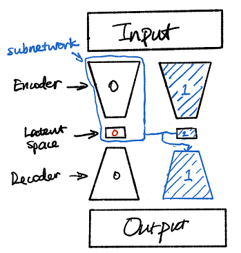

Part 3: Hierarchical PCA Autoencoder¶
In this notebook, I will attempt to implement the hierarchical structure the authors adopted to mimic the function of PCA (see the introduction in Part 1). The trick is to use subnetworks that train one single latent code at a time (while the rest are “fixed”) and stack them sequentially together to train new decoders. This process is depicted in the sketch below:

Synthesize dataset¶
To test the validity of the method, I will create the set of binary ellipses with only two variables (size and axes).
Setup¶
import numpy as np
import matplotlib.pyplot as plt
import tensorflow as tf
from tensorflow import keras
np.random.seed(42)
tf.random.set_seed(42)
Phantom binary ellipses¶
As in the Parts 1, image dimension is kept at (64, 64). The dataset contains 8000 samples and a batch size of 500 will be used for training.
def phantomEllipse(n, a, b):
x = np.arange(n)
R = n // 2
y = x[:, np.newaxis]
img = (x-R)**2/a**2 + (y-R)**2/b**2
img[img<=1] = 1
img[img>1] = 0
return img
n = 64
num_batch = 16
batch_size = 500
N = int(num_batch * batch_size)
random_gen = np.random.default_rng()
a = random_gen.uniform(1, n//2, N)
b = random_gen.uniform(1, n//2, N)
dataset = np.array([phantomEllipse(n, _a, _b) for _a, _b in zip(a, b)])
dataset = dataset[..., np.newaxis]
Let’s sample some images from the dataset:
frames = np.random.choice(np.arange(N), 8)
_, ax = plt.subplots(1, 8, figsize=(12, 3))
for i in range(8):
ax[i].imshow(dataset[frames[i], ..., 0], cmap=plt.get_cmap('gray'))
ax[i].axis("off")
plt.show()
PCA Autoencoder with hierarchy¶
Covariance loss¶
class LatentCovarianceLayer(keras.layers.Layer):
def __init__(self, lam=0.1, **kwargs):
super().__init__(**kwargs)
self.lam = lam
def call(self, inputs):
covariance = self.lam * tf.math.reduce_mean(tf.math.reduce_prod(inputs, 1))
self.add_loss(tf.math.abs(covariance))
self.add_metric(tf.math.abs(covariance), name='cov_loss')
return inputs
def get_config(self):
base_config = super().get_config()
return {**base_config, "lam":self.lam,}
Standard autoencoder components¶
Since we will be reusing the same encoder and decoder architectures, I will define them as functions to be called later. One key difference in this hierarchical autoencoder is that the batch normalization layer could not be directly added prior to the latent space, since the latent space is a concatenation of multiple subnetworks. The solution I came up with is to add it prior to the custom layer for computing covariance loss in the second autoender (since the batch mean needs to be canceled to correctly account for covariance). During my tests, I also tried to explicitly computing the entire covariance loss term but the results were as bad as in the case of the 2-code latent space in Part 1. In addition, I also found out that with this scheme, a nonlinear activation of the latent space did not help with the desired feature distinction. I had to disable the last LeakyReLU layer in the autoencoder to get the model to work consistently.
def encoder_gen(inputs):
x = keras.layers.Conv2D(4, (3, 3), padding='same')(inputs)
x = keras.layers.LeakyReLU()(x)
x = keras.layers.MaxPool2D((2, 2))(x)
x = keras.layers.Conv2D(8, (3, 3), padding='same')(x)
x = keras.layers.LeakyReLU()(x)
x = keras.layers.MaxPool2D((2, 2))(x)
x = keras.layers.Conv2D(16, (3, 3), padding='same')(x)
x = keras.layers.LeakyReLU()(x)
x = keras.layers.MaxPool2D((2, 2))(x)
x = keras.layers.Conv2D(32, (3, 3), padding='same')(x)
x = keras.layers.LeakyReLU()(x)
x = keras.layers.MaxPool2D((2, 2))(x)
x = keras.layers.Conv2D(64, (3, 3), padding='same')(x)
x = keras.layers.LeakyReLU()(x)
x = keras.layers.MaxPool2D((2, 2))(x)
x = keras.layers.Flatten()(x)
x = keras.layers.Dense(1)(x)
return x
def decoder_gen(inputs):
x = keras.layers.Dense(16)(inputs)
x = keras.layers.LeakyReLU()(x)
x = keras.layers.Reshape((2, 2, 4))(x)
x = keras.layers.Conv2DTranspose(32, (3, 3), strides=2, padding='same')(x)
x = keras.layers.LeakyReLU()(x)
x = keras.layers.Conv2DTranspose(16, (3, 3), strides=2, padding='same')(x)
x = keras.layers.LeakyReLU()(x)
x = keras.layers.Conv2DTranspose(8, (3, 3), strides=2, padding='same')(x)
x = keras.layers.LeakyReLU()(x)
x = keras.layers.Conv2DTranspose(4, (3, 3), strides=2, padding='same')(x)
x = keras.layers.LeakyReLU()(x)
x = keras.layers.Conv2DTranspose(1, (3, 3), strides=2, padding='same')(x)
return x
Autoencoder 1¶
The first autoencoder has just one latent code and doesn’t have any additional loss terms.
# SCROLL
keras.backend.clear_session()
input_img = keras.layers.Input(shape=[64, 64, 1])
encoded = encoder_gen(input_img)
decoded = decoder_gen(encoded)
pca_ae = keras.models.Model(input_img, decoded)
optimizer = tf.keras.optimizers.Adam(learning_rate=0.002)
pca_ae.compile(optimizer=optimizer, loss='mse')
tempfn='./model_0.hdf5'
model_cb=keras.callbacks.ModelCheckpoint(tempfn, monitor='loss',save_best_only=True, verbose=1)
early_cb=keras.callbacks.EarlyStopping(monitor='loss', patience=50, verbose=1)
learning_rate_reduction = keras.callbacks.ReduceLROnPlateau(monitor='loss',
patience=25,
verbose=1,
factor=0.5,
min_lr=0.00001)
cb = [model_cb, early_cb, learning_rate_reduction]
history=pca_ae.fit(dataset, dataset,
epochs=1000,
batch_size=500,
shuffle=True,
callbacks=cb)
Epoch 1/1000
16/16 [==============================] - 4s 28ms/step - loss: 0.2013
Epoch 00001: loss improved from inf to 0.20129, saving model to ./model_0.hdf5
Epoch 2/1000
16/16 [==============================] - 0s 28ms/step - loss: 0.1703
Epoch 00002: loss improved from 0.20129 to 0.17031, saving model to ./model_0.hdf5
Epoch 3/1000
16/16 [==============================] - 0s 28ms/step - loss: 0.1177
Epoch 00003: loss improved from 0.17031 to 0.11772, saving model to ./model_0.hdf5
Epoch 4/1000
16/16 [==============================] - 0s 28ms/step - loss: 0.0786
Epoch 00004: loss improved from 0.11772 to 0.07862, saving model to ./model_0.hdf5
Epoch 5/1000
16/16 [==============================] - 0s 28ms/step - loss: 0.0697
Epoch 00005: loss improved from 0.07862 to 0.06967, saving model to ./model_0.hdf5
Epoch 6/1000
16/16 [==============================] - 0s 28ms/step - loss: 0.0669
Epoch 00006: loss improved from 0.06967 to 0.06691, saving model to ./model_0.hdf5
Epoch 7/1000
16/16 [==============================] - 0s 28ms/step - loss: 0.0654
Epoch 00007: loss improved from 0.06691 to 0.06542, saving model to ./model_0.hdf5
Epoch 8/1000
16/16 [==============================] - 0s 29ms/step - loss: 0.0640
Epoch 00008: loss improved from 0.06542 to 0.06401, saving model to ./model_0.hdf5
Epoch 9/1000
16/16 [==============================] - 0s 28ms/step - loss: 0.0625
Epoch 00009: loss improved from 0.06401 to 0.06249, saving model to ./model_0.hdf5
Epoch 10/1000
16/16 [==============================] - 0s 29ms/step - loss: 0.0612
Epoch 00010: loss improved from 0.06249 to 0.06120, saving model to ./model_0.hdf5
Epoch 11/1000
16/16 [==============================] - 0s 28ms/step - loss: 0.0598
Epoch 00011: loss improved from 0.06120 to 0.05976, saving model to ./model_0.hdf5
Epoch 12/1000
16/16 [==============================] - 0s 28ms/step - loss: 0.0585
Epoch 00012: loss improved from 0.05976 to 0.05852, saving model to ./model_0.hdf5
Epoch 13/1000
16/16 [==============================] - 0s 28ms/step - loss: 0.0570
Epoch 00013: loss improved from 0.05852 to 0.05700, saving model to ./model_0.hdf5
Epoch 14/1000
16/16 [==============================] - 0s 28ms/step - loss: 0.0565
Epoch 00014: loss improved from 0.05700 to 0.05652, saving model to ./model_0.hdf5
Epoch 15/1000
16/16 [==============================] - 0s 28ms/step - loss: 0.0547
Epoch 00015: loss improved from 0.05652 to 0.05472, saving model to ./model_0.hdf5
Epoch 16/1000
16/16 [==============================] - 0s 28ms/step - loss: 0.0534
Epoch 00016: loss improved from 0.05472 to 0.05336, saving model to ./model_0.hdf5
Epoch 17/1000
16/16 [==============================] - 0s 28ms/step - loss: 0.0527
Epoch 00017: loss improved from 0.05336 to 0.05273, saving model to ./model_0.hdf5
Epoch 18/1000
16/16 [==============================] - 0s 28ms/step - loss: 0.0510
Epoch 00018: loss improved from 0.05273 to 0.05105, saving model to ./model_0.hdf5
Epoch 19/1000
16/16 [==============================] - 0s 28ms/step - loss: 0.0497
Epoch 00019: loss improved from 0.05105 to 0.04965, saving model to ./model_0.hdf5
Epoch 20/1000
16/16 [==============================] - 0s 28ms/step - loss: 0.0493
Epoch 00020: loss improved from 0.04965 to 0.04928, saving model to ./model_0.hdf5
Epoch 21/1000
16/16 [==============================] - 0s 28ms/step - loss: 0.0475
Epoch 00021: loss improved from 0.04928 to 0.04747, saving model to ./model_0.hdf5
Epoch 22/1000
16/16 [==============================] - 0s 28ms/step - loss: 0.0465
Epoch 00022: loss improved from 0.04747 to 0.04652, saving model to ./model_0.hdf5
Epoch 23/1000
16/16 [==============================] - 0s 28ms/step - loss: 0.0457
Epoch 00023: loss improved from 0.04652 to 0.04568, saving model to ./model_0.hdf5
Epoch 24/1000
16/16 [==============================] - 0s 29ms/step - loss: 0.0455
Epoch 00024: loss improved from 0.04568 to 0.04555, saving model to ./model_0.hdf5
Epoch 25/1000
16/16 [==============================] - 0s 29ms/step - loss: 0.0447
Epoch 00025: loss improved from 0.04555 to 0.04471, saving model to ./model_0.hdf5
Epoch 26/1000
16/16 [==============================] - 0s 28ms/step - loss: 0.0443
Epoch 00026: loss improved from 0.04471 to 0.04429, saving model to ./model_0.hdf5
Epoch 27/1000
16/16 [==============================] - 0s 28ms/step - loss: 0.0440
Epoch 00027: loss improved from 0.04429 to 0.04397, saving model to ./model_0.hdf5
Epoch 28/1000
16/16 [==============================] - 0s 28ms/step - loss: 0.0437
Epoch 00028: loss improved from 0.04397 to 0.04373, saving model to ./model_0.hdf5
Epoch 29/1000
16/16 [==============================] - 0s 29ms/step - loss: 0.0434
Epoch 00029: loss improved from 0.04373 to 0.04340, saving model to ./model_0.hdf5
Epoch 30/1000
16/16 [==============================] - 0s 28ms/step - loss: 0.0434
Epoch 00030: loss improved from 0.04340 to 0.04337, saving model to ./model_0.hdf5
Epoch 31/1000
16/16 [==============================] - 0s 28ms/step - loss: 0.0431
Epoch 00031: loss improved from 0.04337 to 0.04309, saving model to ./model_0.hdf5
Epoch 32/1000
16/16 [==============================] - 0s 28ms/step - loss: 0.0431
Epoch 00032: loss did not improve from 0.04309
Epoch 33/1000
16/16 [==============================] - 0s 29ms/step - loss: 0.0430
Epoch 00033: loss improved from 0.04309 to 0.04298, saving model to ./model_0.hdf5
Epoch 34/1000
16/16 [==============================] - 0s 28ms/step - loss: 0.0426
Epoch 00034: loss improved from 0.04298 to 0.04258, saving model to ./model_0.hdf5
Epoch 35/1000
16/16 [==============================] - 0s 28ms/step - loss: 0.0423
Epoch 00035: loss improved from 0.04258 to 0.04229, saving model to ./model_0.hdf5
Epoch 36/1000
16/16 [==============================] - 0s 28ms/step - loss: 0.0422
Epoch 00036: loss improved from 0.04229 to 0.04222, saving model to ./model_0.hdf5
Epoch 37/1000
16/16 [==============================] - 0s 28ms/step - loss: 0.0420
Epoch 00037: loss improved from 0.04222 to 0.04201, saving model to ./model_0.hdf5
Epoch 38/1000
16/16 [==============================] - 0s 28ms/step - loss: 0.0419
Epoch 00038: loss improved from 0.04201 to 0.04190, saving model to ./model_0.hdf5
Epoch 39/1000
16/16 [==============================] - 0s 29ms/step - loss: 0.0425
Epoch 00039: loss did not improve from 0.04190
Epoch 40/1000
16/16 [==============================] - 0s 29ms/step - loss: 0.0443
Epoch 00040: loss did not improve from 0.04190
Epoch 41/1000
16/16 [==============================] - 0s 29ms/step - loss: 0.0423
Epoch 00041: loss did not improve from 0.04190
Epoch 42/1000
16/16 [==============================] - 0s 29ms/step - loss: 0.0415
Epoch 00042: loss improved from 0.04190 to 0.04150, saving model to ./model_0.hdf5
Epoch 43/1000
16/16 [==============================] - 0s 28ms/step - loss: 0.0412
Epoch 00043: loss improved from 0.04150 to 0.04117, saving model to ./model_0.hdf5
Epoch 44/1000
16/16 [==============================] - 0s 28ms/step - loss: 0.0410
Epoch 00044: loss improved from 0.04117 to 0.04101, saving model to ./model_0.hdf5
Epoch 45/1000
16/16 [==============================] - 0s 28ms/step - loss: 0.0409
Epoch 00045: loss improved from 0.04101 to 0.04091, saving model to ./model_0.hdf5
Epoch 46/1000
16/16 [==============================] - 0s 28ms/step - loss: 0.0407
Epoch 00046: loss improved from 0.04091 to 0.04074, saving model to ./model_0.hdf5
Epoch 47/1000
16/16 [==============================] - 0s 28ms/step - loss: 0.0406
Epoch 00047: loss improved from 0.04074 to 0.04056, saving model to ./model_0.hdf5
Epoch 48/1000
16/16 [==============================] - 0s 29ms/step - loss: 0.0404
Epoch 00048: loss improved from 0.04056 to 0.04035, saving model to ./model_0.hdf5
Epoch 49/1000
16/16 [==============================] - 0s 28ms/step - loss: 0.0402
Epoch 00049: loss improved from 0.04035 to 0.04021, saving model to ./model_0.hdf5
Epoch 50/1000
16/16 [==============================] - 0s 29ms/step - loss: 0.0400
Epoch 00050: loss improved from 0.04021 to 0.04005, saving model to ./model_0.hdf5
Epoch 51/1000
16/16 [==============================] - 0s 28ms/step - loss: 0.0401
Epoch 00051: loss did not improve from 0.04005
Epoch 52/1000
16/16 [==============================] - 0s 29ms/step - loss: 0.0399
Epoch 00052: loss improved from 0.04005 to 0.03989, saving model to ./model_0.hdf5
Epoch 53/1000
16/16 [==============================] - 0s 28ms/step - loss: 0.0395
Epoch 00053: loss improved from 0.03989 to 0.03950, saving model to ./model_0.hdf5
Epoch 54/1000
16/16 [==============================] - 0s 29ms/step - loss: 0.0398
Epoch 00054: loss did not improve from 0.03950
Epoch 55/1000
16/16 [==============================] - 0s 29ms/step - loss: 0.0393
Epoch 00055: loss improved from 0.03950 to 0.03934, saving model to ./model_0.hdf5
Epoch 56/1000
16/16 [==============================] - 0s 29ms/step - loss: 0.0388
Epoch 00056: loss improved from 0.03934 to 0.03878, saving model to ./model_0.hdf5
Epoch 57/1000
16/16 [==============================] - 0s 29ms/step - loss: 0.0386
Epoch 00057: loss improved from 0.03878 to 0.03857, saving model to ./model_0.hdf5
Epoch 58/1000
16/16 [==============================] - 0s 29ms/step - loss: 0.0386
Epoch 00058: loss did not improve from 0.03857
Epoch 59/1000
16/16 [==============================] - 0s 28ms/step - loss: 0.0385
Epoch 00059: loss improved from 0.03857 to 0.03853, saving model to ./model_0.hdf5
Epoch 60/1000
16/16 [==============================] - 0s 29ms/step - loss: 0.0378
Epoch 00060: loss improved from 0.03853 to 0.03784, saving model to ./model_0.hdf5
Epoch 61/1000
16/16 [==============================] - 0s 29ms/step - loss: 0.0378
Epoch 00061: loss improved from 0.03784 to 0.03779, saving model to ./model_0.hdf5
Epoch 62/1000
16/16 [==============================] - 0s 28ms/step - loss: 0.0382
Epoch 00062: loss did not improve from 0.03779
Epoch 63/1000
16/16 [==============================] - 0s 29ms/step - loss: 0.0376
Epoch 00063: loss improved from 0.03779 to 0.03759, saving model to ./model_0.hdf5
Epoch 64/1000
16/16 [==============================] - 0s 28ms/step - loss: 0.0370
Epoch 00064: loss improved from 0.03759 to 0.03703, saving model to ./model_0.hdf5
Epoch 65/1000
16/16 [==============================] - 0s 29ms/step - loss: 0.0370
Epoch 00065: loss improved from 0.03703 to 0.03698, saving model to ./model_0.hdf5
Epoch 66/1000
16/16 [==============================] - 0s 29ms/step - loss: 0.0376
Epoch 00066: loss did not improve from 0.03698
Epoch 67/1000
16/16 [==============================] - 0s 29ms/step - loss: 0.0364
Epoch 00067: loss improved from 0.03698 to 0.03638, saving model to ./model_0.hdf5
Epoch 68/1000
16/16 [==============================] - 0s 29ms/step - loss: 0.0363
Epoch 00068: loss improved from 0.03638 to 0.03633, saving model to ./model_0.hdf5
Epoch 69/1000
16/16 [==============================] - 0s 28ms/step - loss: 0.0377
Epoch 00069: loss did not improve from 0.03633
Epoch 70/1000
16/16 [==============================] - 0s 29ms/step - loss: 0.0375
Epoch 00070: loss did not improve from 0.03633
Epoch 71/1000
16/16 [==============================] - 0s 28ms/step - loss: 0.0357
Epoch 00071: loss improved from 0.03633 to 0.03574, saving model to ./model_0.hdf5
Epoch 72/1000
16/16 [==============================] - 0s 28ms/step - loss: 0.0351
Epoch 00072: loss improved from 0.03574 to 0.03515, saving model to ./model_0.hdf5
Epoch 73/1000
16/16 [==============================] - 0s 28ms/step - loss: 0.0349
Epoch 00073: loss improved from 0.03515 to 0.03487, saving model to ./model_0.hdf5
Epoch 74/1000
16/16 [==============================] - 0s 29ms/step - loss: 0.0347
Epoch 00074: loss improved from 0.03487 to 0.03470, saving model to ./model_0.hdf5
Epoch 75/1000
16/16 [==============================] - 0s 29ms/step - loss: 0.0350
Epoch 00075: loss did not improve from 0.03470
Epoch 76/1000
16/16 [==============================] - 0s 28ms/step - loss: 0.0349
Epoch 00076: loss did not improve from 0.03470
Epoch 77/1000
16/16 [==============================] - 0s 29ms/step - loss: 0.0348
Epoch 00077: loss did not improve from 0.03470
Epoch 78/1000
16/16 [==============================] - 0s 29ms/step - loss: 0.0341
Epoch 00078: loss improved from 0.03470 to 0.03407, saving model to ./model_0.hdf5
Epoch 79/1000
16/16 [==============================] - 0s 28ms/step - loss: 0.0339
Epoch 00079: loss improved from 0.03407 to 0.03387, saving model to ./model_0.hdf5
Epoch 80/1000
16/16 [==============================] - 0s 28ms/step - loss: 0.0344
Epoch 00080: loss did not improve from 0.03387
Epoch 81/1000
16/16 [==============================] - 0s 28ms/step - loss: 0.0340
Epoch 00081: loss did not improve from 0.03387
Epoch 82/1000
16/16 [==============================] - 0s 29ms/step - loss: 0.0335
Epoch 00082: loss improved from 0.03387 to 0.03348, saving model to ./model_0.hdf5
Epoch 83/1000
16/16 [==============================] - 0s 29ms/step - loss: 0.0341
Epoch 00083: loss did not improve from 0.03348
Epoch 84/1000
16/16 [==============================] - 0s 29ms/step - loss: 0.0345
Epoch 00084: loss did not improve from 0.03348
Epoch 85/1000
16/16 [==============================] - 0s 29ms/step - loss: 0.0332
Epoch 00085: loss improved from 0.03348 to 0.03324, saving model to ./model_0.hdf5
Epoch 86/1000
16/16 [==============================] - 0s 28ms/step - loss: 0.0327
Epoch 00086: loss improved from 0.03324 to 0.03270, saving model to ./model_0.hdf5
Epoch 87/1000
16/16 [==============================] - 0s 29ms/step - loss: 0.0329
Epoch 00087: loss did not improve from 0.03270
Epoch 88/1000
16/16 [==============================] - 0s 29ms/step - loss: 0.0324
Epoch 00088: loss improved from 0.03270 to 0.03237, saving model to ./model_0.hdf5
Epoch 89/1000
16/16 [==============================] - 0s 29ms/step - loss: 0.0323
Epoch 00089: loss improved from 0.03237 to 0.03232, saving model to ./model_0.hdf5
Epoch 90/1000
16/16 [==============================] - 0s 29ms/step - loss: 0.0344
Epoch 00090: loss did not improve from 0.03232
Epoch 91/1000
16/16 [==============================] - 0s 28ms/step - loss: 0.0330
Epoch 00091: loss did not improve from 0.03232
Epoch 92/1000
16/16 [==============================] - 0s 28ms/step - loss: 0.0325
Epoch 00092: loss did not improve from 0.03232
Epoch 93/1000
16/16 [==============================] - 0s 28ms/step - loss: 0.0321
Epoch 00093: loss improved from 0.03232 to 0.03207, saving model to ./model_0.hdf5
Epoch 94/1000
16/16 [==============================] - 0s 28ms/step - loss: 0.0317
Epoch 00094: loss improved from 0.03207 to 0.03169, saving model to ./model_0.hdf5
Epoch 95/1000
16/16 [==============================] - 0s 29ms/step - loss: 0.0314
Epoch 00095: loss improved from 0.03169 to 0.03144, saving model to ./model_0.hdf5
Epoch 96/1000
16/16 [==============================] - 0s 28ms/step - loss: 0.0315
Epoch 00096: loss did not improve from 0.03144
Epoch 97/1000
16/16 [==============================] - 0s 29ms/step - loss: 0.0314
Epoch 00097: loss improved from 0.03144 to 0.03142, saving model to ./model_0.hdf5
Epoch 98/1000
16/16 [==============================] - 0s 29ms/step - loss: 0.0319
Epoch 00098: loss did not improve from 0.03142
Epoch 99/1000
16/16 [==============================] - 0s 28ms/step - loss: 0.0312
Epoch 00099: loss improved from 0.03142 to 0.03123, saving model to ./model_0.hdf5
Epoch 100/1000
16/16 [==============================] - 0s 29ms/step - loss: 0.0313
Epoch 00100: loss did not improve from 0.03123
Epoch 101/1000
16/16 [==============================] - 0s 29ms/step - loss: 0.0318
Epoch 00101: loss did not improve from 0.03123
Epoch 102/1000
16/16 [==============================] - 0s 29ms/step - loss: 0.0310
Epoch 00102: loss improved from 0.03123 to 0.03099, saving model to ./model_0.hdf5
Epoch 103/1000
16/16 [==============================] - 0s 29ms/step - loss: 0.0308
Epoch 00103: loss improved from 0.03099 to 0.03078, saving model to ./model_0.hdf5
Epoch 104/1000
16/16 [==============================] - 0s 29ms/step - loss: 0.0307
Epoch 00104: loss improved from 0.03078 to 0.03074, saving model to ./model_0.hdf5
Epoch 105/1000
16/16 [==============================] - 0s 28ms/step - loss: 0.0317
Epoch 00105: loss did not improve from 0.03074
Epoch 106/1000
16/16 [==============================] - 0s 29ms/step - loss: 0.0315
Epoch 00106: loss did not improve from 0.03074
Epoch 107/1000
16/16 [==============================] - 0s 28ms/step - loss: 0.0304
Epoch 00107: loss improved from 0.03074 to 0.03044, saving model to ./model_0.hdf5
Epoch 108/1000
16/16 [==============================] - 0s 29ms/step - loss: 0.0303
Epoch 00108: loss improved from 0.03044 to 0.03031, saving model to ./model_0.hdf5
Epoch 109/1000
16/16 [==============================] - 0s 28ms/step - loss: 0.0303
Epoch 00109: loss improved from 0.03031 to 0.03030, saving model to ./model_0.hdf5
Epoch 110/1000
16/16 [==============================] - 0s 29ms/step - loss: 0.0301
Epoch 00110: loss improved from 0.03030 to 0.03011, saving model to ./model_0.hdf5
Epoch 111/1000
16/16 [==============================] - 0s 29ms/step - loss: 0.0311
Epoch 00111: loss did not improve from 0.03011
Epoch 112/1000
16/16 [==============================] - 0s 29ms/step - loss: 0.0304
Epoch 00112: loss did not improve from 0.03011
Epoch 113/1000
16/16 [==============================] - 0s 29ms/step - loss: 0.0297
Epoch 00113: loss improved from 0.03011 to 0.02965, saving model to ./model_0.hdf5
Epoch 114/1000
16/16 [==============================] - 0s 29ms/step - loss: 0.0300
Epoch 00114: loss did not improve from 0.02965
Epoch 115/1000
16/16 [==============================] - 0s 28ms/step - loss: 0.0301
Epoch 00115: loss did not improve from 0.02965
Epoch 116/1000
16/16 [==============================] - 0s 29ms/step - loss: 0.0300
Epoch 00116: loss did not improve from 0.02965
Epoch 117/1000
16/16 [==============================] - 0s 29ms/step - loss: 0.0300
Epoch 00117: loss did not improve from 0.02965
Epoch 118/1000
16/16 [==============================] - 0s 28ms/step - loss: 0.0296
Epoch 00118: loss improved from 0.02965 to 0.02961, saving model to ./model_0.hdf5
Epoch 119/1000
16/16 [==============================] - 0s 28ms/step - loss: 0.0297
Epoch 00119: loss did not improve from 0.02961
Epoch 120/1000
16/16 [==============================] - 0s 29ms/step - loss: 0.0293
Epoch 00120: loss improved from 0.02961 to 0.02931, saving model to ./model_0.hdf5
Epoch 121/1000
16/16 [==============================] - 0s 28ms/step - loss: 0.0294
Epoch 00121: loss did not improve from 0.02931
Epoch 122/1000
16/16 [==============================] - 0s 28ms/step - loss: 0.0299
Epoch 00122: loss did not improve from 0.02931
Epoch 123/1000
16/16 [==============================] - 0s 29ms/step - loss: 0.0315
Epoch 00123: loss did not improve from 0.02931
Epoch 124/1000
16/16 [==============================] - 0s 28ms/step - loss: 0.0293
Epoch 00124: loss did not improve from 0.02931
Epoch 125/1000
16/16 [==============================] - 0s 28ms/step - loss: 0.0288
Epoch 00125: loss improved from 0.02931 to 0.02880, saving model to ./model_0.hdf5
Epoch 126/1000
16/16 [==============================] - 0s 29ms/step - loss: 0.0288
Epoch 00126: loss improved from 0.02880 to 0.02878, saving model to ./model_0.hdf5
Epoch 127/1000
16/16 [==============================] - 0s 28ms/step - loss: 0.0290
Epoch 00127: loss did not improve from 0.02878
Epoch 128/1000
16/16 [==============================] - 0s 28ms/step - loss: 0.0298
Epoch 00128: loss did not improve from 0.02878
Epoch 129/1000
16/16 [==============================] - 0s 29ms/step - loss: 0.0294
Epoch 00129: loss did not improve from 0.02878
Epoch 130/1000
16/16 [==============================] - 0s 29ms/step - loss: 0.0285
Epoch 00130: loss improved from 0.02878 to 0.02848, saving model to ./model_0.hdf5
Epoch 131/1000
16/16 [==============================] - 0s 29ms/step - loss: 0.0285
Epoch 00131: loss improved from 0.02848 to 0.02847, saving model to ./model_0.hdf5
Epoch 132/1000
16/16 [==============================] - 0s 28ms/step - loss: 0.0290
Epoch 00132: loss did not improve from 0.02847
Epoch 133/1000
16/16 [==============================] - 0s 29ms/step - loss: 0.0288
Epoch 00133: loss did not improve from 0.02847
Epoch 134/1000
16/16 [==============================] - 0s 29ms/step - loss: 0.0286
Epoch 00134: loss did not improve from 0.02847
Epoch 135/1000
16/16 [==============================] - 0s 29ms/step - loss: 0.0284
Epoch 00135: loss improved from 0.02847 to 0.02837, saving model to ./model_0.hdf5
Epoch 136/1000
16/16 [==============================] - 0s 29ms/step - loss: 0.0283
Epoch 00136: loss improved from 0.02837 to 0.02826, saving model to ./model_0.hdf5
Epoch 137/1000
16/16 [==============================] - 0s 29ms/step - loss: 0.0295
Epoch 00137: loss did not improve from 0.02826
Epoch 138/1000
16/16 [==============================] - 0s 28ms/step - loss: 0.0292
Epoch 00138: loss did not improve from 0.02826
Epoch 139/1000
16/16 [==============================] - 0s 28ms/step - loss: 0.0281
Epoch 00139: loss improved from 0.02826 to 0.02810, saving model to ./model_0.hdf5
Epoch 140/1000
16/16 [==============================] - 0s 28ms/step - loss: 0.0280
Epoch 00140: loss improved from 0.02810 to 0.02796, saving model to ./model_0.hdf5
Epoch 141/1000
16/16 [==============================] - 0s 29ms/step - loss: 0.0279
Epoch 00141: loss improved from 0.02796 to 0.02794, saving model to ./model_0.hdf5
Epoch 142/1000
16/16 [==============================] - 0s 29ms/step - loss: 0.0277
Epoch 00142: loss improved from 0.02794 to 0.02775, saving model to ./model_0.hdf5
Epoch 143/1000
16/16 [==============================] - 0s 28ms/step - loss: 0.0285
Epoch 00143: loss did not improve from 0.02775
Epoch 144/1000
16/16 [==============================] - 0s 28ms/step - loss: 0.0284
Epoch 00144: loss did not improve from 0.02775
Epoch 145/1000
16/16 [==============================] - 0s 29ms/step - loss: 0.0285
Epoch 00145: loss did not improve from 0.02775
Epoch 146/1000
16/16 [==============================] - 0s 28ms/step - loss: 0.0278
Epoch 00146: loss did not improve from 0.02775
Epoch 147/1000
16/16 [==============================] - 0s 29ms/step - loss: 0.0276
Epoch 00147: loss improved from 0.02775 to 0.02763, saving model to ./model_0.hdf5
Epoch 148/1000
16/16 [==============================] - 0s 28ms/step - loss: 0.0286
Epoch 00148: loss did not improve from 0.02763
Epoch 149/1000
16/16 [==============================] - 0s 28ms/step - loss: 0.0275
Epoch 00149: loss improved from 0.02763 to 0.02754, saving model to ./model_0.hdf5
Epoch 150/1000
16/16 [==============================] - 0s 29ms/step - loss: 0.0275
Epoch 00150: loss improved from 0.02754 to 0.02746, saving model to ./model_0.hdf5
Epoch 151/1000
16/16 [==============================] - 0s 29ms/step - loss: 0.0278
Epoch 00151: loss did not improve from 0.02746
Epoch 152/1000
16/16 [==============================] - 0s 28ms/step - loss: 0.0274
Epoch 00152: loss improved from 0.02746 to 0.02743, saving model to ./model_0.hdf5
Epoch 153/1000
16/16 [==============================] - 0s 28ms/step - loss: 0.0273
Epoch 00153: loss improved from 0.02743 to 0.02731, saving model to ./model_0.hdf5
Epoch 154/1000
16/16 [==============================] - 0s 29ms/step - loss: 0.0276
Epoch 00154: loss did not improve from 0.02731
Epoch 155/1000
16/16 [==============================] - 0s 28ms/step - loss: 0.0282
Epoch 00155: loss did not improve from 0.02731
Epoch 156/1000
16/16 [==============================] - 0s 29ms/step - loss: 0.0273
Epoch 00156: loss did not improve from 0.02731
Epoch 157/1000
16/16 [==============================] - 0s 29ms/step - loss: 0.0275
Epoch 00157: loss did not improve from 0.02731
Epoch 158/1000
16/16 [==============================] - 0s 29ms/step - loss: 0.0271
Epoch 00158: loss improved from 0.02731 to 0.02710, saving model to ./model_0.hdf5
Epoch 159/1000
16/16 [==============================] - 0s 28ms/step - loss: 0.0273
Epoch 00159: loss did not improve from 0.02710
Epoch 160/1000
16/16 [==============================] - 0s 29ms/step - loss: 0.0276
Epoch 00160: loss did not improve from 0.02710
Epoch 161/1000
16/16 [==============================] - 0s 28ms/step - loss: 0.0277
Epoch 00161: loss did not improve from 0.02710
Epoch 162/1000
16/16 [==============================] - 0s 29ms/step - loss: 0.0275
Epoch 00162: loss did not improve from 0.02710
Epoch 163/1000
16/16 [==============================] - 0s 29ms/step - loss: 0.0270
Epoch 00163: loss improved from 0.02710 to 0.02704, saving model to ./model_0.hdf5
Epoch 164/1000
16/16 [==============================] - 0s 29ms/step - loss: 0.0273
Epoch 00164: loss did not improve from 0.02704
Epoch 165/1000
16/16 [==============================] - 0s 29ms/step - loss: 0.0270
Epoch 00165: loss improved from 0.02704 to 0.02702, saving model to ./model_0.hdf5
Epoch 166/1000
16/16 [==============================] - 0s 29ms/step - loss: 0.0269
Epoch 00166: loss improved from 0.02702 to 0.02690, saving model to ./model_0.hdf5
Epoch 167/1000
16/16 [==============================] - 0s 28ms/step - loss: 0.0267
Epoch 00167: loss improved from 0.02690 to 0.02673, saving model to ./model_0.hdf5
Epoch 168/1000
16/16 [==============================] - 0s 29ms/step - loss: 0.0274
Epoch 00168: loss did not improve from 0.02673
Epoch 169/1000
16/16 [==============================] - 0s 29ms/step - loss: 0.0281
Epoch 00169: loss did not improve from 0.02673
Epoch 170/1000
16/16 [==============================] - 0s 29ms/step - loss: 0.0267
Epoch 00170: loss did not improve from 0.02673
Epoch 171/1000
16/16 [==============================] - 0s 29ms/step - loss: 0.0267
Epoch 00171: loss improved from 0.02673 to 0.02671, saving model to ./model_0.hdf5
Epoch 172/1000
16/16 [==============================] - 0s 29ms/step - loss: 0.0270
Epoch 00172: loss did not improve from 0.02671
Epoch 173/1000
16/16 [==============================] - 0s 29ms/step - loss: 0.0267
Epoch 00173: loss did not improve from 0.02671
Epoch 174/1000
16/16 [==============================] - 0s 28ms/step - loss: 0.0271
Epoch 00174: loss did not improve from 0.02671
Epoch 175/1000
16/16 [==============================] - 0s 28ms/step - loss: 0.0269
Epoch 00175: loss did not improve from 0.02671
Epoch 176/1000
16/16 [==============================] - 0s 29ms/step - loss: 0.0264
Epoch 00176: loss improved from 0.02671 to 0.02642, saving model to ./model_0.hdf5
Epoch 177/1000
16/16 [==============================] - 0s 29ms/step - loss: 0.0262
Epoch 00177: loss improved from 0.02642 to 0.02617, saving model to ./model_0.hdf5
Epoch 178/1000
16/16 [==============================] - 0s 29ms/step - loss: 0.0263
Epoch 00178: loss did not improve from 0.02617
Epoch 179/1000
16/16 [==============================] - 0s 28ms/step - loss: 0.0266
Epoch 00179: loss did not improve from 0.02617
Epoch 180/1000
16/16 [==============================] - 0s 29ms/step - loss: 0.0264
Epoch 00180: loss did not improve from 0.02617
Epoch 181/1000
16/16 [==============================] - 0s 28ms/step - loss: 0.0265
Epoch 00181: loss did not improve from 0.02617
Epoch 182/1000
16/16 [==============================] - 0s 29ms/step - loss: 0.0272
Epoch 00182: loss did not improve from 0.02617
Epoch 183/1000
16/16 [==============================] - 0s 28ms/step - loss: 0.0275
Epoch 00183: loss did not improve from 0.02617
Epoch 184/1000
16/16 [==============================] - 0s 29ms/step - loss: 0.0266
Epoch 00184: loss did not improve from 0.02617
Epoch 185/1000
16/16 [==============================] - 0s 28ms/step - loss: 0.0269
Epoch 00185: loss did not improve from 0.02617
Epoch 186/1000
16/16 [==============================] - 0s 29ms/step - loss: 0.0268
Epoch 00186: loss did not improve from 0.02617
Epoch 187/1000
16/16 [==============================] - 0s 29ms/step - loss: 0.0263
Epoch 00187: loss did not improve from 0.02617
Epoch 188/1000
16/16 [==============================] - 0s 28ms/step - loss: 0.0261
Epoch 00188: loss improved from 0.02617 to 0.02615, saving model to ./model_0.hdf5
Epoch 189/1000
16/16 [==============================] - 0s 29ms/step - loss: 0.0263
Epoch 00189: loss did not improve from 0.02615
Epoch 190/1000
16/16 [==============================] - 0s 29ms/step - loss: 0.0260
Epoch 00190: loss improved from 0.02615 to 0.02604, saving model to ./model_0.hdf5
Epoch 191/1000
16/16 [==============================] - 0s 29ms/step - loss: 0.0266
Epoch 00191: loss did not improve from 0.02604
Epoch 192/1000
16/16 [==============================] - 0s 28ms/step - loss: 0.0269
Epoch 00192: loss did not improve from 0.02604
Epoch 193/1000
16/16 [==============================] - 0s 29ms/step - loss: 0.0260
Epoch 00193: loss improved from 0.02604 to 0.02601, saving model to ./model_0.hdf5
Epoch 194/1000
16/16 [==============================] - 0s 29ms/step - loss: 0.0259
Epoch 00194: loss improved from 0.02601 to 0.02585, saving model to ./model_0.hdf5
Epoch 195/1000
16/16 [==============================] - 0s 29ms/step - loss: 0.0257
Epoch 00195: loss improved from 0.02585 to 0.02565, saving model to ./model_0.hdf5
Epoch 196/1000
16/16 [==============================] - 0s 29ms/step - loss: 0.0259
Epoch 00196: loss did not improve from 0.02565
Epoch 197/1000
16/16 [==============================] - 0s 28ms/step - loss: 0.0271
Epoch 00197: loss did not improve from 0.02565
Epoch 198/1000
16/16 [==============================] - 0s 29ms/step - loss: 0.0270
Epoch 00198: loss did not improve from 0.02565
Epoch 199/1000
16/16 [==============================] - 0s 29ms/step - loss: 0.0264
Epoch 00199: loss did not improve from 0.02565
Epoch 200/1000
16/16 [==============================] - 0s 29ms/step - loss: 0.0259
Epoch 00200: loss did not improve from 0.02565
Epoch 201/1000
16/16 [==============================] - 0s 29ms/step - loss: 0.0256
Epoch 00201: loss improved from 0.02565 to 0.02561, saving model to ./model_0.hdf5
Epoch 202/1000
16/16 [==============================] - 0s 30ms/step - loss: 0.0270
Epoch 00202: loss did not improve from 0.02561
Epoch 203/1000
16/16 [==============================] - 0s 28ms/step - loss: 0.0279
Epoch 00203: loss did not improve from 0.02561
Epoch 204/1000
16/16 [==============================] - 0s 29ms/step - loss: 0.0266
Epoch 00204: loss did not improve from 0.02561
Epoch 205/1000
16/16 [==============================] - 0s 28ms/step - loss: 0.0256
Epoch 00205: loss did not improve from 0.02561
Epoch 206/1000
16/16 [==============================] - 0s 29ms/step - loss: 0.0257
Epoch 00206: loss did not improve from 0.02561
Epoch 207/1000
16/16 [==============================] - 0s 29ms/step - loss: 0.0257
Epoch 00207: loss did not improve from 0.02561
Epoch 208/1000
16/16 [==============================] - 0s 29ms/step - loss: 0.0256
Epoch 00208: loss did not improve from 0.02561
Epoch 209/1000
16/16 [==============================] - 0s 28ms/step - loss: 0.0256
Epoch 00209: loss improved from 0.02561 to 0.02560, saving model to ./model_0.hdf5
Epoch 210/1000
16/16 [==============================] - 0s 28ms/step - loss: 0.0262
Epoch 00210: loss did not improve from 0.02560
Epoch 211/1000
16/16 [==============================] - 0s 29ms/step - loss: 0.0262
Epoch 00211: loss did not improve from 0.02560
Epoch 212/1000
16/16 [==============================] - 0s 29ms/step - loss: 0.0258
Epoch 00212: loss did not improve from 0.02560
Epoch 213/1000
16/16 [==============================] - 0s 29ms/step - loss: 0.0259
Epoch 00213: loss did not improve from 0.02560
Epoch 214/1000
16/16 [==============================] - 0s 29ms/step - loss: 0.0259
Epoch 00214: loss did not improve from 0.02560
Epoch 215/1000
16/16 [==============================] - 0s 29ms/step - loss: 0.0260
Epoch 00215: loss did not improve from 0.02560
Epoch 216/1000
16/16 [==============================] - 0s 29ms/step - loss: 0.0253
Epoch 00216: loss improved from 0.02560 to 0.02527, saving model to ./model_0.hdf5
Epoch 217/1000
16/16 [==============================] - 0s 29ms/step - loss: 0.0254
Epoch 00217: loss did not improve from 0.02527
Epoch 218/1000
16/16 [==============================] - 0s 29ms/step - loss: 0.0252
Epoch 00218: loss improved from 0.02527 to 0.02521, saving model to ./model_0.hdf5
Epoch 219/1000
16/16 [==============================] - 0s 29ms/step - loss: 0.0254
Epoch 00219: loss did not improve from 0.02521
Epoch 220/1000
16/16 [==============================] - 0s 29ms/step - loss: 0.0252
Epoch 00220: loss did not improve from 0.02521
Epoch 221/1000
16/16 [==============================] - 0s 28ms/step - loss: 0.0254
Epoch 00221: loss did not improve from 0.02521
Epoch 222/1000
16/16 [==============================] - 0s 30ms/step - loss: 0.0255
Epoch 00222: loss did not improve from 0.02521
Epoch 223/1000
16/16 [==============================] - 0s 29ms/step - loss: 0.0255
Epoch 00223: loss did not improve from 0.02521
Epoch 224/1000
16/16 [==============================] - 0s 29ms/step - loss: 0.0252
Epoch 00224: loss did not improve from 0.02521
Epoch 225/1000
16/16 [==============================] - 0s 29ms/step - loss: 0.0261
Epoch 00225: loss did not improve from 0.02521
Epoch 226/1000
16/16 [==============================] - 0s 29ms/step - loss: 0.0259
Epoch 00226: loss did not improve from 0.02521
Epoch 227/1000
16/16 [==============================] - 0s 29ms/step - loss: 0.0251
Epoch 00227: loss improved from 0.02521 to 0.02513, saving model to ./model_0.hdf5
Epoch 228/1000
16/16 [==============================] - 0s 29ms/step - loss: 0.0251
Epoch 00228: loss improved from 0.02513 to 0.02512, saving model to ./model_0.hdf5
Epoch 229/1000
16/16 [==============================] - 0s 29ms/step - loss: 0.0270
Epoch 00229: loss did not improve from 0.02512
Epoch 230/1000
16/16 [==============================] - 0s 30ms/step - loss: 0.0269
Epoch 00230: loss did not improve from 0.02512
Epoch 231/1000
16/16 [==============================] - 0s 29ms/step - loss: 0.0262
Epoch 00231: loss did not improve from 0.02512
Epoch 232/1000
16/16 [==============================] - 0s 28ms/step - loss: 0.0252
Epoch 00232: loss did not improve from 0.02512
Epoch 233/1000
16/16 [==============================] - 0s 29ms/step - loss: 0.0249
Epoch 00233: loss improved from 0.02512 to 0.02490, saving model to ./model_0.hdf5
Epoch 234/1000
16/16 [==============================] - 0s 29ms/step - loss: 0.0249
Epoch 00234: loss did not improve from 0.02490
Epoch 235/1000
16/16 [==============================] - 0s 29ms/step - loss: 0.0249
Epoch 00235: loss did not improve from 0.02490
Epoch 236/1000
16/16 [==============================] - 0s 29ms/step - loss: 0.0248
Epoch 00236: loss improved from 0.02490 to 0.02485, saving model to ./model_0.hdf5
Epoch 237/1000
16/16 [==============================] - 0s 29ms/step - loss: 0.0253
Epoch 00237: loss did not improve from 0.02485
Epoch 238/1000
16/16 [==============================] - 0s 29ms/step - loss: 0.0251
Epoch 00238: loss did not improve from 0.02485
Epoch 239/1000
16/16 [==============================] - 0s 28ms/step - loss: 0.0252
Epoch 00239: loss did not improve from 0.02485
Epoch 240/1000
16/16 [==============================] - 0s 29ms/step - loss: 0.0247
Epoch 00240: loss improved from 0.02485 to 0.02469, saving model to ./model_0.hdf5
Epoch 241/1000
16/16 [==============================] - 0s 29ms/step - loss: 0.0247
Epoch 00241: loss did not improve from 0.02469
Epoch 242/1000
16/16 [==============================] - 0s 28ms/step - loss: 0.0246
Epoch 00242: loss improved from 0.02469 to 0.02463, saving model to ./model_0.hdf5
Epoch 243/1000
16/16 [==============================] - 0s 29ms/step - loss: 0.0249
Epoch 00243: loss did not improve from 0.02463
Epoch 244/1000
16/16 [==============================] - 0s 30ms/step - loss: 0.0249
Epoch 00244: loss did not improve from 0.02463
Epoch 245/1000
16/16 [==============================] - 0s 29ms/step - loss: 0.0246
Epoch 00245: loss did not improve from 0.02463
Epoch 246/1000
16/16 [==============================] - 0s 29ms/step - loss: 0.0252
Epoch 00246: loss did not improve from 0.02463
Epoch 247/1000
16/16 [==============================] - 0s 28ms/step - loss: 0.0247
Epoch 00247: loss did not improve from 0.02463
Epoch 248/1000
16/16 [==============================] - 0s 30ms/step - loss: 0.0248
Epoch 00248: loss did not improve from 0.02463
Epoch 249/1000
16/16 [==============================] - 0s 30ms/step - loss: 0.0263
Epoch 00249: loss did not improve from 0.02463
Epoch 250/1000
16/16 [==============================] - 0s 29ms/step - loss: 0.0250
Epoch 00250: loss did not improve from 0.02463
Epoch 251/1000
16/16 [==============================] - 0s 30ms/step - loss: 0.0246
Epoch 00251: loss improved from 0.02463 to 0.02463, saving model to ./model_0.hdf5
Epoch 252/1000
16/16 [==============================] - 0s 30ms/step - loss: 0.0248
Epoch 00252: loss did not improve from 0.02463
Epoch 253/1000
16/16 [==============================] - 0s 30ms/step - loss: 0.0251
Epoch 00253: loss did not improve from 0.02463
Epoch 254/1000
16/16 [==============================] - 0s 28ms/step - loss: 0.0252
Epoch 00254: loss did not improve from 0.02463
Epoch 255/1000
16/16 [==============================] - 0s 28ms/step - loss: 0.0249
Epoch 00255: loss did not improve from 0.02463
Epoch 256/1000
16/16 [==============================] - 0s 30ms/step - loss: 0.0243
Epoch 00256: loss improved from 0.02463 to 0.02430, saving model to ./model_0.hdf5
Epoch 257/1000
16/16 [==============================] - 0s 30ms/step - loss: 0.0246
Epoch 00257: loss did not improve from 0.02430
Epoch 258/1000
16/16 [==============================] - 0s 29ms/step - loss: 0.0244
Epoch 00258: loss did not improve from 0.02430
Epoch 259/1000
16/16 [==============================] - 0s 29ms/step - loss: 0.0243
Epoch 00259: loss did not improve from 0.02430
Epoch 260/1000
16/16 [==============================] - 0s 29ms/step - loss: 0.0252
Epoch 00260: loss did not improve from 0.02430
Epoch 261/1000
16/16 [==============================] - 0s 30ms/step - loss: 0.0260
Epoch 00261: loss did not improve from 0.02430
Epoch 262/1000
16/16 [==============================] - 0s 30ms/step - loss: 0.0251
Epoch 00262: loss did not improve from 0.02430
Epoch 263/1000
16/16 [==============================] - 0s 30ms/step - loss: 0.0246
Epoch 00263: loss did not improve from 0.02430
Epoch 264/1000
16/16 [==============================] - 0s 30ms/step - loss: 0.0242
Epoch 00264: loss improved from 0.02430 to 0.02420, saving model to ./model_0.hdf5
Epoch 265/1000
16/16 [==============================] - 0s 30ms/step - loss: 0.0243
Epoch 00265: loss did not improve from 0.02420
Epoch 266/1000
16/16 [==============================] - 0s 29ms/step - loss: 0.0242
Epoch 00266: loss improved from 0.02420 to 0.02415, saving model to ./model_0.hdf5
Epoch 267/1000
16/16 [==============================] - 0s 30ms/step - loss: 0.0245
Epoch 00267: loss did not improve from 0.02415
Epoch 268/1000
16/16 [==============================] - 0s 28ms/step - loss: 0.0252
Epoch 00268: loss did not improve from 0.02415
Epoch 269/1000
16/16 [==============================] - 0s 30ms/step - loss: 0.0252
Epoch 00269: loss did not improve from 0.02415
Epoch 270/1000
16/16 [==============================] - 0s 28ms/step - loss: 0.0244
Epoch 00270: loss did not improve from 0.02415
Epoch 271/1000
16/16 [==============================] - 0s 29ms/step - loss: 0.0242
Epoch 00271: loss did not improve from 0.02415
Epoch 272/1000
16/16 [==============================] - 0s 29ms/step - loss: 0.0253
Epoch 00272: loss did not improve from 0.02415
Epoch 273/1000
16/16 [==============================] - 0s 29ms/step - loss: 0.0251
Epoch 00273: loss did not improve from 0.02415
Epoch 274/1000
16/16 [==============================] - 0s 29ms/step - loss: 0.0239
Epoch 00274: loss improved from 0.02415 to 0.02393, saving model to ./model_0.hdf5
Epoch 275/1000
16/16 [==============================] - 0s 29ms/step - loss: 0.0238
Epoch 00275: loss improved from 0.02393 to 0.02382, saving model to ./model_0.hdf5
Epoch 276/1000
16/16 [==============================] - 0s 29ms/step - loss: 0.0249
Epoch 00276: loss did not improve from 0.02382
Epoch 277/1000
16/16 [==============================] - 0s 30ms/step - loss: 0.0245
Epoch 00277: loss did not improve from 0.02382
Epoch 278/1000
16/16 [==============================] - 0s 30ms/step - loss: 0.0245
Epoch 00278: loss did not improve from 0.02382
Epoch 279/1000
16/16 [==============================] - 0s 30ms/step - loss: 0.0242
Epoch 00279: loss did not improve from 0.02382
Epoch 280/1000
16/16 [==============================] - 0s 29ms/step - loss: 0.0239
Epoch 00280: loss did not improve from 0.02382
Epoch 281/1000
16/16 [==============================] - 0s 29ms/step - loss: 0.0239
Epoch 00281: loss did not improve from 0.02382
Epoch 282/1000
16/16 [==============================] - 0s 29ms/step - loss: 0.0240
Epoch 00282: loss did not improve from 0.02382
Epoch 283/1000
16/16 [==============================] - 0s 30ms/step - loss: 0.0239
Epoch 00283: loss did not improve from 0.02382
Epoch 284/1000
16/16 [==============================] - 0s 29ms/step - loss: 0.0246
Epoch 00284: loss did not improve from 0.02382
Epoch 285/1000
16/16 [==============================] - 0s 28ms/step - loss: 0.0249
Epoch 00285: loss did not improve from 0.02382
Epoch 286/1000
16/16 [==============================] - 0s 31ms/step - loss: 0.0251
Epoch 00286: loss did not improve from 0.02382
Epoch 287/1000
16/16 [==============================] - 0s 29ms/step - loss: 0.0241
Epoch 00287: loss did not improve from 0.02382
Epoch 288/1000
16/16 [==============================] - 0s 29ms/step - loss: 0.0242
Epoch 00288: loss did not improve from 0.02382
Epoch 289/1000
16/16 [==============================] - 0s 30ms/step - loss: 0.0236
Epoch 00289: loss improved from 0.02382 to 0.02363, saving model to ./model_0.hdf5
Epoch 290/1000
16/16 [==============================] - 0s 29ms/step - loss: 0.0234
Epoch 00290: loss improved from 0.02363 to 0.02341, saving model to ./model_0.hdf5
Epoch 291/1000
16/16 [==============================] - 0s 29ms/step - loss: 0.0236
Epoch 00291: loss did not improve from 0.02341
Epoch 292/1000
16/16 [==============================] - 0s 29ms/step - loss: 0.0241
Epoch 00292: loss did not improve from 0.02341
Epoch 293/1000
16/16 [==============================] - 0s 28ms/step - loss: 0.0240
Epoch 00293: loss did not improve from 0.02341
Epoch 294/1000
16/16 [==============================] - 0s 28ms/step - loss: 0.0236
Epoch 00294: loss did not improve from 0.02341
Epoch 295/1000
16/16 [==============================] - 0s 29ms/step - loss: 0.0238
Epoch 00295: loss did not improve from 0.02341
Epoch 296/1000
16/16 [==============================] - 0s 29ms/step - loss: 0.0235
Epoch 00296: loss did not improve from 0.02341
Epoch 297/1000
16/16 [==============================] - 0s 29ms/step - loss: 0.0240
Epoch 00297: loss did not improve from 0.02341
Epoch 298/1000
16/16 [==============================] - 0s 29ms/step - loss: 0.0244
Epoch 00298: loss did not improve from 0.02341
Epoch 299/1000
16/16 [==============================] - 0s 29ms/step - loss: 0.0241
Epoch 00299: loss did not improve from 0.02341
Epoch 300/1000
16/16 [==============================] - 0s 30ms/step - loss: 0.0238
Epoch 00300: loss did not improve from 0.02341
Epoch 301/1000
16/16 [==============================] - 0s 30ms/step - loss: 0.0234
Epoch 00301: loss improved from 0.02341 to 0.02339, saving model to ./model_0.hdf5
Epoch 302/1000
16/16 [==============================] - 0s 29ms/step - loss: 0.0232
Epoch 00302: loss improved from 0.02339 to 0.02322, saving model to ./model_0.hdf5
Epoch 303/1000
16/16 [==============================] - 0s 30ms/step - loss: 0.0232
Epoch 00303: loss improved from 0.02322 to 0.02315, saving model to ./model_0.hdf5
Epoch 304/1000
16/16 [==============================] - 0s 28ms/step - loss: 0.0235
Epoch 00304: loss did not improve from 0.02315
Epoch 305/1000
16/16 [==============================] - 0s 30ms/step - loss: 0.0232
Epoch 00305: loss did not improve from 0.02315
Epoch 306/1000
16/16 [==============================] - 0s 30ms/step - loss: 0.0240
Epoch 00306: loss did not improve from 0.02315
Epoch 307/1000
16/16 [==============================] - 0s 30ms/step - loss: 0.0243
Epoch 00307: loss did not improve from 0.02315
Epoch 308/1000
16/16 [==============================] - 0s 28ms/step - loss: 0.0230
Epoch 00308: loss improved from 0.02315 to 0.02303, saving model to ./model_0.hdf5
Epoch 309/1000
16/16 [==============================] - 0s 30ms/step - loss: 0.0232
Epoch 00309: loss did not improve from 0.02303
Epoch 310/1000
16/16 [==============================] - 0s 30ms/step - loss: 0.0232
Epoch 00310: loss did not improve from 0.02303
Epoch 311/1000
16/16 [==============================] - 0s 29ms/step - loss: 0.0232
Epoch 00311: loss did not improve from 0.02303
Epoch 312/1000
16/16 [==============================] - 0s 29ms/step - loss: 0.0237
Epoch 00312: loss did not improve from 0.02303
Epoch 313/1000
16/16 [==============================] - 0s 30ms/step - loss: 0.0234
Epoch 00313: loss did not improve from 0.02303
Epoch 314/1000
16/16 [==============================] - 0s 29ms/step - loss: 0.0235
Epoch 00314: loss did not improve from 0.02303
Epoch 315/1000
16/16 [==============================] - 0s 30ms/step - loss: 0.0237
Epoch 00315: loss did not improve from 0.02303
Epoch 316/1000
16/16 [==============================] - 0s 30ms/step - loss: 0.0231
Epoch 00316: loss did not improve from 0.02303
Epoch 317/1000
16/16 [==============================] - 0s 29ms/step - loss: 0.0230
Epoch 00317: loss did not improve from 0.02303
Epoch 318/1000
16/16 [==============================] - 0s 28ms/step - loss: 0.0234
Epoch 00318: loss did not improve from 0.02303
Epoch 319/1000
16/16 [==============================] - 0s 29ms/step - loss: 0.0230
Epoch 00319: loss improved from 0.02303 to 0.02300, saving model to ./model_0.hdf5
Epoch 320/1000
16/16 [==============================] - 0s 29ms/step - loss: 0.0233
Epoch 00320: loss did not improve from 0.02300
Epoch 321/1000
16/16 [==============================] - 0s 29ms/step - loss: 0.0231
Epoch 00321: loss did not improve from 0.02300
Epoch 322/1000
16/16 [==============================] - 0s 30ms/step - loss: 0.0230
Epoch 00322: loss improved from 0.02300 to 0.02297, saving model to ./model_0.hdf5
Epoch 323/1000
16/16 [==============================] - 0s 29ms/step - loss: 0.0234
Epoch 00323: loss did not improve from 0.02297
Epoch 324/1000
16/16 [==============================] - 0s 29ms/step - loss: 0.0238
Epoch 00324: loss did not improve from 0.02297
Epoch 325/1000
16/16 [==============================] - 0s 29ms/step - loss: 0.0233
Epoch 00325: loss did not improve from 0.02297
Epoch 326/1000
16/16 [==============================] - 0s 29ms/step - loss: 0.0229
Epoch 00326: loss improved from 0.02297 to 0.02293, saving model to ./model_0.hdf5
Epoch 327/1000
16/16 [==============================] - 0s 30ms/step - loss: 0.0225
Epoch 00327: loss improved from 0.02293 to 0.02251, saving model to ./model_0.hdf5
Epoch 328/1000
16/16 [==============================] - 0s 30ms/step - loss: 0.0237
Epoch 00328: loss did not improve from 0.02251
Epoch 329/1000
16/16 [==============================] - 0s 29ms/step - loss: 0.0228
Epoch 00329: loss did not improve from 0.02251
Epoch 330/1000
16/16 [==============================] - 0s 30ms/step - loss: 0.0225
Epoch 00330: loss did not improve from 0.02251
Epoch 331/1000
16/16 [==============================] - 0s 29ms/step - loss: 0.0230
Epoch 00331: loss did not improve from 0.02251
Epoch 332/1000
16/16 [==============================] - 0s 29ms/step - loss: 0.0224
Epoch 00332: loss improved from 0.02251 to 0.02241, saving model to ./model_0.hdf5
Epoch 333/1000
16/16 [==============================] - 0s 29ms/step - loss: 0.0229
Epoch 00333: loss did not improve from 0.02241
Epoch 334/1000
16/16 [==============================] - 0s 30ms/step - loss: 0.0241
Epoch 00334: loss did not improve from 0.02241
Epoch 335/1000
16/16 [==============================] - 0s 30ms/step - loss: 0.0229
Epoch 00335: loss did not improve from 0.02241
Epoch 336/1000
16/16 [==============================] - 0s 29ms/step - loss: 0.0227
Epoch 00336: loss did not improve from 0.02241
Epoch 337/1000
16/16 [==============================] - 0s 30ms/step - loss: 0.0231
Epoch 00337: loss did not improve from 0.02241
Epoch 338/1000
16/16 [==============================] - 0s 29ms/step - loss: 0.0230
Epoch 00338: loss did not improve from 0.02241
Epoch 339/1000
16/16 [==============================] - 0s 29ms/step - loss: 0.0235
Epoch 00339: loss did not improve from 0.02241
Epoch 340/1000
16/16 [==============================] - 0s 30ms/step - loss: 0.0230
Epoch 00340: loss did not improve from 0.02241
Epoch 341/1000
16/16 [==============================] - 0s 30ms/step - loss: 0.0223
Epoch 00341: loss improved from 0.02241 to 0.02231, saving model to ./model_0.hdf5
Epoch 342/1000
16/16 [==============================] - 0s 29ms/step - loss: 0.0225
Epoch 00342: loss did not improve from 0.02231
Epoch 343/1000
16/16 [==============================] - 0s 29ms/step - loss: 0.0236
Epoch 00343: loss did not improve from 0.02231
Epoch 344/1000
16/16 [==============================] - 0s 30ms/step - loss: 0.0228
Epoch 00344: loss did not improve from 0.02231
Epoch 345/1000
16/16 [==============================] - 0s 28ms/step - loss: 0.0226
Epoch 00345: loss did not improve from 0.02231
Epoch 346/1000
16/16 [==============================] - 0s 29ms/step - loss: 0.0223
Epoch 00346: loss did not improve from 0.02231
Epoch 347/1000
16/16 [==============================] - 0s 29ms/step - loss: 0.0226
Epoch 00347: loss did not improve from 0.02231
Epoch 348/1000
16/16 [==============================] - 0s 29ms/step - loss: 0.0222
Epoch 00348: loss improved from 0.02231 to 0.02220, saving model to ./model_0.hdf5
Epoch 349/1000
16/16 [==============================] - 0s 30ms/step - loss: 0.0228
Epoch 00349: loss did not improve from 0.02220
Epoch 350/1000
16/16 [==============================] - 0s 29ms/step - loss: 0.0233
Epoch 00350: loss did not improve from 0.02220
Epoch 351/1000
16/16 [==============================] - 0s 30ms/step - loss: 0.0225
Epoch 00351: loss did not improve from 0.02220
Epoch 352/1000
16/16 [==============================] - 0s 30ms/step - loss: 0.0223
Epoch 00352: loss did not improve from 0.02220
Epoch 353/1000
16/16 [==============================] - 0s 29ms/step - loss: 0.0222
Epoch 00353: loss improved from 0.02220 to 0.02217, saving model to ./model_0.hdf5
Epoch 354/1000
16/16 [==============================] - 0s 29ms/step - loss: 0.0221
Epoch 00354: loss improved from 0.02217 to 0.02206, saving model to ./model_0.hdf5
Epoch 355/1000
16/16 [==============================] - 0s 29ms/step - loss: 0.0222
Epoch 00355: loss did not improve from 0.02206
Epoch 356/1000
16/16 [==============================] - 0s 30ms/step - loss: 0.0232
Epoch 00356: loss did not improve from 0.02206
Epoch 357/1000
16/16 [==============================] - 0s 29ms/step - loss: 0.0226
Epoch 00357: loss did not improve from 0.02206
Epoch 358/1000
16/16 [==============================] - 0s 29ms/step - loss: 0.0228
Epoch 00358: loss did not improve from 0.02206
Epoch 359/1000
16/16 [==============================] - 0s 30ms/step - loss: 0.0233
Epoch 00359: loss did not improve from 0.02206
Epoch 360/1000
16/16 [==============================] - 0s 30ms/step - loss: 0.0224
Epoch 00360: loss did not improve from 0.02206
Epoch 361/1000
16/16 [==============================] - 0s 30ms/step - loss: 0.0225
Epoch 00361: loss did not improve from 0.02206
Epoch 362/1000
16/16 [==============================] - 0s 30ms/step - loss: 0.0229
Epoch 00362: loss did not improve from 0.02206
Epoch 363/1000
16/16 [==============================] - 0s 31ms/step - loss: 0.0222
Epoch 00363: loss did not improve from 0.02206
Epoch 364/1000
16/16 [==============================] - 0s 29ms/step - loss: 0.0222
Epoch 00364: loss did not improve from 0.02206
Epoch 365/1000
16/16 [==============================] - 0s 29ms/step - loss: 0.0220
Epoch 00365: loss improved from 0.02206 to 0.02205, saving model to ./model_0.hdf5
Epoch 366/1000
16/16 [==============================] - 0s 28ms/step - loss: 0.0226
Epoch 00366: loss did not improve from 0.02205
Epoch 367/1000
16/16 [==============================] - 0s 30ms/step - loss: 0.0222
Epoch 00367: loss did not improve from 0.02205
Epoch 368/1000
16/16 [==============================] - 0s 30ms/step - loss: 0.0225
Epoch 00368: loss did not improve from 0.02205
Epoch 369/1000
16/16 [==============================] - 0s 29ms/step - loss: 0.0219
Epoch 00369: loss improved from 0.02205 to 0.02188, saving model to ./model_0.hdf5
Epoch 370/1000
16/16 [==============================] - 0s 30ms/step - loss: 0.0219
Epoch 00370: loss improved from 0.02188 to 0.02186, saving model to ./model_0.hdf5
Epoch 371/1000
16/16 [==============================] - 0s 29ms/step - loss: 0.0222
Epoch 00371: loss did not improve from 0.02186
Epoch 372/1000
16/16 [==============================] - 0s 30ms/step - loss: 0.0225
Epoch 00372: loss did not improve from 0.02186
Epoch 373/1000
16/16 [==============================] - 0s 30ms/step - loss: 0.0226
Epoch 00373: loss did not improve from 0.02186
Epoch 374/1000
16/16 [==============================] - 0s 30ms/step - loss: 0.0221
Epoch 00374: loss did not improve from 0.02186
Epoch 375/1000
16/16 [==============================] - 0s 30ms/step - loss: 0.0216
Epoch 00375: loss improved from 0.02186 to 0.02165, saving model to ./model_0.hdf5
Epoch 376/1000
16/16 [==============================] - 0s 30ms/step - loss: 0.0230
Epoch 00376: loss did not improve from 0.02165
Epoch 377/1000
16/16 [==============================] - 0s 30ms/step - loss: 0.0235
Epoch 00377: loss did not improve from 0.02165
Epoch 378/1000
16/16 [==============================] - 0s 30ms/step - loss: 0.0224
Epoch 00378: loss did not improve from 0.02165
Epoch 379/1000
16/16 [==============================] - 0s 30ms/step - loss: 0.0221
Epoch 00379: loss did not improve from 0.02165
Epoch 380/1000
16/16 [==============================] - 1s 31ms/step - loss: 0.0218
Epoch 00380: loss did not improve from 0.02165
Epoch 381/1000
16/16 [==============================] - 0s 29ms/step - loss: 0.0221
Epoch 00381: loss did not improve from 0.02165
Epoch 382/1000
16/16 [==============================] - 0s 30ms/step - loss: 0.0215
Epoch 00382: loss improved from 0.02165 to 0.02154, saving model to ./model_0.hdf5
Epoch 383/1000
16/16 [==============================] - 0s 29ms/step - loss: 0.0218
Epoch 00383: loss did not improve from 0.02154
Epoch 384/1000
16/16 [==============================] - 0s 28ms/step - loss: 0.0220
Epoch 00384: loss did not improve from 0.02154
Epoch 385/1000
16/16 [==============================] - 0s 30ms/step - loss: 0.0218
Epoch 00385: loss did not improve from 0.02154
Epoch 386/1000
16/16 [==============================] - 0s 30ms/step - loss: 0.0221
Epoch 00386: loss did not improve from 0.02154
Epoch 387/1000
16/16 [==============================] - 0s 29ms/step - loss: 0.0220
Epoch 00387: loss did not improve from 0.02154
Epoch 388/1000
16/16 [==============================] - 0s 29ms/step - loss: 0.0216
Epoch 00388: loss did not improve from 0.02154
Epoch 389/1000
16/16 [==============================] - 0s 30ms/step - loss: 0.0219
Epoch 00389: loss did not improve from 0.02154
Epoch 390/1000
16/16 [==============================] - 0s 30ms/step - loss: 0.0217
Epoch 00390: loss did not improve from 0.02154
Epoch 391/1000
16/16 [==============================] - 0s 30ms/step - loss: 0.0226
Epoch 00391: loss did not improve from 0.02154
Epoch 392/1000
16/16 [==============================] - 0s 30ms/step - loss: 0.0228
Epoch 00392: loss did not improve from 0.02154
Epoch 393/1000
16/16 [==============================] - 0s 29ms/step - loss: 0.0221
Epoch 00393: loss did not improve from 0.02154
Epoch 394/1000
16/16 [==============================] - 0s 29ms/step - loss: 0.0216
Epoch 00394: loss did not improve from 0.02154
Epoch 395/1000
16/16 [==============================] - 0s 30ms/step - loss: 0.0217
Epoch 00395: loss did not improve from 0.02154
Epoch 396/1000
16/16 [==============================] - 0s 28ms/step - loss: 0.0214
Epoch 00396: loss improved from 0.02154 to 0.02137, saving model to ./model_0.hdf5
Epoch 397/1000
16/16 [==============================] - 0s 30ms/step - loss: 0.0213
Epoch 00397: loss improved from 0.02137 to 0.02133, saving model to ./model_0.hdf5
Epoch 398/1000
16/16 [==============================] - 0s 29ms/step - loss: 0.0250
Epoch 00398: loss did not improve from 0.02133
Epoch 399/1000
16/16 [==============================] - 0s 30ms/step - loss: 0.0225
Epoch 00399: loss did not improve from 0.02133
Epoch 400/1000
16/16 [==============================] - 0s 30ms/step - loss: 0.0217
Epoch 00400: loss did not improve from 0.02133
Epoch 401/1000
16/16 [==============================] - 0s 30ms/step - loss: 0.0214
Epoch 00401: loss did not improve from 0.02133
Epoch 402/1000
16/16 [==============================] - 0s 29ms/step - loss: 0.0216
Epoch 00402: loss did not improve from 0.02133
Epoch 403/1000
16/16 [==============================] - 0s 30ms/step - loss: 0.0213
Epoch 00403: loss improved from 0.02133 to 0.02127, saving model to ./model_0.hdf5
Epoch 404/1000
16/16 [==============================] - 0s 30ms/step - loss: 0.0213
Epoch 00404: loss did not improve from 0.02127
Epoch 405/1000
16/16 [==============================] - 0s 29ms/step - loss: 0.0215
Epoch 00405: loss did not improve from 0.02127
Epoch 406/1000
16/16 [==============================] - 0s 29ms/step - loss: 0.0223
Epoch 00406: loss did not improve from 0.02127
Epoch 407/1000
16/16 [==============================] - 0s 30ms/step - loss: 0.0218
Epoch 00407: loss did not improve from 0.02127
Epoch 408/1000
16/16 [==============================] - 0s 30ms/step - loss: 0.0215
Epoch 00408: loss did not improve from 0.02127
Epoch 409/1000
16/16 [==============================] - 0s 29ms/step - loss: 0.0213
Epoch 00409: loss did not improve from 0.02127
Epoch 410/1000
16/16 [==============================] - 0s 29ms/step - loss: 0.0213
Epoch 00410: loss improved from 0.02127 to 0.02127, saving model to ./model_0.hdf5
Epoch 411/1000
16/16 [==============================] - 0s 30ms/step - loss: 0.0214
Epoch 00411: loss did not improve from 0.02127
Epoch 412/1000
16/16 [==============================] - 0s 29ms/step - loss: 0.0234
Epoch 00412: loss did not improve from 0.02127
Epoch 413/1000
16/16 [==============================] - 0s 29ms/step - loss: 0.0222
Epoch 00413: loss did not improve from 0.02127
Epoch 414/1000
16/16 [==============================] - 0s 29ms/step - loss: 0.0214
Epoch 00414: loss did not improve from 0.02127
Epoch 415/1000
16/16 [==============================] - 0s 30ms/step - loss: 0.0214
Epoch 00415: loss did not improve from 0.02127
Epoch 416/1000
16/16 [==============================] - 0s 30ms/step - loss: 0.0214
Epoch 00416: loss did not improve from 0.02127
Epoch 417/1000
16/16 [==============================] - 0s 29ms/step - loss: 0.0218
Epoch 00417: loss did not improve from 0.02127
Epoch 418/1000
16/16 [==============================] - 0s 29ms/step - loss: 0.0212
Epoch 00418: loss improved from 0.02127 to 0.02123, saving model to ./model_0.hdf5
Epoch 419/1000
16/16 [==============================] - 0s 29ms/step - loss: 0.0211
Epoch 00419: loss improved from 0.02123 to 0.02115, saving model to ./model_0.hdf5
Epoch 420/1000
16/16 [==============================] - 0s 30ms/step - loss: 0.0220
Epoch 00420: loss did not improve from 0.02115
Epoch 421/1000
16/16 [==============================] - 0s 30ms/step - loss: 0.0214
Epoch 00421: loss did not improve from 0.02115
Epoch 422/1000
16/16 [==============================] - 0s 29ms/step - loss: 0.0214
Epoch 00422: loss did not improve from 0.02115
Epoch 423/1000
16/16 [==============================] - 0s 29ms/step - loss: 0.0213
Epoch 00423: loss did not improve from 0.02115
Epoch 424/1000
16/16 [==============================] - 0s 29ms/step - loss: 0.0232
Epoch 00424: loss did not improve from 0.02115
Epoch 425/1000
16/16 [==============================] - 0s 29ms/step - loss: 0.0215
Epoch 00425: loss did not improve from 0.02115
Epoch 426/1000
16/16 [==============================] - 0s 29ms/step - loss: 0.0214
Epoch 00426: loss did not improve from 0.02115
Epoch 427/1000
16/16 [==============================] - 0s 29ms/step - loss: 0.0216
Epoch 00427: loss did not improve from 0.02115
Epoch 428/1000
16/16 [==============================] - 0s 29ms/step - loss: 0.0216
Epoch 00428: loss did not improve from 0.02115
Epoch 429/1000
16/16 [==============================] - 0s 29ms/step - loss: 0.0219
Epoch 00429: loss did not improve from 0.02115
Epoch 430/1000
16/16 [==============================] - 0s 29ms/step - loss: 0.0223
Epoch 00430: loss did not improve from 0.02115
Epoch 431/1000
16/16 [==============================] - 0s 30ms/step - loss: 0.0212
Epoch 00431: loss did not improve from 0.02115
Epoch 432/1000
16/16 [==============================] - 0s 28ms/step - loss: 0.0212
Epoch 00432: loss did not improve from 0.02115
Epoch 433/1000
16/16 [==============================] - 0s 29ms/step - loss: 0.0214
Epoch 00433: loss did not improve from 0.02115
Epoch 434/1000
16/16 [==============================] - 0s 30ms/step - loss: 0.0227
Epoch 00434: loss did not improve from 0.02115
Epoch 435/1000
16/16 [==============================] - 0s 30ms/step - loss: 0.0221
Epoch 00435: loss did not improve from 0.02115
Epoch 436/1000
16/16 [==============================] - 0s 30ms/step - loss: 0.0212
Epoch 00436: loss did not improve from 0.02115
Epoch 437/1000
16/16 [==============================] - 0s 30ms/step - loss: 0.0210
Epoch 00437: loss improved from 0.02115 to 0.02096, saving model to ./model_0.hdf5
Epoch 438/1000
16/16 [==============================] - 0s 30ms/step - loss: 0.0211
Epoch 00438: loss did not improve from 0.02096
Epoch 439/1000
16/16 [==============================] - 0s 30ms/step - loss: 0.0218
Epoch 00439: loss did not improve from 0.02096
Epoch 440/1000
16/16 [==============================] - 0s 29ms/step - loss: 0.0214
Epoch 00440: loss did not improve from 0.02096
Epoch 441/1000
16/16 [==============================] - 0s 30ms/step - loss: 0.0210
Epoch 00441: loss did not improve from 0.02096
Epoch 442/1000
16/16 [==============================] - 0s 29ms/step - loss: 0.0227
Epoch 00442: loss did not improve from 0.02096
Epoch 443/1000
16/16 [==============================] - 0s 30ms/step - loss: 0.0216
Epoch 00443: loss did not improve from 0.02096
Epoch 444/1000
16/16 [==============================] - 0s 29ms/step - loss: 0.0209
Epoch 00444: loss improved from 0.02096 to 0.02093, saving model to ./model_0.hdf5
Epoch 445/1000
16/16 [==============================] - 0s 30ms/step - loss: 0.0209
Epoch 00445: loss improved from 0.02093 to 0.02086, saving model to ./model_0.hdf5
Epoch 446/1000
16/16 [==============================] - 0s 30ms/step - loss: 0.0210
Epoch 00446: loss did not improve from 0.02086
Epoch 447/1000
16/16 [==============================] - 0s 30ms/step - loss: 0.0215
Epoch 00447: loss did not improve from 0.02086
Epoch 448/1000
16/16 [==============================] - 0s 31ms/step - loss: 0.0229
Epoch 00448: loss did not improve from 0.02086
Epoch 449/1000
16/16 [==============================] - 0s 30ms/step - loss: 0.0217
Epoch 00449: loss did not improve from 0.02086
Epoch 450/1000
16/16 [==============================] - 0s 29ms/step - loss: 0.0211
Epoch 00450: loss did not improve from 0.02086
Epoch 451/1000
16/16 [==============================] - 0s 30ms/step - loss: 0.0213
Epoch 00451: loss did not improve from 0.02086
Epoch 452/1000
16/16 [==============================] - 0s 30ms/step - loss: 0.0213
Epoch 00452: loss did not improve from 0.02086
Epoch 453/1000
16/16 [==============================] - 0s 30ms/step - loss: 0.0209
Epoch 00453: loss did not improve from 0.02086
Epoch 454/1000
16/16 [==============================] - 0s 30ms/step - loss: 0.0209
Epoch 00454: loss did not improve from 0.02086
Epoch 455/1000
16/16 [==============================] - 0s 29ms/step - loss: 0.0222
Epoch 00455: loss did not improve from 0.02086
Epoch 456/1000
16/16 [==============================] - 0s 29ms/step - loss: 0.0223
Epoch 00456: loss did not improve from 0.02086
Epoch 457/1000
16/16 [==============================] - 0s 29ms/step - loss: 0.0216
Epoch 00457: loss did not improve from 0.02086
Epoch 458/1000
16/16 [==============================] - 0s 30ms/step - loss: 0.0213
Epoch 00458: loss did not improve from 0.02086
Epoch 459/1000
16/16 [==============================] - 0s 30ms/step - loss: 0.0212
Epoch 00459: loss did not improve from 0.02086
Epoch 460/1000
16/16 [==============================] - 0s 30ms/step - loss: 0.0208
Epoch 00460: loss improved from 0.02086 to 0.02080, saving model to ./model_0.hdf5
Epoch 461/1000
16/16 [==============================] - 0s 29ms/step - loss: 0.0212
Epoch 00461: loss did not improve from 0.02080
Epoch 462/1000
16/16 [==============================] - 0s 30ms/step - loss: 0.0208
Epoch 00462: loss did not improve from 0.02080
Epoch 463/1000
16/16 [==============================] - 0s 29ms/step - loss: 0.0209
Epoch 00463: loss did not improve from 0.02080
Epoch 464/1000
16/16 [==============================] - 0s 30ms/step - loss: 0.0212
Epoch 00464: loss did not improve from 0.02080
Epoch 465/1000
16/16 [==============================] - 0s 29ms/step - loss: 0.0209
Epoch 00465: loss did not improve from 0.02080
Epoch 466/1000
16/16 [==============================] - 0s 29ms/step - loss: 0.0207
Epoch 00466: loss improved from 0.02080 to 0.02071, saving model to ./model_0.hdf5
Epoch 467/1000
16/16 [==============================] - 0s 30ms/step - loss: 0.0213
Epoch 00467: loss did not improve from 0.02071
Epoch 468/1000
16/16 [==============================] - 0s 30ms/step - loss: 0.0209
Epoch 00468: loss did not improve from 0.02071
Epoch 469/1000
16/16 [==============================] - 0s 30ms/step - loss: 0.0210
Epoch 00469: loss did not improve from 0.02071
Epoch 470/1000
16/16 [==============================] - 0s 29ms/step - loss: 0.0212
Epoch 00470: loss did not improve from 0.02071
Epoch 471/1000
16/16 [==============================] - 0s 29ms/step - loss: 0.0220
Epoch 00471: loss did not improve from 0.02071
Epoch 472/1000
16/16 [==============================] - 0s 29ms/step - loss: 0.0216
Epoch 00472: loss did not improve from 0.02071
Epoch 473/1000
16/16 [==============================] - 0s 30ms/step - loss: 0.0221
Epoch 00473: loss did not improve from 0.02071
Epoch 474/1000
16/16 [==============================] - 0s 29ms/step - loss: 0.0209
Epoch 00474: loss did not improve from 0.02071
Epoch 475/1000
16/16 [==============================] - 0s 30ms/step - loss: 0.0209
Epoch 00475: loss did not improve from 0.02071
Epoch 476/1000
16/16 [==============================] - 0s 30ms/step - loss: 0.0211
Epoch 00476: loss did not improve from 0.02071
Epoch 477/1000
16/16 [==============================] - 0s 31ms/step - loss: 0.0211
Epoch 00477: loss did not improve from 0.02071
Epoch 478/1000
16/16 [==============================] - 0s 30ms/step - loss: 0.0215
Epoch 00478: loss did not improve from 0.02071
Epoch 479/1000
16/16 [==============================] - 0s 30ms/step - loss: 0.0214
Epoch 00479: loss did not improve from 0.02071
Epoch 480/1000
16/16 [==============================] - 0s 29ms/step - loss: 0.0210
Epoch 00480: loss did not improve from 0.02071
Epoch 481/1000
16/16 [==============================] - 0s 30ms/step - loss: 0.0208
Epoch 00481: loss did not improve from 0.02071
Epoch 482/1000
16/16 [==============================] - 0s 29ms/step - loss: 0.0207
Epoch 00482: loss improved from 0.02071 to 0.02068, saving model to ./model_0.hdf5
Epoch 483/1000
16/16 [==============================] - 0s 30ms/step - loss: 0.0220
Epoch 00483: loss did not improve from 0.02068
Epoch 484/1000
16/16 [==============================] - 0s 30ms/step - loss: 0.0209
Epoch 00484: loss did not improve from 0.02068
Epoch 485/1000
16/16 [==============================] - 0s 29ms/step - loss: 0.0214
Epoch 00485: loss did not improve from 0.02068
Epoch 486/1000
16/16 [==============================] - 0s 30ms/step - loss: 0.0207
Epoch 00486: loss did not improve from 0.02068
Epoch 487/1000
16/16 [==============================] - 0s 30ms/step - loss: 0.0207
Epoch 00487: loss did not improve from 0.02068
Epoch 488/1000
16/16 [==============================] - 0s 29ms/step - loss: 0.0209
Epoch 00488: loss did not improve from 0.02068
Epoch 489/1000
16/16 [==============================] - 0s 29ms/step - loss: 0.0238
Epoch 00489: loss did not improve from 0.02068
Epoch 490/1000
16/16 [==============================] - 0s 29ms/step - loss: 0.0236
Epoch 00490: loss did not improve from 0.02068
Epoch 491/1000
16/16 [==============================] - 0s 30ms/step - loss: 0.0217
Epoch 00491: loss did not improve from 0.02068
Epoch 492/1000
16/16 [==============================] - 0s 29ms/step - loss: 0.0209
Epoch 00492: loss did not improve from 0.02068
Epoch 493/1000
16/16 [==============================] - 0s 29ms/step - loss: 0.0206
Epoch 00493: loss improved from 0.02068 to 0.02064, saving model to ./model_0.hdf5
Epoch 494/1000
16/16 [==============================] - 0s 30ms/step - loss: 0.0206
Epoch 00494: loss improved from 0.02064 to 0.02058, saving model to ./model_0.hdf5
Epoch 495/1000
16/16 [==============================] - 0s 29ms/step - loss: 0.0208
Epoch 00495: loss did not improve from 0.02058
Epoch 496/1000
16/16 [==============================] - 0s 31ms/step - loss: 0.0211
Epoch 00496: loss did not improve from 0.02058
Epoch 497/1000
16/16 [==============================] - 0s 30ms/step - loss: 0.0210
Epoch 00497: loss did not improve from 0.02058
Epoch 498/1000
16/16 [==============================] - 0s 29ms/step - loss: 0.0209
Epoch 00498: loss did not improve from 0.02058
Epoch 499/1000
16/16 [==============================] - 0s 30ms/step - loss: 0.0220
Epoch 00499: loss did not improve from 0.02058
Epoch 500/1000
16/16 [==============================] - 0s 30ms/step - loss: 0.0215
Epoch 00500: loss did not improve from 0.02058
Epoch 501/1000
16/16 [==============================] - 0s 30ms/step - loss: 0.0208
Epoch 00501: loss did not improve from 0.02058
Epoch 502/1000
16/16 [==============================] - 0s 29ms/step - loss: 0.0209
Epoch 00502: loss did not improve from 0.02058
Epoch 503/1000
16/16 [==============================] - 0s 30ms/step - loss: 0.0206
Epoch 00503: loss did not improve from 0.02058
Epoch 504/1000
16/16 [==============================] - 0s 30ms/step - loss: 0.0204
Epoch 00504: loss improved from 0.02058 to 0.02041, saving model to ./model_0.hdf5
Epoch 505/1000
16/16 [==============================] - 0s 30ms/step - loss: 0.0207
Epoch 00505: loss did not improve from 0.02041
Epoch 506/1000
16/16 [==============================] - 0s 30ms/step - loss: 0.0206
Epoch 00506: loss did not improve from 0.02041
Epoch 507/1000
16/16 [==============================] - 0s 31ms/step - loss: 0.0207
Epoch 00507: loss did not improve from 0.02041
Epoch 508/1000
16/16 [==============================] - 0s 29ms/step - loss: 0.0205
Epoch 00508: loss did not improve from 0.02041
Epoch 509/1000
16/16 [==============================] - 0s 30ms/step - loss: 0.0213
Epoch 00509: loss did not improve from 0.02041
Epoch 510/1000
16/16 [==============================] - 0s 31ms/step - loss: 0.0213
Epoch 00510: loss did not improve from 0.02041
Epoch 511/1000
16/16 [==============================] - 0s 30ms/step - loss: 0.0211
Epoch 00511: loss did not improve from 0.02041
Epoch 512/1000
16/16 [==============================] - 0s 30ms/step - loss: 0.0214
Epoch 00512: loss did not improve from 0.02041
Epoch 513/1000
16/16 [==============================] - 0s 30ms/step - loss: 0.0209
Epoch 00513: loss did not improve from 0.02041
Epoch 514/1000
16/16 [==============================] - 0s 29ms/step - loss: 0.0205
Epoch 00514: loss did not improve from 0.02041
Epoch 515/1000
16/16 [==============================] - 0s 30ms/step - loss: 0.0205
Epoch 00515: loss did not improve from 0.02041
Epoch 516/1000
16/16 [==============================] - 1s 32ms/step - loss: 0.0205
Epoch 00516: loss did not improve from 0.02041
Epoch 517/1000
16/16 [==============================] - 0s 30ms/step - loss: 0.0204
Epoch 00517: loss did not improve from 0.02041
Epoch 518/1000
16/16 [==============================] - 0s 30ms/step - loss: 0.0209
Epoch 00518: loss did not improve from 0.02041
Epoch 519/1000
16/16 [==============================] - 0s 30ms/step - loss: 0.0205
Epoch 00519: loss did not improve from 0.02041
Epoch 520/1000
16/16 [==============================] - 0s 29ms/step - loss: 0.0203
Epoch 00520: loss improved from 0.02041 to 0.02032, saving model to ./model_0.hdf5
Epoch 521/1000
16/16 [==============================] - 0s 30ms/step - loss: 0.0203
Epoch 00521: loss improved from 0.02032 to 0.02032, saving model to ./model_0.hdf5
Epoch 522/1000
16/16 [==============================] - 0s 29ms/step - loss: 0.0213
Epoch 00522: loss did not improve from 0.02032
Epoch 523/1000
16/16 [==============================] - 0s 30ms/step - loss: 0.0217
Epoch 00523: loss did not improve from 0.02032
Epoch 524/1000
16/16 [==============================] - 0s 30ms/step - loss: 0.0206
Epoch 00524: loss did not improve from 0.02032
Epoch 525/1000
16/16 [==============================] - 0s 30ms/step - loss: 0.0207
Epoch 00525: loss did not improve from 0.02032
Epoch 526/1000
16/16 [==============================] - 0s 30ms/step - loss: 0.0204
Epoch 00526: loss did not improve from 0.02032
Epoch 527/1000
16/16 [==============================] - 0s 29ms/step - loss: 0.0203
Epoch 00527: loss improved from 0.02032 to 0.02032, saving model to ./model_0.hdf5
Epoch 528/1000
16/16 [==============================] - 0s 30ms/step - loss: 0.0209
Epoch 00528: loss did not improve from 0.02032
Epoch 529/1000
16/16 [==============================] - 0s 30ms/step - loss: 0.0211
Epoch 00529: loss did not improve from 0.02032
Epoch 00529: ReduceLROnPlateau reducing learning rate to 0.0010000000474974513.
Epoch 530/1000
16/16 [==============================] - 0s 29ms/step - loss: 0.0203
Epoch 00530: loss did not improve from 0.02032
Epoch 531/1000
16/16 [==============================] - 0s 30ms/step - loss: 0.0200
Epoch 00531: loss improved from 0.02032 to 0.02005, saving model to ./model_0.hdf5
Epoch 532/1000
16/16 [==============================] - 0s 29ms/step - loss: 0.0199
Epoch 00532: loss improved from 0.02005 to 0.01993, saving model to ./model_0.hdf5
Epoch 533/1000
16/16 [==============================] - 0s 30ms/step - loss: 0.0198
Epoch 00533: loss improved from 0.01993 to 0.01985, saving model to ./model_0.hdf5
Epoch 534/1000
16/16 [==============================] - 0s 31ms/step - loss: 0.0198
Epoch 00534: loss improved from 0.01985 to 0.01982, saving model to ./model_0.hdf5
Epoch 535/1000
16/16 [==============================] - 0s 30ms/step - loss: 0.0198
Epoch 00535: loss improved from 0.01982 to 0.01980, saving model to ./model_0.hdf5
Epoch 536/1000
16/16 [==============================] - 0s 30ms/step - loss: 0.0199
Epoch 00536: loss did not improve from 0.01980
Epoch 537/1000
16/16 [==============================] - 0s 30ms/step - loss: 0.0199
Epoch 00537: loss did not improve from 0.01980
Epoch 538/1000
16/16 [==============================] - 0s 30ms/step - loss: 0.0198
Epoch 00538: loss did not improve from 0.01980
Epoch 539/1000
16/16 [==============================] - 0s 29ms/step - loss: 0.0199
Epoch 00539: loss did not improve from 0.01980
Epoch 540/1000
16/16 [==============================] - 0s 29ms/step - loss: 0.0198
Epoch 00540: loss did not improve from 0.01980
Epoch 541/1000
16/16 [==============================] - 0s 31ms/step - loss: 0.0198
Epoch 00541: loss did not improve from 0.01980
Epoch 542/1000
16/16 [==============================] - 1s 31ms/step - loss: 0.0199
Epoch 00542: loss did not improve from 0.01980
Epoch 543/1000
16/16 [==============================] - 0s 30ms/step - loss: 0.0199
Epoch 00543: loss did not improve from 0.01980
Epoch 544/1000
16/16 [==============================] - 0s 30ms/step - loss: 0.0198
Epoch 00544: loss did not improve from 0.01980
Epoch 545/1000
16/16 [==============================] - 0s 29ms/step - loss: 0.0198
Epoch 00545: loss did not improve from 0.01980
Epoch 546/1000
16/16 [==============================] - 0s 30ms/step - loss: 0.0198
Epoch 00546: loss did not improve from 0.01980
Epoch 547/1000
16/16 [==============================] - 0s 30ms/step - loss: 0.0199
Epoch 00547: loss did not improve from 0.01980
Epoch 548/1000
16/16 [==============================] - 0s 29ms/step - loss: 0.0198
Epoch 00548: loss did not improve from 0.01980
Epoch 549/1000
16/16 [==============================] - 0s 29ms/step - loss: 0.0198
Epoch 00549: loss improved from 0.01980 to 0.01977, saving model to ./model_0.hdf5
Epoch 550/1000
16/16 [==============================] - 0s 31ms/step - loss: 0.0198
Epoch 00550: loss did not improve from 0.01977
Epoch 551/1000
16/16 [==============================] - 0s 29ms/step - loss: 0.0199
Epoch 00551: loss did not improve from 0.01977
Epoch 552/1000
16/16 [==============================] - 0s 31ms/step - loss: 0.0198
Epoch 00552: loss did not improve from 0.01977
Epoch 553/1000
16/16 [==============================] - 0s 30ms/step - loss: 0.0198
Epoch 00553: loss did not improve from 0.01977
Epoch 554/1000
16/16 [==============================] - 0s 30ms/step - loss: 0.0198
Epoch 00554: loss did not improve from 0.01977
Epoch 555/1000
16/16 [==============================] - 0s 29ms/step - loss: 0.0198
Epoch 00555: loss did not improve from 0.01977
Epoch 556/1000
16/16 [==============================] - 0s 29ms/step - loss: 0.0198
Epoch 00556: loss did not improve from 0.01977
Epoch 557/1000
16/16 [==============================] - 0s 28ms/step - loss: 0.0199
Epoch 00557: loss did not improve from 0.01977
Epoch 558/1000
16/16 [==============================] - 0s 29ms/step - loss: 0.0198
Epoch 00558: loss did not improve from 0.01977
Epoch 559/1000
16/16 [==============================] - 0s 31ms/step - loss: 0.0198
Epoch 00559: loss improved from 0.01977 to 0.01976, saving model to ./model_0.hdf5
Epoch 00559: ReduceLROnPlateau reducing learning rate to 0.0005000000237487257.
Epoch 560/1000
16/16 [==============================] - 0s 29ms/step - loss: 0.0196
Epoch 00560: loss improved from 0.01976 to 0.01963, saving model to ./model_0.hdf5
Epoch 561/1000
16/16 [==============================] - 0s 30ms/step - loss: 0.0196
Epoch 00561: loss improved from 0.01963 to 0.01960, saving model to ./model_0.hdf5
Epoch 562/1000
16/16 [==============================] - 0s 31ms/step - loss: 0.0196
Epoch 00562: loss did not improve from 0.01960
Epoch 563/1000
16/16 [==============================] - 0s 30ms/step - loss: 0.0196
Epoch 00563: loss did not improve from 0.01960
Epoch 564/1000
16/16 [==============================] - 0s 30ms/step - loss: 0.0196
Epoch 00564: loss improved from 0.01960 to 0.01958, saving model to ./model_0.hdf5
Epoch 565/1000
16/16 [==============================] - 0s 30ms/step - loss: 0.0196
Epoch 00565: loss did not improve from 0.01958
Epoch 566/1000
16/16 [==============================] - 0s 29ms/step - loss: 0.0196
Epoch 00566: loss did not improve from 0.01958
Epoch 567/1000
16/16 [==============================] - 0s 29ms/step - loss: 0.0196
Epoch 00567: loss did not improve from 0.01958
Epoch 568/1000
16/16 [==============================] - 0s 30ms/step - loss: 0.0196
Epoch 00568: loss improved from 0.01958 to 0.01955, saving model to ./model_0.hdf5
Epoch 569/1000
16/16 [==============================] - 0s 31ms/step - loss: 0.0196
Epoch 00569: loss did not improve from 0.01955
Epoch 570/1000
16/16 [==============================] - 0s 29ms/step - loss: 0.0196
Epoch 00570: loss did not improve from 0.01955
Epoch 571/1000
16/16 [==============================] - 0s 29ms/step - loss: 0.0196
Epoch 00571: loss did not improve from 0.01955
Epoch 572/1000
16/16 [==============================] - 0s 30ms/step - loss: 0.0196
Epoch 00572: loss did not improve from 0.01955
Epoch 573/1000
16/16 [==============================] - 0s 31ms/step - loss: 0.0196
Epoch 00573: loss did not improve from 0.01955
Epoch 574/1000
16/16 [==============================] - 0s 29ms/step - loss: 0.0196
Epoch 00574: loss did not improve from 0.01955
Epoch 575/1000
16/16 [==============================] - 0s 29ms/step - loss: 0.0196
Epoch 00575: loss did not improve from 0.01955
Epoch 576/1000
16/16 [==============================] - 0s 30ms/step - loss: 0.0196
Epoch 00576: loss did not improve from 0.01955
Epoch 577/1000
16/16 [==============================] - 0s 30ms/step - loss: 0.0196
Epoch 00577: loss did not improve from 0.01955
Epoch 578/1000
16/16 [==============================] - 0s 29ms/step - loss: 0.0196
Epoch 00578: loss did not improve from 0.01955
Epoch 579/1000
16/16 [==============================] - 0s 30ms/step - loss: 0.0196
Epoch 00579: loss did not improve from 0.01955
Epoch 580/1000
16/16 [==============================] - 0s 30ms/step - loss: 0.0195
Epoch 00580: loss improved from 0.01955 to 0.01955, saving model to ./model_0.hdf5
Epoch 581/1000
16/16 [==============================] - 0s 30ms/step - loss: 0.0196
Epoch 00581: loss did not improve from 0.01955
Epoch 582/1000
16/16 [==============================] - 0s 31ms/step - loss: 0.0195
Epoch 00582: loss improved from 0.01955 to 0.01954, saving model to ./model_0.hdf5
Epoch 583/1000
16/16 [==============================] - 0s 29ms/step - loss: 0.0196
Epoch 00583: loss did not improve from 0.01954
Epoch 584/1000
16/16 [==============================] - 0s 30ms/step - loss: 0.0196
Epoch 00584: loss did not improve from 0.01954
Epoch 585/1000
16/16 [==============================] - 0s 30ms/step - loss: 0.0196
Epoch 00585: loss did not improve from 0.01954
Epoch 00585: ReduceLROnPlateau reducing learning rate to 0.0002500000118743628.
Epoch 586/1000
16/16 [==============================] - 0s 30ms/step - loss: 0.0195
Epoch 00586: loss improved from 0.01954 to 0.01953, saving model to ./model_0.hdf5
Epoch 587/1000
16/16 [==============================] - 0s 29ms/step - loss: 0.0195
Epoch 00587: loss improved from 0.01953 to 0.01948, saving model to ./model_0.hdf5
Epoch 588/1000
16/16 [==============================] - 0s 29ms/step - loss: 0.0195
Epoch 00588: loss improved from 0.01948 to 0.01947, saving model to ./model_0.hdf5
Epoch 589/1000
16/16 [==============================] - 0s 30ms/step - loss: 0.0195
Epoch 00589: loss improved from 0.01947 to 0.01947, saving model to ./model_0.hdf5
Epoch 590/1000
16/16 [==============================] - 0s 31ms/step - loss: 0.0195
Epoch 00590: loss did not improve from 0.01947
Epoch 591/1000
16/16 [==============================] - 0s 30ms/step - loss: 0.0195
Epoch 00591: loss improved from 0.01947 to 0.01947, saving model to ./model_0.hdf5
Epoch 592/1000
16/16 [==============================] - 0s 30ms/step - loss: 0.0195
Epoch 00592: loss did not improve from 0.01947
Epoch 593/1000
16/16 [==============================] - 0s 30ms/step - loss: 0.0195
Epoch 00593: loss did not improve from 0.01947
Epoch 594/1000
16/16 [==============================] - 1s 32ms/step - loss: 0.0195
Epoch 00594: loss improved from 0.01947 to 0.01946, saving model to ./model_0.hdf5
Epoch 595/1000
16/16 [==============================] - 0s 30ms/step - loss: 0.0194
Epoch 00595: loss improved from 0.01946 to 0.01944, saving model to ./model_0.hdf5
Epoch 596/1000
16/16 [==============================] - 0s 31ms/step - loss: 0.0195
Epoch 00596: loss did not improve from 0.01944
Epoch 597/1000
16/16 [==============================] - 0s 30ms/step - loss: 0.0195
Epoch 00597: loss did not improve from 0.01944
Epoch 598/1000
16/16 [==============================] - 0s 31ms/step - loss: 0.0195
Epoch 00598: loss did not improve from 0.01944
Epoch 599/1000
16/16 [==============================] - 0s 31ms/step - loss: 0.0195
Epoch 00599: loss did not improve from 0.01944
Epoch 600/1000
16/16 [==============================] - 0s 30ms/step - loss: 0.0195
Epoch 00600: loss did not improve from 0.01944
Epoch 601/1000
16/16 [==============================] - 0s 30ms/step - loss: 0.0195
Epoch 00601: loss did not improve from 0.01944
Epoch 602/1000
16/16 [==============================] - 0s 29ms/step - loss: 0.0194
Epoch 00602: loss improved from 0.01944 to 0.01944, saving model to ./model_0.hdf5
Epoch 603/1000
16/16 [==============================] - 0s 31ms/step - loss: 0.0194
Epoch 00603: loss did not improve from 0.01944
Epoch 604/1000
16/16 [==============================] - 0s 30ms/step - loss: 0.0194
Epoch 00604: loss did not improve from 0.01944
Epoch 605/1000
16/16 [==============================] - 0s 30ms/step - loss: 0.0194
Epoch 00605: loss improved from 0.01944 to 0.01944, saving model to ./model_0.hdf5
Epoch 606/1000
16/16 [==============================] - 0s 30ms/step - loss: 0.0195
Epoch 00606: loss did not improve from 0.01944
Epoch 607/1000
16/16 [==============================] - 0s 31ms/step - loss: 0.0194
Epoch 00607: loss improved from 0.01944 to 0.01943, saving model to ./model_0.hdf5
Epoch 608/1000
16/16 [==============================] - 0s 31ms/step - loss: 0.0195
Epoch 00608: loss did not improve from 0.01943
Epoch 609/1000
16/16 [==============================] - 0s 31ms/step - loss: 0.0195
Epoch 00609: loss did not improve from 0.01943
Epoch 610/1000
16/16 [==============================] - 0s 31ms/step - loss: 0.0194
Epoch 00610: loss improved from 0.01943 to 0.01943, saving model to ./model_0.hdf5
Epoch 611/1000
16/16 [==============================] - 0s 31ms/step - loss: 0.0195
Epoch 00611: loss did not improve from 0.01943
Epoch 612/1000
16/16 [==============================] - 0s 30ms/step - loss: 0.0194
Epoch 00612: loss did not improve from 0.01943
Epoch 00612: ReduceLROnPlateau reducing learning rate to 0.0001250000059371814.
Epoch 613/1000
16/16 [==============================] - 0s 30ms/step - loss: 0.0194
Epoch 00613: loss improved from 0.01943 to 0.01940, saving model to ./model_0.hdf5
Epoch 614/1000
16/16 [==============================] - 0s 30ms/step - loss: 0.0194
Epoch 00614: loss improved from 0.01940 to 0.01938, saving model to ./model_0.hdf5
Epoch 615/1000
16/16 [==============================] - 0s 30ms/step - loss: 0.0194
Epoch 00615: loss did not improve from 0.01938
Epoch 616/1000
16/16 [==============================] - 0s 30ms/step - loss: 0.0194
Epoch 00616: loss did not improve from 0.01938
Epoch 617/1000
16/16 [==============================] - 0s 31ms/step - loss: 0.0194
Epoch 00617: loss did not improve from 0.01938
Epoch 618/1000
16/16 [==============================] - 0s 30ms/step - loss: 0.0194
Epoch 00618: loss did not improve from 0.01938
Epoch 619/1000
16/16 [==============================] - 0s 30ms/step - loss: 0.0194
Epoch 00619: loss did not improve from 0.01938
Epoch 620/1000
16/16 [==============================] - 0s 31ms/step - loss: 0.0194
Epoch 00620: loss did not improve from 0.01938
Epoch 621/1000
16/16 [==============================] - 0s 31ms/step - loss: 0.0194
Epoch 00621: loss did not improve from 0.01938
Epoch 622/1000
16/16 [==============================] - 0s 31ms/step - loss: 0.0194
Epoch 00622: loss did not improve from 0.01938
Epoch 623/1000
16/16 [==============================] - 0s 31ms/step - loss: 0.0194
Epoch 00623: loss did not improve from 0.01938
Epoch 624/1000
16/16 [==============================] - 0s 30ms/step - loss: 0.0194
Epoch 00624: loss did not improve from 0.01938
Epoch 625/1000
16/16 [==============================] - 0s 30ms/step - loss: 0.0194
Epoch 00625: loss did not improve from 0.01938
Epoch 626/1000
16/16 [==============================] - 0s 29ms/step - loss: 0.0194
Epoch 00626: loss improved from 0.01938 to 0.01938, saving model to ./model_0.hdf5
Epoch 627/1000
16/16 [==============================] - 0s 31ms/step - loss: 0.0194
Epoch 00627: loss improved from 0.01938 to 0.01938, saving model to ./model_0.hdf5
Epoch 628/1000
16/16 [==============================] - 0s 30ms/step - loss: 0.0194
Epoch 00628: loss did not improve from 0.01938
Epoch 629/1000
16/16 [==============================] - 0s 30ms/step - loss: 0.0194
Epoch 00629: loss did not improve from 0.01938
Epoch 630/1000
16/16 [==============================] - 0s 29ms/step - loss: 0.0194
Epoch 00630: loss improved from 0.01938 to 0.01937, saving model to ./model_0.hdf5
Epoch 631/1000
16/16 [==============================] - 0s 30ms/step - loss: 0.0194
Epoch 00631: loss did not improve from 0.01937
Epoch 632/1000
16/16 [==============================] - 0s 30ms/step - loss: 0.0194
Epoch 00632: loss did not improve from 0.01937
Epoch 633/1000
16/16 [==============================] - 0s 31ms/step - loss: 0.0194
Epoch 00633: loss did not improve from 0.01937
Epoch 634/1000
16/16 [==============================] - 0s 30ms/step - loss: 0.0194
Epoch 00634: loss improved from 0.01937 to 0.01937, saving model to ./model_0.hdf5
Epoch 635/1000
16/16 [==============================] - 0s 31ms/step - loss: 0.0194
Epoch 00635: loss did not improve from 0.01937
Epoch 636/1000
16/16 [==============================] - 0s 30ms/step - loss: 0.0194
Epoch 00636: loss did not improve from 0.01937
Epoch 637/1000
16/16 [==============================] - 0s 30ms/step - loss: 0.0194
Epoch 00637: loss did not improve from 0.01937
Epoch 638/1000
16/16 [==============================] - 0s 29ms/step - loss: 0.0194
Epoch 00638: loss did not improve from 0.01937
Epoch 639/1000
16/16 [==============================] - 0s 30ms/step - loss: 0.0194
Epoch 00639: loss did not improve from 0.01937
Epoch 640/1000
16/16 [==============================] - 0s 29ms/step - loss: 0.0194
Epoch 00640: loss did not improve from 0.01937
Epoch 641/1000
16/16 [==============================] - 0s 30ms/step - loss: 0.0194
Epoch 00641: loss did not improve from 0.01937
Epoch 642/1000
16/16 [==============================] - 0s 29ms/step - loss: 0.0194
Epoch 00642: loss did not improve from 0.01937
Epoch 643/1000
16/16 [==============================] - 1s 32ms/step - loss: 0.0194
Epoch 00643: loss did not improve from 0.01937
Epoch 644/1000
16/16 [==============================] - 0s 29ms/step - loss: 0.0194
Epoch 00644: loss did not improve from 0.01937
Epoch 645/1000
16/16 [==============================] - 0s 30ms/step - loss: 0.0194
Epoch 00645: loss improved from 0.01937 to 0.01936, saving model to ./model_0.hdf5
Epoch 646/1000
16/16 [==============================] - 0s 31ms/step - loss: 0.0194
Epoch 00646: loss improved from 0.01936 to 0.01936, saving model to ./model_0.hdf5
Epoch 647/1000
16/16 [==============================] - 0s 31ms/step - loss: 0.0194
Epoch 00647: loss did not improve from 0.01936
Epoch 648/1000
16/16 [==============================] - 0s 30ms/step - loss: 0.0194
Epoch 00648: loss did not improve from 0.01936
Epoch 649/1000
16/16 [==============================] - 0s 29ms/step - loss: 0.0194
Epoch 00649: loss did not improve from 0.01936
Epoch 650/1000
16/16 [==============================] - 0s 29ms/step - loss: 0.0194
Epoch 00650: loss improved from 0.01936 to 0.01936, saving model to ./model_0.hdf5
Epoch 651/1000
16/16 [==============================] - 0s 31ms/step - loss: 0.0194
Epoch 00651: loss improved from 0.01936 to 0.01935, saving model to ./model_0.hdf5
Epoch 652/1000
16/16 [==============================] - 0s 30ms/step - loss: 0.0193
Epoch 00652: loss improved from 0.01935 to 0.01935, saving model to ./model_0.hdf5
Epoch 653/1000
16/16 [==============================] - 0s 29ms/step - loss: 0.0194
Epoch 00653: loss did not improve from 0.01935
Epoch 654/1000
16/16 [==============================] - 0s 30ms/step - loss: 0.0194
Epoch 00654: loss did not improve from 0.01935
Epoch 655/1000
16/16 [==============================] - 0s 30ms/step - loss: 0.0194
Epoch 00655: loss did not improve from 0.01935
Epoch 00655: ReduceLROnPlateau reducing learning rate to 6.25000029685907e-05.
Epoch 656/1000
16/16 [==============================] - 0s 30ms/step - loss: 0.0193
Epoch 00656: loss improved from 0.01935 to 0.01934, saving model to ./model_0.hdf5
Epoch 657/1000
16/16 [==============================] - 0s 31ms/step - loss: 0.0193
Epoch 00657: loss improved from 0.01934 to 0.01933, saving model to ./model_0.hdf5
Epoch 658/1000
16/16 [==============================] - 0s 30ms/step - loss: 0.0193
Epoch 00658: loss improved from 0.01933 to 0.01933, saving model to ./model_0.hdf5
Epoch 659/1000
16/16 [==============================] - 0s 29ms/step - loss: 0.0193
Epoch 00659: loss did not improve from 0.01933
Epoch 660/1000
16/16 [==============================] - 0s 30ms/step - loss: 0.0193
Epoch 00660: loss improved from 0.01933 to 0.01932, saving model to ./model_0.hdf5
Epoch 661/1000
16/16 [==============================] - 0s 30ms/step - loss: 0.0193
Epoch 00661: loss improved from 0.01932 to 0.01932, saving model to ./model_0.hdf5
Epoch 662/1000
16/16 [==============================] - 0s 29ms/step - loss: 0.0193
Epoch 00662: loss improved from 0.01932 to 0.01932, saving model to ./model_0.hdf5
Epoch 663/1000
16/16 [==============================] - 0s 31ms/step - loss: 0.0193
Epoch 00663: loss improved from 0.01932 to 0.01932, saving model to ./model_0.hdf5
Epoch 664/1000
16/16 [==============================] - 0s 29ms/step - loss: 0.0193
Epoch 00664: loss did not improve from 0.01932
Epoch 665/1000
16/16 [==============================] - 0s 30ms/step - loss: 0.0193
Epoch 00665: loss did not improve from 0.01932
Epoch 666/1000
16/16 [==============================] - 0s 30ms/step - loss: 0.0193
Epoch 00666: loss did not improve from 0.01932
Epoch 667/1000
16/16 [==============================] - 0s 30ms/step - loss: 0.0193
Epoch 00667: loss did not improve from 0.01932
Epoch 668/1000
16/16 [==============================] - 0s 30ms/step - loss: 0.0193
Epoch 00668: loss improved from 0.01932 to 0.01932, saving model to ./model_0.hdf5
Epoch 669/1000
16/16 [==============================] - 0s 31ms/step - loss: 0.0193
Epoch 00669: loss did not improve from 0.01932
Epoch 670/1000
16/16 [==============================] - 0s 30ms/step - loss: 0.0193
Epoch 00670: loss did not improve from 0.01932
Epoch 671/1000
16/16 [==============================] - 0s 30ms/step - loss: 0.0193
Epoch 00671: loss did not improve from 0.01932
Epoch 672/1000
16/16 [==============================] - 0s 31ms/step - loss: 0.0193
Epoch 00672: loss did not improve from 0.01932
Epoch 673/1000
16/16 [==============================] - 0s 30ms/step - loss: 0.0193
Epoch 00673: loss improved from 0.01932 to 0.01932, saving model to ./model_0.hdf5
Epoch 674/1000
16/16 [==============================] - 0s 30ms/step - loss: 0.0193
Epoch 00674: loss improved from 0.01932 to 0.01932, saving model to ./model_0.hdf5
Epoch 675/1000
16/16 [==============================] - 0s 31ms/step - loss: 0.0193
Epoch 00675: loss did not improve from 0.01932
Epoch 676/1000
16/16 [==============================] - 0s 29ms/step - loss: 0.0193
Epoch 00676: loss did not improve from 0.01932
Epoch 677/1000
16/16 [==============================] - 0s 30ms/step - loss: 0.0193
Epoch 00677: loss did not improve from 0.01932
Epoch 678/1000
16/16 [==============================] - 0s 30ms/step - loss: 0.0193
Epoch 00678: loss improved from 0.01932 to 0.01931, saving model to ./model_0.hdf5
Epoch 679/1000
16/16 [==============================] - 0s 29ms/step - loss: 0.0193
Epoch 00679: loss did not improve from 0.01931
Epoch 680/1000
16/16 [==============================] - 0s 31ms/step - loss: 0.0193
Epoch 00680: loss did not improve from 0.01931
Epoch 00680: ReduceLROnPlateau reducing learning rate to 3.125000148429535e-05.
Epoch 681/1000
16/16 [==============================] - 0s 31ms/step - loss: 0.0193
Epoch 00681: loss improved from 0.01931 to 0.01931, saving model to ./model_0.hdf5
Epoch 682/1000
16/16 [==============================] - 0s 30ms/step - loss: 0.0193
Epoch 00682: loss improved from 0.01931 to 0.01930, saving model to ./model_0.hdf5
Epoch 683/1000
16/16 [==============================] - 0s 29ms/step - loss: 0.0193
Epoch 00683: loss improved from 0.01930 to 0.01930, saving model to ./model_0.hdf5
Epoch 684/1000
16/16 [==============================] - 0s 30ms/step - loss: 0.0193
Epoch 00684: loss did not improve from 0.01930
Epoch 685/1000
16/16 [==============================] - 0s 30ms/step - loss: 0.0193
Epoch 00685: loss did not improve from 0.01930
Epoch 686/1000
16/16 [==============================] - 0s 31ms/step - loss: 0.0193
Epoch 00686: loss did not improve from 0.01930
Epoch 687/1000
16/16 [==============================] - 0s 31ms/step - loss: 0.0193
Epoch 00687: loss improved from 0.01930 to 0.01930, saving model to ./model_0.hdf5
Epoch 688/1000
16/16 [==============================] - 0s 30ms/step - loss: 0.0193
Epoch 00688: loss did not improve from 0.01930
Epoch 689/1000
16/16 [==============================] - 0s 30ms/step - loss: 0.0193
Epoch 00689: loss improved from 0.01930 to 0.01930, saving model to ./model_0.hdf5
Epoch 690/1000
16/16 [==============================] - 1s 32ms/step - loss: 0.0193
Epoch 00690: loss did not improve from 0.01930
Epoch 691/1000
16/16 [==============================] - 0s 31ms/step - loss: 0.0193
Epoch 00691: loss did not improve from 0.01930
Epoch 692/1000
16/16 [==============================] - 0s 29ms/step - loss: 0.0193
Epoch 00692: loss improved from 0.01930 to 0.01930, saving model to ./model_0.hdf5
Epoch 693/1000
16/16 [==============================] - 0s 32ms/step - loss: 0.0193
Epoch 00693: loss did not improve from 0.01930
Epoch 694/1000
16/16 [==============================] - 0s 30ms/step - loss: 0.0193
Epoch 00694: loss did not improve from 0.01930
Epoch 695/1000
16/16 [==============================] - 0s 29ms/step - loss: 0.0193
Epoch 00695: loss did not improve from 0.01930
Epoch 696/1000
16/16 [==============================] - 0s 31ms/step - loss: 0.0193
Epoch 00696: loss did not improve from 0.01930
Epoch 697/1000
16/16 [==============================] - 0s 31ms/step - loss: 0.0193
Epoch 00697: loss did not improve from 0.01930
Epoch 698/1000
16/16 [==============================] - 0s 30ms/step - loss: 0.0193
Epoch 00698: loss improved from 0.01930 to 0.01930, saving model to ./model_0.hdf5
Epoch 699/1000
16/16 [==============================] - 0s 29ms/step - loss: 0.0193
Epoch 00699: loss did not improve from 0.01930
Epoch 700/1000
16/16 [==============================] - 0s 31ms/step - loss: 0.0193
Epoch 00700: loss did not improve from 0.01930
Epoch 701/1000
16/16 [==============================] - 0s 30ms/step - loss: 0.0193
Epoch 00701: loss did not improve from 0.01930
Epoch 702/1000
16/16 [==============================] - 0s 29ms/step - loss: 0.0193
Epoch 00702: loss did not improve from 0.01930
Epoch 703/1000
16/16 [==============================] - 0s 30ms/step - loss: 0.0193
Epoch 00703: loss did not improve from 0.01930
Epoch 704/1000
16/16 [==============================] - 0s 30ms/step - loss: 0.0193
Epoch 00704: loss did not improve from 0.01930
Epoch 705/1000
16/16 [==============================] - 0s 30ms/step - loss: 0.0193
Epoch 00705: loss did not improve from 0.01930
Epoch 00705: ReduceLROnPlateau reducing learning rate to 1.5625000742147677e-05.
Epoch 706/1000
16/16 [==============================] - 0s 29ms/step - loss: 0.0193
Epoch 00706: loss improved from 0.01930 to 0.01929, saving model to ./model_0.hdf5
Epoch 707/1000
16/16 [==============================] - 0s 30ms/step - loss: 0.0193
Epoch 00707: loss improved from 0.01929 to 0.01929, saving model to ./model_0.hdf5
Epoch 708/1000
16/16 [==============================] - 0s 30ms/step - loss: 0.0193
Epoch 00708: loss did not improve from 0.01929
Epoch 709/1000
16/16 [==============================] - 0s 29ms/step - loss: 0.0193
Epoch 00709: loss did not improve from 0.01929
Epoch 710/1000
16/16 [==============================] - 0s 30ms/step - loss: 0.0193
Epoch 00710: loss did not improve from 0.01929
Epoch 711/1000
16/16 [==============================] - 0s 31ms/step - loss: 0.0193
Epoch 00711: loss did not improve from 0.01929
Epoch 712/1000
16/16 [==============================] - 0s 30ms/step - loss: 0.0193
Epoch 00712: loss did not improve from 0.01929
Epoch 713/1000
16/16 [==============================] - 0s 31ms/step - loss: 0.0193
Epoch 00713: loss did not improve from 0.01929
Epoch 714/1000
16/16 [==============================] - 0s 31ms/step - loss: 0.0193
Epoch 00714: loss improved from 0.01929 to 0.01929, saving model to ./model_0.hdf5
Epoch 715/1000
16/16 [==============================] - 0s 30ms/step - loss: 0.0193
Epoch 00715: loss did not improve from 0.01929
Epoch 716/1000
16/16 [==============================] - 0s 29ms/step - loss: 0.0193
Epoch 00716: loss improved from 0.01929 to 0.01928, saving model to ./model_0.hdf5
Epoch 717/1000
16/16 [==============================] - 0s 30ms/step - loss: 0.0193
Epoch 00717: loss improved from 0.01928 to 0.01928, saving model to ./model_0.hdf5
Epoch 718/1000
16/16 [==============================] - 0s 31ms/step - loss: 0.0193
Epoch 00718: loss improved from 0.01928 to 0.01928, saving model to ./model_0.hdf5
Epoch 719/1000
16/16 [==============================] - 0s 30ms/step - loss: 0.0193
Epoch 00719: loss did not improve from 0.01928
Epoch 720/1000
16/16 [==============================] - 0s 31ms/step - loss: 0.0193
Epoch 00720: loss did not improve from 0.01928
Epoch 721/1000
16/16 [==============================] - 0s 30ms/step - loss: 0.0193
Epoch 00721: loss did not improve from 0.01928
Epoch 722/1000
16/16 [==============================] - 0s 30ms/step - loss: 0.0193
Epoch 00722: loss improved from 0.01928 to 0.01928, saving model to ./model_0.hdf5
Epoch 723/1000
16/16 [==============================] - 0s 31ms/step - loss: 0.0193
Epoch 00723: loss improved from 0.01928 to 0.01928, saving model to ./model_0.hdf5
Epoch 724/1000
16/16 [==============================] - 0s 30ms/step - loss: 0.0193
Epoch 00724: loss did not improve from 0.01928
Epoch 725/1000
16/16 [==============================] - 1s 31ms/step - loss: 0.0193
Epoch 00725: loss did not improve from 0.01928
Epoch 726/1000
16/16 [==============================] - 0s 29ms/step - loss: 0.0193
Epoch 00726: loss did not improve from 0.01928
Epoch 727/1000
16/16 [==============================] - 0s 31ms/step - loss: 0.0193
Epoch 00727: loss improved from 0.01928 to 0.01928, saving model to ./model_0.hdf5
Epoch 728/1000
16/16 [==============================] - 0s 31ms/step - loss: 0.0193
Epoch 00728: loss improved from 0.01928 to 0.01928, saving model to ./model_0.hdf5
Epoch 729/1000
16/16 [==============================] - 0s 30ms/step - loss: 0.0193
Epoch 00729: loss did not improve from 0.01928
Epoch 730/1000
16/16 [==============================] - 0s 30ms/step - loss: 0.0193
Epoch 00730: loss did not improve from 0.01928
Epoch 00730: ReduceLROnPlateau reducing learning rate to 1e-05.
Epoch 731/1000
16/16 [==============================] - 0s 30ms/step - loss: 0.0193
Epoch 00731: loss improved from 0.01928 to 0.01928, saving model to ./model_0.hdf5
Epoch 732/1000
16/16 [==============================] - 0s 30ms/step - loss: 0.0193
Epoch 00732: loss improved from 0.01928 to 0.01928, saving model to ./model_0.hdf5
Epoch 733/1000
16/16 [==============================] - 0s 31ms/step - loss: 0.0193
Epoch 00733: loss did not improve from 0.01928
Epoch 734/1000
16/16 [==============================] - 0s 30ms/step - loss: 0.0193
Epoch 00734: loss did not improve from 0.01928
Epoch 735/1000
16/16 [==============================] - 0s 30ms/step - loss: 0.0193
Epoch 00735: loss improved from 0.01928 to 0.01928, saving model to ./model_0.hdf5
Epoch 736/1000
16/16 [==============================] - 0s 30ms/step - loss: 0.0193
Epoch 00736: loss improved from 0.01928 to 0.01928, saving model to ./model_0.hdf5
Epoch 737/1000
16/16 [==============================] - 0s 31ms/step - loss: 0.0193
Epoch 00737: loss did not improve from 0.01928
Epoch 738/1000
16/16 [==============================] - 0s 31ms/step - loss: 0.0193
Epoch 00738: loss did not improve from 0.01928
Epoch 739/1000
16/16 [==============================] - 0s 30ms/step - loss: 0.0193
Epoch 00739: loss did not improve from 0.01928
Epoch 740/1000
16/16 [==============================] - 0s 28ms/step - loss: 0.0193
Epoch 00740: loss did not improve from 0.01928
Epoch 741/1000
16/16 [==============================] - 0s 30ms/step - loss: 0.0193
Epoch 00741: loss did not improve from 0.01928
Epoch 742/1000
16/16 [==============================] - 0s 30ms/step - loss: 0.0193
Epoch 00742: loss did not improve from 0.01928
Epoch 743/1000
16/16 [==============================] - 0s 29ms/step - loss: 0.0193
Epoch 00743: loss did not improve from 0.01928
Epoch 744/1000
16/16 [==============================] - 0s 30ms/step - loss: 0.0193
Epoch 00744: loss did not improve from 0.01928
Epoch 745/1000
16/16 [==============================] - 0s 30ms/step - loss: 0.0193
Epoch 00745: loss improved from 0.01928 to 0.01928, saving model to ./model_0.hdf5
Epoch 746/1000
16/16 [==============================] - 0s 29ms/step - loss: 0.0193
Epoch 00746: loss did not improve from 0.01928
Epoch 747/1000
16/16 [==============================] - 0s 31ms/step - loss: 0.0193
Epoch 00747: loss did not improve from 0.01928
Epoch 748/1000
16/16 [==============================] - 0s 30ms/step - loss: 0.0193
Epoch 00748: loss did not improve from 0.01928
Epoch 749/1000
16/16 [==============================] - 0s 31ms/step - loss: 0.0193
Epoch 00749: loss improved from 0.01928 to 0.01928, saving model to ./model_0.hdf5
Epoch 750/1000
16/16 [==============================] - 0s 30ms/step - loss: 0.0193
Epoch 00750: loss did not improve from 0.01928
Epoch 751/1000
16/16 [==============================] - 0s 30ms/step - loss: 0.0193
Epoch 00751: loss did not improve from 0.01928
Epoch 752/1000
16/16 [==============================] - 0s 30ms/step - loss: 0.0193
Epoch 00752: loss improved from 0.01928 to 0.01928, saving model to ./model_0.hdf5
Epoch 753/1000
16/16 [==============================] - 0s 31ms/step - loss: 0.0193
Epoch 00753: loss improved from 0.01928 to 0.01928, saving model to ./model_0.hdf5
Epoch 754/1000
16/16 [==============================] - 0s 30ms/step - loss: 0.0193
Epoch 00754: loss did not improve from 0.01928
Epoch 755/1000
16/16 [==============================] - 0s 31ms/step - loss: 0.0193
Epoch 00755: loss did not improve from 0.01928
Epoch 756/1000
16/16 [==============================] - 0s 29ms/step - loss: 0.0193
Epoch 00756: loss improved from 0.01928 to 0.01928, saving model to ./model_0.hdf5
Epoch 757/1000
16/16 [==============================] - 0s 29ms/step - loss: 0.0193
Epoch 00757: loss did not improve from 0.01928
Epoch 758/1000
16/16 [==============================] - 0s 30ms/step - loss: 0.0193
Epoch 00758: loss improved from 0.01928 to 0.01927, saving model to ./model_0.hdf5
Epoch 759/1000
16/16 [==============================] - 0s 30ms/step - loss: 0.0193
Epoch 00759: loss improved from 0.01927 to 0.01927, saving model to ./model_0.hdf5
Epoch 760/1000
16/16 [==============================] - 0s 31ms/step - loss: 0.0193
Epoch 00760: loss improved from 0.01927 to 0.01927, saving model to ./model_0.hdf5
Epoch 761/1000
16/16 [==============================] - 0s 30ms/step - loss: 0.0193
Epoch 00761: loss improved from 0.01927 to 0.01927, saving model to ./model_0.hdf5
Epoch 762/1000
16/16 [==============================] - 0s 31ms/step - loss: 0.0193
Epoch 00762: loss did not improve from 0.01927
Epoch 763/1000
16/16 [==============================] - 0s 30ms/step - loss: 0.0193
Epoch 00763: loss did not improve from 0.01927
Epoch 764/1000
16/16 [==============================] - 0s 30ms/step - loss: 0.0193
Epoch 00764: loss did not improve from 0.01927
Epoch 765/1000
16/16 [==============================] - 0s 31ms/step - loss: 0.0193
Epoch 00765: loss did not improve from 0.01927
Epoch 766/1000
16/16 [==============================] - 0s 30ms/step - loss: 0.0193
Epoch 00766: loss did not improve from 0.01927
Epoch 767/1000
16/16 [==============================] - 0s 30ms/step - loss: 0.0193
Epoch 00767: loss improved from 0.01927 to 0.01927, saving model to ./model_0.hdf5
Epoch 768/1000
16/16 [==============================] - 0s 30ms/step - loss: 0.0193
Epoch 00768: loss did not improve from 0.01927
Epoch 769/1000
16/16 [==============================] - 0s 30ms/step - loss: 0.0193
Epoch 00769: loss did not improve from 0.01927
Epoch 770/1000
16/16 [==============================] - 0s 31ms/step - loss: 0.0193
Epoch 00770: loss improved from 0.01927 to 0.01927, saving model to ./model_0.hdf5
Epoch 771/1000
16/16 [==============================] - 0s 29ms/step - loss: 0.0193
Epoch 00771: loss did not improve from 0.01927
Epoch 772/1000
16/16 [==============================] - 0s 30ms/step - loss: 0.0193
Epoch 00772: loss did not improve from 0.01927
Epoch 773/1000
16/16 [==============================] - 0s 30ms/step - loss: 0.0193
Epoch 00773: loss did not improve from 0.01927
Epoch 774/1000
16/16 [==============================] - 0s 30ms/step - loss: 0.0193
Epoch 00774: loss did not improve from 0.01927
Epoch 775/1000
16/16 [==============================] - 0s 30ms/step - loss: 0.0193
Epoch 00775: loss did not improve from 0.01927
Epoch 776/1000
16/16 [==============================] - 0s 30ms/step - loss: 0.0193
Epoch 00776: loss did not improve from 0.01927
Epoch 777/1000
16/16 [==============================] - 0s 29ms/step - loss: 0.0193
Epoch 00777: loss did not improve from 0.01927
Epoch 778/1000
16/16 [==============================] - 0s 30ms/step - loss: 0.0193
Epoch 00778: loss improved from 0.01927 to 0.01927, saving model to ./model_0.hdf5
Epoch 779/1000
16/16 [==============================] - 0s 31ms/step - loss: 0.0193
Epoch 00779: loss did not improve from 0.01927
Epoch 780/1000
16/16 [==============================] - 0s 29ms/step - loss: 0.0193
Epoch 00780: loss did not improve from 0.01927
Epoch 781/1000
16/16 [==============================] - 0s 31ms/step - loss: 0.0193
Epoch 00781: loss did not improve from 0.01927
Epoch 782/1000
16/16 [==============================] - 0s 30ms/step - loss: 0.0193
Epoch 00782: loss did not improve from 0.01927
Epoch 783/1000
16/16 [==============================] - 0s 29ms/step - loss: 0.0193
Epoch 00783: loss improved from 0.01927 to 0.01927, saving model to ./model_0.hdf5
Epoch 784/1000
16/16 [==============================] - 0s 30ms/step - loss: 0.0193
Epoch 00784: loss improved from 0.01927 to 0.01927, saving model to ./model_0.hdf5
Epoch 785/1000
16/16 [==============================] - 0s 31ms/step - loss: 0.0193
Epoch 00785: loss did not improve from 0.01927
Epoch 786/1000
16/16 [==============================] - 0s 30ms/step - loss: 0.0193
Epoch 00786: loss did not improve from 0.01927
Epoch 787/1000
16/16 [==============================] - 0s 30ms/step - loss: 0.0193
Epoch 00787: loss did not improve from 0.01927
Epoch 788/1000
16/16 [==============================] - 0s 30ms/step - loss: 0.0193
Epoch 00788: loss did not improve from 0.01927
Epoch 789/1000
16/16 [==============================] - 0s 28ms/step - loss: 0.0193
Epoch 00789: loss improved from 0.01927 to 0.01927, saving model to ./model_0.hdf5
Epoch 790/1000
16/16 [==============================] - 0s 31ms/step - loss: 0.0193
Epoch 00790: loss improved from 0.01927 to 0.01927, saving model to ./model_0.hdf5
Epoch 791/1000
16/16 [==============================] - 0s 30ms/step - loss: 0.0193
Epoch 00791: loss improved from 0.01927 to 0.01927, saving model to ./model_0.hdf5
Epoch 792/1000
16/16 [==============================] - 0s 32ms/step - loss: 0.0193
Epoch 00792: loss did not improve from 0.01927
Epoch 793/1000
16/16 [==============================] - 0s 30ms/step - loss: 0.0193
Epoch 00793: loss did not improve from 0.01927
Epoch 794/1000
16/16 [==============================] - 0s 30ms/step - loss: 0.0193
Epoch 00794: loss did not improve from 0.01927
Epoch 795/1000
16/16 [==============================] - 0s 30ms/step - loss: 0.0193
Epoch 00795: loss did not improve from 0.01927
Epoch 796/1000
16/16 [==============================] - 0s 31ms/step - loss: 0.0193
Epoch 00796: loss improved from 0.01927 to 0.01927, saving model to ./model_0.hdf5
Epoch 797/1000
16/16 [==============================] - 0s 29ms/step - loss: 0.0193
Epoch 00797: loss improved from 0.01927 to 0.01927, saving model to ./model_0.hdf5
Epoch 798/1000
16/16 [==============================] - 0s 31ms/step - loss: 0.0193
Epoch 00798: loss did not improve from 0.01927
Epoch 799/1000
16/16 [==============================] - 0s 30ms/step - loss: 0.0193
Epoch 00799: loss did not improve from 0.01927
Epoch 800/1000
16/16 [==============================] - 0s 29ms/step - loss: 0.0193
Epoch 00800: loss did not improve from 0.01927
Epoch 801/1000
16/16 [==============================] - 0s 29ms/step - loss: 0.0193
Epoch 00801: loss did not improve from 0.01927
Epoch 802/1000
16/16 [==============================] - 0s 30ms/step - loss: 0.0193
Epoch 00802: loss did not improve from 0.01927
Epoch 803/1000
16/16 [==============================] - 0s 31ms/step - loss: 0.0193
Epoch 00803: loss improved from 0.01927 to 0.01927, saving model to ./model_0.hdf5
Epoch 804/1000
16/16 [==============================] - 0s 30ms/step - loss: 0.0193
Epoch 00804: loss improved from 0.01927 to 0.01926, saving model to ./model_0.hdf5
Epoch 805/1000
16/16 [==============================] - 0s 30ms/step - loss: 0.0193
Epoch 00805: loss did not improve from 0.01926
Epoch 806/1000
16/16 [==============================] - 0s 30ms/step - loss: 0.0193
Epoch 00806: loss did not improve from 0.01926
Epoch 807/1000
16/16 [==============================] - 0s 29ms/step - loss: 0.0193
Epoch 00807: loss did not improve from 0.01926
Epoch 808/1000
16/16 [==============================] - 0s 29ms/step - loss: 0.0193
Epoch 00808: loss did not improve from 0.01926
Epoch 809/1000
16/16 [==============================] - 0s 31ms/step - loss: 0.0193
Epoch 00809: loss did not improve from 0.01926
Epoch 810/1000
16/16 [==============================] - 0s 30ms/step - loss: 0.0193
Epoch 00810: loss did not improve from 0.01926
Epoch 811/1000
16/16 [==============================] - 0s 31ms/step - loss: 0.0193
Epoch 00811: loss did not improve from 0.01926
Epoch 812/1000
16/16 [==============================] - 0s 31ms/step - loss: 0.0193
Epoch 00812: loss did not improve from 0.01926
Epoch 813/1000
16/16 [==============================] - 0s 30ms/step - loss: 0.0193
Epoch 00813: loss did not improve from 0.01926
Epoch 814/1000
16/16 [==============================] - 0s 30ms/step - loss: 0.0193
Epoch 00814: loss did not improve from 0.01926
Epoch 815/1000
16/16 [==============================] - 0s 31ms/step - loss: 0.0193
Epoch 00815: loss improved from 0.01926 to 0.01926, saving model to ./model_0.hdf5
Epoch 816/1000
16/16 [==============================] - 0s 31ms/step - loss: 0.0193
Epoch 00816: loss improved from 0.01926 to 0.01926, saving model to ./model_0.hdf5
Epoch 817/1000
16/16 [==============================] - 0s 31ms/step - loss: 0.0193
Epoch 00817: loss did not improve from 0.01926
Epoch 818/1000
16/16 [==============================] - 0s 30ms/step - loss: 0.0193
Epoch 00818: loss did not improve from 0.01926
Epoch 819/1000
16/16 [==============================] - 0s 30ms/step - loss: 0.0193
Epoch 00819: loss did not improve from 0.01926
Epoch 820/1000
16/16 [==============================] - 0s 30ms/step - loss: 0.0193
Epoch 00820: loss did not improve from 0.01926
Epoch 821/1000
16/16 [==============================] - 0s 31ms/step - loss: 0.0193
Epoch 00821: loss did not improve from 0.01926
Epoch 822/1000
16/16 [==============================] - 0s 30ms/step - loss: 0.0193
Epoch 00822: loss did not improve from 0.01926
Epoch 823/1000
16/16 [==============================] - 0s 30ms/step - loss: 0.0193
Epoch 00823: loss improved from 0.01926 to 0.01926, saving model to ./model_0.hdf5
Epoch 824/1000
16/16 [==============================] - 0s 30ms/step - loss: 0.0193
Epoch 00824: loss did not improve from 0.01926
Epoch 825/1000
16/16 [==============================] - 0s 30ms/step - loss: 0.0193
Epoch 00825: loss did not improve from 0.01926
Epoch 826/1000
16/16 [==============================] - 0s 30ms/step - loss: 0.0193
Epoch 00826: loss did not improve from 0.01926
Epoch 827/1000
16/16 [==============================] - 0s 31ms/step - loss: 0.0193
Epoch 00827: loss did not improve from 0.01926
Epoch 828/1000
16/16 [==============================] - 0s 30ms/step - loss: 0.0193
Epoch 00828: loss improved from 0.01926 to 0.01926, saving model to ./model_0.hdf5
Epoch 829/1000
16/16 [==============================] - 0s 30ms/step - loss: 0.0193
Epoch 00829: loss improved from 0.01926 to 0.01926, saving model to ./model_0.hdf5
Epoch 830/1000
16/16 [==============================] - 0s 31ms/step - loss: 0.0193
Epoch 00830: loss did not improve from 0.01926
Epoch 831/1000
16/16 [==============================] - 0s 29ms/step - loss: 0.0193
Epoch 00831: loss did not improve from 0.01926
Epoch 832/1000
16/16 [==============================] - 0s 31ms/step - loss: 0.0193
Epoch 00832: loss did not improve from 0.01926
Epoch 833/1000
16/16 [==============================] - 0s 30ms/step - loss: 0.0193
Epoch 00833: loss did not improve from 0.01926
Epoch 834/1000
16/16 [==============================] - 0s 30ms/step - loss: 0.0193
Epoch 00834: loss did not improve from 0.01926
Epoch 835/1000
16/16 [==============================] - 0s 30ms/step - loss: 0.0193
Epoch 00835: loss improved from 0.01926 to 0.01926, saving model to ./model_0.hdf5
Epoch 836/1000
16/16 [==============================] - 0s 31ms/step - loss: 0.0193
Epoch 00836: loss improved from 0.01926 to 0.01926, saving model to ./model_0.hdf5
Epoch 837/1000
16/16 [==============================] - 0s 30ms/step - loss: 0.0193
Epoch 00837: loss improved from 0.01926 to 0.01926, saving model to ./model_0.hdf5
Epoch 838/1000
16/16 [==============================] - 0s 30ms/step - loss: 0.0193
Epoch 00838: loss improved from 0.01926 to 0.01926, saving model to ./model_0.hdf5
Epoch 839/1000
16/16 [==============================] - 0s 31ms/step - loss: 0.0193
Epoch 00839: loss did not improve from 0.01926
Epoch 840/1000
16/16 [==============================] - 0s 31ms/step - loss: 0.0193
Epoch 00840: loss improved from 0.01926 to 0.01926, saving model to ./model_0.hdf5
Epoch 841/1000
16/16 [==============================] - 0s 31ms/step - loss: 0.0193
Epoch 00841: loss did not improve from 0.01926
Epoch 842/1000
16/16 [==============================] - 0s 30ms/step - loss: 0.0193
Epoch 00842: loss did not improve from 0.01926
Epoch 843/1000
16/16 [==============================] - 1s 32ms/step - loss: 0.0193
Epoch 00843: loss did not improve from 0.01926
Epoch 844/1000
16/16 [==============================] - 0s 30ms/step - loss: 0.0193
Epoch 00844: loss did not improve from 0.01926
Epoch 845/1000
16/16 [==============================] - 0s 30ms/step - loss: 0.0193
Epoch 00845: loss did not improve from 0.01926
Epoch 846/1000
16/16 [==============================] - 0s 31ms/step - loss: 0.0193
Epoch 00846: loss did not improve from 0.01926
Epoch 847/1000
16/16 [==============================] - 0s 31ms/step - loss: 0.0193
Epoch 00847: loss did not improve from 0.01926
Epoch 848/1000
16/16 [==============================] - 0s 31ms/step - loss: 0.0193
Epoch 00848: loss did not improve from 0.01926
Epoch 849/1000
16/16 [==============================] - 0s 31ms/step - loss: 0.0193
Epoch 00849: loss did not improve from 0.01926
Epoch 850/1000
16/16 [==============================] - 0s 31ms/step - loss: 0.0193
Epoch 00850: loss did not improve from 0.01926
Epoch 851/1000
16/16 [==============================] - 1s 31ms/step - loss: 0.0193
Epoch 00851: loss improved from 0.01926 to 0.01925, saving model to ./model_0.hdf5
Epoch 852/1000
16/16 [==============================] - 1s 32ms/step - loss: 0.0193
Epoch 00852: loss did not improve from 0.01925
Epoch 853/1000
16/16 [==============================] - 0s 31ms/step - loss: 0.0193
Epoch 00853: loss did not improve from 0.01925
Epoch 854/1000
16/16 [==============================] - 1s 32ms/step - loss: 0.0193
Epoch 00854: loss did not improve from 0.01925
Epoch 855/1000
16/16 [==============================] - 0s 29ms/step - loss: 0.0193
Epoch 00855: loss did not improve from 0.01925
Epoch 856/1000
16/16 [==============================] - 0s 30ms/step - loss: 0.0193
Epoch 00856: loss improved from 0.01925 to 0.01925, saving model to ./model_0.hdf5
Epoch 857/1000
16/16 [==============================] - 0s 31ms/step - loss: 0.0193
Epoch 00857: loss improved from 0.01925 to 0.01925, saving model to ./model_0.hdf5
Epoch 858/1000
16/16 [==============================] - 0s 31ms/step - loss: 0.0193
Epoch 00858: loss did not improve from 0.01925
Epoch 859/1000
16/16 [==============================] - 0s 29ms/step - loss: 0.0193
Epoch 00859: loss did not improve from 0.01925
Epoch 860/1000
16/16 [==============================] - 0s 31ms/step - loss: 0.0193
Epoch 00860: loss did not improve from 0.01925
Epoch 861/1000
16/16 [==============================] - 1s 31ms/step - loss: 0.0193
Epoch 00861: loss did not improve from 0.01925
Epoch 862/1000
16/16 [==============================] - 0s 31ms/step - loss: 0.0193
Epoch 00862: loss did not improve from 0.01925
Epoch 863/1000
16/16 [==============================] - 0s 30ms/step - loss: 0.0193
Epoch 00863: loss improved from 0.01925 to 0.01925, saving model to ./model_0.hdf5
Epoch 864/1000
16/16 [==============================] - 0s 29ms/step - loss: 0.0193
Epoch 00864: loss did not improve from 0.01925
Epoch 865/1000
16/16 [==============================] - 0s 31ms/step - loss: 0.0193
Epoch 00865: loss did not improve from 0.01925
Epoch 866/1000
16/16 [==============================] - 0s 31ms/step - loss: 0.0193
Epoch 00866: loss did not improve from 0.01925
Epoch 867/1000
16/16 [==============================] - 0s 31ms/step - loss: 0.0193
Epoch 00867: loss did not improve from 0.01925
Epoch 868/1000
16/16 [==============================] - 0s 30ms/step - loss: 0.0193
Epoch 00868: loss did not improve from 0.01925
Epoch 869/1000
16/16 [==============================] - 0s 30ms/step - loss: 0.0193
Epoch 00869: loss did not improve from 0.01925
Epoch 870/1000
16/16 [==============================] - 0s 30ms/step - loss: 0.0192
Epoch 00870: loss improved from 0.01925 to 0.01925, saving model to ./model_0.hdf5
Epoch 871/1000
16/16 [==============================] - 0s 31ms/step - loss: 0.0193
Epoch 00871: loss did not improve from 0.01925
Epoch 872/1000
16/16 [==============================] - 0s 31ms/step - loss: 0.0193
Epoch 00872: loss did not improve from 0.01925
Epoch 873/1000
16/16 [==============================] - 0s 30ms/step - loss: 0.0193
Epoch 00873: loss did not improve from 0.01925
Epoch 874/1000
16/16 [==============================] - 0s 30ms/step - loss: 0.0192
Epoch 00874: loss improved from 0.01925 to 0.01925, saving model to ./model_0.hdf5
Epoch 875/1000
16/16 [==============================] - 0s 30ms/step - loss: 0.0192
Epoch 00875: loss did not improve from 0.01925
Epoch 876/1000
16/16 [==============================] - 0s 31ms/step - loss: 0.0193
Epoch 00876: loss did not improve from 0.01925
Epoch 877/1000
16/16 [==============================] - 0s 31ms/step - loss: 0.0193
Epoch 00877: loss did not improve from 0.01925
Epoch 878/1000
16/16 [==============================] - 0s 29ms/step - loss: 0.0193
Epoch 00878: loss did not improve from 0.01925
Epoch 879/1000
16/16 [==============================] - 0s 30ms/step - loss: 0.0193
Epoch 00879: loss did not improve from 0.01925
Epoch 880/1000
16/16 [==============================] - 0s 29ms/step - loss: 0.0193
Epoch 00880: loss did not improve from 0.01925
Epoch 881/1000
16/16 [==============================] - 1s 32ms/step - loss: 0.0192
Epoch 00881: loss did not improve from 0.01925
Epoch 882/1000
16/16 [==============================] - 0s 31ms/step - loss: 0.0192
Epoch 00882: loss did not improve from 0.01925
Epoch 883/1000
16/16 [==============================] - 0s 31ms/step - loss: 0.0193
Epoch 00883: loss did not improve from 0.01925
Epoch 884/1000
16/16 [==============================] - 0s 31ms/step - loss: 0.0192
Epoch 00884: loss improved from 0.01925 to 0.01925, saving model to ./model_0.hdf5
Epoch 885/1000
16/16 [==============================] - 0s 31ms/step - loss: 0.0192
Epoch 00885: loss improved from 0.01925 to 0.01925, saving model to ./model_0.hdf5
Epoch 886/1000
16/16 [==============================] - 0s 31ms/step - loss: 0.0192
Epoch 00886: loss improved from 0.01925 to 0.01925, saving model to ./model_0.hdf5
Epoch 887/1000
16/16 [==============================] - 0s 31ms/step - loss: 0.0192
Epoch 00887: loss did not improve from 0.01925
Epoch 888/1000
16/16 [==============================] - 0s 30ms/step - loss: 0.0192
Epoch 00888: loss improved from 0.01925 to 0.01925, saving model to ./model_0.hdf5
Epoch 889/1000
16/16 [==============================] - 0s 29ms/step - loss: 0.0192
Epoch 00889: loss did not improve from 0.01925
Epoch 890/1000
16/16 [==============================] - 0s 30ms/step - loss: 0.0192
Epoch 00890: loss improved from 0.01925 to 0.01925, saving model to ./model_0.hdf5
Epoch 891/1000
16/16 [==============================] - 0s 29ms/step - loss: 0.0192
Epoch 00891: loss did not improve from 0.01925
Epoch 892/1000
16/16 [==============================] - 0s 31ms/step - loss: 0.0192
Epoch 00892: loss did not improve from 0.01925
Epoch 893/1000
16/16 [==============================] - 0s 31ms/step - loss: 0.0192
Epoch 00893: loss improved from 0.01925 to 0.01924, saving model to ./model_0.hdf5
Epoch 894/1000
16/16 [==============================] - 1s 32ms/step - loss: 0.0192
Epoch 00894: loss did not improve from 0.01924
Epoch 895/1000
16/16 [==============================] - 0s 30ms/step - loss: 0.0192
Epoch 00895: loss improved from 0.01924 to 0.01924, saving model to ./model_0.hdf5
Epoch 896/1000
16/16 [==============================] - 0s 30ms/step - loss: 0.0192
Epoch 00896: loss improved from 0.01924 to 0.01924, saving model to ./model_0.hdf5
Epoch 897/1000
16/16 [==============================] - 0s 30ms/step - loss: 0.0192
Epoch 00897: loss improved from 0.01924 to 0.01924, saving model to ./model_0.hdf5
Epoch 898/1000
16/16 [==============================] - 0s 31ms/step - loss: 0.0192
Epoch 00898: loss did not improve from 0.01924
Epoch 899/1000
16/16 [==============================] - 0s 30ms/step - loss: 0.0192
Epoch 00899: loss did not improve from 0.01924
Epoch 900/1000
16/16 [==============================] - 0s 31ms/step - loss: 0.0192
Epoch 00900: loss did not improve from 0.01924
Epoch 901/1000
16/16 [==============================] - 0s 29ms/step - loss: 0.0192
Epoch 00901: loss improved from 0.01924 to 0.01924, saving model to ./model_0.hdf5
Epoch 902/1000
16/16 [==============================] - 0s 31ms/step - loss: 0.0192
Epoch 00902: loss did not improve from 0.01924
Epoch 903/1000
16/16 [==============================] - 0s 31ms/step - loss: 0.0192
Epoch 00903: loss did not improve from 0.01924
Epoch 904/1000
16/16 [==============================] - 1s 32ms/step - loss: 0.0192
Epoch 00904: loss did not improve from 0.01924
Epoch 905/1000
16/16 [==============================] - 0s 30ms/step - loss: 0.0192
Epoch 00905: loss improved from 0.01924 to 0.01924, saving model to ./model_0.hdf5
Epoch 906/1000
16/16 [==============================] - 0s 31ms/step - loss: 0.0192
Epoch 00906: loss improved from 0.01924 to 0.01924, saving model to ./model_0.hdf5
Epoch 907/1000
16/16 [==============================] - 0s 29ms/step - loss: 0.0192
Epoch 00907: loss did not improve from 0.01924
Epoch 908/1000
16/16 [==============================] - 0s 31ms/step - loss: 0.0192
Epoch 00908: loss did not improve from 0.01924
Epoch 909/1000
16/16 [==============================] - 0s 30ms/step - loss: 0.0192
Epoch 00909: loss did not improve from 0.01924
Epoch 910/1000
16/16 [==============================] - 0s 30ms/step - loss: 0.0192
Epoch 00910: loss improved from 0.01924 to 0.01924, saving model to ./model_0.hdf5
Epoch 911/1000
16/16 [==============================] - 0s 30ms/step - loss: 0.0192
Epoch 00911: loss improved from 0.01924 to 0.01924, saving model to ./model_0.hdf5
Epoch 912/1000
16/16 [==============================] - 0s 31ms/step - loss: 0.0192
Epoch 00912: loss did not improve from 0.01924
Epoch 913/1000
16/16 [==============================] - 0s 30ms/step - loss: 0.0192
Epoch 00913: loss improved from 0.01924 to 0.01924, saving model to ./model_0.hdf5
Epoch 914/1000
16/16 [==============================] - 0s 31ms/step - loss: 0.0192
Epoch 00914: loss did not improve from 0.01924
Epoch 915/1000
16/16 [==============================] - 0s 29ms/step - loss: 0.0192
Epoch 00915: loss did not improve from 0.01924
Epoch 916/1000
16/16 [==============================] - 0s 31ms/step - loss: 0.0192
Epoch 00916: loss did not improve from 0.01924
Epoch 917/1000
16/16 [==============================] - 0s 29ms/step - loss: 0.0192
Epoch 00917: loss did not improve from 0.01924
Epoch 918/1000
16/16 [==============================] - 0s 30ms/step - loss: 0.0192
Epoch 00918: loss did not improve from 0.01924
Epoch 919/1000
16/16 [==============================] - 0s 30ms/step - loss: 0.0192
Epoch 00919: loss improved from 0.01924 to 0.01924, saving model to ./model_0.hdf5
Epoch 920/1000
16/16 [==============================] - 0s 31ms/step - loss: 0.0192
Epoch 00920: loss did not improve from 0.01924
Epoch 921/1000
16/16 [==============================] - 0s 30ms/step - loss: 0.0192
Epoch 00921: loss improved from 0.01924 to 0.01924, saving model to ./model_0.hdf5
Epoch 922/1000
16/16 [==============================] - 0s 30ms/step - loss: 0.0192
Epoch 00922: loss improved from 0.01924 to 0.01924, saving model to ./model_0.hdf5
Epoch 923/1000
16/16 [==============================] - 0s 31ms/step - loss: 0.0192
Epoch 00923: loss did not improve from 0.01924
Epoch 924/1000
16/16 [==============================] - 0s 29ms/step - loss: 0.0192
Epoch 00924: loss did not improve from 0.01924
Epoch 925/1000
16/16 [==============================] - 0s 31ms/step - loss: 0.0192
Epoch 00925: loss did not improve from 0.01924
Epoch 926/1000
16/16 [==============================] - 0s 30ms/step - loss: 0.0192
Epoch 00926: loss did not improve from 0.01924
Epoch 927/1000
16/16 [==============================] - 0s 31ms/step - loss: 0.0192
Epoch 00927: loss did not improve from 0.01924
Epoch 928/1000
16/16 [==============================] - 0s 31ms/step - loss: 0.0192
Epoch 00928: loss improved from 0.01924 to 0.01924, saving model to ./model_0.hdf5
Epoch 929/1000
16/16 [==============================] - 0s 30ms/step - loss: 0.0192
Epoch 00929: loss improved from 0.01924 to 0.01924, saving model to ./model_0.hdf5
Epoch 930/1000
16/16 [==============================] - 0s 31ms/step - loss: 0.0192
Epoch 00930: loss did not improve from 0.01924
Epoch 931/1000
16/16 [==============================] - 0s 30ms/step - loss: 0.0192
Epoch 00931: loss did not improve from 0.01924
Epoch 932/1000
16/16 [==============================] - 0s 30ms/step - loss: 0.0192
Epoch 00932: loss did not improve from 0.01924
Epoch 933/1000
16/16 [==============================] - 0s 31ms/step - loss: 0.0192
Epoch 00933: loss did not improve from 0.01924
Epoch 934/1000
16/16 [==============================] - 0s 30ms/step - loss: 0.0192
Epoch 00934: loss improved from 0.01924 to 0.01923, saving model to ./model_0.hdf5
Epoch 935/1000
16/16 [==============================] - 0s 31ms/step - loss: 0.0192
Epoch 00935: loss did not improve from 0.01923
Epoch 936/1000
16/16 [==============================] - 0s 30ms/step - loss: 0.0192
Epoch 00936: loss did not improve from 0.01923
Epoch 937/1000
16/16 [==============================] - 0s 30ms/step - loss: 0.0192
Epoch 00937: loss did not improve from 0.01923
Epoch 938/1000
16/16 [==============================] - 0s 29ms/step - loss: 0.0192
Epoch 00938: loss did not improve from 0.01923
Epoch 939/1000
16/16 [==============================] - 0s 30ms/step - loss: 0.0192
Epoch 00939: loss improved from 0.01923 to 0.01923, saving model to ./model_0.hdf5
Epoch 940/1000
16/16 [==============================] - 0s 30ms/step - loss: 0.0192
Epoch 00940: loss improved from 0.01923 to 0.01923, saving model to ./model_0.hdf5
Epoch 941/1000
16/16 [==============================] - 0s 30ms/step - loss: 0.0192
Epoch 00941: loss improved from 0.01923 to 0.01923, saving model to ./model_0.hdf5
Epoch 942/1000
16/16 [==============================] - 0s 30ms/step - loss: 0.0192
Epoch 00942: loss did not improve from 0.01923
Epoch 943/1000
16/16 [==============================] - 0s 31ms/step - loss: 0.0192
Epoch 00943: loss did not improve from 0.01923
Epoch 944/1000
16/16 [==============================] - 0s 30ms/step - loss: 0.0192
Epoch 00944: loss did not improve from 0.01923
Epoch 945/1000
16/16 [==============================] - 0s 31ms/step - loss: 0.0192
Epoch 00945: loss did not improve from 0.01923
Epoch 946/1000
16/16 [==============================] - 1s 32ms/step - loss: 0.0192
Epoch 00946: loss improved from 0.01923 to 0.01923, saving model to ./model_0.hdf5
Epoch 947/1000
16/16 [==============================] - 0s 30ms/step - loss: 0.0192
Epoch 00947: loss did not improve from 0.01923
Epoch 948/1000
16/16 [==============================] - 0s 31ms/step - loss: 0.0192
Epoch 00948: loss improved from 0.01923 to 0.01923, saving model to ./model_0.hdf5
Epoch 949/1000
16/16 [==============================] - 0s 30ms/step - loss: 0.0192
Epoch 00949: loss improved from 0.01923 to 0.01923, saving model to ./model_0.hdf5
Epoch 950/1000
16/16 [==============================] - 0s 30ms/step - loss: 0.0192
Epoch 00950: loss improved from 0.01923 to 0.01923, saving model to ./model_0.hdf5
Epoch 951/1000
16/16 [==============================] - 0s 30ms/step - loss: 0.0192
Epoch 00951: loss did not improve from 0.01923
Epoch 952/1000
16/16 [==============================] - 0s 31ms/step - loss: 0.0192
Epoch 00952: loss did not improve from 0.01923
Epoch 953/1000
16/16 [==============================] - 0s 31ms/step - loss: 0.0192
Epoch 00953: loss did not improve from 0.01923
Epoch 954/1000
16/16 [==============================] - 0s 30ms/step - loss: 0.0192
Epoch 00954: loss did not improve from 0.01923
Epoch 955/1000
16/16 [==============================] - 0s 31ms/step - loss: 0.0192
Epoch 00955: loss did not improve from 0.01923
Epoch 956/1000
16/16 [==============================] - 0s 30ms/step - loss: 0.0192
Epoch 00956: loss improved from 0.01923 to 0.01923, saving model to ./model_0.hdf5
Epoch 957/1000
16/16 [==============================] - 0s 31ms/step - loss: 0.0192
Epoch 00957: loss did not improve from 0.01923
Epoch 958/1000
16/16 [==============================] - 0s 30ms/step - loss: 0.0192
Epoch 00958: loss did not improve from 0.01923
Epoch 959/1000
16/16 [==============================] - 0s 30ms/step - loss: 0.0192
Epoch 00959: loss improved from 0.01923 to 0.01923, saving model to ./model_0.hdf5
Epoch 960/1000
16/16 [==============================] - 0s 31ms/step - loss: 0.0192
Epoch 00960: loss did not improve from 0.01923
Epoch 961/1000
16/16 [==============================] - 0s 29ms/step - loss: 0.0192
Epoch 00961: loss did not improve from 0.01923
Epoch 962/1000
16/16 [==============================] - 0s 29ms/step - loss: 0.0192
Epoch 00962: loss did not improve from 0.01923
Epoch 963/1000
16/16 [==============================] - 0s 30ms/step - loss: 0.0192
Epoch 00963: loss did not improve from 0.01923
Epoch 964/1000
16/16 [==============================] - 0s 29ms/step - loss: 0.0192
Epoch 00964: loss did not improve from 0.01923
Epoch 965/1000
16/16 [==============================] - 0s 29ms/step - loss: 0.0192
Epoch 00965: loss did not improve from 0.01923
Epoch 966/1000
16/16 [==============================] - 0s 31ms/step - loss: 0.0192
Epoch 00966: loss improved from 0.01923 to 0.01923, saving model to ./model_0.hdf5
Epoch 967/1000
16/16 [==============================] - 0s 30ms/step - loss: 0.0192
Epoch 00967: loss improved from 0.01923 to 0.01923, saving model to ./model_0.hdf5
Epoch 968/1000
16/16 [==============================] - 0s 31ms/step - loss: 0.0192
Epoch 00968: loss did not improve from 0.01923
Epoch 969/1000
16/16 [==============================] - 0s 31ms/step - loss: 0.0192
Epoch 00969: loss did not improve from 0.01923
Epoch 970/1000
16/16 [==============================] - 1s 32ms/step - loss: 0.0192
Epoch 00970: loss did not improve from 0.01923
Epoch 971/1000
16/16 [==============================] - 0s 30ms/step - loss: 0.0192
Epoch 00971: loss improved from 0.01923 to 0.01923, saving model to ./model_0.hdf5
Epoch 972/1000
16/16 [==============================] - 0s 30ms/step - loss: 0.0192
Epoch 00972: loss improved from 0.01923 to 0.01922, saving model to ./model_0.hdf5
Epoch 973/1000
16/16 [==============================] - 1s 32ms/step - loss: 0.0192
Epoch 00973: loss did not improve from 0.01922
Epoch 974/1000
16/16 [==============================] - 1s 32ms/step - loss: 0.0192
Epoch 00974: loss did not improve from 0.01922
Epoch 975/1000
16/16 [==============================] - 0s 30ms/step - loss: 0.0192
Epoch 00975: loss improved from 0.01922 to 0.01922, saving model to ./model_0.hdf5
Epoch 976/1000
16/16 [==============================] - 0s 31ms/step - loss: 0.0192
Epoch 00976: loss did not improve from 0.01922
Epoch 977/1000
16/16 [==============================] - 0s 30ms/step - loss: 0.0192
Epoch 00977: loss did not improve from 0.01922
Epoch 978/1000
16/16 [==============================] - 0s 30ms/step - loss: 0.0192
Epoch 00978: loss did not improve from 0.01922
Epoch 979/1000
16/16 [==============================] - 0s 30ms/step - loss: 0.0192
Epoch 00979: loss did not improve from 0.01922
Epoch 980/1000
16/16 [==============================] - 0s 30ms/step - loss: 0.0192
Epoch 00980: loss did not improve from 0.01922
Epoch 981/1000
16/16 [==============================] - 0s 30ms/step - loss: 0.0192
Epoch 00981: loss did not improve from 0.01922
Epoch 982/1000
16/16 [==============================] - 0s 30ms/step - loss: 0.0192
Epoch 00982: loss did not improve from 0.01922
Epoch 983/1000
16/16 [==============================] - 1s 33ms/step - loss: 0.0192
Epoch 00983: loss improved from 0.01922 to 0.01922, saving model to ./model_0.hdf5
Epoch 984/1000
16/16 [==============================] - 0s 31ms/step - loss: 0.0192
Epoch 00984: loss improved from 0.01922 to 0.01922, saving model to ./model_0.hdf5
Epoch 985/1000
16/16 [==============================] - 0s 30ms/step - loss: 0.0192
Epoch 00985: loss did not improve from 0.01922
Epoch 986/1000
16/16 [==============================] - 0s 29ms/step - loss: 0.0192
Epoch 00986: loss improved from 0.01922 to 0.01922, saving model to ./model_0.hdf5
Epoch 987/1000
16/16 [==============================] - 0s 31ms/step - loss: 0.0192
Epoch 00987: loss improved from 0.01922 to 0.01922, saving model to ./model_0.hdf5
Epoch 988/1000
16/16 [==============================] - 0s 31ms/step - loss: 0.0192
Epoch 00988: loss did not improve from 0.01922
Epoch 989/1000
16/16 [==============================] - 0s 30ms/step - loss: 0.0192
Epoch 00989: loss did not improve from 0.01922
Epoch 990/1000
16/16 [==============================] - 1s 32ms/step - loss: 0.0192
Epoch 00990: loss did not improve from 0.01922
Epoch 991/1000
16/16 [==============================] - 0s 30ms/step - loss: 0.0192
Epoch 00991: loss did not improve from 0.01922
Epoch 992/1000
16/16 [==============================] - 0s 30ms/step - loss: 0.0192
Epoch 00992: loss improved from 0.01922 to 0.01922, saving model to ./model_0.hdf5
Epoch 993/1000
16/16 [==============================] - 0s 29ms/step - loss: 0.0192
Epoch 00993: loss did not improve from 0.01922
Epoch 994/1000
16/16 [==============================] - 0s 30ms/step - loss: 0.0192
Epoch 00994: loss did not improve from 0.01922
Epoch 995/1000
16/16 [==============================] - 0s 31ms/step - loss: 0.0192
Epoch 00995: loss did not improve from 0.01922
Epoch 996/1000
16/16 [==============================] - 0s 30ms/step - loss: 0.0192
Epoch 00996: loss did not improve from 0.01922
Epoch 997/1000
16/16 [==============================] - 0s 31ms/step - loss: 0.0192
Epoch 00997: loss improved from 0.01922 to 0.01922, saving model to ./model_0.hdf5
Epoch 998/1000
16/16 [==============================] - 0s 31ms/step - loss: 0.0192
Epoch 00998: loss did not improve from 0.01922
Epoch 999/1000
16/16 [==============================] - 0s 31ms/step - loss: 0.0192
Epoch 00999: loss did not improve from 0.01922
Epoch 1000/1000
16/16 [==============================] - 0s 30ms/step - loss: 0.0192
Epoch 01000: loss did not improve from 0.01922
Examine the results¶
Let’s load the best model and test it on a frame first.
model_0 = keras.models.load_model('model_0.hdf5')
model_0.summary()
Model: "model"
_________________________________________________________________
Layer (type) Output Shape Param #
=================================================================
input_1 (InputLayer) [(None, 64, 64, 1)] 0
_________________________________________________________________
conv2d (Conv2D) (None, 64, 64, 4) 40
_________________________________________________________________
leaky_re_lu (LeakyReLU) (None, 64, 64, 4) 0
_________________________________________________________________
max_pooling2d (MaxPooling2D) (None, 32, 32, 4) 0
_________________________________________________________________
conv2d_1 (Conv2D) (None, 32, 32, 8) 296
_________________________________________________________________
leaky_re_lu_1 (LeakyReLU) (None, 32, 32, 8) 0
_________________________________________________________________
max_pooling2d_1 (MaxPooling2 (None, 16, 16, 8) 0
_________________________________________________________________
conv2d_2 (Conv2D) (None, 16, 16, 16) 1168
_________________________________________________________________
leaky_re_lu_2 (LeakyReLU) (None, 16, 16, 16) 0
_________________________________________________________________
max_pooling2d_2 (MaxPooling2 (None, 8, 8, 16) 0
_________________________________________________________________
conv2d_3 (Conv2D) (None, 8, 8, 32) 4640
_________________________________________________________________
leaky_re_lu_3 (LeakyReLU) (None, 8, 8, 32) 0
_________________________________________________________________
max_pooling2d_3 (MaxPooling2 (None, 4, 4, 32) 0
_________________________________________________________________
conv2d_4 (Conv2D) (None, 4, 4, 64) 18496
_________________________________________________________________
leaky_re_lu_4 (LeakyReLU) (None, 4, 4, 64) 0
_________________________________________________________________
max_pooling2d_4 (MaxPooling2 (None, 2, 2, 64) 0
_________________________________________________________________
flatten (Flatten) (None, 256) 0
_________________________________________________________________
dense (Dense) (None, 1) 257
_________________________________________________________________
dense_1 (Dense) (None, 16) 32
_________________________________________________________________
leaky_re_lu_5 (LeakyReLU) (None, 16) 0
_________________________________________________________________
reshape (Reshape) (None, 2, 2, 4) 0
_________________________________________________________________
conv2d_transpose (Conv2DTran (None, 4, 4, 32) 1184
_________________________________________________________________
leaky_re_lu_6 (LeakyReLU) (None, 4, 4, 32) 0
_________________________________________________________________
conv2d_transpose_1 (Conv2DTr (None, 8, 8, 16) 4624
_________________________________________________________________
leaky_re_lu_7 (LeakyReLU) (None, 8, 8, 16) 0
_________________________________________________________________
conv2d_transpose_2 (Conv2DTr (None, 16, 16, 8) 1160
_________________________________________________________________
leaky_re_lu_8 (LeakyReLU) (None, 16, 16, 8) 0
_________________________________________________________________
conv2d_transpose_3 (Conv2DTr (None, 32, 32, 4) 292
_________________________________________________________________
leaky_re_lu_9 (LeakyReLU) (None, 32, 32, 4) 0
_________________________________________________________________
conv2d_transpose_4 (Conv2DTr (None, 64, 64, 1) 37
=================================================================
Total params: 32,226
Trainable params: 32,226
Non-trainable params: 0
_________________________________________________________________
I encountered an issue when I tried to save the second autoencoder model in HDF5 format (as the first autoencoder is used and may use the same namestrings for similar layers). The function below prepends a string to all the namestrings in the model (layers and weights).
def edit_name(model, name):
for layer in model.layers:
layer._name = name + '_' + layer._name
for i in range(len(model.weights)):
model.weights[i]._handle_name = name + '_' + model.weights[i].name
edit_name(model_0, 'model_0')
model_0.summary()
Model: "model"
_________________________________________________________________
Layer (type) Output Shape Param #
=================================================================
model_0_input_1 (InputLayer) [(None, 64, 64, 1)] 0
_________________________________________________________________
model_0_conv2d (Conv2D) (None, 64, 64, 4) 40
_________________________________________________________________
model_0_leaky_re_lu (LeakyRe (None, 64, 64, 4) 0
_________________________________________________________________
model_0_max_pooling2d (MaxPo (None, 32, 32, 4) 0
_________________________________________________________________
model_0_conv2d_1 (Conv2D) (None, 32, 32, 8) 296
_________________________________________________________________
model_0_leaky_re_lu_1 (Leaky (None, 32, 32, 8) 0
_________________________________________________________________
model_0_max_pooling2d_1 (Max (None, 16, 16, 8) 0
_________________________________________________________________
model_0_conv2d_2 (Conv2D) (None, 16, 16, 16) 1168
_________________________________________________________________
model_0_leaky_re_lu_2 (Leaky (None, 16, 16, 16) 0
_________________________________________________________________
model_0_max_pooling2d_2 (Max (None, 8, 8, 16) 0
_________________________________________________________________
model_0_conv2d_3 (Conv2D) (None, 8, 8, 32) 4640
_________________________________________________________________
model_0_leaky_re_lu_3 (Leaky (None, 8, 8, 32) 0
_________________________________________________________________
model_0_max_pooling2d_3 (Max (None, 4, 4, 32) 0
_________________________________________________________________
model_0_conv2d_4 (Conv2D) (None, 4, 4, 64) 18496
_________________________________________________________________
model_0_leaky_re_lu_4 (Leaky (None, 4, 4, 64) 0
_________________________________________________________________
model_0_max_pooling2d_4 (Max (None, 2, 2, 64) 0
_________________________________________________________________
model_0_flatten (Flatten) (None, 256) 0
_________________________________________________________________
model_0_dense (Dense) (None, 1) 257
_________________________________________________________________
model_0_dense_1 (Dense) (None, 16) 32
_________________________________________________________________
model_0_leaky_re_lu_5 (Leaky (None, 16) 0
_________________________________________________________________
model_0_reshape (Reshape) (None, 2, 2, 4) 0
_________________________________________________________________
model_0_conv2d_transpose (Co (None, 4, 4, 32) 1184
_________________________________________________________________
model_0_leaky_re_lu_6 (Leaky (None, 4, 4, 32) 0
_________________________________________________________________
model_0_conv2d_transpose_1 ( (None, 8, 8, 16) 4624
_________________________________________________________________
model_0_leaky_re_lu_7 (Leaky (None, 8, 8, 16) 0
_________________________________________________________________
model_0_conv2d_transpose_2 ( (None, 16, 16, 8) 1160
_________________________________________________________________
model_0_leaky_re_lu_8 (Leaky (None, 16, 16, 8) 0
_________________________________________________________________
model_0_conv2d_transpose_3 ( (None, 32, 32, 4) 292
_________________________________________________________________
model_0_leaky_re_lu_9 (Leaky (None, 32, 32, 4) 0
_________________________________________________________________
model_0_conv2d_transpose_4 ( (None, 64, 64, 1) 37
=================================================================
Total params: 32,226
Trainable params: 32,226
Non-trainable params: 0
_________________________________________________________________
img = dataset[1430, ...]
img_rec = model_0(img[np.newaxis,...])
_, ax = plt.subplots(1, 2)
ax[0].imshow(img[...,0], cmap=plt.get_cmap('gray'), vmin=0, vmax=1)
ax[0].axis('off')
ax[1].imshow(img_rec[0,...,0], cmap=plt.get_cmap('gray'), vmin=0, vmax=1)
ax[1].axis('off')
plt.show()
We can see that the first autoencoder with just a single latent code couldn’t really reconstruct the input image that well.
Extract encoder and decoder¶
There are different methods to construct models based on layers from an existing/pretrained model. Here I use Sequential as both the encoder and decoder are sequential for the first autoencoder.
decoder_0 = keras.models.Sequential(model_0.layers[-12:])
encoder_0 = keras.models.Sequential(model_0.layers[:-12])
Double check that the encoder and decoder can reproduce the result of the entire autoencoder. Essentially, we use the encoder to encode an image and use the decoder to decode the latent code.
data = encoder_0(img[np.newaxis,...])
_img = decoder_0(data)
_, ax = plt.subplots(1, 2)
ax[0].imshow(img[...,0], cmap=plt.get_cmap('gray'), vmin=0, vmax=1)
ax[0].axis('off')
ax[1].imshow(_img[0,...,0], cmap=plt.get_cmap('gray'), vmin=0, vmax=1)
ax[1].axis('off')
plt.show()
It works as expected. We could also check how the latent code behaves over a range of values.
vals = [-2, -1, 0, 1, 2, 3]
_, ax = plt.subplots(1, len(vals), figsize=(12, 3))
for i in range(len(vals)):
img_dec = decoder_0.predict([vals[i]])
ax[i].imshow(img_dec[0,...,0], cmap=plt.get_cmap('gray'), vmin=0, vmax=1)
ax[i].axis("off")
ax[i].text(0, 5, f"z=({vals[i]}, 0)", c='w')
plt.show()
As expected, the single latent code now contains both features of the dataset (size and axes). Next, we will reuse this trained encoder in the second autoencoder.
Autoencoder 2¶
For the second autoencoder, the encoder is also used to train a single latent code. This code will be concatenated with the code from the first trained encoder to form a new latent space of the size of 2. We need to ensure that:
The parameters of the first (pretrained) encoder are fixed (not trainable)
A batch normalization layer is added after the new latent space to remove the batch mean term in the covariance loss
The custom covariance loss layer is added to account for the rest of the covariance loss
keras.backend.clear_session()
encoder_0.trainable = False
input_img = keras.layers.Input(shape=[64, 64, 1])
encoded_1 = encoder_gen(input_img)
encoded_0 = encoder_0(input_img)
concat = keras.layers.Concatenate()([encoded_0, encoded_1])
batchnorm = keras.layers.BatchNormalization(center=False, scale=False)(concat)
add_loss = LatentCovarianceLayer(0.1)(batchnorm)
decoded_1 = decoder_gen(add_loss)
pca_ae = keras.models.Model(input_img, decoded_1)
pca_ae.summary()
Model: "model"
__________________________________________________________________________________________________
Layer (type) Output Shape Param # Connected to
==================================================================================================
input_1 (InputLayer) [(None, 64, 64, 1)] 0
__________________________________________________________________________________________________
conv2d (Conv2D) (None, 64, 64, 4) 40 input_1[0][0]
__________________________________________________________________________________________________
leaky_re_lu (LeakyReLU) (None, 64, 64, 4) 0 conv2d[0][0]
__________________________________________________________________________________________________
max_pooling2d (MaxPooling2D) (None, 32, 32, 4) 0 leaky_re_lu[0][0]
__________________________________________________________________________________________________
conv2d_1 (Conv2D) (None, 32, 32, 8) 296 max_pooling2d[0][0]
__________________________________________________________________________________________________
leaky_re_lu_1 (LeakyReLU) (None, 32, 32, 8) 0 conv2d_1[0][0]
__________________________________________________________________________________________________
max_pooling2d_1 (MaxPooling2D) (None, 16, 16, 8) 0 leaky_re_lu_1[0][0]
__________________________________________________________________________________________________
conv2d_2 (Conv2D) (None, 16, 16, 16) 1168 max_pooling2d_1[0][0]
__________________________________________________________________________________________________
leaky_re_lu_2 (LeakyReLU) (None, 16, 16, 16) 0 conv2d_2[0][0]
__________________________________________________________________________________________________
max_pooling2d_2 (MaxPooling2D) (None, 8, 8, 16) 0 leaky_re_lu_2[0][0]
__________________________________________________________________________________________________
conv2d_3 (Conv2D) (None, 8, 8, 32) 4640 max_pooling2d_2[0][0]
__________________________________________________________________________________________________
leaky_re_lu_3 (LeakyReLU) (None, 8, 8, 32) 0 conv2d_3[0][0]
__________________________________________________________________________________________________
max_pooling2d_3 (MaxPooling2D) (None, 4, 4, 32) 0 leaky_re_lu_3[0][0]
__________________________________________________________________________________________________
conv2d_4 (Conv2D) (None, 4, 4, 64) 18496 max_pooling2d_3[0][0]
__________________________________________________________________________________________________
leaky_re_lu_4 (LeakyReLU) (None, 4, 4, 64) 0 conv2d_4[0][0]
__________________________________________________________________________________________________
max_pooling2d_4 (MaxPooling2D) (None, 2, 2, 64) 0 leaky_re_lu_4[0][0]
__________________________________________________________________________________________________
flatten (Flatten) (None, 256) 0 max_pooling2d_4[0][0]
__________________________________________________________________________________________________
sequential_1 (Sequential) (None, 1) 24897 input_1[0][0]
__________________________________________________________________________________________________
dense (Dense) (None, 1) 257 flatten[0][0]
__________________________________________________________________________________________________
concatenate (Concatenate) (None, 2) 0 sequential_1[0][0]
dense[0][0]
__________________________________________________________________________________________________
batch_normalization (BatchNorma (None, 2) 4 concatenate[0][0]
__________________________________________________________________________________________________
latent_covariance_layer (Latent (None, 2) 0 batch_normalization[0][0]
__________________________________________________________________________________________________
dense_1 (Dense) (None, 16) 48 latent_covariance_layer[0][0]
__________________________________________________________________________________________________
leaky_re_lu_5 (LeakyReLU) (None, 16) 0 dense_1[0][0]
__________________________________________________________________________________________________
reshape (Reshape) (None, 2, 2, 4) 0 leaky_re_lu_5[0][0]
__________________________________________________________________________________________________
conv2d_transpose (Conv2DTranspo (None, 4, 4, 32) 1184 reshape[0][0]
__________________________________________________________________________________________________
leaky_re_lu_6 (LeakyReLU) (None, 4, 4, 32) 0 conv2d_transpose[0][0]
__________________________________________________________________________________________________
conv2d_transpose_1 (Conv2DTrans (None, 8, 8, 16) 4624 leaky_re_lu_6[0][0]
__________________________________________________________________________________________________
leaky_re_lu_7 (LeakyReLU) (None, 8, 8, 16) 0 conv2d_transpose_1[0][0]
__________________________________________________________________________________________________
conv2d_transpose_2 (Conv2DTrans (None, 16, 16, 8) 1160 leaky_re_lu_7[0][0]
__________________________________________________________________________________________________
leaky_re_lu_8 (LeakyReLU) (None, 16, 16, 8) 0 conv2d_transpose_2[0][0]
__________________________________________________________________________________________________
conv2d_transpose_3 (Conv2DTrans (None, 32, 32, 4) 292 leaky_re_lu_8[0][0]
__________________________________________________________________________________________________
leaky_re_lu_9 (LeakyReLU) (None, 32, 32, 4) 0 conv2d_transpose_3[0][0]
__________________________________________________________________________________________________
conv2d_transpose_4 (Conv2DTrans (None, 64, 64, 1) 37 leaky_re_lu_9[0][0]
==================================================================================================
Total params: 57,143
Trainable params: 32,242
Non-trainable params: 24,901
__________________________________________________________________________________________________
We can see that all the parameters from the first autoencoder (sequantial_1) are fixed.
Train the model¶
# SCROLL
optimizer = tf.keras.optimizers.Adam(learning_rate=0.002)
pca_ae.compile(optimizer=optimizer, loss='mse')
tempfn='./model_1.hdf5'
model_cb=keras.callbacks.ModelCheckpoint(tempfn, monitor='loss',save_best_only=True, verbose=1)
early_cb=keras.callbacks.EarlyStopping(monitor='loss', patience=50, verbose=1)
learning_rate_reduction = keras.callbacks.ReduceLROnPlateau(monitor='loss',
patience=25,
verbose=1,
factor=0.5,
min_lr=0.00001)
cb = [model_cb, early_cb, learning_rate_reduction]
history=pca_ae.fit(dataset, dataset,
epochs=1000,
batch_size=500,
shuffle=True,
callbacks=cb)
Epoch 1/1000
16/16 [==============================] - 2s 37ms/step - loss: 0.2527 - cov_loss: 0.0555
Epoch 00001: loss improved from inf to 0.25274, saving model to ./model_1.hdf5
Epoch 2/1000
16/16 [==============================] - 0s 31ms/step - loss: 0.1612 - cov_loss: 0.0058
Epoch 00002: loss improved from 0.25274 to 0.16117, saving model to ./model_1.hdf5
Epoch 3/1000
16/16 [==============================] - 0s 31ms/step - loss: 0.1154 - cov_loss: 0.0063
Epoch 00003: loss improved from 0.16117 to 0.11535, saving model to ./model_1.hdf5
Epoch 4/1000
16/16 [==============================] - 1s 31ms/step - loss: 0.0844 - cov_loss: 0.0065
Epoch 00004: loss improved from 0.11535 to 0.08444, saving model to ./model_1.hdf5
Epoch 5/1000
16/16 [==============================] - 1s 31ms/step - loss: 0.0668 - cov_loss: 0.0046
Epoch 00005: loss improved from 0.08444 to 0.06678, saving model to ./model_1.hdf5
Epoch 6/1000
16/16 [==============================] - 1s 32ms/step - loss: 0.0569 - cov_loss: 0.0033
Epoch 00006: loss improved from 0.06678 to 0.05693, saving model to ./model_1.hdf5
Epoch 7/1000
16/16 [==============================] - 1s 32ms/step - loss: 0.0530 - cov_loss: 0.0055
Epoch 00007: loss improved from 0.05693 to 0.05304, saving model to ./model_1.hdf5
Epoch 8/1000
16/16 [==============================] - 1s 32ms/step - loss: 0.0489 - cov_loss: 0.0053
Epoch 00008: loss improved from 0.05304 to 0.04893, saving model to ./model_1.hdf5
Epoch 9/1000
16/16 [==============================] - 1s 32ms/step - loss: 0.0444 - cov_loss: 0.0042
Epoch 00009: loss improved from 0.04893 to 0.04435, saving model to ./model_1.hdf5
Epoch 10/1000
16/16 [==============================] - 1s 32ms/step - loss: 0.0421 - cov_loss: 0.0040
Epoch 00010: loss improved from 0.04435 to 0.04210, saving model to ./model_1.hdf5
Epoch 11/1000
16/16 [==============================] - 1s 32ms/step - loss: 0.0387 - cov_loss: 0.0029
Epoch 00011: loss improved from 0.04210 to 0.03872, saving model to ./model_1.hdf5
Epoch 12/1000
16/16 [==============================] - 1s 31ms/step - loss: 0.0403 - cov_loss: 0.0049
Epoch 00012: loss did not improve from 0.03872
Epoch 13/1000
16/16 [==============================] - 0s 31ms/step - loss: 0.0388 - cov_loss: 0.0039
Epoch 00013: loss did not improve from 0.03872
Epoch 14/1000
16/16 [==============================] - 1s 32ms/step - loss: 0.0385 - cov_loss: 0.0044
Epoch 00014: loss improved from 0.03872 to 0.03848, saving model to ./model_1.hdf5
Epoch 15/1000
16/16 [==============================] - 1s 32ms/step - loss: 0.0374 - cov_loss: 0.0040
Epoch 00015: loss improved from 0.03848 to 0.03741, saving model to ./model_1.hdf5
Epoch 16/1000
16/16 [==============================] - 0s 31ms/step - loss: 0.0355 - cov_loss: 0.0037
Epoch 00016: loss improved from 0.03741 to 0.03545, saving model to ./model_1.hdf5
Epoch 17/1000
16/16 [==============================] - 1s 32ms/step - loss: 0.0357 - cov_loss: 0.0041
Epoch 00017: loss did not improve from 0.03545
Epoch 18/1000
16/16 [==============================] - 1s 32ms/step - loss: 0.0345 - cov_loss: 0.0036
Epoch 00018: loss improved from 0.03545 to 0.03455, saving model to ./model_1.hdf5
Epoch 19/1000
16/16 [==============================] - 1s 32ms/step - loss: 0.0342 - cov_loss: 0.0030
Epoch 00019: loss improved from 0.03455 to 0.03416, saving model to ./model_1.hdf5
Epoch 20/1000
16/16 [==============================] - 1s 33ms/step - loss: 0.0331 - cov_loss: 0.0028
Epoch 00020: loss improved from 0.03416 to 0.03307, saving model to ./model_1.hdf5
Epoch 21/1000
16/16 [==============================] - 1s 32ms/step - loss: 0.0340 - cov_loss: 0.0039
Epoch 00021: loss did not improve from 0.03307
Epoch 22/1000
16/16 [==============================] - 1s 31ms/step - loss: 0.0333 - cov_loss: 0.0034
Epoch 00022: loss did not improve from 0.03307
Epoch 23/1000
16/16 [==============================] - 1s 32ms/step - loss: 0.0354 - cov_loss: 0.0042
Epoch 00023: loss did not improve from 0.03307
Epoch 24/1000
16/16 [==============================] - 0s 31ms/step - loss: 0.0353 - cov_loss: 0.0048
Epoch 00024: loss did not improve from 0.03307
Epoch 25/1000
16/16 [==============================] - 1s 33ms/step - loss: 0.0340 - cov_loss: 0.0045
Epoch 00025: loss did not improve from 0.03307
Epoch 26/1000
16/16 [==============================] - 0s 31ms/step - loss: 0.0340 - cov_loss: 0.0050
Epoch 00026: loss did not improve from 0.03307
Epoch 27/1000
16/16 [==============================] - 1s 32ms/step - loss: 0.0333 - cov_loss: 0.0048
Epoch 00027: loss did not improve from 0.03307
Epoch 28/1000
16/16 [==============================] - 1s 32ms/step - loss: 0.0326 - cov_loss: 0.0042
Epoch 00028: loss improved from 0.03307 to 0.03264, saving model to ./model_1.hdf5
Epoch 29/1000
16/16 [==============================] - 1s 32ms/step - loss: 0.0320 - cov_loss: 0.0038
Epoch 00029: loss improved from 0.03264 to 0.03199, saving model to ./model_1.hdf5
Epoch 30/1000
16/16 [==============================] - 1s 32ms/step - loss: 0.0318 - cov_loss: 0.0033
Epoch 00030: loss improved from 0.03199 to 0.03182, saving model to ./model_1.hdf5
Epoch 31/1000
16/16 [==============================] - 1s 32ms/step - loss: 0.0317 - cov_loss: 0.0038
Epoch 00031: loss improved from 0.03182 to 0.03170, saving model to ./model_1.hdf5
Epoch 32/1000
16/16 [==============================] - 1s 33ms/step - loss: 0.0347 - cov_loss: 0.0067
Epoch 00032: loss did not improve from 0.03170
Epoch 33/1000
16/16 [==============================] - 1s 32ms/step - loss: 0.0307 - cov_loss: 0.0025
Epoch 00033: loss improved from 0.03170 to 0.03072, saving model to ./model_1.hdf5
Epoch 34/1000
16/16 [==============================] - 0s 31ms/step - loss: 0.0307 - cov_loss: 0.0036
Epoch 00034: loss improved from 0.03072 to 0.03070, saving model to ./model_1.hdf5
Epoch 35/1000
16/16 [==============================] - 1s 32ms/step - loss: 0.0308 - cov_loss: 0.0042
Epoch 00035: loss did not improve from 0.03070
Epoch 36/1000
16/16 [==============================] - 1s 32ms/step - loss: 0.0298 - cov_loss: 0.0036
Epoch 00036: loss improved from 0.03070 to 0.02978, saving model to ./model_1.hdf5
Epoch 37/1000
16/16 [==============================] - 1s 32ms/step - loss: 0.0331 - cov_loss: 0.0062
Epoch 00037: loss did not improve from 0.02978
Epoch 38/1000
16/16 [==============================] - 1s 33ms/step - loss: 0.0311 - cov_loss: 0.0036
Epoch 00038: loss did not improve from 0.02978
Epoch 39/1000
16/16 [==============================] - 1s 33ms/step - loss: 0.0320 - cov_loss: 0.0042
Epoch 00039: loss did not improve from 0.02978
Epoch 40/1000
16/16 [==============================] - 1s 31ms/step - loss: 0.0332 - cov_loss: 0.0056
Epoch 00040: loss did not improve from 0.02978
Epoch 41/1000
16/16 [==============================] - 1s 32ms/step - loss: 0.0296 - cov_loss: 0.0028
Epoch 00041: loss improved from 0.02978 to 0.02960, saving model to ./model_1.hdf5
Epoch 42/1000
16/16 [==============================] - 0s 31ms/step - loss: 0.0287 - cov_loss: 0.0030
Epoch 00042: loss improved from 0.02960 to 0.02869, saving model to ./model_1.hdf5
Epoch 43/1000
16/16 [==============================] - 1s 32ms/step - loss: 0.0295 - cov_loss: 0.0036
Epoch 00043: loss did not improve from 0.02869
Epoch 44/1000
16/16 [==============================] - 1s 32ms/step - loss: 0.0299 - cov_loss: 0.0037
Epoch 00044: loss did not improve from 0.02869
Epoch 45/1000
16/16 [==============================] - 1s 32ms/step - loss: 0.0288 - cov_loss: 0.0022
Epoch 00045: loss did not improve from 0.02869
Epoch 46/1000
16/16 [==============================] - 1s 33ms/step - loss: 0.0289 - cov_loss: 0.0024
Epoch 00046: loss did not improve from 0.02869
Epoch 47/1000
16/16 [==============================] - 0s 31ms/step - loss: 0.0287 - cov_loss: 0.0035
Epoch 00047: loss did not improve from 0.02869
Epoch 48/1000
16/16 [==============================] - 1s 32ms/step - loss: 0.0292 - cov_loss: 0.0044
Epoch 00048: loss did not improve from 0.02869
Epoch 49/1000
16/16 [==============================] - 1s 32ms/step - loss: 0.0273 - cov_loss: 0.0029
Epoch 00049: loss improved from 0.02869 to 0.02727, saving model to ./model_1.hdf5
Epoch 50/1000
16/16 [==============================] - 1s 32ms/step - loss: 0.0291 - cov_loss: 0.0046
Epoch 00050: loss did not improve from 0.02727
Epoch 51/1000
16/16 [==============================] - 1s 33ms/step - loss: 0.0276 - cov_loss: 0.0029
Epoch 00051: loss did not improve from 0.02727
Epoch 52/1000
16/16 [==============================] - 0s 31ms/step - loss: 0.0288 - cov_loss: 0.0041
Epoch 00052: loss did not improve from 0.02727
Epoch 53/1000
16/16 [==============================] - 1s 32ms/step - loss: 0.0277 - cov_loss: 0.0029
Epoch 00053: loss did not improve from 0.02727
Epoch 54/1000
16/16 [==============================] - 1s 33ms/step - loss: 0.0287 - cov_loss: 0.0044
Epoch 00054: loss did not improve from 0.02727
Epoch 55/1000
16/16 [==============================] - 1s 32ms/step - loss: 0.0283 - cov_loss: 0.0045
Epoch 00055: loss did not improve from 0.02727
Epoch 56/1000
16/16 [==============================] - 1s 33ms/step - loss: 0.0286 - cov_loss: 0.0037
Epoch 00056: loss did not improve from 0.02727
Epoch 57/1000
16/16 [==============================] - 1s 32ms/step - loss: 0.0282 - cov_loss: 0.0031
Epoch 00057: loss did not improve from 0.02727
Epoch 58/1000
16/16 [==============================] - 1s 32ms/step - loss: 0.0273 - cov_loss: 0.0032
Epoch 00058: loss did not improve from 0.02727
Epoch 59/1000
16/16 [==============================] - 1s 32ms/step - loss: 0.0271 - cov_loss: 0.0032
Epoch 00059: loss improved from 0.02727 to 0.02706, saving model to ./model_1.hdf5
Epoch 60/1000
16/16 [==============================] - 1s 33ms/step - loss: 0.0261 - cov_loss: 0.0023
Epoch 00060: loss improved from 0.02706 to 0.02609, saving model to ./model_1.hdf5
Epoch 61/1000
16/16 [==============================] - 1s 33ms/step - loss: 0.0274 - cov_loss: 0.0030
Epoch 00061: loss did not improve from 0.02609
Epoch 62/1000
16/16 [==============================] - 1s 32ms/step - loss: 0.0277 - cov_loss: 0.0036
Epoch 00062: loss did not improve from 0.02609
Epoch 63/1000
16/16 [==============================] - 1s 33ms/step - loss: 0.0286 - cov_loss: 0.0041
Epoch 00063: loss did not improve from 0.02609
Epoch 64/1000
16/16 [==============================] - 1s 32ms/step - loss: 0.0292 - cov_loss: 0.0048
Epoch 00064: loss did not improve from 0.02609
Epoch 65/1000
16/16 [==============================] - 1s 33ms/step - loss: 0.0268 - cov_loss: 0.0033
Epoch 00065: loss did not improve from 0.02609
Epoch 66/1000
16/16 [==============================] - 1s 32ms/step - loss: 0.0277 - cov_loss: 0.0037
Epoch 00066: loss did not improve from 0.02609
Epoch 67/1000
16/16 [==============================] - 1s 33ms/step - loss: 0.0274 - cov_loss: 0.0030
Epoch 00067: loss did not improve from 0.02609
Epoch 68/1000
16/16 [==============================] - 1s 32ms/step - loss: 0.0253 - cov_loss: 0.0024
Epoch 00068: loss improved from 0.02609 to 0.02534, saving model to ./model_1.hdf5
Epoch 69/1000
16/16 [==============================] - 1s 32ms/step - loss: 0.0276 - cov_loss: 0.0038
Epoch 00069: loss did not improve from 0.02534
Epoch 70/1000
16/16 [==============================] - 1s 32ms/step - loss: 0.0270 - cov_loss: 0.0032
Epoch 00070: loss did not improve from 0.02534
Epoch 71/1000
16/16 [==============================] - 1s 32ms/step - loss: 0.0282 - cov_loss: 0.0041
Epoch 00071: loss did not improve from 0.02534
Epoch 72/1000
16/16 [==============================] - 1s 32ms/step - loss: 0.0272 - cov_loss: 0.0026
Epoch 00072: loss did not improve from 0.02534
Epoch 73/1000
16/16 [==============================] - 1s 32ms/step - loss: 0.0297 - cov_loss: 0.0062
Epoch 00073: loss did not improve from 0.02534
Epoch 74/1000
16/16 [==============================] - 1s 32ms/step - loss: 0.0276 - cov_loss: 0.0039
Epoch 00074: loss did not improve from 0.02534
Epoch 75/1000
16/16 [==============================] - 1s 32ms/step - loss: 0.0267 - cov_loss: 0.0033
Epoch 00075: loss did not improve from 0.02534
Epoch 76/1000
16/16 [==============================] - 1s 33ms/step - loss: 0.0270 - cov_loss: 0.0043
Epoch 00076: loss did not improve from 0.02534
Epoch 77/1000
16/16 [==============================] - 1s 32ms/step - loss: 0.0256 - cov_loss: 0.0025
Epoch 00077: loss did not improve from 0.02534
Epoch 78/1000
16/16 [==============================] - 1s 32ms/step - loss: 0.0252 - cov_loss: 0.0023
Epoch 00078: loss improved from 0.02534 to 0.02517, saving model to ./model_1.hdf5
Epoch 79/1000
16/16 [==============================] - 1s 32ms/step - loss: 0.0270 - cov_loss: 0.0042
Epoch 00079: loss did not improve from 0.02517
Epoch 80/1000
16/16 [==============================] - 0s 31ms/step - loss: 0.0253 - cov_loss: 0.0030
Epoch 00080: loss did not improve from 0.02517
Epoch 81/1000
16/16 [==============================] - 1s 32ms/step - loss: 0.0246 - cov_loss: 0.0021
Epoch 00081: loss improved from 0.02517 to 0.02461, saving model to ./model_1.hdf5
Epoch 82/1000
16/16 [==============================] - 1s 33ms/step - loss: 0.0264 - cov_loss: 0.0032
Epoch 00082: loss did not improve from 0.02461
Epoch 83/1000
16/16 [==============================] - 1s 33ms/step - loss: 0.0266 - cov_loss: 0.0034
Epoch 00083: loss did not improve from 0.02461
Epoch 84/1000
16/16 [==============================] - 1s 33ms/step - loss: 0.0267 - cov_loss: 0.0035
Epoch 00084: loss did not improve from 0.02461
Epoch 85/1000
16/16 [==============================] - 0s 31ms/step - loss: 0.0250 - cov_loss: 0.0027
Epoch 00085: loss did not improve from 0.02461
Epoch 86/1000
16/16 [==============================] - 1s 32ms/step - loss: 0.0270 - cov_loss: 0.0051
Epoch 00086: loss did not improve from 0.02461
Epoch 87/1000
16/16 [==============================] - 1s 32ms/step - loss: 0.0260 - cov_loss: 0.0031
Epoch 00087: loss did not improve from 0.02461
Epoch 88/1000
16/16 [==============================] - 1s 32ms/step - loss: 0.0264 - cov_loss: 0.0030
Epoch 00088: loss did not improve from 0.02461
Epoch 89/1000
16/16 [==============================] - 1s 32ms/step - loss: 0.0245 - cov_loss: 0.0023
Epoch 00089: loss improved from 0.02461 to 0.02446, saving model to ./model_1.hdf5
Epoch 90/1000
16/16 [==============================] - 1s 32ms/step - loss: 0.0289 - cov_loss: 0.0050
Epoch 00090: loss did not improve from 0.02446
Epoch 91/1000
16/16 [==============================] - 1s 32ms/step - loss: 0.0274 - cov_loss: 0.0044
Epoch 00091: loss did not improve from 0.02446
Epoch 92/1000
16/16 [==============================] - 1s 32ms/step - loss: 0.0277 - cov_loss: 0.0051
Epoch 00092: loss did not improve from 0.02446
Epoch 93/1000
16/16 [==============================] - 0s 31ms/step - loss: 0.0276 - cov_loss: 0.0044
Epoch 00093: loss did not improve from 0.02446
Epoch 94/1000
16/16 [==============================] - 1s 32ms/step - loss: 0.0256 - cov_loss: 0.0029
Epoch 00094: loss did not improve from 0.02446
Epoch 95/1000
16/16 [==============================] - 1s 32ms/step - loss: 0.0251 - cov_loss: 0.0031
Epoch 00095: loss did not improve from 0.02446
Epoch 96/1000
16/16 [==============================] - 1s 31ms/step - loss: 0.0250 - cov_loss: 0.0030
Epoch 00096: loss did not improve from 0.02446
Epoch 97/1000
16/16 [==============================] - 1s 32ms/step - loss: 0.0250 - cov_loss: 0.0031
Epoch 00097: loss did not improve from 0.02446
Epoch 98/1000
16/16 [==============================] - 1s 33ms/step - loss: 0.0263 - cov_loss: 0.0033
Epoch 00098: loss did not improve from 0.02446
Epoch 99/1000
16/16 [==============================] - 1s 32ms/step - loss: 0.0266 - cov_loss: 0.0044
Epoch 00099: loss did not improve from 0.02446
Epoch 100/1000
16/16 [==============================] - 1s 33ms/step - loss: 0.0266 - cov_loss: 0.0045
Epoch 00100: loss did not improve from 0.02446
Epoch 101/1000
16/16 [==============================] - 1s 32ms/step - loss: 0.0259 - cov_loss: 0.0039
Epoch 00101: loss did not improve from 0.02446
Epoch 102/1000
16/16 [==============================] - 1s 32ms/step - loss: 0.0250 - cov_loss: 0.0027
Epoch 00102: loss did not improve from 0.02446
Epoch 103/1000
16/16 [==============================] - 1s 33ms/step - loss: 0.0244 - cov_loss: 0.0030
Epoch 00103: loss improved from 0.02446 to 0.02436, saving model to ./model_1.hdf5
Epoch 104/1000
16/16 [==============================] - 1s 33ms/step - loss: 0.0265 - cov_loss: 0.0051
Epoch 00104: loss did not improve from 0.02436
Epoch 105/1000
16/16 [==============================] - 1s 32ms/step - loss: 0.0246 - cov_loss: 0.0033
Epoch 00105: loss did not improve from 0.02436
Epoch 106/1000
16/16 [==============================] - 1s 32ms/step - loss: 0.0243 - cov_loss: 0.0030
Epoch 00106: loss improved from 0.02436 to 0.02428, saving model to ./model_1.hdf5
Epoch 107/1000
16/16 [==============================] - 1s 32ms/step - loss: 0.0253 - cov_loss: 0.0036
Epoch 00107: loss did not improve from 0.02428
Epoch 108/1000
16/16 [==============================] - 1s 33ms/step - loss: 0.0246 - cov_loss: 0.0029
Epoch 00108: loss did not improve from 0.02428
Epoch 109/1000
16/16 [==============================] - 1s 32ms/step - loss: 0.0251 - cov_loss: 0.0029
Epoch 00109: loss did not improve from 0.02428
Epoch 110/1000
16/16 [==============================] - 1s 32ms/step - loss: 0.0253 - cov_loss: 0.0034
Epoch 00110: loss did not improve from 0.02428
Epoch 111/1000
16/16 [==============================] - 1s 32ms/step - loss: 0.0259 - cov_loss: 0.0030
Epoch 00111: loss did not improve from 0.02428
Epoch 112/1000
16/16 [==============================] - 1s 33ms/step - loss: 0.0236 - cov_loss: 0.0022
Epoch 00112: loss improved from 0.02428 to 0.02360, saving model to ./model_1.hdf5
Epoch 113/1000
16/16 [==============================] - 1s 32ms/step - loss: 0.0257 - cov_loss: 0.0039
Epoch 00113: loss did not improve from 0.02360
Epoch 114/1000
16/16 [==============================] - 1s 32ms/step - loss: 0.0246 - cov_loss: 0.0036
Epoch 00114: loss did not improve from 0.02360
Epoch 115/1000
16/16 [==============================] - 1s 32ms/step - loss: 0.0251 - cov_loss: 0.0037
Epoch 00115: loss did not improve from 0.02360
Epoch 116/1000
16/16 [==============================] - 1s 32ms/step - loss: 0.0255 - cov_loss: 0.0039
Epoch 00116: loss did not improve from 0.02360
Epoch 117/1000
16/16 [==============================] - 1s 31ms/step - loss: 0.0242 - cov_loss: 0.0035
Epoch 00117: loss did not improve from 0.02360
Epoch 118/1000
16/16 [==============================] - 1s 32ms/step - loss: 0.0247 - cov_loss: 0.0038
Epoch 00118: loss did not improve from 0.02360
Epoch 119/1000
16/16 [==============================] - 1s 32ms/step - loss: 0.0236 - cov_loss: 0.0025
Epoch 00119: loss did not improve from 0.02360
Epoch 120/1000
16/16 [==============================] - 1s 33ms/step - loss: 0.0250 - cov_loss: 0.0034
Epoch 00120: loss did not improve from 0.02360
Epoch 121/1000
16/16 [==============================] - 1s 33ms/step - loss: 0.0235 - cov_loss: 0.0027
Epoch 00121: loss improved from 0.02360 to 0.02347, saving model to ./model_1.hdf5
Epoch 122/1000
16/16 [==============================] - 1s 33ms/step - loss: 0.0250 - cov_loss: 0.0047
Epoch 00122: loss did not improve from 0.02347
Epoch 123/1000
16/16 [==============================] - 1s 33ms/step - loss: 0.0237 - cov_loss: 0.0027
Epoch 00123: loss did not improve from 0.02347
Epoch 124/1000
16/16 [==============================] - 1s 32ms/step - loss: 0.0237 - cov_loss: 0.0020
Epoch 00124: loss did not improve from 0.02347
Epoch 125/1000
16/16 [==============================] - 1s 32ms/step - loss: 0.0244 - cov_loss: 0.0034
Epoch 00125: loss did not improve from 0.02347
Epoch 126/1000
16/16 [==============================] - 1s 32ms/step - loss: 0.0258 - cov_loss: 0.0034
Epoch 00126: loss did not improve from 0.02347
Epoch 127/1000
16/16 [==============================] - 1s 32ms/step - loss: 0.0246 - cov_loss: 0.0034
Epoch 00127: loss did not improve from 0.02347
Epoch 128/1000
16/16 [==============================] - 1s 32ms/step - loss: 0.0229 - cov_loss: 0.0028
Epoch 00128: loss improved from 0.02347 to 0.02290, saving model to ./model_1.hdf5
Epoch 129/1000
16/16 [==============================] - 1s 33ms/step - loss: 0.0244 - cov_loss: 0.0039
Epoch 00129: loss did not improve from 0.02290
Epoch 130/1000
16/16 [==============================] - 1s 31ms/step - loss: 0.0237 - cov_loss: 0.0029
Epoch 00130: loss did not improve from 0.02290
Epoch 131/1000
16/16 [==============================] - 1s 32ms/step - loss: 0.0238 - cov_loss: 0.0027
Epoch 00131: loss did not improve from 0.02290
Epoch 132/1000
16/16 [==============================] - 1s 33ms/step - loss: 0.0242 - cov_loss: 0.0032
Epoch 00132: loss did not improve from 0.02290
Epoch 133/1000
16/16 [==============================] - 1s 32ms/step - loss: 0.0240 - cov_loss: 0.0039
Epoch 00133: loss did not improve from 0.02290
Epoch 134/1000
16/16 [==============================] - 1s 32ms/step - loss: 0.0228 - cov_loss: 0.0027
Epoch 00134: loss improved from 0.02290 to 0.02278, saving model to ./model_1.hdf5
Epoch 135/1000
16/16 [==============================] - 1s 32ms/step - loss: 0.0246 - cov_loss: 0.0034
Epoch 00135: loss did not improve from 0.02278
Epoch 136/1000
16/16 [==============================] - 1s 33ms/step - loss: 0.0238 - cov_loss: 0.0037
Epoch 00136: loss did not improve from 0.02278
Epoch 137/1000
16/16 [==============================] - 1s 32ms/step - loss: 0.0226 - cov_loss: 0.0023
Epoch 00137: loss improved from 0.02278 to 0.02264, saving model to ./model_1.hdf5
Epoch 138/1000
16/16 [==============================] - 1s 32ms/step - loss: 0.0244 - cov_loss: 0.0030
Epoch 00138: loss did not improve from 0.02264
Epoch 139/1000
16/16 [==============================] - 1s 33ms/step - loss: 0.0235 - cov_loss: 0.0032
Epoch 00139: loss did not improve from 0.02264
Epoch 140/1000
16/16 [==============================] - 1s 33ms/step - loss: 0.0231 - cov_loss: 0.0033
Epoch 00140: loss did not improve from 0.02264
Epoch 141/1000
16/16 [==============================] - 1s 32ms/step - loss: 0.0238 - cov_loss: 0.0040
Epoch 00141: loss did not improve from 0.02264
Epoch 142/1000
16/16 [==============================] - 1s 31ms/step - loss: 0.0224 - cov_loss: 0.0024
Epoch 00142: loss improved from 0.02264 to 0.02236, saving model to ./model_1.hdf5
Epoch 143/1000
16/16 [==============================] - 1s 32ms/step - loss: 0.0249 - cov_loss: 0.0045
Epoch 00143: loss did not improve from 0.02236
Epoch 144/1000
16/16 [==============================] - 1s 31ms/step - loss: 0.0241 - cov_loss: 0.0031
Epoch 00144: loss did not improve from 0.02236
Epoch 145/1000
16/16 [==============================] - 1s 33ms/step - loss: 0.0238 - cov_loss: 0.0037
Epoch 00145: loss did not improve from 0.02236
Epoch 146/1000
16/16 [==============================] - 1s 32ms/step - loss: 0.0237 - cov_loss: 0.0041
Epoch 00146: loss did not improve from 0.02236
Epoch 147/1000
16/16 [==============================] - 1s 32ms/step - loss: 0.0234 - cov_loss: 0.0036
Epoch 00147: loss did not improve from 0.02236
Epoch 148/1000
16/16 [==============================] - 1s 32ms/step - loss: 0.0234 - cov_loss: 0.0027
Epoch 00148: loss did not improve from 0.02236
Epoch 149/1000
16/16 [==============================] - 1s 33ms/step - loss: 0.0233 - cov_loss: 0.0035
Epoch 00149: loss did not improve from 0.02236
Epoch 150/1000
16/16 [==============================] - 1s 32ms/step - loss: 0.0233 - cov_loss: 0.0032
Epoch 00150: loss did not improve from 0.02236
Epoch 151/1000
16/16 [==============================] - 1s 32ms/step - loss: 0.0215 - cov_loss: 0.0024
Epoch 00151: loss improved from 0.02236 to 0.02152, saving model to ./model_1.hdf5
Epoch 152/1000
16/16 [==============================] - 1s 33ms/step - loss: 0.0227 - cov_loss: 0.0027
Epoch 00152: loss did not improve from 0.02152
Epoch 153/1000
16/16 [==============================] - 1s 32ms/step - loss: 0.0227 - cov_loss: 0.0032
Epoch 00153: loss did not improve from 0.02152
Epoch 154/1000
16/16 [==============================] - 1s 33ms/step - loss: 0.0229 - cov_loss: 0.0027
Epoch 00154: loss did not improve from 0.02152
Epoch 155/1000
16/16 [==============================] - 0s 31ms/step - loss: 0.0228 - cov_loss: 0.0029
Epoch 00155: loss did not improve from 0.02152
Epoch 156/1000
16/16 [==============================] - 1s 32ms/step - loss: 0.0244 - cov_loss: 0.0039
Epoch 00156: loss did not improve from 0.02152
Epoch 157/1000
16/16 [==============================] - 1s 32ms/step - loss: 0.0235 - cov_loss: 0.0036
Epoch 00157: loss did not improve from 0.02152
Epoch 158/1000
16/16 [==============================] - 1s 32ms/step - loss: 0.0230 - cov_loss: 0.0033
Epoch 00158: loss did not improve from 0.02152
Epoch 159/1000
16/16 [==============================] - 1s 32ms/step - loss: 0.0226 - cov_loss: 0.0031
Epoch 00159: loss did not improve from 0.02152
Epoch 160/1000
16/16 [==============================] - 1s 32ms/step - loss: 0.0208 - cov_loss: 0.0022
Epoch 00160: loss improved from 0.02152 to 0.02083, saving model to ./model_1.hdf5
Epoch 161/1000
16/16 [==============================] - 1s 33ms/step - loss: 0.0216 - cov_loss: 0.0028
Epoch 00161: loss did not improve from 0.02083
Epoch 162/1000
16/16 [==============================] - 1s 33ms/step - loss: 0.0226 - cov_loss: 0.0028
Epoch 00162: loss did not improve from 0.02083
Epoch 163/1000
16/16 [==============================] - 1s 33ms/step - loss: 0.0237 - cov_loss: 0.0034
Epoch 00163: loss did not improve from 0.02083
Epoch 164/1000
16/16 [==============================] - 1s 32ms/step - loss: 0.0225 - cov_loss: 0.0028
Epoch 00164: loss did not improve from 0.02083
Epoch 165/1000
16/16 [==============================] - 1s 33ms/step - loss: 0.0214 - cov_loss: 0.0022
Epoch 00165: loss did not improve from 0.02083
Epoch 166/1000
16/16 [==============================] - 1s 32ms/step - loss: 0.0215 - cov_loss: 0.0026
Epoch 00166: loss did not improve from 0.02083
Epoch 167/1000
16/16 [==============================] - 1s 32ms/step - loss: 0.0226 - cov_loss: 0.0032
Epoch 00167: loss did not improve from 0.02083
Epoch 168/1000
16/16 [==============================] - 1s 33ms/step - loss: 0.0234 - cov_loss: 0.0036
Epoch 00168: loss did not improve from 0.02083
Epoch 169/1000
16/16 [==============================] - 1s 33ms/step - loss: 0.0252 - cov_loss: 0.0035
Epoch 00169: loss did not improve from 0.02083
Epoch 170/1000
16/16 [==============================] - 1s 33ms/step - loss: 0.0222 - cov_loss: 0.0019
Epoch 00170: loss did not improve from 0.02083
Epoch 171/1000
16/16 [==============================] - 1s 32ms/step - loss: 0.0241 - cov_loss: 0.0024
Epoch 00171: loss did not improve from 0.02083
Epoch 172/1000
16/16 [==============================] - 1s 31ms/step - loss: 0.0234 - cov_loss: 0.0035
Epoch 00172: loss did not improve from 0.02083
Epoch 173/1000
16/16 [==============================] - 1s 32ms/step - loss: 0.0226 - cov_loss: 0.0021
Epoch 00173: loss did not improve from 0.02083
Epoch 174/1000
16/16 [==============================] - 1s 33ms/step - loss: 0.0232 - cov_loss: 0.0033
Epoch 00174: loss did not improve from 0.02083
Epoch 175/1000
16/16 [==============================] - 1s 33ms/step - loss: 0.0220 - cov_loss: 0.0027
Epoch 00175: loss did not improve from 0.02083
Epoch 176/1000
16/16 [==============================] - 1s 32ms/step - loss: 0.0206 - cov_loss: 0.0020
Epoch 00176: loss improved from 0.02083 to 0.02062, saving model to ./model_1.hdf5
Epoch 177/1000
16/16 [==============================] - 1s 32ms/step - loss: 0.0222 - cov_loss: 0.0024
Epoch 00177: loss did not improve from 0.02062
Epoch 178/1000
16/16 [==============================] - 1s 32ms/step - loss: 0.0214 - cov_loss: 0.0025
Epoch 00178: loss did not improve from 0.02062
Epoch 179/1000
16/16 [==============================] - 1s 32ms/step - loss: 0.0229 - cov_loss: 0.0033
Epoch 00179: loss did not improve from 0.02062
Epoch 180/1000
16/16 [==============================] - 1s 32ms/step - loss: 0.0206 - cov_loss: 0.0018
Epoch 00180: loss improved from 0.02062 to 0.02062, saving model to ./model_1.hdf5
Epoch 181/1000
16/16 [==============================] - 1s 33ms/step - loss: 0.0213 - cov_loss: 0.0028
Epoch 00181: loss did not improve from 0.02062
Epoch 182/1000
16/16 [==============================] - 1s 32ms/step - loss: 0.0239 - cov_loss: 0.0030
Epoch 00182: loss did not improve from 0.02062
Epoch 183/1000
16/16 [==============================] - 1s 32ms/step - loss: 0.0216 - cov_loss: 0.0024
Epoch 00183: loss did not improve from 0.02062
Epoch 184/1000
16/16 [==============================] - 1s 32ms/step - loss: 0.0218 - cov_loss: 0.0028
Epoch 00184: loss did not improve from 0.02062
Epoch 185/1000
16/16 [==============================] - 1s 32ms/step - loss: 0.0221 - cov_loss: 0.0029
Epoch 00185: loss did not improve from 0.02062
Epoch 186/1000
16/16 [==============================] - 1s 33ms/step - loss: 0.0244 - cov_loss: 0.0031
Epoch 00186: loss did not improve from 0.02062
Epoch 187/1000
16/16 [==============================] - 1s 33ms/step - loss: 0.0228 - cov_loss: 0.0025
Epoch 00187: loss did not improve from 0.02062
Epoch 188/1000
16/16 [==============================] - 1s 32ms/step - loss: 0.0222 - cov_loss: 0.0028
Epoch 00188: loss did not improve from 0.02062
Epoch 189/1000
16/16 [==============================] - 1s 33ms/step - loss: 0.0228 - cov_loss: 0.0036
Epoch 00189: loss did not improve from 0.02062
Epoch 190/1000
16/16 [==============================] - 1s 32ms/step - loss: 0.0232 - cov_loss: 0.0027
Epoch 00190: loss did not improve from 0.02062
Epoch 191/1000
16/16 [==============================] - 1s 33ms/step - loss: 0.0224 - cov_loss: 0.0024
Epoch 00191: loss did not improve from 0.02062
Epoch 192/1000
16/16 [==============================] - 1s 33ms/step - loss: 0.0223 - cov_loss: 0.0033
Epoch 00192: loss did not improve from 0.02062
Epoch 193/1000
16/16 [==============================] - 1s 32ms/step - loss: 0.0213 - cov_loss: 0.0026
Epoch 00193: loss did not improve from 0.02062
Epoch 194/1000
16/16 [==============================] - 1s 32ms/step - loss: 0.0230 - cov_loss: 0.0026
Epoch 00194: loss did not improve from 0.02062
Epoch 195/1000
16/16 [==============================] - 1s 33ms/step - loss: 0.0235 - cov_loss: 0.0031
Epoch 00195: loss did not improve from 0.02062
Epoch 196/1000
16/16 [==============================] - 1s 32ms/step - loss: 0.0227 - cov_loss: 0.0032
Epoch 00196: loss did not improve from 0.02062
Epoch 197/1000
16/16 [==============================] - 1s 33ms/step - loss: 0.0230 - cov_loss: 0.0038
Epoch 00197: loss did not improve from 0.02062
Epoch 198/1000
16/16 [==============================] - 1s 32ms/step - loss: 0.0221 - cov_loss: 0.0026
Epoch 00198: loss did not improve from 0.02062
Epoch 199/1000
16/16 [==============================] - 1s 33ms/step - loss: 0.0227 - cov_loss: 0.0028
Epoch 00199: loss did not improve from 0.02062
Epoch 200/1000
16/16 [==============================] - 1s 33ms/step - loss: 0.0231 - cov_loss: 0.0028
Epoch 00200: loss did not improve from 0.02062
Epoch 201/1000
16/16 [==============================] - 1s 32ms/step - loss: 0.0227 - cov_loss: 0.0033
Epoch 00201: loss did not improve from 0.02062
Epoch 00201: ReduceLROnPlateau reducing learning rate to 0.0010000000474974513.
Epoch 202/1000
16/16 [==============================] - 1s 33ms/step - loss: 0.0215 - cov_loss: 0.0024
Epoch 00202: loss did not improve from 0.02062
Epoch 203/1000
16/16 [==============================] - 1s 33ms/step - loss: 0.0226 - cov_loss: 0.0030
Epoch 00203: loss did not improve from 0.02062
Epoch 204/1000
16/16 [==============================] - 1s 34ms/step - loss: 0.0212 - cov_loss: 0.0029
Epoch 00204: loss did not improve from 0.02062
Epoch 205/1000
16/16 [==============================] - 1s 32ms/step - loss: 0.0206 - cov_loss: 0.0022
Epoch 00205: loss did not improve from 0.02062
Epoch 206/1000
16/16 [==============================] - 1s 32ms/step - loss: 0.0212 - cov_loss: 0.0026
Epoch 00206: loss did not improve from 0.02062
Epoch 207/1000
16/16 [==============================] - 1s 33ms/step - loss: 0.0202 - cov_loss: 0.0020
Epoch 00207: loss improved from 0.02062 to 0.02022, saving model to ./model_1.hdf5
Epoch 208/1000
16/16 [==============================] - 1s 32ms/step - loss: 0.0216 - cov_loss: 0.0028
Epoch 00208: loss did not improve from 0.02022
Epoch 209/1000
16/16 [==============================] - 1s 33ms/step - loss: 0.0210 - cov_loss: 0.0024
Epoch 00209: loss did not improve from 0.02022
Epoch 210/1000
16/16 [==============================] - 1s 33ms/step - loss: 0.0204 - cov_loss: 0.0021
Epoch 00210: loss did not improve from 0.02022
Epoch 211/1000
16/16 [==============================] - 1s 33ms/step - loss: 0.0221 - cov_loss: 0.0030
Epoch 00211: loss did not improve from 0.02022
Epoch 212/1000
16/16 [==============================] - 1s 33ms/step - loss: 0.0210 - cov_loss: 0.0026
Epoch 00212: loss did not improve from 0.02022
Epoch 213/1000
16/16 [==============================] - 1s 33ms/step - loss: 0.0199 - cov_loss: 0.0019
Epoch 00213: loss improved from 0.02022 to 0.01994, saving model to ./model_1.hdf5
Epoch 214/1000
16/16 [==============================] - 1s 33ms/step - loss: 0.0211 - cov_loss: 0.0027
Epoch 00214: loss did not improve from 0.01994
Epoch 215/1000
16/16 [==============================] - 1s 32ms/step - loss: 0.0208 - cov_loss: 0.0020
Epoch 00215: loss did not improve from 0.01994
Epoch 216/1000
16/16 [==============================] - 1s 33ms/step - loss: 0.0208 - cov_loss: 0.0024
Epoch 00216: loss did not improve from 0.01994
Epoch 217/1000
16/16 [==============================] - 1s 33ms/step - loss: 0.0211 - cov_loss: 0.0027
Epoch 00217: loss did not improve from 0.01994
Epoch 218/1000
16/16 [==============================] - 1s 32ms/step - loss: 0.0211 - cov_loss: 0.0029
Epoch 00218: loss did not improve from 0.01994
Epoch 219/1000
16/16 [==============================] - 1s 32ms/step - loss: 0.0215 - cov_loss: 0.0023
Epoch 00219: loss did not improve from 0.01994
Epoch 220/1000
16/16 [==============================] - 1s 32ms/step - loss: 0.0204 - cov_loss: 0.0019
Epoch 00220: loss did not improve from 0.01994
Epoch 221/1000
16/16 [==============================] - 1s 32ms/step - loss: 0.0217 - cov_loss: 0.0021
Epoch 00221: loss did not improve from 0.01994
Epoch 222/1000
16/16 [==============================] - 1s 33ms/step - loss: 0.0204 - cov_loss: 0.0024
Epoch 00222: loss did not improve from 0.01994
Epoch 223/1000
16/16 [==============================] - 1s 33ms/step - loss: 0.0215 - cov_loss: 0.0029
Epoch 00223: loss did not improve from 0.01994
Epoch 224/1000
16/16 [==============================] - 1s 34ms/step - loss: 0.0202 - cov_loss: 0.0019
Epoch 00224: loss did not improve from 0.01994
Epoch 225/1000
16/16 [==============================] - 1s 34ms/step - loss: 0.0210 - cov_loss: 0.0031
Epoch 00225: loss did not improve from 0.01994
Epoch 226/1000
16/16 [==============================] - 1s 33ms/step - loss: 0.0216 - cov_loss: 0.0026
Epoch 00226: loss did not improve from 0.01994
Epoch 227/1000
16/16 [==============================] - 1s 31ms/step - loss: 0.0229 - cov_loss: 0.0022
Epoch 00227: loss did not improve from 0.01994
Epoch 228/1000
16/16 [==============================] - 1s 32ms/step - loss: 0.0215 - cov_loss: 0.0033
Epoch 00228: loss did not improve from 0.01994
Epoch 229/1000
16/16 [==============================] - 1s 33ms/step - loss: 0.0214 - cov_loss: 0.0029
Epoch 00229: loss did not improve from 0.01994
Epoch 230/1000
16/16 [==============================] - 1s 33ms/step - loss: 0.0221 - cov_loss: 0.0024
Epoch 00230: loss did not improve from 0.01994
Epoch 231/1000
16/16 [==============================] - 1s 32ms/step - loss: 0.0206 - cov_loss: 0.0016
Epoch 00231: loss did not improve from 0.01994
Epoch 232/1000
16/16 [==============================] - 1s 33ms/step - loss: 0.0208 - cov_loss: 0.0025
Epoch 00232: loss did not improve from 0.01994
Epoch 233/1000
16/16 [==============================] - 1s 33ms/step - loss: 0.0205 - cov_loss: 0.0018
Epoch 00233: loss did not improve from 0.01994
Epoch 234/1000
16/16 [==============================] - 1s 33ms/step - loss: 0.0204 - cov_loss: 0.0020
Epoch 00234: loss did not improve from 0.01994
Epoch 235/1000
16/16 [==============================] - 1s 33ms/step - loss: 0.0218 - cov_loss: 0.0024
Epoch 00235: loss did not improve from 0.01994
Epoch 236/1000
16/16 [==============================] - 1s 34ms/step - loss: 0.0212 - cov_loss: 0.0024
Epoch 00236: loss did not improve from 0.01994
Epoch 237/1000
16/16 [==============================] - 1s 33ms/step - loss: 0.0212 - cov_loss: 0.0031
Epoch 00237: loss did not improve from 0.01994
Epoch 238/1000
16/16 [==============================] - 1s 32ms/step - loss: 0.0212 - cov_loss: 0.0030
Epoch 00238: loss did not improve from 0.01994
Epoch 00238: ReduceLROnPlateau reducing learning rate to 0.0005000000237487257.
Epoch 239/1000
16/16 [==============================] - 1s 33ms/step - loss: 0.0206 - cov_loss: 0.0025
Epoch 00239: loss did not improve from 0.01994
Epoch 240/1000
16/16 [==============================] - 1s 33ms/step - loss: 0.0203 - cov_loss: 0.0019
Epoch 00240: loss did not improve from 0.01994
Epoch 241/1000
16/16 [==============================] - 1s 33ms/step - loss: 0.0206 - cov_loss: 0.0023
Epoch 00241: loss did not improve from 0.01994
Epoch 242/1000
16/16 [==============================] - 1s 33ms/step - loss: 0.0209 - cov_loss: 0.0031
Epoch 00242: loss did not improve from 0.01994
Epoch 243/1000
16/16 [==============================] - 1s 32ms/step - loss: 0.0198 - cov_loss: 0.0021
Epoch 00243: loss improved from 0.01994 to 0.01976, saving model to ./model_1.hdf5
Epoch 244/1000
16/16 [==============================] - 1s 33ms/step - loss: 0.0204 - cov_loss: 0.0027
Epoch 00244: loss did not improve from 0.01976
Epoch 245/1000
16/16 [==============================] - 1s 33ms/step - loss: 0.0192 - cov_loss: 0.0015
Epoch 00245: loss improved from 0.01976 to 0.01918, saving model to ./model_1.hdf5
Epoch 246/1000
16/16 [==============================] - 1s 33ms/step - loss: 0.0202 - cov_loss: 0.0022
Epoch 00246: loss did not improve from 0.01918
Epoch 247/1000
16/16 [==============================] - 1s 32ms/step - loss: 0.0202 - cov_loss: 0.0022
Epoch 00247: loss did not improve from 0.01918
Epoch 248/1000
16/16 [==============================] - 1s 33ms/step - loss: 0.0212 - cov_loss: 0.0031
Epoch 00248: loss did not improve from 0.01918
Epoch 249/1000
16/16 [==============================] - 1s 33ms/step - loss: 0.0214 - cov_loss: 0.0021
Epoch 00249: loss did not improve from 0.01918
Epoch 250/1000
16/16 [==============================] - 1s 33ms/step - loss: 0.0218 - cov_loss: 0.0034
Epoch 00250: loss did not improve from 0.01918
Epoch 251/1000
16/16 [==============================] - 1s 34ms/step - loss: 0.0217 - cov_loss: 0.0038
Epoch 00251: loss did not improve from 0.01918
Epoch 252/1000
16/16 [==============================] - 1s 32ms/step - loss: 0.0200 - cov_loss: 0.0022
Epoch 00252: loss did not improve from 0.01918
Epoch 253/1000
16/16 [==============================] - 1s 33ms/step - loss: 0.0207 - cov_loss: 0.0018
Epoch 00253: loss did not improve from 0.01918
Epoch 254/1000
16/16 [==============================] - 1s 33ms/step - loss: 0.0206 - cov_loss: 0.0026
Epoch 00254: loss did not improve from 0.01918
Epoch 255/1000
16/16 [==============================] - 1s 33ms/step - loss: 0.0206 - cov_loss: 0.0029
Epoch 00255: loss did not improve from 0.01918
Epoch 256/1000
16/16 [==============================] - 1s 34ms/step - loss: 0.0201 - cov_loss: 0.0017
Epoch 00256: loss did not improve from 0.01918
Epoch 257/1000
16/16 [==============================] - 1s 34ms/step - loss: 0.0199 - cov_loss: 0.0026
Epoch 00257: loss did not improve from 0.01918
Epoch 258/1000
16/16 [==============================] - 1s 33ms/step - loss: 0.0203 - cov_loss: 0.0021
Epoch 00258: loss did not improve from 0.01918
Epoch 259/1000
16/16 [==============================] - 1s 34ms/step - loss: 0.0208 - cov_loss: 0.0027
Epoch 00259: loss did not improve from 0.01918
Epoch 260/1000
16/16 [==============================] - 1s 33ms/step - loss: 0.0208 - cov_loss: 0.0028
Epoch 00260: loss did not improve from 0.01918
Epoch 261/1000
16/16 [==============================] - 1s 32ms/step - loss: 0.0213 - cov_loss: 0.0030
Epoch 00261: loss did not improve from 0.01918
Epoch 262/1000
16/16 [==============================] - 1s 33ms/step - loss: 0.0201 - cov_loss: 0.0022
Epoch 00262: loss did not improve from 0.01918
Epoch 263/1000
16/16 [==============================] - 1s 34ms/step - loss: 0.0198 - cov_loss: 0.0024
Epoch 00263: loss did not improve from 0.01918
Epoch 264/1000
16/16 [==============================] - 1s 33ms/step - loss: 0.0196 - cov_loss: 0.0021
Epoch 00264: loss did not improve from 0.01918
Epoch 265/1000
16/16 [==============================] - 1s 33ms/step - loss: 0.0214 - cov_loss: 0.0028
Epoch 00265: loss did not improve from 0.01918
Epoch 266/1000
16/16 [==============================] - 1s 33ms/step - loss: 0.0193 - cov_loss: 0.0015
Epoch 00266: loss did not improve from 0.01918
Epoch 267/1000
16/16 [==============================] - 1s 33ms/step - loss: 0.0210 - cov_loss: 0.0031
Epoch 00267: loss did not improve from 0.01918
Epoch 268/1000
16/16 [==============================] - 1s 33ms/step - loss: 0.0194 - cov_loss: 0.0018
Epoch 00268: loss did not improve from 0.01918
Epoch 269/1000
16/16 [==============================] - 1s 33ms/step - loss: 0.0202 - cov_loss: 0.0024
Epoch 00269: loss did not improve from 0.01918
Epoch 270/1000
16/16 [==============================] - 1s 33ms/step - loss: 0.0204 - cov_loss: 0.0024
Epoch 00270: loss did not improve from 0.01918
Epoch 00270: ReduceLROnPlateau reducing learning rate to 0.0002500000118743628.
Epoch 271/1000
16/16 [==============================] - 1s 33ms/step - loss: 0.0211 - cov_loss: 0.0026
Epoch 00271: loss did not improve from 0.01918
Epoch 272/1000
16/16 [==============================] - 1s 33ms/step - loss: 0.0199 - cov_loss: 0.0023
Epoch 00272: loss did not improve from 0.01918
Epoch 273/1000
16/16 [==============================] - 1s 34ms/step - loss: 0.0220 - cov_loss: 0.0024
Epoch 00273: loss did not improve from 0.01918
Epoch 274/1000
16/16 [==============================] - 1s 32ms/step - loss: 0.0197 - cov_loss: 0.0023
Epoch 00274: loss did not improve from 0.01918
Epoch 275/1000
16/16 [==============================] - 1s 32ms/step - loss: 0.0206 - cov_loss: 0.0027
Epoch 00275: loss did not improve from 0.01918
Epoch 276/1000
16/16 [==============================] - 1s 33ms/step - loss: 0.0204 - cov_loss: 0.0028
Epoch 00276: loss did not improve from 0.01918
Epoch 277/1000
16/16 [==============================] - 1s 33ms/step - loss: 0.0198 - cov_loss: 0.0020
Epoch 00277: loss did not improve from 0.01918
Epoch 278/1000
16/16 [==============================] - 1s 34ms/step - loss: 0.0209 - cov_loss: 0.0027
Epoch 00278: loss did not improve from 0.01918
Epoch 279/1000
16/16 [==============================] - 1s 34ms/step - loss: 0.0202 - cov_loss: 0.0020
Epoch 00279: loss did not improve from 0.01918
Epoch 280/1000
16/16 [==============================] - 1s 33ms/step - loss: 0.0205 - cov_loss: 0.0026
Epoch 00280: loss did not improve from 0.01918
Epoch 281/1000
16/16 [==============================] - 1s 33ms/step - loss: 0.0202 - cov_loss: 0.0023
Epoch 00281: loss did not improve from 0.01918
Epoch 282/1000
16/16 [==============================] - 1s 32ms/step - loss: 0.0195 - cov_loss: 0.0020
Epoch 00282: loss did not improve from 0.01918
Epoch 283/1000
16/16 [==============================] - 1s 32ms/step - loss: 0.0192 - cov_loss: 0.0019
Epoch 00283: loss did not improve from 0.01918
Epoch 284/1000
16/16 [==============================] - 1s 33ms/step - loss: 0.0202 - cov_loss: 0.0025
Epoch 00284: loss did not improve from 0.01918
Epoch 285/1000
16/16 [==============================] - 1s 34ms/step - loss: 0.0209 - cov_loss: 0.0027
Epoch 00285: loss did not improve from 0.01918
Epoch 286/1000
16/16 [==============================] - 1s 34ms/step - loss: 0.0189 - cov_loss: 0.0017
Epoch 00286: loss improved from 0.01918 to 0.01888, saving model to ./model_1.hdf5
Epoch 287/1000
16/16 [==============================] - 1s 33ms/step - loss: 0.0203 - cov_loss: 0.0030
Epoch 00287: loss did not improve from 0.01888
Epoch 288/1000
16/16 [==============================] - 1s 32ms/step - loss: 0.0190 - cov_loss: 0.0016
Epoch 00288: loss did not improve from 0.01888
Epoch 289/1000
16/16 [==============================] - 1s 33ms/step - loss: 0.0191 - cov_loss: 0.0014
Epoch 00289: loss did not improve from 0.01888
Epoch 290/1000
16/16 [==============================] - 1s 33ms/step - loss: 0.0200 - cov_loss: 0.0024
Epoch 00290: loss did not improve from 0.01888
Epoch 291/1000
16/16 [==============================] - 1s 33ms/step - loss: 0.0210 - cov_loss: 0.0030
Epoch 00291: loss did not improve from 0.01888
Epoch 292/1000
16/16 [==============================] - 1s 34ms/step - loss: 0.0193 - cov_loss: 0.0022
Epoch 00292: loss did not improve from 0.01888
Epoch 293/1000
16/16 [==============================] - 1s 33ms/step - loss: 0.0212 - cov_loss: 0.0030
Epoch 00293: loss did not improve from 0.01888
Epoch 294/1000
16/16 [==============================] - 1s 34ms/step - loss: 0.0194 - cov_loss: 0.0019
Epoch 00294: loss did not improve from 0.01888
Epoch 295/1000
16/16 [==============================] - 1s 33ms/step - loss: 0.0210 - cov_loss: 0.0027
Epoch 00295: loss did not improve from 0.01888
Epoch 296/1000
16/16 [==============================] - 1s 34ms/step - loss: 0.0206 - cov_loss: 0.0027
Epoch 00296: loss did not improve from 0.01888
Epoch 297/1000
16/16 [==============================] - 1s 32ms/step - loss: 0.0209 - cov_loss: 0.0025
Epoch 00297: loss did not improve from 0.01888
Epoch 298/1000
16/16 [==============================] - 1s 34ms/step - loss: 0.0205 - cov_loss: 0.0020
Epoch 00298: loss did not improve from 0.01888
Epoch 299/1000
16/16 [==============================] - 1s 34ms/step - loss: 0.0197 - cov_loss: 0.0023
Epoch 00299: loss did not improve from 0.01888
Epoch 300/1000
16/16 [==============================] - 1s 33ms/step - loss: 0.0201 - cov_loss: 0.0022
Epoch 00300: loss did not improve from 0.01888
Epoch 301/1000
16/16 [==============================] - 1s 34ms/step - loss: 0.0192 - cov_loss: 0.0017
Epoch 00301: loss did not improve from 0.01888
Epoch 302/1000
16/16 [==============================] - 1s 33ms/step - loss: 0.0200 - cov_loss: 0.0023
Epoch 00302: loss did not improve from 0.01888
Epoch 303/1000
16/16 [==============================] - 1s 34ms/step - loss: 0.0189 - cov_loss: 0.0012
Epoch 00303: loss improved from 0.01888 to 0.01887, saving model to ./model_1.hdf5
Epoch 304/1000
16/16 [==============================] - 1s 33ms/step - loss: 0.0201 - cov_loss: 0.0024
Epoch 00304: loss did not improve from 0.01887
Epoch 305/1000
16/16 [==============================] - 1s 33ms/step - loss: 0.0188 - cov_loss: 0.0013
Epoch 00305: loss improved from 0.01887 to 0.01879, saving model to ./model_1.hdf5
Epoch 306/1000
16/16 [==============================] - 1s 33ms/step - loss: 0.0202 - cov_loss: 0.0028
Epoch 00306: loss did not improve from 0.01879
Epoch 307/1000
16/16 [==============================] - 1s 33ms/step - loss: 0.0200 - cov_loss: 0.0026
Epoch 00307: loss did not improve from 0.01879
Epoch 308/1000
16/16 [==============================] - 1s 32ms/step - loss: 0.0201 - cov_loss: 0.0020
Epoch 00308: loss did not improve from 0.01879
Epoch 309/1000
16/16 [==============================] - 1s 33ms/step - loss: 0.0207 - cov_loss: 0.0028
Epoch 00309: loss did not improve from 0.01879
Epoch 310/1000
16/16 [==============================] - 1s 33ms/step - loss: 0.0199 - cov_loss: 0.0021
Epoch 00310: loss did not improve from 0.01879
Epoch 311/1000
16/16 [==============================] - 1s 33ms/step - loss: 0.0202 - cov_loss: 0.0025
Epoch 00311: loss did not improve from 0.01879
Epoch 00311: ReduceLROnPlateau reducing learning rate to 0.0001250000059371814.
Epoch 312/1000
16/16 [==============================] - 1s 33ms/step - loss: 0.0212 - cov_loss: 0.0025
Epoch 00312: loss did not improve from 0.01879
Epoch 313/1000
16/16 [==============================] - 1s 33ms/step - loss: 0.0191 - cov_loss: 0.0017
Epoch 00313: loss did not improve from 0.01879
Epoch 314/1000
16/16 [==============================] - 1s 33ms/step - loss: 0.0195 - cov_loss: 0.0020
Epoch 00314: loss did not improve from 0.01879
Epoch 315/1000
16/16 [==============================] - 1s 33ms/step - loss: 0.0203 - cov_loss: 0.0025
Epoch 00315: loss did not improve from 0.01879
Epoch 316/1000
16/16 [==============================] - 1s 32ms/step - loss: 0.0194 - cov_loss: 0.0022
Epoch 00316: loss did not improve from 0.01879
Epoch 317/1000
16/16 [==============================] - 1s 32ms/step - loss: 0.0195 - cov_loss: 0.0022
Epoch 00317: loss did not improve from 0.01879
Epoch 318/1000
16/16 [==============================] - 1s 32ms/step - loss: 0.0206 - cov_loss: 0.0023
Epoch 00318: loss did not improve from 0.01879
Epoch 319/1000
16/16 [==============================] - 1s 34ms/step - loss: 0.0193 - cov_loss: 0.0020
Epoch 00319: loss did not improve from 0.01879
Epoch 320/1000
16/16 [==============================] - 1s 34ms/step - loss: 0.0198 - cov_loss: 0.0018
Epoch 00320: loss did not improve from 0.01879
Epoch 321/1000
16/16 [==============================] - 1s 32ms/step - loss: 0.0193 - cov_loss: 0.0016
Epoch 00321: loss did not improve from 0.01879
Epoch 322/1000
16/16 [==============================] - 1s 32ms/step - loss: 0.0196 - cov_loss: 0.0022
Epoch 00322: loss did not improve from 0.01879
Epoch 323/1000
16/16 [==============================] - 1s 34ms/step - loss: 0.0193 - cov_loss: 0.0017
Epoch 00323: loss did not improve from 0.01879
Epoch 324/1000
16/16 [==============================] - 1s 32ms/step - loss: 0.0201 - cov_loss: 0.0018
Epoch 00324: loss did not improve from 0.01879
Epoch 325/1000
16/16 [==============================] - 1s 34ms/step - loss: 0.0215 - cov_loss: 0.0026
Epoch 00325: loss did not improve from 0.01879
Epoch 326/1000
16/16 [==============================] - 1s 33ms/step - loss: 0.0205 - cov_loss: 0.0029
Epoch 00326: loss did not improve from 0.01879
Epoch 327/1000
16/16 [==============================] - 1s 33ms/step - loss: 0.0197 - cov_loss: 0.0023
Epoch 00327: loss did not improve from 0.01879
Epoch 328/1000
16/16 [==============================] - 1s 33ms/step - loss: 0.0193 - cov_loss: 0.0021
Epoch 00328: loss did not improve from 0.01879
Epoch 329/1000
16/16 [==============================] - 1s 34ms/step - loss: 0.0197 - cov_loss: 0.0022
Epoch 00329: loss did not improve from 0.01879
Epoch 330/1000
16/16 [==============================] - 1s 33ms/step - loss: 0.0207 - cov_loss: 0.0025
Epoch 00330: loss did not improve from 0.01879
Epoch 331/1000
16/16 [==============================] - 1s 33ms/step - loss: 0.0193 - cov_loss: 0.0015
Epoch 00331: loss did not improve from 0.01879
Epoch 332/1000
16/16 [==============================] - 1s 33ms/step - loss: 0.0198 - cov_loss: 0.0026
Epoch 00332: loss did not improve from 0.01879
Epoch 333/1000
16/16 [==============================] - 1s 34ms/step - loss: 0.0201 - cov_loss: 0.0023
Epoch 00333: loss did not improve from 0.01879
Epoch 334/1000
16/16 [==============================] - 1s 33ms/step - loss: 0.0205 - cov_loss: 0.0030
Epoch 00334: loss did not improve from 0.01879
Epoch 335/1000
16/16 [==============================] - 1s 32ms/step - loss: 0.0196 - cov_loss: 0.0020
Epoch 00335: loss did not improve from 0.01879
Epoch 336/1000
16/16 [==============================] - 1s 33ms/step - loss: 0.0200 - cov_loss: 0.0020
Epoch 00336: loss did not improve from 0.01879
Epoch 00336: ReduceLROnPlateau reducing learning rate to 6.25000029685907e-05.
Epoch 337/1000
16/16 [==============================] - 1s 32ms/step - loss: 0.0193 - cov_loss: 0.0015
Epoch 00337: loss did not improve from 0.01879
Epoch 338/1000
16/16 [==============================] - 1s 34ms/step - loss: 0.0200 - cov_loss: 0.0025
Epoch 00338: loss did not improve from 0.01879
Epoch 339/1000
16/16 [==============================] - 1s 33ms/step - loss: 0.0214 - cov_loss: 0.0033
Epoch 00339: loss did not improve from 0.01879
Epoch 340/1000
16/16 [==============================] - 1s 31ms/step - loss: 0.0194 - cov_loss: 0.0025
Epoch 00340: loss did not improve from 0.01879
Epoch 341/1000
16/16 [==============================] - 1s 34ms/step - loss: 0.0191 - cov_loss: 0.0018
Epoch 00341: loss did not improve from 0.01879
Epoch 342/1000
16/16 [==============================] - 1s 34ms/step - loss: 0.0205 - cov_loss: 0.0027
Epoch 00342: loss did not improve from 0.01879
Epoch 343/1000
16/16 [==============================] - 1s 32ms/step - loss: 0.0202 - cov_loss: 0.0028
Epoch 00343: loss did not improve from 0.01879
Epoch 344/1000
16/16 [==============================] - 1s 33ms/step - loss: 0.0202 - cov_loss: 0.0028
Epoch 00344: loss did not improve from 0.01879
Epoch 345/1000
16/16 [==============================] - 1s 34ms/step - loss: 0.0199 - cov_loss: 0.0024
Epoch 00345: loss did not improve from 0.01879
Epoch 346/1000
16/16 [==============================] - 1s 34ms/step - loss: 0.0198 - cov_loss: 0.0024
Epoch 00346: loss did not improve from 0.01879
Epoch 347/1000
16/16 [==============================] - 1s 33ms/step - loss: 0.0201 - cov_loss: 0.0020
Epoch 00347: loss did not improve from 0.01879
Epoch 348/1000
16/16 [==============================] - 1s 33ms/step - loss: 0.0185 - cov_loss: 0.0015
Epoch 00348: loss improved from 0.01879 to 0.01853, saving model to ./model_1.hdf5
Epoch 349/1000
16/16 [==============================] - 1s 33ms/step - loss: 0.0216 - cov_loss: 0.0033
Epoch 00349: loss did not improve from 0.01853
Epoch 350/1000
16/16 [==============================] - 1s 34ms/step - loss: 0.0192 - cov_loss: 0.0018
Epoch 00350: loss did not improve from 0.01853
Epoch 351/1000
16/16 [==============================] - 1s 34ms/step - loss: 0.0198 - cov_loss: 0.0025
Epoch 00351: loss did not improve from 0.01853
Epoch 352/1000
16/16 [==============================] - 1s 33ms/step - loss: 0.0191 - cov_loss: 0.0020
Epoch 00352: loss did not improve from 0.01853
Epoch 353/1000
16/16 [==============================] - 1s 34ms/step - loss: 0.0191 - cov_loss: 0.0020
Epoch 00353: loss did not improve from 0.01853
Epoch 354/1000
16/16 [==============================] - 1s 33ms/step - loss: 0.0198 - cov_loss: 0.0022
Epoch 00354: loss did not improve from 0.01853
Epoch 355/1000
16/16 [==============================] - 1s 33ms/step - loss: 0.0198 - cov_loss: 0.0027
Epoch 00355: loss did not improve from 0.01853
Epoch 356/1000
16/16 [==============================] - 1s 33ms/step - loss: 0.0196 - cov_loss: 0.0026
Epoch 00356: loss did not improve from 0.01853
Epoch 357/1000
16/16 [==============================] - 1s 33ms/step - loss: 0.0203 - cov_loss: 0.0028
Epoch 00357: loss did not improve from 0.01853
Epoch 358/1000
16/16 [==============================] - 1s 33ms/step - loss: 0.0195 - cov_loss: 0.0022
Epoch 00358: loss did not improve from 0.01853
Epoch 359/1000
16/16 [==============================] - 1s 34ms/step - loss: 0.0205 - cov_loss: 0.0025
Epoch 00359: loss did not improve from 0.01853
Epoch 360/1000
16/16 [==============================] - 1s 33ms/step - loss: 0.0208 - cov_loss: 0.0021
Epoch 00360: loss did not improve from 0.01853
Epoch 361/1000
16/16 [==============================] - 1s 34ms/step - loss: 0.0203 - cov_loss: 0.0027
Epoch 00361: loss did not improve from 0.01853
Epoch 362/1000
16/16 [==============================] - 1s 35ms/step - loss: 0.0188 - cov_loss: 0.0016
Epoch 00362: loss did not improve from 0.01853
Epoch 363/1000
16/16 [==============================] - 1s 33ms/step - loss: 0.0203 - cov_loss: 0.0027
Epoch 00363: loss did not improve from 0.01853
Epoch 364/1000
16/16 [==============================] - 1s 33ms/step - loss: 0.0200 - cov_loss: 0.0018
Epoch 00364: loss did not improve from 0.01853
Epoch 365/1000
16/16 [==============================] - 1s 32ms/step - loss: 0.0202 - cov_loss: 0.0024
Epoch 00365: loss did not improve from 0.01853
Epoch 366/1000
16/16 [==============================] - 1s 33ms/step - loss: 0.0189 - cov_loss: 0.0015
Epoch 00366: loss did not improve from 0.01853
Epoch 367/1000
16/16 [==============================] - 1s 32ms/step - loss: 0.0192 - cov_loss: 0.0021
Epoch 00367: loss did not improve from 0.01853
Epoch 368/1000
16/16 [==============================] - 1s 34ms/step - loss: 0.0199 - cov_loss: 0.0022
Epoch 00368: loss did not improve from 0.01853
Epoch 369/1000
16/16 [==============================] - 1s 33ms/step - loss: 0.0207 - cov_loss: 0.0027
Epoch 00369: loss did not improve from 0.01853
Epoch 370/1000
16/16 [==============================] - 1s 32ms/step - loss: 0.0190 - cov_loss: 0.0013
Epoch 00370: loss did not improve from 0.01853
Epoch 371/1000
16/16 [==============================] - 1s 32ms/step - loss: 0.0208 - cov_loss: 0.0024
Epoch 00371: loss did not improve from 0.01853
Epoch 372/1000
16/16 [==============================] - 1s 34ms/step - loss: 0.0189 - cov_loss: 0.0017
Epoch 00372: loss did not improve from 0.01853
Epoch 373/1000
16/16 [==============================] - 1s 33ms/step - loss: 0.0183 - cov_loss: 0.0015
Epoch 00373: loss improved from 0.01853 to 0.01833, saving model to ./model_1.hdf5
Epoch 374/1000
16/16 [==============================] - 1s 33ms/step - loss: 0.0202 - cov_loss: 0.0025
Epoch 00374: loss did not improve from 0.01833
Epoch 375/1000
16/16 [==============================] - 1s 32ms/step - loss: 0.0203 - cov_loss: 0.0025
Epoch 00375: loss did not improve from 0.01833
Epoch 376/1000
16/16 [==============================] - 1s 33ms/step - loss: 0.0181 - cov_loss: 0.0013
Epoch 00376: loss improved from 0.01833 to 0.01815, saving model to ./model_1.hdf5
Epoch 377/1000
16/16 [==============================] - 1s 33ms/step - loss: 0.0194 - cov_loss: 0.0021
Epoch 00377: loss did not improve from 0.01815
Epoch 378/1000
16/16 [==============================] - 1s 33ms/step - loss: 0.0204 - cov_loss: 0.0018
Epoch 00378: loss did not improve from 0.01815
Epoch 379/1000
16/16 [==============================] - 1s 34ms/step - loss: 0.0204 - cov_loss: 0.0023
Epoch 00379: loss did not improve from 0.01815
Epoch 380/1000
16/16 [==============================] - 1s 33ms/step - loss: 0.0194 - cov_loss: 0.0021
Epoch 00380: loss did not improve from 0.01815
Epoch 381/1000
16/16 [==============================] - 1s 33ms/step - loss: 0.0200 - cov_loss: 0.0018
Epoch 00381: loss did not improve from 0.01815
Epoch 382/1000
16/16 [==============================] - 1s 34ms/step - loss: 0.0207 - cov_loss: 0.0025
Epoch 00382: loss did not improve from 0.01815
Epoch 383/1000
16/16 [==============================] - 1s 33ms/step - loss: 0.0195 - cov_loss: 0.0020
Epoch 00383: loss did not improve from 0.01815
Epoch 384/1000
16/16 [==============================] - 1s 33ms/step - loss: 0.0199 - cov_loss: 0.0023
Epoch 00384: loss did not improve from 0.01815
Epoch 385/1000
16/16 [==============================] - 1s 33ms/step - loss: 0.0191 - cov_loss: 0.0021
Epoch 00385: loss did not improve from 0.01815
Epoch 386/1000
16/16 [==============================] - 1s 34ms/step - loss: 0.0193 - cov_loss: 0.0019
Epoch 00386: loss did not improve from 0.01815
Epoch 387/1000
16/16 [==============================] - 1s 34ms/step - loss: 0.0189 - cov_loss: 0.0016
Epoch 00387: loss did not improve from 0.01815
Epoch 388/1000
16/16 [==============================] - 1s 33ms/step - loss: 0.0207 - cov_loss: 0.0030
Epoch 00388: loss did not improve from 0.01815
Epoch 389/1000
16/16 [==============================] - 1s 33ms/step - loss: 0.0214 - cov_loss: 0.0030
Epoch 00389: loss did not improve from 0.01815
Epoch 390/1000
16/16 [==============================] - 1s 33ms/step - loss: 0.0201 - cov_loss: 0.0023
Epoch 00390: loss did not improve from 0.01815
Epoch 391/1000
16/16 [==============================] - 1s 34ms/step - loss: 0.0190 - cov_loss: 0.0020
Epoch 00391: loss did not improve from 0.01815
Epoch 392/1000
16/16 [==============================] - 1s 32ms/step - loss: 0.0201 - cov_loss: 0.0022
Epoch 00392: loss did not improve from 0.01815
Epoch 393/1000
16/16 [==============================] - 1s 33ms/step - loss: 0.0193 - cov_loss: 0.0019
Epoch 00393: loss did not improve from 0.01815
Epoch 394/1000
16/16 [==============================] - 1s 34ms/step - loss: 0.0192 - cov_loss: 0.0019
Epoch 00394: loss did not improve from 0.01815
Epoch 395/1000
16/16 [==============================] - 1s 34ms/step - loss: 0.0188 - cov_loss: 0.0018
Epoch 00395: loss did not improve from 0.01815
Epoch 396/1000
16/16 [==============================] - 1s 33ms/step - loss: 0.0195 - cov_loss: 0.0020
Epoch 00396: loss did not improve from 0.01815
Epoch 397/1000
16/16 [==============================] - 1s 34ms/step - loss: 0.0197 - cov_loss: 0.0025
Epoch 00397: loss did not improve from 0.01815
Epoch 398/1000
16/16 [==============================] - 1s 32ms/step - loss: 0.0200 - cov_loss: 0.0021
Epoch 00398: loss did not improve from 0.01815
Epoch 399/1000
16/16 [==============================] - 1s 33ms/step - loss: 0.0201 - cov_loss: 0.0025
Epoch 00399: loss did not improve from 0.01815
Epoch 400/1000
16/16 [==============================] - 1s 33ms/step - loss: 0.0197 - cov_loss: 0.0016
Epoch 00400: loss did not improve from 0.01815
Epoch 401/1000
16/16 [==============================] - 1s 34ms/step - loss: 0.0198 - cov_loss: 0.0018
Epoch 00401: loss did not improve from 0.01815
Epoch 00401: ReduceLROnPlateau reducing learning rate to 3.125000148429535e-05.
Epoch 402/1000
16/16 [==============================] - 1s 33ms/step - loss: 0.0196 - cov_loss: 0.0023
Epoch 00402: loss did not improve from 0.01815
Epoch 403/1000
16/16 [==============================] - 1s 32ms/step - loss: 0.0207 - cov_loss: 0.0028
Epoch 00403: loss did not improve from 0.01815
Epoch 404/1000
16/16 [==============================] - 1s 33ms/step - loss: 0.0204 - cov_loss: 0.0022
Epoch 00404: loss did not improve from 0.01815
Epoch 405/1000
16/16 [==============================] - 1s 34ms/step - loss: 0.0201 - cov_loss: 0.0027
Epoch 00405: loss did not improve from 0.01815
Epoch 406/1000
16/16 [==============================] - 1s 33ms/step - loss: 0.0197 - cov_loss: 0.0024
Epoch 00406: loss did not improve from 0.01815
Epoch 407/1000
16/16 [==============================] - 1s 32ms/step - loss: 0.0197 - cov_loss: 0.0024
Epoch 00407: loss did not improve from 0.01815
Epoch 408/1000
16/16 [==============================] - 1s 32ms/step - loss: 0.0197 - cov_loss: 0.0022
Epoch 00408: loss did not improve from 0.01815
Epoch 409/1000
16/16 [==============================] - 1s 33ms/step - loss: 0.0202 - cov_loss: 0.0023
Epoch 00409: loss did not improve from 0.01815
Epoch 410/1000
16/16 [==============================] - 1s 32ms/step - loss: 0.0203 - cov_loss: 0.0024
Epoch 00410: loss did not improve from 0.01815
Epoch 411/1000
16/16 [==============================] - 1s 33ms/step - loss: 0.0194 - cov_loss: 0.0017
Epoch 00411: loss did not improve from 0.01815
Epoch 412/1000
16/16 [==============================] - 1s 32ms/step - loss: 0.0190 - cov_loss: 0.0021
Epoch 00412: loss did not improve from 0.01815
Epoch 413/1000
16/16 [==============================] - 1s 33ms/step - loss: 0.0189 - cov_loss: 0.0018
Epoch 00413: loss did not improve from 0.01815
Epoch 414/1000
16/16 [==============================] - 1s 33ms/step - loss: 0.0188 - cov_loss: 0.0015
Epoch 00414: loss did not improve from 0.01815
Epoch 415/1000
16/16 [==============================] - 1s 33ms/step - loss: 0.0198 - cov_loss: 0.0025
Epoch 00415: loss did not improve from 0.01815
Epoch 416/1000
16/16 [==============================] - 1s 33ms/step - loss: 0.0197 - cov_loss: 0.0024
Epoch 00416: loss did not improve from 0.01815
Epoch 417/1000
16/16 [==============================] - 1s 33ms/step - loss: 0.0207 - cov_loss: 0.0025
Epoch 00417: loss did not improve from 0.01815
Epoch 418/1000
16/16 [==============================] - 1s 33ms/step - loss: 0.0192 - cov_loss: 0.0017
Epoch 00418: loss did not improve from 0.01815
Epoch 419/1000
16/16 [==============================] - 1s 34ms/step - loss: 0.0191 - cov_loss: 0.0018
Epoch 00419: loss did not improve from 0.01815
Epoch 420/1000
16/16 [==============================] - 1s 33ms/step - loss: 0.0202 - cov_loss: 0.0026
Epoch 00420: loss did not improve from 0.01815
Epoch 421/1000
16/16 [==============================] - 1s 35ms/step - loss: 0.0197 - cov_loss: 0.0022
Epoch 00421: loss did not improve from 0.01815
Epoch 422/1000
16/16 [==============================] - 1s 34ms/step - loss: 0.0192 - cov_loss: 0.0013
Epoch 00422: loss did not improve from 0.01815
Epoch 423/1000
16/16 [==============================] - 1s 34ms/step - loss: 0.0202 - cov_loss: 0.0027
Epoch 00423: loss did not improve from 0.01815
Epoch 424/1000
16/16 [==============================] - 1s 34ms/step - loss: 0.0192 - cov_loss: 0.0020
Epoch 00424: loss did not improve from 0.01815
Epoch 425/1000
16/16 [==============================] - 1s 33ms/step - loss: 0.0196 - cov_loss: 0.0022
Epoch 00425: loss did not improve from 0.01815
Epoch 426/1000
16/16 [==============================] - 1s 33ms/step - loss: 0.0197 - cov_loss: 0.0025
Epoch 00426: loss did not improve from 0.01815
Epoch 00426: ReduceLROnPlateau reducing learning rate to 1.5625000742147677e-05.
Epoch 00426: early stopping
Examine the results¶
model_1 = keras.models.load_model('model_1.hdf5', custom_objects={"LatentCovarianceLayer": LatentCovarianceLayer})
img = dataset[1430, ...]
img_rec = model_1.predict(img[np.newaxis,...])
_, ax = plt.subplots(1, 2)
ax[0].imshow(img[...,0], cmap=plt.get_cmap('gray'), vmin=0, vmax=1)
ax[0].axis('off')
ax[1].imshow(img_rec[0,...,0], cmap=plt.get_cmap('gray'), vmin=0, vmax=1)
ax[1].axis('off')
plt.show()
We can see that the new autoencoder does a better job at reconstructing the input image. Now we can check how well the latent space can separate the features.
pca_ae_decoder = keras.models.Sequential(model_1.layers[-12:])
vals = [-2, -1, 0, 1, 2, 3]
_, ax = plt.subplots(1, len(vals), figsize=(12, 3))
for i in range(len(vals)):
img_dec = pca_ae_decoder.predict([[vals[i], 0]])
ax[i].imshow(img_dec[0,...,0], cmap=plt.get_cmap('gray'), vmin=0, vmax=1)
ax[i].axis("off")
ax[i].text(0, 5, f"z=({vals[i]}, 0)", c='w')
plt.show()
vals = [-2, -1, 0, 0.5, 1, 2]
_, ax = plt.subplots(1, len(vals), figsize=(12, 3))
for i in range(len(vals)):
img_dec = pca_ae_decoder.predict([[0, vals[i]]])
ax[i].imshow(img_dec[0,...,0], cmap=plt.get_cmap('gray'), vmin=0, vmax=1)
ax[i].axis("off")
ax[i].text(0, 5, f"z=(0, {vals[i]})", c='w')
plt.show()
It is clear that the hierarchical method works as intended. For this specific dataset, however, the hierarchy may not be entirely necessary, as demonstrated in Part 1. For the sake of consistency, the structures of the encoder and decoder are kept the same. Better results (smaller loss) can be expected with deeper networks and larger dataset.
Without latent covariance loss¶
As a comparison, we will also take a look at a standard hierarchical autoencoder without accounting for the covariance loss in the latent space.
# SCROLL
keras.backend.clear_session()
encoder_0.trainable = False
input_img = keras.layers.Input(shape=[64, 64, 1])
encoded_2 = encoder_gen(input_img)
encoded_0 = encoder_0(input_img)
concat = keras.layers.Concatenate()([encoded_0, encoded_2])
#batchnorm = keras.layers.BatchNormalization(center=False, scale=False)(concat)
decoded_2 = decoder_gen(concat)
ae = keras.models.Model(input_img, decoded_2)
optimizer = tf.keras.optimizers.Adam(learning_rate=0.002)
ae.compile(optimizer=optimizer, loss='mse')
tempfn='./model_2.hdf5'
model_cb=keras.callbacks.ModelCheckpoint(tempfn, monitor='loss',save_best_only=True, verbose=1)
early_cb=keras.callbacks.EarlyStopping(monitor='loss', patience=50, verbose=1)
learning_rate_reduction = keras.callbacks.ReduceLROnPlateau(monitor='loss',
patience=25,
verbose=1,
factor=0.5,
min_lr=0.00001)
cb = [model_cb, early_cb, learning_rate_reduction]
history=ae.fit(dataset, dataset,
epochs=1000,
batch_size=500,
shuffle=True,
callbacks=cb)
Epoch 1/1000
16/16 [==============================] - 1s 37ms/step - loss: 0.1800
Epoch 00001: loss improved from inf to 0.17997, saving model to ./model_2.hdf5
Epoch 2/1000
16/16 [==============================] - 1s 32ms/step - loss: 0.1255
Epoch 00002: loss improved from 0.17997 to 0.12545, saving model to ./model_2.hdf5
Epoch 3/1000
16/16 [==============================] - 1s 32ms/step - loss: 0.0880
Epoch 00003: loss improved from 0.12545 to 0.08803, saving model to ./model_2.hdf5
Epoch 4/1000
16/16 [==============================] - 0s 31ms/step - loss: 0.0694
Epoch 00004: loss improved from 0.08803 to 0.06940, saving model to ./model_2.hdf5
Epoch 5/1000
16/16 [==============================] - 0s 31ms/step - loss: 0.0616
Epoch 00005: loss improved from 0.06940 to 0.06165, saving model to ./model_2.hdf5
Epoch 6/1000
16/16 [==============================] - 0s 31ms/step - loss: 0.0565
Epoch 00006: loss improved from 0.06165 to 0.05651, saving model to ./model_2.hdf5
Epoch 7/1000
16/16 [==============================] - 0s 31ms/step - loss: 0.0529
Epoch 00007: loss improved from 0.05651 to 0.05295, saving model to ./model_2.hdf5
Epoch 8/1000
16/16 [==============================] - 0s 31ms/step - loss: 0.0507
Epoch 00008: loss improved from 0.05295 to 0.05073, saving model to ./model_2.hdf5
Epoch 9/1000
16/16 [==============================] - 0s 31ms/step - loss: 0.0493
Epoch 00009: loss improved from 0.05073 to 0.04931, saving model to ./model_2.hdf5
Epoch 10/1000
16/16 [==============================] - 0s 31ms/step - loss: 0.0483
Epoch 00010: loss improved from 0.04931 to 0.04829, saving model to ./model_2.hdf5
Epoch 11/1000
16/16 [==============================] - 1s 32ms/step - loss: 0.0475
Epoch 00011: loss improved from 0.04829 to 0.04752, saving model to ./model_2.hdf5
Epoch 12/1000
16/16 [==============================] - 0s 31ms/step - loss: 0.0468
Epoch 00012: loss improved from 0.04752 to 0.04680, saving model to ./model_2.hdf5
Epoch 13/1000
16/16 [==============================] - 1s 32ms/step - loss: 0.0462
Epoch 00013: loss improved from 0.04680 to 0.04616, saving model to ./model_2.hdf5
Epoch 14/1000
16/16 [==============================] - 0s 31ms/step - loss: 0.0456
Epoch 00014: loss improved from 0.04616 to 0.04555, saving model to ./model_2.hdf5
Epoch 15/1000
16/16 [==============================] - 1s 32ms/step - loss: 0.0449
Epoch 00015: loss improved from 0.04555 to 0.04492, saving model to ./model_2.hdf5
Epoch 16/1000
16/16 [==============================] - 1s 31ms/step - loss: 0.0448
Epoch 00016: loss improved from 0.04492 to 0.04476, saving model to ./model_2.hdf5
Epoch 17/1000
16/16 [==============================] - 0s 31ms/step - loss: 0.0450
Epoch 00017: loss did not improve from 0.04476
Epoch 18/1000
16/16 [==============================] - 1s 32ms/step - loss: 0.0435
Epoch 00018: loss improved from 0.04476 to 0.04347, saving model to ./model_2.hdf5
Epoch 19/1000
16/16 [==============================] - 0s 31ms/step - loss: 0.0428
Epoch 00019: loss improved from 0.04347 to 0.04277, saving model to ./model_2.hdf5
Epoch 20/1000
16/16 [==============================] - 0s 31ms/step - loss: 0.0422
Epoch 00020: loss improved from 0.04277 to 0.04216, saving model to ./model_2.hdf5
Epoch 21/1000
16/16 [==============================] - 0s 31ms/step - loss: 0.0415
Epoch 00021: loss improved from 0.04216 to 0.04150, saving model to ./model_2.hdf5
Epoch 22/1000
16/16 [==============================] - 0s 31ms/step - loss: 0.0410
Epoch 00022: loss improved from 0.04150 to 0.04101, saving model to ./model_2.hdf5
Epoch 23/1000
16/16 [==============================] - 1s 32ms/step - loss: 0.0408
Epoch 00023: loss improved from 0.04101 to 0.04085, saving model to ./model_2.hdf5
Epoch 24/1000
16/16 [==============================] - 1s 32ms/step - loss: 0.0406
Epoch 00024: loss improved from 0.04085 to 0.04060, saving model to ./model_2.hdf5
Epoch 25/1000
16/16 [==============================] - 1s 32ms/step - loss: 0.0402
Epoch 00025: loss improved from 0.04060 to 0.04020, saving model to ./model_2.hdf5
Epoch 26/1000
16/16 [==============================] - 1s 32ms/step - loss: 0.0397
Epoch 00026: loss improved from 0.04020 to 0.03969, saving model to ./model_2.hdf5
Epoch 27/1000
16/16 [==============================] - 1s 32ms/step - loss: 0.0385
Epoch 00027: loss improved from 0.03969 to 0.03848, saving model to ./model_2.hdf5
Epoch 28/1000
16/16 [==============================] - 0s 31ms/step - loss: 0.0378
Epoch 00028: loss improved from 0.03848 to 0.03779, saving model to ./model_2.hdf5
Epoch 29/1000
16/16 [==============================] - 0s 31ms/step - loss: 0.0375
Epoch 00029: loss improved from 0.03779 to 0.03754, saving model to ./model_2.hdf5
Epoch 30/1000
16/16 [==============================] - 0s 31ms/step - loss: 0.0374
Epoch 00030: loss improved from 0.03754 to 0.03739, saving model to ./model_2.hdf5
Epoch 31/1000
16/16 [==============================] - 1s 32ms/step - loss: 0.0364
Epoch 00031: loss improved from 0.03739 to 0.03642, saving model to ./model_2.hdf5
Epoch 32/1000
16/16 [==============================] - 1s 32ms/step - loss: 0.0371
Epoch 00032: loss did not improve from 0.03642
Epoch 33/1000
16/16 [==============================] - 0s 31ms/step - loss: 0.0360
Epoch 00033: loss improved from 0.03642 to 0.03601, saving model to ./model_2.hdf5
Epoch 34/1000
16/16 [==============================] - 1s 31ms/step - loss: 0.0356
Epoch 00034: loss improved from 0.03601 to 0.03563, saving model to ./model_2.hdf5
Epoch 35/1000
16/16 [==============================] - 0s 31ms/step - loss: 0.0367
Epoch 00035: loss did not improve from 0.03563
Epoch 36/1000
16/16 [==============================] - 0s 31ms/step - loss: 0.0352
Epoch 00036: loss improved from 0.03563 to 0.03521, saving model to ./model_2.hdf5
Epoch 37/1000
16/16 [==============================] - 1s 32ms/step - loss: 0.0346
Epoch 00037: loss improved from 0.03521 to 0.03458, saving model to ./model_2.hdf5
Epoch 38/1000
16/16 [==============================] - 1s 32ms/step - loss: 0.0346
Epoch 00038: loss did not improve from 0.03458
Epoch 39/1000
16/16 [==============================] - 1s 31ms/step - loss: 0.0342
Epoch 00039: loss improved from 0.03458 to 0.03418, saving model to ./model_2.hdf5
Epoch 40/1000
16/16 [==============================] - 0s 31ms/step - loss: 0.0340
Epoch 00040: loss improved from 0.03418 to 0.03398, saving model to ./model_2.hdf5
Epoch 41/1000
16/16 [==============================] - 1s 32ms/step - loss: 0.0333
Epoch 00041: loss improved from 0.03398 to 0.03326, saving model to ./model_2.hdf5
Epoch 42/1000
16/16 [==============================] - 1s 32ms/step - loss: 0.0356
Epoch 00042: loss did not improve from 0.03326
Epoch 43/1000
16/16 [==============================] - 1s 33ms/step - loss: 0.0337
Epoch 00043: loss did not improve from 0.03326
Epoch 44/1000
16/16 [==============================] - 1s 31ms/step - loss: 0.0328
Epoch 00044: loss improved from 0.03326 to 0.03284, saving model to ./model_2.hdf5
Epoch 45/1000
16/16 [==============================] - 1s 32ms/step - loss: 0.0322
Epoch 00045: loss improved from 0.03284 to 0.03220, saving model to ./model_2.hdf5
Epoch 46/1000
16/16 [==============================] - 1s 32ms/step - loss: 0.0323
Epoch 00046: loss did not improve from 0.03220
Epoch 47/1000
16/16 [==============================] - 1s 31ms/step - loss: 0.0317
Epoch 00047: loss improved from 0.03220 to 0.03168, saving model to ./model_2.hdf5
Epoch 48/1000
16/16 [==============================] - 1s 32ms/step - loss: 0.0336
Epoch 00048: loss did not improve from 0.03168
Epoch 49/1000
16/16 [==============================] - 1s 32ms/step - loss: 0.0322
Epoch 00049: loss did not improve from 0.03168
Epoch 50/1000
16/16 [==============================] - 1s 32ms/step - loss: 0.0312
Epoch 00050: loss improved from 0.03168 to 0.03120, saving model to ./model_2.hdf5
Epoch 51/1000
16/16 [==============================] - 1s 32ms/step - loss: 0.0309
Epoch 00051: loss improved from 0.03120 to 0.03091, saving model to ./model_2.hdf5
Epoch 52/1000
16/16 [==============================] - 0s 31ms/step - loss: 0.0316
Epoch 00052: loss did not improve from 0.03091
Epoch 53/1000
16/16 [==============================] - 1s 32ms/step - loss: 0.0305
Epoch 00053: loss improved from 0.03091 to 0.03047, saving model to ./model_2.hdf5
Epoch 54/1000
16/16 [==============================] - 1s 32ms/step - loss: 0.0315
Epoch 00054: loss did not improve from 0.03047
Epoch 55/1000
16/16 [==============================] - 1s 32ms/step - loss: 0.0312
Epoch 00055: loss did not improve from 0.03047
Epoch 56/1000
16/16 [==============================] - 1s 32ms/step - loss: 0.0299
Epoch 00056: loss improved from 0.03047 to 0.02988, saving model to ./model_2.hdf5
Epoch 57/1000
16/16 [==============================] - 1s 32ms/step - loss: 0.0298
Epoch 00057: loss improved from 0.02988 to 0.02981, saving model to ./model_2.hdf5
Epoch 58/1000
16/16 [==============================] - 0s 31ms/step - loss: 0.0310
Epoch 00058: loss did not improve from 0.02981
Epoch 59/1000
16/16 [==============================] - 1s 32ms/step - loss: 0.0309
Epoch 00059: loss did not improve from 0.02981
Epoch 60/1000
16/16 [==============================] - 1s 32ms/step - loss: 0.0291
Epoch 00060: loss improved from 0.02981 to 0.02912, saving model to ./model_2.hdf5
Epoch 61/1000
16/16 [==============================] - 1s 32ms/step - loss: 0.0290
Epoch 00061: loss improved from 0.02912 to 0.02899, saving model to ./model_2.hdf5
Epoch 62/1000
16/16 [==============================] - 0s 32ms/step - loss: 0.0291
Epoch 00062: loss did not improve from 0.02899
Epoch 63/1000
16/16 [==============================] - 1s 33ms/step - loss: 0.0300
Epoch 00063: loss did not improve from 0.02899
Epoch 64/1000
16/16 [==============================] - 1s 32ms/step - loss: 0.0284
Epoch 00064: loss improved from 0.02899 to 0.02838, saving model to ./model_2.hdf5
Epoch 65/1000
16/16 [==============================] - 1s 32ms/step - loss: 0.0285
Epoch 00065: loss did not improve from 0.02838
Epoch 66/1000
16/16 [==============================] - 1s 33ms/step - loss: 0.0284
Epoch 00066: loss did not improve from 0.02838
Epoch 67/1000
16/16 [==============================] - 1s 32ms/step - loss: 0.0529
Epoch 00067: loss did not improve from 0.02838
Epoch 68/1000
16/16 [==============================] - 1s 32ms/step - loss: 0.0362
Epoch 00068: loss did not improve from 0.02838
Epoch 69/1000
16/16 [==============================] - 1s 32ms/step - loss: 0.0309
Epoch 00069: loss did not improve from 0.02838
Epoch 70/1000
16/16 [==============================] - 1s 32ms/step - loss: 0.0295
Epoch 00070: loss did not improve from 0.02838
Epoch 71/1000
16/16 [==============================] - 1s 32ms/step - loss: 0.0288
Epoch 00071: loss did not improve from 0.02838
Epoch 72/1000
16/16 [==============================] - 1s 31ms/step - loss: 0.0283
Epoch 00072: loss improved from 0.02838 to 0.02834, saving model to ./model_2.hdf5
Epoch 73/1000
16/16 [==============================] - 1s 32ms/step - loss: 0.0280
Epoch 00073: loss improved from 0.02834 to 0.02804, saving model to ./model_2.hdf5
Epoch 74/1000
16/16 [==============================] - 1s 32ms/step - loss: 0.0277
Epoch 00074: loss improved from 0.02804 to 0.02773, saving model to ./model_2.hdf5
Epoch 75/1000
16/16 [==============================] - 1s 31ms/step - loss: 0.0275
Epoch 00075: loss improved from 0.02773 to 0.02746, saving model to ./model_2.hdf5
Epoch 76/1000
16/16 [==============================] - 0s 32ms/step - loss: 0.0272
Epoch 00076: loss improved from 0.02746 to 0.02724, saving model to ./model_2.hdf5
Epoch 77/1000
16/16 [==============================] - 1s 33ms/step - loss: 0.0271
Epoch 00077: loss improved from 0.02724 to 0.02707, saving model to ./model_2.hdf5
Epoch 78/1000
16/16 [==============================] - 1s 32ms/step - loss: 0.0269
Epoch 00078: loss improved from 0.02707 to 0.02690, saving model to ./model_2.hdf5
Epoch 79/1000
16/16 [==============================] - 1s 32ms/step - loss: 0.0268
Epoch 00079: loss improved from 0.02690 to 0.02675, saving model to ./model_2.hdf5
Epoch 80/1000
16/16 [==============================] - 0s 31ms/step - loss: 0.0266
Epoch 00080: loss improved from 0.02675 to 0.02660, saving model to ./model_2.hdf5
Epoch 81/1000
16/16 [==============================] - 0s 31ms/step - loss: 0.0264
Epoch 00081: loss improved from 0.02660 to 0.02645, saving model to ./model_2.hdf5
Epoch 82/1000
16/16 [==============================] - 1s 32ms/step - loss: 0.0263
Epoch 00082: loss improved from 0.02645 to 0.02635, saving model to ./model_2.hdf5
Epoch 83/1000
16/16 [==============================] - 1s 32ms/step - loss: 0.0262
Epoch 00083: loss improved from 0.02635 to 0.02619, saving model to ./model_2.hdf5
Epoch 84/1000
16/16 [==============================] - 1s 32ms/step - loss: 0.0261
Epoch 00084: loss improved from 0.02619 to 0.02613, saving model to ./model_2.hdf5
Epoch 85/1000
16/16 [==============================] - 1s 32ms/step - loss: 0.0260
Epoch 00085: loss improved from 0.02613 to 0.02599, saving model to ./model_2.hdf5
Epoch 86/1000
16/16 [==============================] - 1s 32ms/step - loss: 0.0259
Epoch 00086: loss improved from 0.02599 to 0.02590, saving model to ./model_2.hdf5
Epoch 87/1000
16/16 [==============================] - 1s 32ms/step - loss: 0.0260
Epoch 00087: loss did not improve from 0.02590
Epoch 88/1000
16/16 [==============================] - 1s 33ms/step - loss: 0.0262
Epoch 00088: loss did not improve from 0.02590
Epoch 89/1000
16/16 [==============================] - 1s 31ms/step - loss: 0.0257
Epoch 00089: loss improved from 0.02590 to 0.02566, saving model to ./model_2.hdf5
Epoch 90/1000
16/16 [==============================] - 1s 31ms/step - loss: 0.0257
Epoch 00090: loss did not improve from 0.02566
Epoch 91/1000
16/16 [==============================] - 1s 32ms/step - loss: 0.0258
Epoch 00091: loss did not improve from 0.02566
Epoch 92/1000
16/16 [==============================] - 1s 32ms/step - loss: 0.0276
Epoch 00092: loss did not improve from 0.02566
Epoch 93/1000
16/16 [==============================] - 1s 31ms/step - loss: 0.0257
Epoch 00093: loss did not improve from 0.02566
Epoch 94/1000
16/16 [==============================] - 0s 31ms/step - loss: 0.0253
Epoch 00094: loss improved from 0.02566 to 0.02531, saving model to ./model_2.hdf5
Epoch 95/1000
16/16 [==============================] - 1s 31ms/step - loss: 0.0251
Epoch 00095: loss improved from 0.02531 to 0.02510, saving model to ./model_2.hdf5
Epoch 96/1000
16/16 [==============================] - 1s 32ms/step - loss: 0.0259
Epoch 00096: loss did not improve from 0.02510
Epoch 97/1000
16/16 [==============================] - 1s 31ms/step - loss: 0.0270
Epoch 00097: loss did not improve from 0.02510
Epoch 98/1000
16/16 [==============================] - 1s 32ms/step - loss: 0.0261
Epoch 00098: loss did not improve from 0.02510
Epoch 99/1000
16/16 [==============================] - 1s 32ms/step - loss: 0.0251
Epoch 00099: loss improved from 0.02510 to 0.02507, saving model to ./model_2.hdf5
Epoch 100/1000
16/16 [==============================] - 1s 32ms/step - loss: 0.0245
Epoch 00100: loss improved from 0.02507 to 0.02455, saving model to ./model_2.hdf5
Epoch 101/1000
16/16 [==============================] - 1s 32ms/step - loss: 0.0244
Epoch 00101: loss improved from 0.02455 to 0.02441, saving model to ./model_2.hdf5
Epoch 102/1000
16/16 [==============================] - 1s 31ms/step - loss: 0.0261
Epoch 00102: loss did not improve from 0.02441
Epoch 103/1000
16/16 [==============================] - 1s 32ms/step - loss: 0.0247
Epoch 00103: loss did not improve from 0.02441
Epoch 104/1000
16/16 [==============================] - 0s 31ms/step - loss: 0.0246
Epoch 00104: loss did not improve from 0.02441
Epoch 105/1000
16/16 [==============================] - 1s 32ms/step - loss: 0.0248
Epoch 00105: loss did not improve from 0.02441
Epoch 106/1000
16/16 [==============================] - 1s 32ms/step - loss: 0.0249
Epoch 00106: loss did not improve from 0.02441
Epoch 107/1000
16/16 [==============================] - 1s 33ms/step - loss: 0.0263
Epoch 00107: loss did not improve from 0.02441
Epoch 108/1000
16/16 [==============================] - 1s 32ms/step - loss: 0.0263
Epoch 00108: loss did not improve from 0.02441
Epoch 109/1000
16/16 [==============================] - 1s 31ms/step - loss: 0.0246
Epoch 00109: loss did not improve from 0.02441
Epoch 110/1000
16/16 [==============================] - 1s 32ms/step - loss: 0.0244
Epoch 00110: loss did not improve from 0.02441
Epoch 111/1000
16/16 [==============================] - 1s 32ms/step - loss: 0.0241
Epoch 00111: loss improved from 0.02441 to 0.02412, saving model to ./model_2.hdf5
Epoch 112/1000
16/16 [==============================] - 0s 31ms/step - loss: 0.0238
Epoch 00112: loss improved from 0.02412 to 0.02381, saving model to ./model_2.hdf5
Epoch 113/1000
16/16 [==============================] - 1s 32ms/step - loss: 0.0242
Epoch 00113: loss did not improve from 0.02381
Epoch 114/1000
16/16 [==============================] - 1s 32ms/step - loss: 0.0253
Epoch 00114: loss did not improve from 0.02381
Epoch 115/1000
16/16 [==============================] - 0s 31ms/step - loss: 0.0238
Epoch 00115: loss did not improve from 0.02381
Epoch 116/1000
16/16 [==============================] - 1s 32ms/step - loss: 0.0242
Epoch 00116: loss did not improve from 0.02381
Epoch 117/1000
16/16 [==============================] - 0s 31ms/step - loss: 0.0239
Epoch 00117: loss did not improve from 0.02381
Epoch 118/1000
16/16 [==============================] - 0s 31ms/step - loss: 0.0245
Epoch 00118: loss did not improve from 0.02381
Epoch 119/1000
16/16 [==============================] - 1s 32ms/step - loss: 0.0247
Epoch 00119: loss did not improve from 0.02381
Epoch 120/1000
16/16 [==============================] - 1s 32ms/step - loss: 0.0250
Epoch 00120: loss did not improve from 0.02381
Epoch 121/1000
16/16 [==============================] - 0s 31ms/step - loss: 0.0234
Epoch 00121: loss improved from 0.02381 to 0.02345, saving model to ./model_2.hdf5
Epoch 122/1000
16/16 [==============================] - 0s 31ms/step - loss: 0.0239
Epoch 00122: loss did not improve from 0.02345
Epoch 123/1000
16/16 [==============================] - 1s 32ms/step - loss: 0.0239
Epoch 00123: loss did not improve from 0.02345
Epoch 124/1000
16/16 [==============================] - 1s 31ms/step - loss: 0.0234
Epoch 00124: loss improved from 0.02345 to 0.02339, saving model to ./model_2.hdf5
Epoch 125/1000
16/16 [==============================] - 1s 32ms/step - loss: 0.0234
Epoch 00125: loss did not improve from 0.02339
Epoch 126/1000
16/16 [==============================] - 1s 32ms/step - loss: 0.0245
Epoch 00126: loss did not improve from 0.02339
Epoch 127/1000
16/16 [==============================] - 1s 31ms/step - loss: 0.0236
Epoch 00127: loss did not improve from 0.02339
Epoch 128/1000
16/16 [==============================] - 1s 32ms/step - loss: 0.0234
Epoch 00128: loss did not improve from 0.02339
Epoch 129/1000
16/16 [==============================] - 1s 32ms/step - loss: 0.0238
Epoch 00129: loss did not improve from 0.02339
Epoch 130/1000
16/16 [==============================] - 1s 32ms/step - loss: 0.0231
Epoch 00130: loss improved from 0.02339 to 0.02311, saving model to ./model_2.hdf5
Epoch 131/1000
16/16 [==============================] - 1s 32ms/step - loss: 0.0255
Epoch 00131: loss did not improve from 0.02311
Epoch 132/1000
16/16 [==============================] - 1s 32ms/step - loss: 0.0232
Epoch 00132: loss did not improve from 0.02311
Epoch 133/1000
16/16 [==============================] - 1s 31ms/step - loss: 0.0230
Epoch 00133: loss improved from 0.02311 to 0.02304, saving model to ./model_2.hdf5
Epoch 134/1000
16/16 [==============================] - 0s 31ms/step - loss: 0.0231
Epoch 00134: loss did not improve from 0.02304
Epoch 135/1000
16/16 [==============================] - 1s 32ms/step - loss: 0.0231
Epoch 00135: loss did not improve from 0.02304
Epoch 136/1000
16/16 [==============================] - 1s 32ms/step - loss: 0.0236
Epoch 00136: loss did not improve from 0.02304
Epoch 137/1000
16/16 [==============================] - 1s 32ms/step - loss: 0.0241
Epoch 00137: loss did not improve from 0.02304
Epoch 138/1000
16/16 [==============================] - 1s 32ms/step - loss: 0.0231
Epoch 00138: loss did not improve from 0.02304
Epoch 139/1000
16/16 [==============================] - 0s 31ms/step - loss: 0.0226
Epoch 00139: loss improved from 0.02304 to 0.02262, saving model to ./model_2.hdf5
Epoch 140/1000
16/16 [==============================] - 1s 32ms/step - loss: 0.0229
Epoch 00140: loss did not improve from 0.02262
Epoch 141/1000
16/16 [==============================] - 1s 32ms/step - loss: 0.0242
Epoch 00141: loss did not improve from 0.02262
Epoch 142/1000
16/16 [==============================] - 1s 32ms/step - loss: 0.0235
Epoch 00142: loss did not improve from 0.02262
Epoch 143/1000
16/16 [==============================] - 1s 31ms/step - loss: 0.0224
Epoch 00143: loss improved from 0.02262 to 0.02238, saving model to ./model_2.hdf5
Epoch 144/1000
16/16 [==============================] - 1s 32ms/step - loss: 0.0232
Epoch 00144: loss did not improve from 0.02238
Epoch 145/1000
16/16 [==============================] - 1s 32ms/step - loss: 0.0245
Epoch 00145: loss did not improve from 0.02238
Epoch 146/1000
16/16 [==============================] - 0s 31ms/step - loss: 0.0250
Epoch 00146: loss did not improve from 0.02238
Epoch 147/1000
16/16 [==============================] - 1s 31ms/step - loss: 0.0236
Epoch 00147: loss did not improve from 0.02238
Epoch 148/1000
16/16 [==============================] - 1s 31ms/step - loss: 0.0227
Epoch 00148: loss did not improve from 0.02238
Epoch 149/1000
16/16 [==============================] - 1s 32ms/step - loss: 0.0223
Epoch 00149: loss improved from 0.02238 to 0.02226, saving model to ./model_2.hdf5
Epoch 150/1000
16/16 [==============================] - 1s 32ms/step - loss: 0.0221
Epoch 00150: loss improved from 0.02226 to 0.02210, saving model to ./model_2.hdf5
Epoch 151/1000
16/16 [==============================] - 0s 31ms/step - loss: 0.0220
Epoch 00151: loss improved from 0.02210 to 0.02198, saving model to ./model_2.hdf5
Epoch 152/1000
16/16 [==============================] - 1s 32ms/step - loss: 0.0223
Epoch 00152: loss did not improve from 0.02198
Epoch 153/1000
16/16 [==============================] - 1s 31ms/step - loss: 0.0272
Epoch 00153: loss did not improve from 0.02198
Epoch 154/1000
16/16 [==============================] - 1s 32ms/step - loss: 0.0254
Epoch 00154: loss did not improve from 0.02198
Epoch 155/1000
16/16 [==============================] - 1s 32ms/step - loss: 0.0267
Epoch 00155: loss did not improve from 0.02198
Epoch 156/1000
16/16 [==============================] - 1s 31ms/step - loss: 0.0247
Epoch 00156: loss did not improve from 0.02198
Epoch 157/1000
16/16 [==============================] - 1s 32ms/step - loss: 0.0228
Epoch 00157: loss did not improve from 0.02198
Epoch 158/1000
16/16 [==============================] - 0s 31ms/step - loss: 0.0223
Epoch 00158: loss did not improve from 0.02198
Epoch 159/1000
16/16 [==============================] - 1s 31ms/step - loss: 0.0220
Epoch 00159: loss did not improve from 0.02198
Epoch 160/1000
16/16 [==============================] - 1s 32ms/step - loss: 0.0219
Epoch 00160: loss improved from 0.02198 to 0.02191, saving model to ./model_2.hdf5
Epoch 161/1000
16/16 [==============================] - 0s 31ms/step - loss: 0.0219
Epoch 00161: loss improved from 0.02191 to 0.02187, saving model to ./model_2.hdf5
Epoch 162/1000
16/16 [==============================] - 1s 32ms/step - loss: 0.0218
Epoch 00162: loss improved from 0.02187 to 0.02182, saving model to ./model_2.hdf5
Epoch 163/1000
16/16 [==============================] - 1s 33ms/step - loss: 0.0220
Epoch 00163: loss did not improve from 0.02182
Epoch 164/1000
16/16 [==============================] - 1s 32ms/step - loss: 0.0217
Epoch 00164: loss improved from 0.02182 to 0.02172, saving model to ./model_2.hdf5
Epoch 165/1000
16/16 [==============================] - 1s 32ms/step - loss: 0.0217
Epoch 00165: loss improved from 0.02172 to 0.02167, saving model to ./model_2.hdf5
Epoch 166/1000
16/16 [==============================] - 1s 32ms/step - loss: 0.0223
Epoch 00166: loss did not improve from 0.02167
Epoch 167/1000
16/16 [==============================] - 1s 32ms/step - loss: 0.0223
Epoch 00167: loss did not improve from 0.02167
Epoch 168/1000
16/16 [==============================] - 1s 31ms/step - loss: 0.0219
Epoch 00168: loss did not improve from 0.02167
Epoch 169/1000
16/16 [==============================] - 0s 31ms/step - loss: 0.0227
Epoch 00169: loss did not improve from 0.02167
Epoch 170/1000
16/16 [==============================] - 1s 32ms/step - loss: 0.0223
Epoch 00170: loss did not improve from 0.02167
Epoch 171/1000
16/16 [==============================] - 1s 32ms/step - loss: 0.0225
Epoch 00171: loss did not improve from 0.02167
Epoch 172/1000
16/16 [==============================] - 1s 32ms/step - loss: 0.0229
Epoch 00172: loss did not improve from 0.02167
Epoch 173/1000
16/16 [==============================] - 1s 32ms/step - loss: 0.0222
Epoch 00173: loss did not improve from 0.02167
Epoch 174/1000
16/16 [==============================] - 1s 32ms/step - loss: 0.0216
Epoch 00174: loss improved from 0.02167 to 0.02163, saving model to ./model_2.hdf5
Epoch 175/1000
16/16 [==============================] - 1s 32ms/step - loss: 0.0214
Epoch 00175: loss improved from 0.02163 to 0.02143, saving model to ./model_2.hdf5
Epoch 176/1000
16/16 [==============================] - 1s 32ms/step - loss: 0.0226
Epoch 00176: loss did not improve from 0.02143
Epoch 177/1000
16/16 [==============================] - 1s 31ms/step - loss: 0.0215
Epoch 00177: loss did not improve from 0.02143
Epoch 178/1000
16/16 [==============================] - 1s 32ms/step - loss: 0.0224
Epoch 00178: loss did not improve from 0.02143
Epoch 179/1000
16/16 [==============================] - 1s 32ms/step - loss: 0.0237
Epoch 00179: loss did not improve from 0.02143
Epoch 180/1000
16/16 [==============================] - 1s 32ms/step - loss: 0.0217
Epoch 00180: loss did not improve from 0.02143
Epoch 181/1000
16/16 [==============================] - 0s 31ms/step - loss: 0.0218
Epoch 00181: loss did not improve from 0.02143
Epoch 182/1000
16/16 [==============================] - 1s 32ms/step - loss: 0.0218
Epoch 00182: loss did not improve from 0.02143
Epoch 183/1000
16/16 [==============================] - 1s 32ms/step - loss: 0.0218
Epoch 00183: loss did not improve from 0.02143
Epoch 184/1000
16/16 [==============================] - 0s 31ms/step - loss: 0.0214
Epoch 00184: loss improved from 0.02143 to 0.02139, saving model to ./model_2.hdf5
Epoch 185/1000
16/16 [==============================] - 1s 32ms/step - loss: 0.0229
Epoch 00185: loss did not improve from 0.02139
Epoch 186/1000
16/16 [==============================] - 0s 31ms/step - loss: 0.0219
Epoch 00186: loss did not improve from 0.02139
Epoch 187/1000
16/16 [==============================] - 1s 32ms/step - loss: 0.0229
Epoch 00187: loss did not improve from 0.02139
Epoch 188/1000
16/16 [==============================] - 1s 32ms/step - loss: 0.0218
Epoch 00188: loss did not improve from 0.02139
Epoch 189/1000
16/16 [==============================] - 1s 33ms/step - loss: 0.0217
Epoch 00189: loss did not improve from 0.02139
Epoch 190/1000
16/16 [==============================] - 1s 33ms/step - loss: 0.0234
Epoch 00190: loss did not improve from 0.02139
Epoch 191/1000
16/16 [==============================] - 1s 32ms/step - loss: 0.0223
Epoch 00191: loss did not improve from 0.02139
Epoch 192/1000
16/16 [==============================] - 1s 32ms/step - loss: 0.0214
Epoch 00192: loss improved from 0.02139 to 0.02139, saving model to ./model_2.hdf5
Epoch 193/1000
16/16 [==============================] - 1s 32ms/step - loss: 0.0212
Epoch 00193: loss improved from 0.02139 to 0.02117, saving model to ./model_2.hdf5
Epoch 194/1000
16/16 [==============================] - 1s 32ms/step - loss: 0.0215
Epoch 00194: loss did not improve from 0.02117
Epoch 195/1000
16/16 [==============================] - 1s 31ms/step - loss: 0.0217
Epoch 00195: loss did not improve from 0.02117
Epoch 196/1000
16/16 [==============================] - 0s 31ms/step - loss: 0.0212
Epoch 00196: loss improved from 0.02117 to 0.02117, saving model to ./model_2.hdf5
Epoch 197/1000
16/16 [==============================] - 1s 32ms/step - loss: 0.0217
Epoch 00197: loss did not improve from 0.02117
Epoch 198/1000
16/16 [==============================] - 1s 32ms/step - loss: 0.0220
Epoch 00198: loss did not improve from 0.02117
Epoch 199/1000
16/16 [==============================] - 1s 33ms/step - loss: 0.0218
Epoch 00199: loss did not improve from 0.02117
Epoch 200/1000
16/16 [==============================] - 1s 32ms/step - loss: 0.0227
Epoch 00200: loss did not improve from 0.02117
Epoch 201/1000
16/16 [==============================] - 1s 32ms/step - loss: 0.0272
Epoch 00201: loss did not improve from 0.02117
Epoch 202/1000
16/16 [==============================] - 1s 33ms/step - loss: 0.0234
Epoch 00202: loss did not improve from 0.02117
Epoch 203/1000
16/16 [==============================] - 1s 32ms/step - loss: 0.0216
Epoch 00203: loss did not improve from 0.02117
Epoch 204/1000
16/16 [==============================] - 1s 33ms/step - loss: 0.0210
Epoch 00204: loss improved from 0.02117 to 0.02100, saving model to ./model_2.hdf5
Epoch 205/1000
16/16 [==============================] - 1s 31ms/step - loss: 0.0208
Epoch 00205: loss improved from 0.02100 to 0.02080, saving model to ./model_2.hdf5
Epoch 206/1000
16/16 [==============================] - 0s 31ms/step - loss: 0.0209
Epoch 00206: loss did not improve from 0.02080
Epoch 207/1000
16/16 [==============================] - 1s 32ms/step - loss: 0.0206
Epoch 00207: loss improved from 0.02080 to 0.02064, saving model to ./model_2.hdf5
Epoch 208/1000
16/16 [==============================] - 1s 32ms/step - loss: 0.0208
Epoch 00208: loss did not improve from 0.02064
Epoch 209/1000
16/16 [==============================] - 1s 33ms/step - loss: 0.0214
Epoch 00209: loss did not improve from 0.02064
Epoch 210/1000
16/16 [==============================] - 1s 32ms/step - loss: 0.0210
Epoch 00210: loss did not improve from 0.02064
Epoch 211/1000
16/16 [==============================] - 1s 33ms/step - loss: 0.0223
Epoch 00211: loss did not improve from 0.02064
Epoch 212/1000
16/16 [==============================] - 1s 32ms/step - loss: 0.0210
Epoch 00212: loss did not improve from 0.02064
Epoch 213/1000
16/16 [==============================] - 1s 32ms/step - loss: 0.0216
Epoch 00213: loss did not improve from 0.02064
Epoch 214/1000
16/16 [==============================] - 1s 32ms/step - loss: 0.0214
Epoch 00214: loss did not improve from 0.02064
Epoch 215/1000
16/16 [==============================] - 1s 32ms/step - loss: 0.0212
Epoch 00215: loss did not improve from 0.02064
Epoch 216/1000
16/16 [==============================] - 1s 31ms/step - loss: 0.0207
Epoch 00216: loss did not improve from 0.02064
Epoch 217/1000
16/16 [==============================] - 1s 31ms/step - loss: 0.0215
Epoch 00217: loss did not improve from 0.02064
Epoch 218/1000
16/16 [==============================] - 1s 31ms/step - loss: 0.0222
Epoch 00218: loss did not improve from 0.02064
Epoch 219/1000
16/16 [==============================] - 1s 33ms/step - loss: 0.0212
Epoch 00219: loss did not improve from 0.02064
Epoch 220/1000
16/16 [==============================] - 1s 32ms/step - loss: 0.0213
Epoch 00220: loss did not improve from 0.02064
Epoch 221/1000
16/16 [==============================] - 1s 33ms/step - loss: 0.0215
Epoch 00221: loss did not improve from 0.02064
Epoch 222/1000
16/16 [==============================] - 1s 32ms/step - loss: 0.0221
Epoch 00222: loss did not improve from 0.02064
Epoch 223/1000
16/16 [==============================] - 1s 32ms/step - loss: 0.0230
Epoch 00223: loss did not improve from 0.02064
Epoch 224/1000
16/16 [==============================] - 1s 33ms/step - loss: 0.0236
Epoch 00224: loss did not improve from 0.02064
Epoch 225/1000
16/16 [==============================] - 1s 32ms/step - loss: 0.0215
Epoch 00225: loss did not improve from 0.02064
Epoch 226/1000
16/16 [==============================] - 1s 32ms/step - loss: 0.0214
Epoch 00226: loss did not improve from 0.02064
Epoch 227/1000
16/16 [==============================] - 1s 32ms/step - loss: 0.0207
Epoch 00227: loss did not improve from 0.02064
Epoch 228/1000
16/16 [==============================] - 1s 33ms/step - loss: 0.0204
Epoch 00228: loss improved from 0.02064 to 0.02038, saving model to ./model_2.hdf5
Epoch 229/1000
16/16 [==============================] - 0s 31ms/step - loss: 0.0205
Epoch 00229: loss did not improve from 0.02038
Epoch 230/1000
16/16 [==============================] - 1s 33ms/step - loss: 0.0203
Epoch 00230: loss improved from 0.02038 to 0.02027, saving model to ./model_2.hdf5
Epoch 231/1000
16/16 [==============================] - 1s 32ms/step - loss: 0.0209
Epoch 00231: loss did not improve from 0.02027
Epoch 232/1000
16/16 [==============================] - 1s 32ms/step - loss: 0.0211
Epoch 00232: loss did not improve from 0.02027
Epoch 233/1000
16/16 [==============================] - 1s 32ms/step - loss: 0.0206
Epoch 00233: loss did not improve from 0.02027
Epoch 234/1000
16/16 [==============================] - 0s 31ms/step - loss: 0.0224
Epoch 00234: loss did not improve from 0.02027
Epoch 235/1000
16/16 [==============================] - 1s 32ms/step - loss: 0.0219
Epoch 00235: loss did not improve from 0.02027
Epoch 236/1000
16/16 [==============================] - 1s 32ms/step - loss: 0.0206
Epoch 00236: loss did not improve from 0.02027
Epoch 237/1000
16/16 [==============================] - 1s 32ms/step - loss: 0.0202
Epoch 00237: loss improved from 0.02027 to 0.02021, saving model to ./model_2.hdf5
Epoch 238/1000
16/16 [==============================] - 1s 32ms/step - loss: 0.0201
Epoch 00238: loss improved from 0.02021 to 0.02010, saving model to ./model_2.hdf5
Epoch 239/1000
16/16 [==============================] - 1s 32ms/step - loss: 0.0219
Epoch 00239: loss did not improve from 0.02010
Epoch 240/1000
16/16 [==============================] - 0s 31ms/step - loss: 0.0210
Epoch 00240: loss did not improve from 0.02010
Epoch 241/1000
16/16 [==============================] - 1s 33ms/step - loss: 0.0202
Epoch 00241: loss did not improve from 0.02010
Epoch 242/1000
16/16 [==============================] - 1s 32ms/step - loss: 0.0213
Epoch 00242: loss did not improve from 0.02010
Epoch 243/1000
16/16 [==============================] - 1s 33ms/step - loss: 0.0205
Epoch 00243: loss did not improve from 0.02010
Epoch 244/1000
16/16 [==============================] - 1s 32ms/step - loss: 0.0227
Epoch 00244: loss did not improve from 0.02010
Epoch 245/1000
16/16 [==============================] - 1s 32ms/step - loss: 0.0237
Epoch 00245: loss did not improve from 0.02010
Epoch 246/1000
16/16 [==============================] - 1s 32ms/step - loss: 0.0209
Epoch 00246: loss did not improve from 0.02010
Epoch 247/1000
16/16 [==============================] - 1s 33ms/step - loss: 0.0202
Epoch 00247: loss did not improve from 0.02010
Epoch 248/1000
16/16 [==============================] - 1s 32ms/step - loss: 0.0200
Epoch 00248: loss improved from 0.02010 to 0.02003, saving model to ./model_2.hdf5
Epoch 249/1000
16/16 [==============================] - 1s 32ms/step - loss: 0.0201
Epoch 00249: loss did not improve from 0.02003
Epoch 250/1000
16/16 [==============================] - 1s 32ms/step - loss: 0.0210
Epoch 00250: loss did not improve from 0.02003
Epoch 251/1000
16/16 [==============================] - 1s 32ms/step - loss: 0.0212
Epoch 00251: loss did not improve from 0.02003
Epoch 252/1000
16/16 [==============================] - 1s 32ms/step - loss: 0.0201
Epoch 00252: loss did not improve from 0.02003
Epoch 253/1000
16/16 [==============================] - 1s 33ms/step - loss: 0.0207
Epoch 00253: loss did not improve from 0.02003
Epoch 254/1000
16/16 [==============================] - 1s 33ms/step - loss: 0.0223
Epoch 00254: loss did not improve from 0.02003
Epoch 255/1000
16/16 [==============================] - 1s 32ms/step - loss: 0.0207
Epoch 00255: loss did not improve from 0.02003
Epoch 256/1000
16/16 [==============================] - 1s 32ms/step - loss: 0.0205
Epoch 00256: loss did not improve from 0.02003
Epoch 257/1000
16/16 [==============================] - 1s 32ms/step - loss: 0.0205
Epoch 00257: loss did not improve from 0.02003
Epoch 258/1000
16/16 [==============================] - 1s 33ms/step - loss: 0.0201
Epoch 00258: loss did not improve from 0.02003
Epoch 259/1000
16/16 [==============================] - 1s 32ms/step - loss: 0.0205
Epoch 00259: loss did not improve from 0.02003
Epoch 260/1000
16/16 [==============================] - 1s 32ms/step - loss: 0.0204
Epoch 00260: loss did not improve from 0.02003
Epoch 261/1000
16/16 [==============================] - 1s 33ms/step - loss: 0.0220
Epoch 00261: loss did not improve from 0.02003
Epoch 262/1000
16/16 [==============================] - 1s 32ms/step - loss: 0.0212
Epoch 00262: loss did not improve from 0.02003
Epoch 263/1000
16/16 [==============================] - 1s 33ms/step - loss: 0.0205
Epoch 00263: loss did not improve from 0.02003
Epoch 00263: ReduceLROnPlateau reducing learning rate to 0.0010000000474974513.
Epoch 264/1000
16/16 [==============================] - 1s 32ms/step - loss: 0.0197
Epoch 00264: loss improved from 0.02003 to 0.01971, saving model to ./model_2.hdf5
Epoch 265/1000
16/16 [==============================] - 1s 33ms/step - loss: 0.0196
Epoch 00265: loss improved from 0.01971 to 0.01958, saving model to ./model_2.hdf5
Epoch 266/1000
16/16 [==============================] - 1s 32ms/step - loss: 0.0195
Epoch 00266: loss improved from 0.01958 to 0.01954, saving model to ./model_2.hdf5
Epoch 267/1000
16/16 [==============================] - 1s 32ms/step - loss: 0.0195
Epoch 00267: loss improved from 0.01954 to 0.01952, saving model to ./model_2.hdf5
Epoch 268/1000
16/16 [==============================] - 1s 32ms/step - loss: 0.0195
Epoch 00268: loss improved from 0.01952 to 0.01950, saving model to ./model_2.hdf5
Epoch 269/1000
16/16 [==============================] - 1s 33ms/step - loss: 0.0195
Epoch 00269: loss improved from 0.01950 to 0.01948, saving model to ./model_2.hdf5
Epoch 270/1000
16/16 [==============================] - 1s 34ms/step - loss: 0.0194
Epoch 00270: loss improved from 0.01948 to 0.01943, saving model to ./model_2.hdf5
Epoch 271/1000
16/16 [==============================] - 1s 34ms/step - loss: 0.0194
Epoch 00271: loss did not improve from 0.01943
Epoch 272/1000
16/16 [==============================] - 1s 33ms/step - loss: 0.0194
Epoch 00272: loss improved from 0.01943 to 0.01943, saving model to ./model_2.hdf5
Epoch 273/1000
16/16 [==============================] - 1s 33ms/step - loss: 0.0194
Epoch 00273: loss did not improve from 0.01943
Epoch 274/1000
16/16 [==============================] - 1s 33ms/step - loss: 0.0194
Epoch 00274: loss improved from 0.01943 to 0.01940, saving model to ./model_2.hdf5
Epoch 275/1000
16/16 [==============================] - 1s 32ms/step - loss: 0.0194
Epoch 00275: loss improved from 0.01940 to 0.01939, saving model to ./model_2.hdf5
Epoch 276/1000
16/16 [==============================] - 1s 33ms/step - loss: 0.0194
Epoch 00276: loss did not improve from 0.01939
Epoch 277/1000
16/16 [==============================] - 1s 33ms/step - loss: 0.0193
Epoch 00277: loss improved from 0.01939 to 0.01934, saving model to ./model_2.hdf5
Epoch 278/1000
16/16 [==============================] - 1s 33ms/step - loss: 0.0194
Epoch 00278: loss did not improve from 0.01934
Epoch 279/1000
16/16 [==============================] - 1s 33ms/step - loss: 0.0193
Epoch 00279: loss improved from 0.01934 to 0.01932, saving model to ./model_2.hdf5
Epoch 280/1000
16/16 [==============================] - 1s 32ms/step - loss: 0.0194
Epoch 00280: loss did not improve from 0.01932
Epoch 281/1000
16/16 [==============================] - 1s 33ms/step - loss: 0.0194
Epoch 00281: loss did not improve from 0.01932
Epoch 282/1000
16/16 [==============================] - 1s 34ms/step - loss: 0.0193
Epoch 00282: loss did not improve from 0.01932
Epoch 283/1000
16/16 [==============================] - 1s 31ms/step - loss: 0.0193
Epoch 00283: loss did not improve from 0.01932
Epoch 284/1000
16/16 [==============================] - 1s 33ms/step - loss: 0.0193
Epoch 00284: loss improved from 0.01932 to 0.01932, saving model to ./model_2.hdf5
Epoch 285/1000
16/16 [==============================] - 1s 33ms/step - loss: 0.0193
Epoch 00285: loss improved from 0.01932 to 0.01929, saving model to ./model_2.hdf5
Epoch 286/1000
16/16 [==============================] - 0s 31ms/step - loss: 0.0193
Epoch 00286: loss improved from 0.01929 to 0.01928, saving model to ./model_2.hdf5
Epoch 287/1000
16/16 [==============================] - 1s 33ms/step - loss: 0.0193
Epoch 00287: loss improved from 0.01928 to 0.01926, saving model to ./model_2.hdf5
Epoch 288/1000
16/16 [==============================] - 1s 33ms/step - loss: 0.0193
Epoch 00288: loss did not improve from 0.01926
Epoch 289/1000
16/16 [==============================] - 1s 33ms/step - loss: 0.0193
Epoch 00289: loss improved from 0.01926 to 0.01925, saving model to ./model_2.hdf5
Epoch 290/1000
16/16 [==============================] - 1s 33ms/step - loss: 0.0192
Epoch 00290: loss improved from 0.01925 to 0.01922, saving model to ./model_2.hdf5
Epoch 291/1000
16/16 [==============================] - 1s 33ms/step - loss: 0.0192
Epoch 00291: loss improved from 0.01922 to 0.01920, saving model to ./model_2.hdf5
Epoch 292/1000
16/16 [==============================] - 1s 32ms/step - loss: 0.0192
Epoch 00292: loss did not improve from 0.01920
Epoch 293/1000
16/16 [==============================] - 1s 33ms/step - loss: 0.0193
Epoch 00293: loss did not improve from 0.01920
Epoch 294/1000
16/16 [==============================] - 1s 32ms/step - loss: 0.0193
Epoch 00294: loss did not improve from 0.01920
Epoch 295/1000
16/16 [==============================] - 1s 32ms/step - loss: 0.0193
Epoch 00295: loss did not improve from 0.01920
Epoch 296/1000
16/16 [==============================] - 1s 32ms/step - loss: 0.0192
Epoch 00296: loss did not improve from 0.01920
Epoch 297/1000
16/16 [==============================] - 1s 32ms/step - loss: 0.0192
Epoch 00297: loss improved from 0.01920 to 0.01919, saving model to ./model_2.hdf5
Epoch 298/1000
16/16 [==============================] - 1s 32ms/step - loss: 0.0192
Epoch 00298: loss did not improve from 0.01919
Epoch 299/1000
16/16 [==============================] - 1s 34ms/step - loss: 0.0192
Epoch 00299: loss improved from 0.01919 to 0.01916, saving model to ./model_2.hdf5
Epoch 300/1000
16/16 [==============================] - 1s 34ms/step - loss: 0.0192
Epoch 00300: loss did not improve from 0.01916
Epoch 301/1000
16/16 [==============================] - 1s 33ms/step - loss: 0.0192
Epoch 00301: loss did not improve from 0.01916
Epoch 302/1000
16/16 [==============================] - 1s 33ms/step - loss: 0.0192
Epoch 00302: loss did not improve from 0.01916
Epoch 303/1000
16/16 [==============================] - 1s 33ms/step - loss: 0.0193
Epoch 00303: loss did not improve from 0.01916
Epoch 304/1000
16/16 [==============================] - 1s 33ms/step - loss: 0.0193
Epoch 00304: loss did not improve from 0.01916
Epoch 305/1000
16/16 [==============================] - 1s 31ms/step - loss: 0.0192
Epoch 00305: loss did not improve from 0.01916
Epoch 306/1000
16/16 [==============================] - 1s 33ms/step - loss: 0.0192
Epoch 00306: loss did not improve from 0.01916
Epoch 307/1000
16/16 [==============================] - 1s 33ms/step - loss: 0.0191
Epoch 00307: loss improved from 0.01916 to 0.01912, saving model to ./model_2.hdf5
Epoch 308/1000
16/16 [==============================] - 1s 33ms/step - loss: 0.0192
Epoch 00308: loss did not improve from 0.01912
Epoch 309/1000
16/16 [==============================] - 1s 31ms/step - loss: 0.0193
Epoch 00309: loss did not improve from 0.01912
Epoch 310/1000
16/16 [==============================] - 1s 33ms/step - loss: 0.0192
Epoch 00310: loss did not improve from 0.01912
Epoch 311/1000
16/16 [==============================] - 1s 32ms/step - loss: 0.0194
Epoch 00311: loss did not improve from 0.01912
Epoch 312/1000
16/16 [==============================] - 1s 32ms/step - loss: 0.0193
Epoch 00312: loss did not improve from 0.01912
Epoch 313/1000
16/16 [==============================] - 1s 32ms/step - loss: 0.0194
Epoch 00313: loss did not improve from 0.01912
Epoch 314/1000
16/16 [==============================] - 1s 34ms/step - loss: 0.0196
Epoch 00314: loss did not improve from 0.01912
Epoch 315/1000
16/16 [==============================] - 1s 32ms/step - loss: 0.0196
Epoch 00315: loss did not improve from 0.01912
Epoch 00315: ReduceLROnPlateau reducing learning rate to 0.0005000000237487257.
Epoch 316/1000
16/16 [==============================] - 1s 32ms/step - loss: 0.0189
Epoch 00316: loss improved from 0.01912 to 0.01895, saving model to ./model_2.hdf5
Epoch 317/1000
16/16 [==============================] - 1s 33ms/step - loss: 0.0189
Epoch 00317: loss improved from 0.01895 to 0.01891, saving model to ./model_2.hdf5
Epoch 318/1000
16/16 [==============================] - 1s 33ms/step - loss: 0.0189
Epoch 00318: loss improved from 0.01891 to 0.01888, saving model to ./model_2.hdf5
Epoch 319/1000
16/16 [==============================] - 1s 33ms/step - loss: 0.0189
Epoch 00319: loss improved from 0.01888 to 0.01886, saving model to ./model_2.hdf5
Epoch 320/1000
16/16 [==============================] - 1s 33ms/step - loss: 0.0189
Epoch 00320: loss improved from 0.01886 to 0.01885, saving model to ./model_2.hdf5
Epoch 321/1000
16/16 [==============================] - 1s 32ms/step - loss: 0.0189
Epoch 00321: loss did not improve from 0.01885
Epoch 322/1000
16/16 [==============================] - 1s 32ms/step - loss: 0.0188
Epoch 00322: loss improved from 0.01885 to 0.01885, saving model to ./model_2.hdf5
Epoch 323/1000
16/16 [==============================] - 1s 32ms/step - loss: 0.0188
Epoch 00323: loss improved from 0.01885 to 0.01881, saving model to ./model_2.hdf5
Epoch 324/1000
16/16 [==============================] - 1s 31ms/step - loss: 0.0188
Epoch 00324: loss improved from 0.01881 to 0.01881, saving model to ./model_2.hdf5
Epoch 325/1000
16/16 [==============================] - 1s 32ms/step - loss: 0.0188
Epoch 00325: loss improved from 0.01881 to 0.01879, saving model to ./model_2.hdf5
Epoch 326/1000
16/16 [==============================] - 1s 33ms/step - loss: 0.0188
Epoch 00326: loss did not improve from 0.01879
Epoch 327/1000
16/16 [==============================] - 1s 33ms/step - loss: 0.0188
Epoch 00327: loss did not improve from 0.01879
Epoch 328/1000
16/16 [==============================] - 1s 33ms/step - loss: 0.0188
Epoch 00328: loss did not improve from 0.01879
Epoch 329/1000
16/16 [==============================] - 1s 32ms/step - loss: 0.0188
Epoch 00329: loss did not improve from 0.01879
Epoch 330/1000
16/16 [==============================] - 1s 32ms/step - loss: 0.0188
Epoch 00330: loss improved from 0.01879 to 0.01878, saving model to ./model_2.hdf5
Epoch 331/1000
16/16 [==============================] - 1s 32ms/step - loss: 0.0188
Epoch 00331: loss did not improve from 0.01878
Epoch 332/1000
16/16 [==============================] - 1s 32ms/step - loss: 0.0188
Epoch 00332: loss did not improve from 0.01878
Epoch 333/1000
16/16 [==============================] - 1s 33ms/step - loss: 0.0188
Epoch 00333: loss improved from 0.01878 to 0.01878, saving model to ./model_2.hdf5
Epoch 334/1000
16/16 [==============================] - 1s 32ms/step - loss: 0.0188
Epoch 00334: loss did not improve from 0.01878
Epoch 335/1000
16/16 [==============================] - 1s 33ms/step - loss: 0.0188
Epoch 00335: loss improved from 0.01878 to 0.01877, saving model to ./model_2.hdf5
Epoch 336/1000
16/16 [==============================] - 1s 32ms/step - loss: 0.0188
Epoch 00336: loss improved from 0.01877 to 0.01876, saving model to ./model_2.hdf5
Epoch 337/1000
16/16 [==============================] - 1s 33ms/step - loss: 0.0187
Epoch 00337: loss improved from 0.01876 to 0.01874, saving model to ./model_2.hdf5
Epoch 338/1000
16/16 [==============================] - 1s 33ms/step - loss: 0.0187
Epoch 00338: loss did not improve from 0.01874
Epoch 339/1000
16/16 [==============================] - 1s 32ms/step - loss: 0.0187
Epoch 00339: loss improved from 0.01874 to 0.01872, saving model to ./model_2.hdf5
Epoch 340/1000
16/16 [==============================] - 1s 32ms/step - loss: 0.0187
Epoch 00340: loss did not improve from 0.01872
Epoch 341/1000
16/16 [==============================] - 1s 32ms/step - loss: 0.0187
Epoch 00341: loss improved from 0.01872 to 0.01872, saving model to ./model_2.hdf5
Epoch 342/1000
16/16 [==============================] - 1s 34ms/step - loss: 0.0187
Epoch 00342: loss did not improve from 0.01872
Epoch 343/1000
16/16 [==============================] - 1s 33ms/step - loss: 0.0188
Epoch 00343: loss did not improve from 0.01872
Epoch 344/1000
16/16 [==============================] - 1s 33ms/step - loss: 0.0187
Epoch 00344: loss improved from 0.01872 to 0.01872, saving model to ./model_2.hdf5
Epoch 345/1000
16/16 [==============================] - 1s 33ms/step - loss: 0.0187
Epoch 00345: loss improved from 0.01872 to 0.01870, saving model to ./model_2.hdf5
Epoch 346/1000
16/16 [==============================] - 1s 31ms/step - loss: 0.0187
Epoch 00346: loss did not improve from 0.01870
Epoch 347/1000
16/16 [==============================] - 1s 33ms/step - loss: 0.0188
Epoch 00347: loss did not improve from 0.01870
Epoch 348/1000
16/16 [==============================] - 1s 32ms/step - loss: 0.0188
Epoch 00348: loss did not improve from 0.01870
Epoch 349/1000
16/16 [==============================] - 1s 32ms/step - loss: 0.0187
Epoch 00349: loss did not improve from 0.01870
Epoch 350/1000
16/16 [==============================] - 1s 32ms/step - loss: 0.0187
Epoch 00350: loss improved from 0.01870 to 0.01867, saving model to ./model_2.hdf5
Epoch 351/1000
16/16 [==============================] - 1s 33ms/step - loss: 0.0187
Epoch 00351: loss improved from 0.01867 to 0.01866, saving model to ./model_2.hdf5
Epoch 352/1000
16/16 [==============================] - 1s 32ms/step - loss: 0.0187
Epoch 00352: loss did not improve from 0.01866
Epoch 353/1000
16/16 [==============================] - 1s 33ms/step - loss: 0.0187
Epoch 00353: loss did not improve from 0.01866
Epoch 354/1000
16/16 [==============================] - 1s 32ms/step - loss: 0.0186
Epoch 00354: loss improved from 0.01866 to 0.01864, saving model to ./model_2.hdf5
Epoch 355/1000
16/16 [==============================] - 1s 32ms/step - loss: 0.0187
Epoch 00355: loss did not improve from 0.01864
Epoch 356/1000
16/16 [==============================] - 1s 32ms/step - loss: 0.0187
Epoch 00356: loss did not improve from 0.01864
Epoch 357/1000
16/16 [==============================] - 1s 34ms/step - loss: 0.0187
Epoch 00357: loss did not improve from 0.01864
Epoch 358/1000
16/16 [==============================] - 1s 32ms/step - loss: 0.0187
Epoch 00358: loss did not improve from 0.01864
Epoch 359/1000
16/16 [==============================] - 1s 33ms/step - loss: 0.0187
Epoch 00359: loss did not improve from 0.01864
Epoch 360/1000
16/16 [==============================] - 1s 32ms/step - loss: 0.0187
Epoch 00360: loss did not improve from 0.01864
Epoch 361/1000
16/16 [==============================] - 1s 32ms/step - loss: 0.0186
Epoch 00361: loss improved from 0.01864 to 0.01863, saving model to ./model_2.hdf5
Epoch 362/1000
16/16 [==============================] - 1s 32ms/step - loss: 0.0186
Epoch 00362: loss improved from 0.01863 to 0.01862, saving model to ./model_2.hdf5
Epoch 363/1000
16/16 [==============================] - 1s 33ms/step - loss: 0.0186
Epoch 00363: loss did not improve from 0.01862
Epoch 364/1000
16/16 [==============================] - 1s 32ms/step - loss: 0.0186
Epoch 00364: loss did not improve from 0.01862
Epoch 365/1000
16/16 [==============================] - 1s 33ms/step - loss: 0.0186
Epoch 00365: loss did not improve from 0.01862
Epoch 366/1000
16/16 [==============================] - 1s 32ms/step - loss: 0.0187
Epoch 00366: loss did not improve from 0.01862
Epoch 367/1000
16/16 [==============================] - 1s 33ms/step - loss: 0.0186
Epoch 00367: loss improved from 0.01862 to 0.01862, saving model to ./model_2.hdf5
Epoch 368/1000
16/16 [==============================] - 1s 33ms/step - loss: 0.0186
Epoch 00368: loss improved from 0.01862 to 0.01859, saving model to ./model_2.hdf5
Epoch 369/1000
16/16 [==============================] - 1s 33ms/step - loss: 0.0187
Epoch 00369: loss did not improve from 0.01859
Epoch 370/1000
16/16 [==============================] - 1s 33ms/step - loss: 0.0187
Epoch 00370: loss did not improve from 0.01859
Epoch 371/1000
16/16 [==============================] - 1s 32ms/step - loss: 0.0186
Epoch 00371: loss improved from 0.01859 to 0.01858, saving model to ./model_2.hdf5
Epoch 372/1000
16/16 [==============================] - 1s 32ms/step - loss: 0.0186
Epoch 00372: loss did not improve from 0.01858
Epoch 373/1000
16/16 [==============================] - 1s 33ms/step - loss: 0.0186
Epoch 00373: loss did not improve from 0.01858
Epoch 374/1000
16/16 [==============================] - 1s 32ms/step - loss: 0.0186
Epoch 00374: loss did not improve from 0.01858
Epoch 375/1000
16/16 [==============================] - 1s 33ms/step - loss: 0.0186
Epoch 00375: loss improved from 0.01858 to 0.01856, saving model to ./model_2.hdf5
Epoch 376/1000
16/16 [==============================] - 1s 32ms/step - loss: 0.0186
Epoch 00376: loss did not improve from 0.01856
Epoch 377/1000
16/16 [==============================] - 1s 32ms/step - loss: 0.0186
Epoch 00377: loss improved from 0.01856 to 0.01855, saving model to ./model_2.hdf5
Epoch 378/1000
16/16 [==============================] - 1s 33ms/step - loss: 0.0186
Epoch 00378: loss did not improve from 0.01855
Epoch 379/1000
16/16 [==============================] - 1s 31ms/step - loss: 0.0185
Epoch 00379: loss improved from 0.01855 to 0.01854, saving model to ./model_2.hdf5
Epoch 380/1000
16/16 [==============================] - 1s 32ms/step - loss: 0.0186
Epoch 00380: loss did not improve from 0.01854
Epoch 381/1000
16/16 [==============================] - 1s 33ms/step - loss: 0.0187
Epoch 00381: loss did not improve from 0.01854
Epoch 382/1000
16/16 [==============================] - 1s 32ms/step - loss: 0.0188
Epoch 00382: loss did not improve from 0.01854
Epoch 383/1000
16/16 [==============================] - 1s 32ms/step - loss: 0.0185
Epoch 00383: loss improved from 0.01854 to 0.01853, saving model to ./model_2.hdf5
Epoch 384/1000
16/16 [==============================] - 1s 33ms/step - loss: 0.0185
Epoch 00384: loss improved from 0.01853 to 0.01846, saving model to ./model_2.hdf5
Epoch 385/1000
16/16 [==============================] - 1s 33ms/step - loss: 0.0185
Epoch 00385: loss did not improve from 0.01846
Epoch 386/1000
16/16 [==============================] - 1s 34ms/step - loss: 0.0186
Epoch 00386: loss did not improve from 0.01846
Epoch 387/1000
16/16 [==============================] - 1s 32ms/step - loss: 0.0185
Epoch 00387: loss did not improve from 0.01846
Epoch 388/1000
16/16 [==============================] - 1s 33ms/step - loss: 0.0186
Epoch 00388: loss did not improve from 0.01846
Epoch 389/1000
16/16 [==============================] - 1s 33ms/step - loss: 0.0186
Epoch 00389: loss did not improve from 0.01846
Epoch 390/1000
16/16 [==============================] - 1s 33ms/step - loss: 0.0185
Epoch 00390: loss did not improve from 0.01846
Epoch 391/1000
16/16 [==============================] - 1s 33ms/step - loss: 0.0185
Epoch 00391: loss did not improve from 0.01846
Epoch 392/1000
16/16 [==============================] - 1s 32ms/step - loss: 0.0185
Epoch 00392: loss improved from 0.01846 to 0.01846, saving model to ./model_2.hdf5
Epoch 393/1000
16/16 [==============================] - 1s 33ms/step - loss: 0.0185
Epoch 00393: loss did not improve from 0.01846
Epoch 394/1000
16/16 [==============================] - 1s 33ms/step - loss: 0.0184
Epoch 00394: loss improved from 0.01846 to 0.01841, saving model to ./model_2.hdf5
Epoch 395/1000
16/16 [==============================] - 1s 33ms/step - loss: 0.0184
Epoch 00395: loss did not improve from 0.01841
Epoch 396/1000
16/16 [==============================] - 1s 33ms/step - loss: 0.0184
Epoch 00396: loss did not improve from 0.01841
Epoch 397/1000
16/16 [==============================] - 1s 33ms/step - loss: 0.0184
Epoch 00397: loss did not improve from 0.01841
Epoch 398/1000
16/16 [==============================] - 1s 33ms/step - loss: 0.0185
Epoch 00398: loss did not improve from 0.01841
Epoch 399/1000
16/16 [==============================] - 1s 32ms/step - loss: 0.0184
Epoch 00399: loss did not improve from 0.01841
Epoch 400/1000
16/16 [==============================] - 1s 32ms/step - loss: 0.0184
Epoch 00400: loss improved from 0.01841 to 0.01840, saving model to ./model_2.hdf5
Epoch 401/1000
16/16 [==============================] - 1s 32ms/step - loss: 0.0185
Epoch 00401: loss did not improve from 0.01840
Epoch 402/1000
16/16 [==============================] - 1s 34ms/step - loss: 0.0185
Epoch 00402: loss did not improve from 0.01840
Epoch 403/1000
16/16 [==============================] - 1s 32ms/step - loss: 0.0184
Epoch 00403: loss did not improve from 0.01840
Epoch 404/1000
16/16 [==============================] - 1s 33ms/step - loss: 0.0185
Epoch 00404: loss did not improve from 0.01840
Epoch 405/1000
16/16 [==============================] - 1s 33ms/step - loss: 0.0185
Epoch 00405: loss did not improve from 0.01840
Epoch 406/1000
16/16 [==============================] - 1s 34ms/step - loss: 0.0184
Epoch 00406: loss improved from 0.01840 to 0.01838, saving model to ./model_2.hdf5
Epoch 407/1000
16/16 [==============================] - 1s 33ms/step - loss: 0.0185
Epoch 00407: loss did not improve from 0.01838
Epoch 408/1000
16/16 [==============================] - 1s 32ms/step - loss: 0.0184
Epoch 00408: loss did not improve from 0.01838
Epoch 409/1000
16/16 [==============================] - 1s 34ms/step - loss: 0.0184
Epoch 00409: loss did not improve from 0.01838
Epoch 00409: ReduceLROnPlateau reducing learning rate to 0.0002500000118743628.
Epoch 410/1000
16/16 [==============================] - 1s 33ms/step - loss: 0.0183
Epoch 00410: loss improved from 0.01838 to 0.01829, saving model to ./model_2.hdf5
Epoch 411/1000
16/16 [==============================] - 1s 32ms/step - loss: 0.0182
Epoch 00411: loss improved from 0.01829 to 0.01824, saving model to ./model_2.hdf5
Epoch 412/1000
16/16 [==============================] - 1s 32ms/step - loss: 0.0182
Epoch 00412: loss improved from 0.01824 to 0.01823, saving model to ./model_2.hdf5
Epoch 413/1000
16/16 [==============================] - 1s 32ms/step - loss: 0.0182
Epoch 00413: loss did not improve from 0.01823
Epoch 414/1000
16/16 [==============================] - 1s 33ms/step - loss: 0.0182
Epoch 00414: loss did not improve from 0.01823
Epoch 415/1000
16/16 [==============================] - 1s 33ms/step - loss: 0.0182
Epoch 00415: loss improved from 0.01823 to 0.01822, saving model to ./model_2.hdf5
Epoch 416/1000
16/16 [==============================] - 1s 32ms/step - loss: 0.0183
Epoch 00416: loss did not improve from 0.01822
Epoch 417/1000
16/16 [==============================] - 1s 33ms/step - loss: 0.0183
Epoch 00417: loss did not improve from 0.01822
Epoch 418/1000
16/16 [==============================] - 1s 33ms/step - loss: 0.0182
Epoch 00418: loss did not improve from 0.01822
Epoch 419/1000
16/16 [==============================] - 1s 31ms/step - loss: 0.0182
Epoch 00419: loss did not improve from 0.01822
Epoch 420/1000
16/16 [==============================] - 1s 33ms/step - loss: 0.0182
Epoch 00420: loss improved from 0.01822 to 0.01822, saving model to ./model_2.hdf5
Epoch 421/1000
16/16 [==============================] - 1s 34ms/step - loss: 0.0182
Epoch 00421: loss improved from 0.01822 to 0.01821, saving model to ./model_2.hdf5
Epoch 422/1000
16/16 [==============================] - 1s 32ms/step - loss: 0.0182
Epoch 00422: loss improved from 0.01821 to 0.01820, saving model to ./model_2.hdf5
Epoch 423/1000
16/16 [==============================] - 1s 32ms/step - loss: 0.0182
Epoch 00423: loss did not improve from 0.01820
Epoch 424/1000
16/16 [==============================] - 1s 32ms/step - loss: 0.0182
Epoch 00424: loss did not improve from 0.01820
Epoch 425/1000
16/16 [==============================] - 1s 33ms/step - loss: 0.0182
Epoch 00425: loss did not improve from 0.01820
Epoch 426/1000
16/16 [==============================] - 1s 32ms/step - loss: 0.0182
Epoch 00426: loss improved from 0.01820 to 0.01819, saving model to ./model_2.hdf5
Epoch 427/1000
16/16 [==============================] - 1s 33ms/step - loss: 0.0182
Epoch 00427: loss did not improve from 0.01819
Epoch 428/1000
16/16 [==============================] - 1s 33ms/step - loss: 0.0182
Epoch 00428: loss did not improve from 0.01819
Epoch 429/1000
16/16 [==============================] - 1s 34ms/step - loss: 0.0182
Epoch 00429: loss improved from 0.01819 to 0.01819, saving model to ./model_2.hdf5
Epoch 430/1000
16/16 [==============================] - 1s 32ms/step - loss: 0.0182
Epoch 00430: loss did not improve from 0.01819
Epoch 431/1000
16/16 [==============================] - 1s 33ms/step - loss: 0.0182
Epoch 00431: loss did not improve from 0.01819
Epoch 432/1000
16/16 [==============================] - 1s 32ms/step - loss: 0.0182
Epoch 00432: loss did not improve from 0.01819
Epoch 433/1000
16/16 [==============================] - 1s 33ms/step - loss: 0.0182
Epoch 00433: loss did not improve from 0.01819
Epoch 434/1000
16/16 [==============================] - 1s 34ms/step - loss: 0.0182
Epoch 00434: loss improved from 0.01819 to 0.01817, saving model to ./model_2.hdf5
Epoch 435/1000
16/16 [==============================] - 1s 34ms/step - loss: 0.0182
Epoch 00435: loss improved from 0.01817 to 0.01817, saving model to ./model_2.hdf5
Epoch 436/1000
16/16 [==============================] - 1s 32ms/step - loss: 0.0182
Epoch 00436: loss did not improve from 0.01817
Epoch 437/1000
16/16 [==============================] - 1s 32ms/step - loss: 0.0182
Epoch 00437: loss did not improve from 0.01817
Epoch 438/1000
16/16 [==============================] - 1s 32ms/step - loss: 0.0182
Epoch 00438: loss did not improve from 0.01817
Epoch 439/1000
16/16 [==============================] - 1s 32ms/step - loss: 0.0181
Epoch 00439: loss improved from 0.01817 to 0.01815, saving model to ./model_2.hdf5
Epoch 440/1000
16/16 [==============================] - 1s 33ms/step - loss: 0.0182
Epoch 00440: loss did not improve from 0.01815
Epoch 441/1000
16/16 [==============================] - 1s 33ms/step - loss: 0.0182
Epoch 00441: loss did not improve from 0.01815
Epoch 442/1000
16/16 [==============================] - 0s 31ms/step - loss: 0.0181
Epoch 00442: loss did not improve from 0.01815
Epoch 443/1000
16/16 [==============================] - 1s 33ms/step - loss: 0.0182
Epoch 00443: loss did not improve from 0.01815
Epoch 444/1000
16/16 [==============================] - 1s 33ms/step - loss: 0.0181
Epoch 00444: loss improved from 0.01815 to 0.01814, saving model to ./model_2.hdf5
Epoch 445/1000
16/16 [==============================] - 1s 32ms/step - loss: 0.0182
Epoch 00445: loss did not improve from 0.01814
Epoch 446/1000
16/16 [==============================] - 1s 32ms/step - loss: 0.0181
Epoch 00446: loss improved from 0.01814 to 0.01811, saving model to ./model_2.hdf5
Epoch 447/1000
16/16 [==============================] - 1s 33ms/step - loss: 0.0181
Epoch 00447: loss did not improve from 0.01811
Epoch 448/1000
16/16 [==============================] - 1s 33ms/step - loss: 0.0181
Epoch 00448: loss improved from 0.01811 to 0.01810, saving model to ./model_2.hdf5
Epoch 449/1000
16/16 [==============================] - 1s 33ms/step - loss: 0.0181
Epoch 00449: loss improved from 0.01810 to 0.01810, saving model to ./model_2.hdf5
Epoch 450/1000
16/16 [==============================] - 1s 33ms/step - loss: 0.0181
Epoch 00450: loss did not improve from 0.01810
Epoch 451/1000
16/16 [==============================] - 1s 32ms/step - loss: 0.0181
Epoch 00451: loss improved from 0.01810 to 0.01808, saving model to ./model_2.hdf5
Epoch 452/1000
16/16 [==============================] - 1s 32ms/step - loss: 0.0181
Epoch 00452: loss did not improve from 0.01808
Epoch 453/1000
16/16 [==============================] - 1s 33ms/step - loss: 0.0181
Epoch 00453: loss did not improve from 0.01808
Epoch 454/1000
16/16 [==============================] - 1s 33ms/step - loss: 0.0181
Epoch 00454: loss did not improve from 0.01808
Epoch 455/1000
16/16 [==============================] - 1s 32ms/step - loss: 0.0181
Epoch 00455: loss improved from 0.01808 to 0.01808, saving model to ./model_2.hdf5
Epoch 456/1000
16/16 [==============================] - 1s 32ms/step - loss: 0.0181
Epoch 00456: loss did not improve from 0.01808
Epoch 457/1000
16/16 [==============================] - 1s 31ms/step - loss: 0.0181
Epoch 00457: loss improved from 0.01808 to 0.01808, saving model to ./model_2.hdf5
Epoch 458/1000
16/16 [==============================] - 0s 31ms/step - loss: 0.0181
Epoch 00458: loss did not improve from 0.01808
Epoch 459/1000
16/16 [==============================] - 1s 32ms/step - loss: 0.0181
Epoch 00459: loss did not improve from 0.01808
Epoch 460/1000
16/16 [==============================] - 1s 32ms/step - loss: 0.0181
Epoch 00460: loss did not improve from 0.01808
Epoch 461/1000
16/16 [==============================] - 1s 32ms/step - loss: 0.0181
Epoch 00461: loss did not improve from 0.01808
Epoch 462/1000
16/16 [==============================] - 1s 33ms/step - loss: 0.0181
Epoch 00462: loss improved from 0.01808 to 0.01807, saving model to ./model_2.hdf5
Epoch 463/1000
16/16 [==============================] - 1s 34ms/step - loss: 0.0181
Epoch 00463: loss did not improve from 0.01807
Epoch 464/1000
16/16 [==============================] - 1s 33ms/step - loss: 0.0181
Epoch 00464: loss improved from 0.01807 to 0.01806, saving model to ./model_2.hdf5
Epoch 465/1000
16/16 [==============================] - 1s 33ms/step - loss: 0.0181
Epoch 00465: loss did not improve from 0.01806
Epoch 466/1000
16/16 [==============================] - 1s 34ms/step - loss: 0.0181
Epoch 00466: loss did not improve from 0.01806
Epoch 467/1000
16/16 [==============================] - 1s 33ms/step - loss: 0.0180
Epoch 00467: loss improved from 0.01806 to 0.01802, saving model to ./model_2.hdf5
Epoch 468/1000
16/16 [==============================] - 1s 34ms/step - loss: 0.0180
Epoch 00468: loss did not improve from 0.01802
Epoch 469/1000
16/16 [==============================] - 1s 32ms/step - loss: 0.0181
Epoch 00469: loss did not improve from 0.01802
Epoch 470/1000
16/16 [==============================] - 1s 33ms/step - loss: 0.0181
Epoch 00470: loss did not improve from 0.01802
Epoch 471/1000
16/16 [==============================] - 1s 32ms/step - loss: 0.0182
Epoch 00471: loss did not improve from 0.01802
Epoch 472/1000
16/16 [==============================] - 1s 32ms/step - loss: 0.0182
Epoch 00472: loss did not improve from 0.01802
Epoch 473/1000
16/16 [==============================] - 1s 34ms/step - loss: 0.0180
Epoch 00473: loss did not improve from 0.01802
Epoch 474/1000
16/16 [==============================] - 1s 33ms/step - loss: 0.0180
Epoch 00474: loss improved from 0.01802 to 0.01801, saving model to ./model_2.hdf5
Epoch 475/1000
16/16 [==============================] - 1s 33ms/step - loss: 0.0180
Epoch 00475: loss improved from 0.01801 to 0.01799, saving model to ./model_2.hdf5
Epoch 476/1000
16/16 [==============================] - 1s 33ms/step - loss: 0.0180
Epoch 00476: loss did not improve from 0.01799
Epoch 00476: ReduceLROnPlateau reducing learning rate to 0.0001250000059371814.
Epoch 477/1000
16/16 [==============================] - 1s 34ms/step - loss: 0.0180
Epoch 00477: loss improved from 0.01799 to 0.01797, saving model to ./model_2.hdf5
Epoch 478/1000
16/16 [==============================] - 1s 32ms/step - loss: 0.0180
Epoch 00478: loss improved from 0.01797 to 0.01795, saving model to ./model_2.hdf5
Epoch 479/1000
16/16 [==============================] - 1s 32ms/step - loss: 0.0179
Epoch 00479: loss improved from 0.01795 to 0.01794, saving model to ./model_2.hdf5
Epoch 480/1000
16/16 [==============================] - 1s 34ms/step - loss: 0.0180
Epoch 00480: loss did not improve from 0.01794
Epoch 481/1000
16/16 [==============================] - 1s 33ms/step - loss: 0.0179
Epoch 00481: loss did not improve from 0.01794
Epoch 482/1000
16/16 [==============================] - 1s 33ms/step - loss: 0.0180
Epoch 00482: loss did not improve from 0.01794
Epoch 483/1000
16/16 [==============================] - 1s 33ms/step - loss: 0.0180
Epoch 00483: loss did not improve from 0.01794
Epoch 484/1000
16/16 [==============================] - 1s 33ms/step - loss: 0.0179
Epoch 00484: loss did not improve from 0.01794
Epoch 485/1000
16/16 [==============================] - 1s 33ms/step - loss: 0.0179
Epoch 00485: loss improved from 0.01794 to 0.01793, saving model to ./model_2.hdf5
Epoch 486/1000
16/16 [==============================] - 1s 34ms/step - loss: 0.0179
Epoch 00486: loss improved from 0.01793 to 0.01793, saving model to ./model_2.hdf5
Epoch 487/1000
16/16 [==============================] - 1s 32ms/step - loss: 0.0179
Epoch 00487: loss did not improve from 0.01793
Epoch 488/1000
16/16 [==============================] - 1s 32ms/step - loss: 0.0179
Epoch 00488: loss did not improve from 0.01793
Epoch 489/1000
16/16 [==============================] - 1s 34ms/step - loss: 0.0179
Epoch 00489: loss improved from 0.01793 to 0.01792, saving model to ./model_2.hdf5
Epoch 490/1000
16/16 [==============================] - 1s 34ms/step - loss: 0.0179
Epoch 00490: loss did not improve from 0.01792
Epoch 491/1000
16/16 [==============================] - 1s 34ms/step - loss: 0.0179
Epoch 00491: loss improved from 0.01792 to 0.01792, saving model to ./model_2.hdf5
Epoch 492/1000
16/16 [==============================] - 1s 34ms/step - loss: 0.0179
Epoch 00492: loss did not improve from 0.01792
Epoch 493/1000
16/16 [==============================] - 1s 33ms/step - loss: 0.0179
Epoch 00493: loss improved from 0.01792 to 0.01791, saving model to ./model_2.hdf5
Epoch 494/1000
16/16 [==============================] - 1s 33ms/step - loss: 0.0179
Epoch 00494: loss improved from 0.01791 to 0.01790, saving model to ./model_2.hdf5
Epoch 495/1000
16/16 [==============================] - 1s 34ms/step - loss: 0.0179
Epoch 00495: loss did not improve from 0.01790
Epoch 496/1000
16/16 [==============================] - 1s 34ms/step - loss: 0.0179
Epoch 00496: loss did not improve from 0.01790
Epoch 497/1000
16/16 [==============================] - 1s 33ms/step - loss: 0.0179
Epoch 00497: loss improved from 0.01790 to 0.01789, saving model to ./model_2.hdf5
Epoch 498/1000
16/16 [==============================] - 1s 31ms/step - loss: 0.0179
Epoch 00498: loss did not improve from 0.01789
Epoch 499/1000
16/16 [==============================] - 1s 33ms/step - loss: 0.0179
Epoch 00499: loss did not improve from 0.01789
Epoch 500/1000
16/16 [==============================] - 1s 33ms/step - loss: 0.0179
Epoch 00500: loss improved from 0.01789 to 0.01789, saving model to ./model_2.hdf5
Epoch 501/1000
16/16 [==============================] - 1s 33ms/step - loss: 0.0179
Epoch 00501: loss did not improve from 0.01789
Epoch 502/1000
16/16 [==============================] - 1s 32ms/step - loss: 0.0179
Epoch 00502: loss did not improve from 0.01789
Epoch 00502: ReduceLROnPlateau reducing learning rate to 6.25000029685907e-05.
Epoch 503/1000
16/16 [==============================] - 1s 35ms/step - loss: 0.0179
Epoch 00503: loss improved from 0.01789 to 0.01789, saving model to ./model_2.hdf5
Epoch 504/1000
16/16 [==============================] - 1s 34ms/step - loss: 0.0179
Epoch 00504: loss improved from 0.01789 to 0.01788, saving model to ./model_2.hdf5
Epoch 505/1000
16/16 [==============================] - 1s 33ms/step - loss: 0.0179
Epoch 00505: loss improved from 0.01788 to 0.01787, saving model to ./model_2.hdf5
Epoch 506/1000
16/16 [==============================] - 1s 33ms/step - loss: 0.0179
Epoch 00506: loss improved from 0.01787 to 0.01787, saving model to ./model_2.hdf5
Epoch 507/1000
16/16 [==============================] - 1s 34ms/step - loss: 0.0179
Epoch 00507: loss improved from 0.01787 to 0.01787, saving model to ./model_2.hdf5
Epoch 508/1000
16/16 [==============================] - 1s 32ms/step - loss: 0.0179
Epoch 00508: loss did not improve from 0.01787
Epoch 509/1000
16/16 [==============================] - 1s 34ms/step - loss: 0.0179
Epoch 00509: loss improved from 0.01787 to 0.01786, saving model to ./model_2.hdf5
Epoch 510/1000
16/16 [==============================] - 1s 33ms/step - loss: 0.0179
Epoch 00510: loss improved from 0.01786 to 0.01786, saving model to ./model_2.hdf5
Epoch 511/1000
16/16 [==============================] - 1s 34ms/step - loss: 0.0179
Epoch 00511: loss did not improve from 0.01786
Epoch 512/1000
16/16 [==============================] - 1s 33ms/step - loss: 0.0179
Epoch 00512: loss did not improve from 0.01786
Epoch 513/1000
16/16 [==============================] - 1s 32ms/step - loss: 0.0179
Epoch 00513: loss improved from 0.01786 to 0.01786, saving model to ./model_2.hdf5
Epoch 514/1000
16/16 [==============================] - 1s 32ms/step - loss: 0.0179
Epoch 00514: loss did not improve from 0.01786
Epoch 515/1000
16/16 [==============================] - 1s 34ms/step - loss: 0.0179
Epoch 00515: loss did not improve from 0.01786
Epoch 516/1000
16/16 [==============================] - 1s 34ms/step - loss: 0.0179
Epoch 00516: loss did not improve from 0.01786
Epoch 517/1000
16/16 [==============================] - 1s 33ms/step - loss: 0.0179
Epoch 00517: loss did not improve from 0.01786
Epoch 518/1000
16/16 [==============================] - 1s 33ms/step - loss: 0.0179
Epoch 00518: loss did not improve from 0.01786
Epoch 519/1000
16/16 [==============================] - 1s 33ms/step - loss: 0.0179
Epoch 00519: loss did not improve from 0.01786
Epoch 520/1000
16/16 [==============================] - 1s 32ms/step - loss: 0.0178
Epoch 00520: loss improved from 0.01786 to 0.01785, saving model to ./model_2.hdf5
Epoch 521/1000
16/16 [==============================] - 1s 33ms/step - loss: 0.0179
Epoch 00521: loss did not improve from 0.01785
Epoch 522/1000
16/16 [==============================] - 1s 33ms/step - loss: 0.0178
Epoch 00522: loss improved from 0.01785 to 0.01785, saving model to ./model_2.hdf5
Epoch 523/1000
16/16 [==============================] - 1s 33ms/step - loss: 0.0178
Epoch 00523: loss improved from 0.01785 to 0.01784, saving model to ./model_2.hdf5
Epoch 524/1000
16/16 [==============================] - 1s 33ms/step - loss: 0.0178
Epoch 00524: loss improved from 0.01784 to 0.01784, saving model to ./model_2.hdf5
Epoch 525/1000
16/16 [==============================] - 1s 33ms/step - loss: 0.0178
Epoch 00525: loss improved from 0.01784 to 0.01784, saving model to ./model_2.hdf5
Epoch 526/1000
16/16 [==============================] - 1s 32ms/step - loss: 0.0178
Epoch 00526: loss did not improve from 0.01784
Epoch 527/1000
16/16 [==============================] - 1s 33ms/step - loss: 0.0178
Epoch 00527: loss did not improve from 0.01784
Epoch 528/1000
16/16 [==============================] - 1s 33ms/step - loss: 0.0178
Epoch 00528: loss did not improve from 0.01784
Epoch 529/1000
16/16 [==============================] - 1s 33ms/step - loss: 0.0178
Epoch 00529: loss did not improve from 0.01784
Epoch 530/1000
16/16 [==============================] - 1s 34ms/step - loss: 0.0178
Epoch 00530: loss did not improve from 0.01784
Epoch 531/1000
16/16 [==============================] - 1s 34ms/step - loss: 0.0178
Epoch 00531: loss improved from 0.01784 to 0.01784, saving model to ./model_2.hdf5
Epoch 532/1000
16/16 [==============================] - 1s 32ms/step - loss: 0.0178
Epoch 00532: loss did not improve from 0.01784
Epoch 533/1000
16/16 [==============================] - 1s 32ms/step - loss: 0.0178
Epoch 00533: loss improved from 0.01784 to 0.01783, saving model to ./model_2.hdf5
Epoch 534/1000
16/16 [==============================] - 1s 33ms/step - loss: 0.0178
Epoch 00534: loss improved from 0.01783 to 0.01783, saving model to ./model_2.hdf5
Epoch 00534: ReduceLROnPlateau reducing learning rate to 3.125000148429535e-05.
Epoch 535/1000
16/16 [==============================] - 1s 33ms/step - loss: 0.0178
Epoch 00535: loss improved from 0.01783 to 0.01782, saving model to ./model_2.hdf5
Epoch 536/1000
16/16 [==============================] - 1s 33ms/step - loss: 0.0178
Epoch 00536: loss improved from 0.01782 to 0.01782, saving model to ./model_2.hdf5
Epoch 537/1000
16/16 [==============================] - 1s 33ms/step - loss: 0.0178
Epoch 00537: loss improved from 0.01782 to 0.01782, saving model to ./model_2.hdf5
Epoch 538/1000
16/16 [==============================] - 1s 32ms/step - loss: 0.0178
Epoch 00538: loss improved from 0.01782 to 0.01781, saving model to ./model_2.hdf5
Epoch 539/1000
16/16 [==============================] - 1s 34ms/step - loss: 0.0178
Epoch 00539: loss improved from 0.01781 to 0.01781, saving model to ./model_2.hdf5
Epoch 540/1000
16/16 [==============================] - 1s 33ms/step - loss: 0.0178
Epoch 00540: loss improved from 0.01781 to 0.01781, saving model to ./model_2.hdf5
Epoch 541/1000
16/16 [==============================] - 1s 33ms/step - loss: 0.0178
Epoch 00541: loss did not improve from 0.01781
Epoch 542/1000
16/16 [==============================] - 1s 33ms/step - loss: 0.0178
Epoch 00542: loss did not improve from 0.01781
Epoch 543/1000
16/16 [==============================] - 1s 32ms/step - loss: 0.0178
Epoch 00543: loss did not improve from 0.01781
Epoch 544/1000
16/16 [==============================] - 1s 32ms/step - loss: 0.0178
Epoch 00544: loss did not improve from 0.01781
Epoch 545/1000
16/16 [==============================] - 1s 33ms/step - loss: 0.0178
Epoch 00545: loss did not improve from 0.01781
Epoch 546/1000
16/16 [==============================] - 1s 34ms/step - loss: 0.0178
Epoch 00546: loss improved from 0.01781 to 0.01781, saving model to ./model_2.hdf5
Epoch 547/1000
16/16 [==============================] - 1s 33ms/step - loss: 0.0178
Epoch 00547: loss did not improve from 0.01781
Epoch 548/1000
16/16 [==============================] - 1s 33ms/step - loss: 0.0178
Epoch 00548: loss improved from 0.01781 to 0.01781, saving model to ./model_2.hdf5
Epoch 549/1000
16/16 [==============================] - 1s 33ms/step - loss: 0.0178
Epoch 00549: loss improved from 0.01781 to 0.01781, saving model to ./model_2.hdf5
Epoch 550/1000
16/16 [==============================] - 1s 33ms/step - loss: 0.0178
Epoch 00550: loss did not improve from 0.01781
Epoch 551/1000
16/16 [==============================] - 1s 33ms/step - loss: 0.0178
Epoch 00551: loss did not improve from 0.01781
Epoch 552/1000
16/16 [==============================] - 1s 34ms/step - loss: 0.0178
Epoch 00552: loss improved from 0.01781 to 0.01781, saving model to ./model_2.hdf5
Epoch 553/1000
16/16 [==============================] - 1s 33ms/step - loss: 0.0178
Epoch 00553: loss did not improve from 0.01781
Epoch 554/1000
16/16 [==============================] - 1s 34ms/step - loss: 0.0178
Epoch 00554: loss did not improve from 0.01781
Epoch 555/1000
16/16 [==============================] - 1s 33ms/step - loss: 0.0178
Epoch 00555: loss did not improve from 0.01781
Epoch 556/1000
16/16 [==============================] - 1s 33ms/step - loss: 0.0178
Epoch 00556: loss improved from 0.01781 to 0.01780, saving model to ./model_2.hdf5
Epoch 557/1000
16/16 [==============================] - 1s 33ms/step - loss: 0.0178
Epoch 00557: loss did not improve from 0.01780
Epoch 558/1000
16/16 [==============================] - 1s 32ms/step - loss: 0.0178
Epoch 00558: loss improved from 0.01780 to 0.01780, saving model to ./model_2.hdf5
Epoch 559/1000
16/16 [==============================] - 1s 33ms/step - loss: 0.0178
Epoch 00559: loss did not improve from 0.01780
Epoch 00559: ReduceLROnPlateau reducing learning rate to 1.5625000742147677e-05.
Epoch 560/1000
16/16 [==============================] - 1s 33ms/step - loss: 0.0178
Epoch 00560: loss improved from 0.01780 to 0.01780, saving model to ./model_2.hdf5
Epoch 561/1000
16/16 [==============================] - 1s 33ms/step - loss: 0.0178
Epoch 00561: loss improved from 0.01780 to 0.01779, saving model to ./model_2.hdf5
Epoch 562/1000
16/16 [==============================] - 1s 34ms/step - loss: 0.0178
Epoch 00562: loss improved from 0.01779 to 0.01779, saving model to ./model_2.hdf5
Epoch 563/1000
16/16 [==============================] - 1s 34ms/step - loss: 0.0178
Epoch 00563: loss improved from 0.01779 to 0.01779, saving model to ./model_2.hdf5
Epoch 564/1000
16/16 [==============================] - 1s 34ms/step - loss: 0.0178
Epoch 00564: loss improved from 0.01779 to 0.01779, saving model to ./model_2.hdf5
Epoch 565/1000
16/16 [==============================] - 1s 32ms/step - loss: 0.0178
Epoch 00565: loss did not improve from 0.01779
Epoch 566/1000
16/16 [==============================] - 1s 32ms/step - loss: 0.0178
Epoch 00566: loss did not improve from 0.01779
Epoch 567/1000
16/16 [==============================] - 1s 32ms/step - loss: 0.0178
Epoch 00567: loss improved from 0.01779 to 0.01779, saving model to ./model_2.hdf5
Epoch 568/1000
16/16 [==============================] - 1s 34ms/step - loss: 0.0178
Epoch 00568: loss did not improve from 0.01779
Epoch 569/1000
16/16 [==============================] - 1s 32ms/step - loss: 0.0178
Epoch 00569: loss did not improve from 0.01779
Epoch 570/1000
16/16 [==============================] - 1s 33ms/step - loss: 0.0178
Epoch 00570: loss improved from 0.01779 to 0.01779, saving model to ./model_2.hdf5
Epoch 571/1000
16/16 [==============================] - 1s 34ms/step - loss: 0.0178
Epoch 00571: loss did not improve from 0.01779
Epoch 572/1000
16/16 [==============================] - 1s 33ms/step - loss: 0.0178
Epoch 00572: loss improved from 0.01779 to 0.01779, saving model to ./model_2.hdf5
Epoch 573/1000
16/16 [==============================] - 1s 34ms/step - loss: 0.0178
Epoch 00573: loss improved from 0.01779 to 0.01779, saving model to ./model_2.hdf5
Epoch 574/1000
16/16 [==============================] - 1s 34ms/step - loss: 0.0178
Epoch 00574: loss improved from 0.01779 to 0.01779, saving model to ./model_2.hdf5
Epoch 575/1000
16/16 [==============================] - 1s 34ms/step - loss: 0.0178
Epoch 00575: loss did not improve from 0.01779
Epoch 576/1000
16/16 [==============================] - 1s 33ms/step - loss: 0.0178
Epoch 00576: loss did not improve from 0.01779
Epoch 577/1000
16/16 [==============================] - 1s 34ms/step - loss: 0.0178
Epoch 00577: loss improved from 0.01779 to 0.01779, saving model to ./model_2.hdf5
Epoch 578/1000
16/16 [==============================] - 1s 33ms/step - loss: 0.0178
Epoch 00578: loss did not improve from 0.01779
Epoch 579/1000
16/16 [==============================] - 1s 34ms/step - loss: 0.0178
Epoch 00579: loss improved from 0.01779 to 0.01779, saving model to ./model_2.hdf5
Epoch 580/1000
16/16 [==============================] - 1s 34ms/step - loss: 0.0178
Epoch 00580: loss did not improve from 0.01779
Epoch 581/1000
16/16 [==============================] - 1s 34ms/step - loss: 0.0178
Epoch 00581: loss improved from 0.01779 to 0.01778, saving model to ./model_2.hdf5
Epoch 582/1000
16/16 [==============================] - 1s 32ms/step - loss: 0.0178
Epoch 00582: loss improved from 0.01778 to 0.01778, saving model to ./model_2.hdf5
Epoch 583/1000
16/16 [==============================] - 1s 33ms/step - loss: 0.0178
Epoch 00583: loss did not improve from 0.01778
Epoch 584/1000
16/16 [==============================] - 1s 33ms/step - loss: 0.0178
Epoch 00584: loss did not improve from 0.01778
Epoch 00584: ReduceLROnPlateau reducing learning rate to 1e-05.
Epoch 585/1000
16/16 [==============================] - 1s 32ms/step - loss: 0.0178
Epoch 00585: loss improved from 0.01778 to 0.01778, saving model to ./model_2.hdf5
Epoch 586/1000
16/16 [==============================] - 1s 33ms/step - loss: 0.0178
Epoch 00586: loss did not improve from 0.01778
Epoch 587/1000
16/16 [==============================] - 1s 33ms/step - loss: 0.0178
Epoch 00587: loss did not improve from 0.01778
Epoch 588/1000
16/16 [==============================] - 1s 34ms/step - loss: 0.0178
Epoch 00588: loss did not improve from 0.01778
Epoch 589/1000
16/16 [==============================] - 1s 33ms/step - loss: 0.0178
Epoch 00589: loss improved from 0.01778 to 0.01778, saving model to ./model_2.hdf5
Epoch 590/1000
16/16 [==============================] - 1s 33ms/step - loss: 0.0178
Epoch 00590: loss improved from 0.01778 to 0.01778, saving model to ./model_2.hdf5
Epoch 591/1000
16/16 [==============================] - 1s 32ms/step - loss: 0.0178
Epoch 00591: loss improved from 0.01778 to 0.01778, saving model to ./model_2.hdf5
Epoch 592/1000
16/16 [==============================] - 1s 33ms/step - loss: 0.0178
Epoch 00592: loss improved from 0.01778 to 0.01778, saving model to ./model_2.hdf5
Epoch 593/1000
16/16 [==============================] - 1s 34ms/step - loss: 0.0178
Epoch 00593: loss improved from 0.01778 to 0.01778, saving model to ./model_2.hdf5
Epoch 594/1000
16/16 [==============================] - 1s 34ms/step - loss: 0.0178
Epoch 00594: loss improved from 0.01778 to 0.01778, saving model to ./model_2.hdf5
Epoch 595/1000
16/16 [==============================] - 1s 32ms/step - loss: 0.0178
Epoch 00595: loss improved from 0.01778 to 0.01778, saving model to ./model_2.hdf5
Epoch 596/1000
16/16 [==============================] - 1s 34ms/step - loss: 0.0178
Epoch 00596: loss did not improve from 0.01778
Epoch 597/1000
16/16 [==============================] - 1s 32ms/step - loss: 0.0178
Epoch 00597: loss did not improve from 0.01778
Epoch 598/1000
16/16 [==============================] - 1s 33ms/step - loss: 0.0178
Epoch 00598: loss did not improve from 0.01778
Epoch 599/1000
16/16 [==============================] - 1s 33ms/step - loss: 0.0178
Epoch 00599: loss did not improve from 0.01778
Epoch 600/1000
16/16 [==============================] - 1s 34ms/step - loss: 0.0178
Epoch 00600: loss did not improve from 0.01778
Epoch 601/1000
16/16 [==============================] - 1s 34ms/step - loss: 0.0178
Epoch 00601: loss did not improve from 0.01778
Epoch 602/1000
16/16 [==============================] - 1s 34ms/step - loss: 0.0178
Epoch 00602: loss did not improve from 0.01778
Epoch 603/1000
16/16 [==============================] - 1s 32ms/step - loss: 0.0178
Epoch 00603: loss improved from 0.01778 to 0.01777, saving model to ./model_2.hdf5
Epoch 604/1000
16/16 [==============================] - 1s 34ms/step - loss: 0.0178
Epoch 00604: loss did not improve from 0.01777
Epoch 605/1000
16/16 [==============================] - 1s 33ms/step - loss: 0.0178
Epoch 00605: loss did not improve from 0.01777
Epoch 606/1000
16/16 [==============================] - 1s 32ms/step - loss: 0.0178
Epoch 00606: loss improved from 0.01777 to 0.01777, saving model to ./model_2.hdf5
Epoch 607/1000
16/16 [==============================] - 1s 34ms/step - loss: 0.0178
Epoch 00607: loss improved from 0.01777 to 0.01777, saving model to ./model_2.hdf5
Epoch 608/1000
16/16 [==============================] - 1s 33ms/step - loss: 0.0178
Epoch 00608: loss did not improve from 0.01777
Epoch 609/1000
16/16 [==============================] - 1s 33ms/step - loss: 0.0178
Epoch 00609: loss did not improve from 0.01777
Epoch 610/1000
16/16 [==============================] - 1s 33ms/step - loss: 0.0178
Epoch 00610: loss improved from 0.01777 to 0.01777, saving model to ./model_2.hdf5
Epoch 611/1000
16/16 [==============================] - 1s 33ms/step - loss: 0.0178
Epoch 00611: loss did not improve from 0.01777
Epoch 612/1000
16/16 [==============================] - 1s 34ms/step - loss: 0.0178
Epoch 00612: loss improved from 0.01777 to 0.01777, saving model to ./model_2.hdf5
Epoch 613/1000
16/16 [==============================] - 1s 34ms/step - loss: 0.0178
Epoch 00613: loss did not improve from 0.01777
Epoch 614/1000
16/16 [==============================] - 1s 34ms/step - loss: 0.0178
Epoch 00614: loss did not improve from 0.01777
Epoch 615/1000
16/16 [==============================] - 1s 33ms/step - loss: 0.0178
Epoch 00615: loss did not improve from 0.01777
Epoch 616/1000
16/16 [==============================] - 1s 33ms/step - loss: 0.0178
Epoch 00616: loss did not improve from 0.01777
Epoch 617/1000
16/16 [==============================] - 1s 34ms/step - loss: 0.0178
Epoch 00617: loss did not improve from 0.01777
Epoch 618/1000
16/16 [==============================] - 1s 32ms/step - loss: 0.0178
Epoch 00618: loss improved from 0.01777 to 0.01777, saving model to ./model_2.hdf5
Epoch 619/1000
16/16 [==============================] - 1s 33ms/step - loss: 0.0178
Epoch 00619: loss improved from 0.01777 to 0.01777, saving model to ./model_2.hdf5
Epoch 620/1000
16/16 [==============================] - 1s 35ms/step - loss: 0.0178
Epoch 00620: loss improved from 0.01777 to 0.01777, saving model to ./model_2.hdf5
Epoch 621/1000
16/16 [==============================] - 1s 32ms/step - loss: 0.0178
Epoch 00621: loss did not improve from 0.01777
Epoch 622/1000
16/16 [==============================] - 1s 33ms/step - loss: 0.0178
Epoch 00622: loss improved from 0.01777 to 0.01777, saving model to ./model_2.hdf5
Epoch 623/1000
16/16 [==============================] - 1s 32ms/step - loss: 0.0178
Epoch 00623: loss did not improve from 0.01777
Epoch 624/1000
16/16 [==============================] - 1s 33ms/step - loss: 0.0178
Epoch 00624: loss improved from 0.01777 to 0.01777, saving model to ./model_2.hdf5
Epoch 625/1000
16/16 [==============================] - 1s 35ms/step - loss: 0.0178
Epoch 00625: loss did not improve from 0.01777
Epoch 626/1000
16/16 [==============================] - 1s 33ms/step - loss: 0.0178
Epoch 00626: loss improved from 0.01777 to 0.01777, saving model to ./model_2.hdf5
Epoch 627/1000
16/16 [==============================] - 1s 34ms/step - loss: 0.0178
Epoch 00627: loss did not improve from 0.01777
Epoch 628/1000
16/16 [==============================] - 1s 34ms/step - loss: 0.0178
Epoch 00628: loss did not improve from 0.01777
Epoch 629/1000
16/16 [==============================] - 1s 34ms/step - loss: 0.0178
Epoch 00629: loss improved from 0.01777 to 0.01777, saving model to ./model_2.hdf5
Epoch 630/1000
16/16 [==============================] - 1s 33ms/step - loss: 0.0178
Epoch 00630: loss improved from 0.01777 to 0.01777, saving model to ./model_2.hdf5
Epoch 631/1000
16/16 [==============================] - 1s 33ms/step - loss: 0.0178
Epoch 00631: loss did not improve from 0.01777
Epoch 632/1000
16/16 [==============================] - 1s 34ms/step - loss: 0.0178
Epoch 00632: loss did not improve from 0.01777
Epoch 633/1000
16/16 [==============================] - 1s 34ms/step - loss: 0.0178
Epoch 00633: loss improved from 0.01777 to 0.01776, saving model to ./model_2.hdf5
Epoch 634/1000
16/16 [==============================] - 1s 33ms/step - loss: 0.0178
Epoch 00634: loss did not improve from 0.01776
Epoch 635/1000
16/16 [==============================] - 1s 32ms/step - loss: 0.0178
Epoch 00635: loss improved from 0.01776 to 0.01776, saving model to ./model_2.hdf5
Epoch 636/1000
16/16 [==============================] - 1s 33ms/step - loss: 0.0178
Epoch 00636: loss did not improve from 0.01776
Epoch 637/1000
16/16 [==============================] - 1s 34ms/step - loss: 0.0178
Epoch 00637: loss improved from 0.01776 to 0.01776, saving model to ./model_2.hdf5
Epoch 638/1000
16/16 [==============================] - 1s 33ms/step - loss: 0.0178
Epoch 00638: loss did not improve from 0.01776
Epoch 639/1000
16/16 [==============================] - 1s 33ms/step - loss: 0.0178
Epoch 00639: loss did not improve from 0.01776
Epoch 640/1000
16/16 [==============================] - 1s 34ms/step - loss: 0.0178
Epoch 00640: loss improved from 0.01776 to 0.01776, saving model to ./model_2.hdf5
Epoch 641/1000
16/16 [==============================] - 1s 33ms/step - loss: 0.0178
Epoch 00641: loss did not improve from 0.01776
Epoch 642/1000
16/16 [==============================] - 1s 33ms/step - loss: 0.0178
Epoch 00642: loss improved from 0.01776 to 0.01776, saving model to ./model_2.hdf5
Epoch 643/1000
16/16 [==============================] - 1s 34ms/step - loss: 0.0178
Epoch 00643: loss did not improve from 0.01776
Epoch 644/1000
16/16 [==============================] - 1s 33ms/step - loss: 0.0178
Epoch 00644: loss did not improve from 0.01776
Epoch 645/1000
16/16 [==============================] - 1s 34ms/step - loss: 0.0178
Epoch 00645: loss did not improve from 0.01776
Epoch 646/1000
16/16 [==============================] - 1s 32ms/step - loss: 0.0178
Epoch 00646: loss did not improve from 0.01776
Epoch 647/1000
16/16 [==============================] - 1s 33ms/step - loss: 0.0178
Epoch 00647: loss did not improve from 0.01776
Epoch 648/1000
16/16 [==============================] - 1s 33ms/step - loss: 0.0178
Epoch 00648: loss did not improve from 0.01776
Epoch 649/1000
16/16 [==============================] - 1s 33ms/step - loss: 0.0178
Epoch 00649: loss did not improve from 0.01776
Epoch 650/1000
16/16 [==============================] - 1s 33ms/step - loss: 0.0178
Epoch 00650: loss improved from 0.01776 to 0.01776, saving model to ./model_2.hdf5
Epoch 651/1000
16/16 [==============================] - 1s 33ms/step - loss: 0.0178
Epoch 00651: loss improved from 0.01776 to 0.01776, saving model to ./model_2.hdf5
Epoch 652/1000
16/16 [==============================] - 1s 34ms/step - loss: 0.0178
Epoch 00652: loss did not improve from 0.01776
Epoch 653/1000
16/16 [==============================] - 1s 33ms/step - loss: 0.0178
Epoch 00653: loss did not improve from 0.01776
Epoch 654/1000
16/16 [==============================] - 1s 34ms/step - loss: 0.0178
Epoch 00654: loss did not improve from 0.01776
Epoch 655/1000
16/16 [==============================] - 1s 33ms/step - loss: 0.0178
Epoch 00655: loss did not improve from 0.01776
Epoch 656/1000
16/16 [==============================] - 1s 33ms/step - loss: 0.0178
Epoch 00656: loss improved from 0.01776 to 0.01776, saving model to ./model_2.hdf5
Epoch 657/1000
16/16 [==============================] - 1s 33ms/step - loss: 0.0178
Epoch 00657: loss did not improve from 0.01776
Epoch 658/1000
16/16 [==============================] - 1s 34ms/step - loss: 0.0178
Epoch 00658: loss did not improve from 0.01776
Epoch 659/1000
16/16 [==============================] - 1s 32ms/step - loss: 0.0178
Epoch 00659: loss did not improve from 0.01776
Epoch 660/1000
16/16 [==============================] - 1s 34ms/step - loss: 0.0178
Epoch 00660: loss improved from 0.01776 to 0.01775, saving model to ./model_2.hdf5
Epoch 661/1000
16/16 [==============================] - 1s 33ms/step - loss: 0.0178
Epoch 00661: loss improved from 0.01775 to 0.01775, saving model to ./model_2.hdf5
Epoch 662/1000
16/16 [==============================] - 1s 34ms/step - loss: 0.0178
Epoch 00662: loss did not improve from 0.01775
Epoch 663/1000
16/16 [==============================] - 1s 35ms/step - loss: 0.0178
Epoch 00663: loss did not improve from 0.01775
Epoch 664/1000
16/16 [==============================] - 1s 33ms/step - loss: 0.0178
Epoch 00664: loss did not improve from 0.01775
Epoch 665/1000
16/16 [==============================] - 1s 34ms/step - loss: 0.0178
Epoch 00665: loss did not improve from 0.01775
Epoch 666/1000
16/16 [==============================] - 1s 33ms/step - loss: 0.0178
Epoch 00666: loss did not improve from 0.01775
Epoch 667/1000
16/16 [==============================] - 1s 33ms/step - loss: 0.0178
Epoch 00667: loss did not improve from 0.01775
Epoch 668/1000
16/16 [==============================] - 1s 33ms/step - loss: 0.0178
Epoch 00668: loss improved from 0.01775 to 0.01775, saving model to ./model_2.hdf5
Epoch 669/1000
16/16 [==============================] - 1s 35ms/step - loss: 0.0178
Epoch 00669: loss improved from 0.01775 to 0.01775, saving model to ./model_2.hdf5
Epoch 670/1000
16/16 [==============================] - 1s 33ms/step - loss: 0.0178
Epoch 00670: loss did not improve from 0.01775
Epoch 671/1000
16/16 [==============================] - 1s 33ms/step - loss: 0.0178
Epoch 00671: loss improved from 0.01775 to 0.01775, saving model to ./model_2.hdf5
Epoch 672/1000
16/16 [==============================] - 1s 33ms/step - loss: 0.0178
Epoch 00672: loss did not improve from 0.01775
Epoch 673/1000
16/16 [==============================] - 1s 33ms/step - loss: 0.0178
Epoch 00673: loss did not improve from 0.01775
Epoch 674/1000
16/16 [==============================] - 1s 35ms/step - loss: 0.0177
Epoch 00674: loss improved from 0.01775 to 0.01775, saving model to ./model_2.hdf5
Epoch 675/1000
16/16 [==============================] - 1s 34ms/step - loss: 0.0177
Epoch 00675: loss improved from 0.01775 to 0.01775, saving model to ./model_2.hdf5
Epoch 676/1000
16/16 [==============================] - 1s 34ms/step - loss: 0.0177
Epoch 00676: loss did not improve from 0.01775
Epoch 677/1000
16/16 [==============================] - 1s 33ms/step - loss: 0.0177
Epoch 00677: loss did not improve from 0.01775
Epoch 678/1000
16/16 [==============================] - 1s 33ms/step - loss: 0.0177
Epoch 00678: loss improved from 0.01775 to 0.01775, saving model to ./model_2.hdf5
Epoch 679/1000
16/16 [==============================] - 1s 34ms/step - loss: 0.0177
Epoch 00679: loss did not improve from 0.01775
Epoch 680/1000
16/16 [==============================] - 1s 33ms/step - loss: 0.0177
Epoch 00680: loss did not improve from 0.01775
Epoch 681/1000
16/16 [==============================] - 1s 32ms/step - loss: 0.0177
Epoch 00681: loss improved from 0.01775 to 0.01775, saving model to ./model_2.hdf5
Epoch 682/1000
16/16 [==============================] - 1s 35ms/step - loss: 0.0177
Epoch 00682: loss did not improve from 0.01775
Epoch 683/1000
16/16 [==============================] - 1s 33ms/step - loss: 0.0177
Epoch 00683: loss did not improve from 0.01775
Epoch 684/1000
16/16 [==============================] - 1s 33ms/step - loss: 0.0178
Epoch 00684: loss did not improve from 0.01775
Epoch 685/1000
16/16 [==============================] - 1s 33ms/step - loss: 0.0177
Epoch 00685: loss improved from 0.01775 to 0.01775, saving model to ./model_2.hdf5
Epoch 686/1000
16/16 [==============================] - 1s 34ms/step - loss: 0.0177
Epoch 00686: loss did not improve from 0.01775
Epoch 687/1000
16/16 [==============================] - 1s 34ms/step - loss: 0.0177
Epoch 00687: loss improved from 0.01775 to 0.01775, saving model to ./model_2.hdf5
Epoch 688/1000
16/16 [==============================] - 1s 34ms/step - loss: 0.0177
Epoch 00688: loss improved from 0.01775 to 0.01774, saving model to ./model_2.hdf5
Epoch 689/1000
16/16 [==============================] - 1s 33ms/step - loss: 0.0177
Epoch 00689: loss improved from 0.01774 to 0.01774, saving model to ./model_2.hdf5
Epoch 690/1000
16/16 [==============================] - 1s 34ms/step - loss: 0.0177
Epoch 00690: loss did not improve from 0.01774
Epoch 691/1000
16/16 [==============================] - 1s 33ms/step - loss: 0.0177
Epoch 00691: loss improved from 0.01774 to 0.01774, saving model to ./model_2.hdf5
Epoch 692/1000
16/16 [==============================] - 1s 34ms/step - loss: 0.0177
Epoch 00692: loss did not improve from 0.01774
Epoch 693/1000
16/16 [==============================] - 1s 34ms/step - loss: 0.0177
Epoch 00693: loss did not improve from 0.01774
Epoch 694/1000
16/16 [==============================] - 1s 33ms/step - loss: 0.0177
Epoch 00694: loss did not improve from 0.01774
Epoch 695/1000
16/16 [==============================] - 1s 33ms/step - loss: 0.0177
Epoch 00695: loss did not improve from 0.01774
Epoch 696/1000
16/16 [==============================] - 1s 33ms/step - loss: 0.0177
Epoch 00696: loss did not improve from 0.01774
Epoch 697/1000
16/16 [==============================] - 1s 32ms/step - loss: 0.0177
Epoch 00697: loss did not improve from 0.01774
Epoch 698/1000
16/16 [==============================] - 1s 34ms/step - loss: 0.0177
Epoch 00698: loss did not improve from 0.01774
Epoch 699/1000
16/16 [==============================] - 1s 34ms/step - loss: 0.0177
Epoch 00699: loss did not improve from 0.01774
Epoch 700/1000
16/16 [==============================] - 1s 33ms/step - loss: 0.0177
Epoch 00700: loss improved from 0.01774 to 0.01774, saving model to ./model_2.hdf5
Epoch 701/1000
16/16 [==============================] - 1s 34ms/step - loss: 0.0177
Epoch 00701: loss improved from 0.01774 to 0.01774, saving model to ./model_2.hdf5
Epoch 702/1000
16/16 [==============================] - 1s 34ms/step - loss: 0.0177
Epoch 00702: loss improved from 0.01774 to 0.01774, saving model to ./model_2.hdf5
Epoch 703/1000
16/16 [==============================] - 1s 35ms/step - loss: 0.0177
Epoch 00703: loss did not improve from 0.01774
Epoch 704/1000
16/16 [==============================] - 1s 32ms/step - loss: 0.0177
Epoch 00704: loss did not improve from 0.01774
Epoch 705/1000
16/16 [==============================] - 1s 31ms/step - loss: 0.0177
Epoch 00705: loss did not improve from 0.01774
Epoch 706/1000
16/16 [==============================] - 1s 33ms/step - loss: 0.0177
Epoch 00706: loss did not improve from 0.01774
Epoch 707/1000
16/16 [==============================] - 1s 33ms/step - loss: 0.0177
Epoch 00707: loss improved from 0.01774 to 0.01774, saving model to ./model_2.hdf5
Epoch 708/1000
16/16 [==============================] - 1s 33ms/step - loss: 0.0177
Epoch 00708: loss improved from 0.01774 to 0.01774, saving model to ./model_2.hdf5
Epoch 709/1000
16/16 [==============================] - 1s 34ms/step - loss: 0.0177
Epoch 00709: loss did not improve from 0.01774
Epoch 710/1000
16/16 [==============================] - 1s 34ms/step - loss: 0.0177
Epoch 00710: loss did not improve from 0.01774
Epoch 711/1000
16/16 [==============================] - 1s 34ms/step - loss: 0.0177
Epoch 00711: loss did not improve from 0.01774
Epoch 712/1000
16/16 [==============================] - 1s 33ms/step - loss: 0.0177
Epoch 00712: loss improved from 0.01774 to 0.01773, saving model to ./model_2.hdf5
Epoch 713/1000
16/16 [==============================] - 1s 34ms/step - loss: 0.0177
Epoch 00713: loss did not improve from 0.01773
Epoch 714/1000
16/16 [==============================] - 1s 33ms/step - loss: 0.0177
Epoch 00714: loss did not improve from 0.01773
Epoch 715/1000
16/16 [==============================] - 1s 33ms/step - loss: 0.0177
Epoch 00715: loss improved from 0.01773 to 0.01773, saving model to ./model_2.hdf5
Epoch 716/1000
16/16 [==============================] - 1s 32ms/step - loss: 0.0177
Epoch 00716: loss did not improve from 0.01773
Epoch 717/1000
16/16 [==============================] - 1s 34ms/step - loss: 0.0177
Epoch 00717: loss did not improve from 0.01773
Epoch 718/1000
16/16 [==============================] - 1s 32ms/step - loss: 0.0177
Epoch 00718: loss improved from 0.01773 to 0.01773, saving model to ./model_2.hdf5
Epoch 719/1000
16/16 [==============================] - 1s 34ms/step - loss: 0.0177
Epoch 00719: loss did not improve from 0.01773
Epoch 720/1000
16/16 [==============================] - 1s 33ms/step - loss: 0.0177
Epoch 00720: loss improved from 0.01773 to 0.01773, saving model to ./model_2.hdf5
Epoch 721/1000
16/16 [==============================] - 1s 33ms/step - loss: 0.0177
Epoch 00721: loss did not improve from 0.01773
Epoch 722/1000
16/16 [==============================] - 1s 34ms/step - loss: 0.0177
Epoch 00722: loss improved from 0.01773 to 0.01773, saving model to ./model_2.hdf5
Epoch 723/1000
16/16 [==============================] - 1s 34ms/step - loss: 0.0177
Epoch 00723: loss did not improve from 0.01773
Epoch 724/1000
16/16 [==============================] - 1s 34ms/step - loss: 0.0177
Epoch 00724: loss did not improve from 0.01773
Epoch 725/1000
16/16 [==============================] - 1s 33ms/step - loss: 0.0177
Epoch 00725: loss did not improve from 0.01773
Epoch 726/1000
16/16 [==============================] - 1s 34ms/step - loss: 0.0177
Epoch 00726: loss did not improve from 0.01773
Epoch 727/1000
16/16 [==============================] - 1s 34ms/step - loss: 0.0177
Epoch 00727: loss improved from 0.01773 to 0.01773, saving model to ./model_2.hdf5
Epoch 728/1000
16/16 [==============================] - 1s 34ms/step - loss: 0.0177
Epoch 00728: loss improved from 0.01773 to 0.01773, saving model to ./model_2.hdf5
Epoch 729/1000
16/16 [==============================] - 1s 33ms/step - loss: 0.0177
Epoch 00729: loss did not improve from 0.01773
Epoch 730/1000
16/16 [==============================] - 1s 33ms/step - loss: 0.0177
Epoch 00730: loss improved from 0.01773 to 0.01773, saving model to ./model_2.hdf5
Epoch 731/1000
16/16 [==============================] - 1s 34ms/step - loss: 0.0177
Epoch 00731: loss improved from 0.01773 to 0.01773, saving model to ./model_2.hdf5
Epoch 732/1000
16/16 [==============================] - 1s 34ms/step - loss: 0.0177
Epoch 00732: loss improved from 0.01773 to 0.01773, saving model to ./model_2.hdf5
Epoch 733/1000
16/16 [==============================] - 1s 33ms/step - loss: 0.0177
Epoch 00733: loss improved from 0.01773 to 0.01772, saving model to ./model_2.hdf5
Epoch 734/1000
16/16 [==============================] - 1s 34ms/step - loss: 0.0177
Epoch 00734: loss did not improve from 0.01772
Epoch 735/1000
16/16 [==============================] - 1s 33ms/step - loss: 0.0177
Epoch 00735: loss did not improve from 0.01772
Epoch 736/1000
16/16 [==============================] - 1s 33ms/step - loss: 0.0177
Epoch 00736: loss did not improve from 0.01772
Epoch 737/1000
16/16 [==============================] - 1s 32ms/step - loss: 0.0177
Epoch 00737: loss did not improve from 0.01772
Epoch 738/1000
16/16 [==============================] - 1s 34ms/step - loss: 0.0177
Epoch 00738: loss did not improve from 0.01772
Epoch 739/1000
16/16 [==============================] - 1s 32ms/step - loss: 0.0177
Epoch 00739: loss improved from 0.01772 to 0.01772, saving model to ./model_2.hdf5
Epoch 740/1000
16/16 [==============================] - 1s 33ms/step - loss: 0.0177
Epoch 00740: loss improved from 0.01772 to 0.01772, saving model to ./model_2.hdf5
Epoch 741/1000
16/16 [==============================] - 1s 35ms/step - loss: 0.0177
Epoch 00741: loss improved from 0.01772 to 0.01772, saving model to ./model_2.hdf5
Epoch 742/1000
16/16 [==============================] - 1s 34ms/step - loss: 0.0177
Epoch 00742: loss did not improve from 0.01772
Epoch 743/1000
16/16 [==============================] - 1s 33ms/step - loss: 0.0177
Epoch 00743: loss improved from 0.01772 to 0.01772, saving model to ./model_2.hdf5
Epoch 744/1000
16/16 [==============================] - 1s 34ms/step - loss: 0.0177
Epoch 00744: loss did not improve from 0.01772
Epoch 745/1000
16/16 [==============================] - 1s 32ms/step - loss: 0.0177
Epoch 00745: loss improved from 0.01772 to 0.01772, saving model to ./model_2.hdf5
Epoch 746/1000
16/16 [==============================] - 1s 33ms/step - loss: 0.0177
Epoch 00746: loss did not improve from 0.01772
Epoch 747/1000
16/16 [==============================] - 1s 33ms/step - loss: 0.0177
Epoch 00747: loss did not improve from 0.01772
Epoch 748/1000
16/16 [==============================] - 1s 33ms/step - loss: 0.0177
Epoch 00748: loss improved from 0.01772 to 0.01772, saving model to ./model_2.hdf5
Epoch 749/1000
16/16 [==============================] - 1s 33ms/step - loss: 0.0177
Epoch 00749: loss did not improve from 0.01772
Epoch 750/1000
16/16 [==============================] - 1s 33ms/step - loss: 0.0177
Epoch 00750: loss improved from 0.01772 to 0.01772, saving model to ./model_2.hdf5
Epoch 751/1000
16/16 [==============================] - 1s 34ms/step - loss: 0.0177
Epoch 00751: loss did not improve from 0.01772
Epoch 752/1000
16/16 [==============================] - 1s 34ms/step - loss: 0.0177
Epoch 00752: loss did not improve from 0.01772
Epoch 753/1000
16/16 [==============================] - 1s 32ms/step - loss: 0.0177
Epoch 00753: loss improved from 0.01772 to 0.01772, saving model to ./model_2.hdf5
Epoch 754/1000
16/16 [==============================] - 1s 33ms/step - loss: 0.0177
Epoch 00754: loss improved from 0.01772 to 0.01772, saving model to ./model_2.hdf5
Epoch 755/1000
16/16 [==============================] - 1s 33ms/step - loss: 0.0177
Epoch 00755: loss did not improve from 0.01772
Epoch 756/1000
16/16 [==============================] - 1s 33ms/step - loss: 0.0177
Epoch 00756: loss did not improve from 0.01772
Epoch 757/1000
16/16 [==============================] - 1s 32ms/step - loss: 0.0177
Epoch 00757: loss did not improve from 0.01772
Epoch 758/1000
16/16 [==============================] - 1s 33ms/step - loss: 0.0177
Epoch 00758: loss did not improve from 0.01772
Epoch 759/1000
16/16 [==============================] - 1s 34ms/step - loss: 0.0177
Epoch 00759: loss improved from 0.01772 to 0.01772, saving model to ./model_2.hdf5
Epoch 760/1000
16/16 [==============================] - 1s 35ms/step - loss: 0.0177
Epoch 00760: loss did not improve from 0.01772
Epoch 761/1000
16/16 [==============================] - 1s 34ms/step - loss: 0.0177
Epoch 00761: loss improved from 0.01772 to 0.01771, saving model to ./model_2.hdf5
Epoch 762/1000
16/16 [==============================] - 1s 33ms/step - loss: 0.0177
Epoch 00762: loss improved from 0.01771 to 0.01771, saving model to ./model_2.hdf5
Epoch 763/1000
16/16 [==============================] - 1s 33ms/step - loss: 0.0177
Epoch 00763: loss did not improve from 0.01771
Epoch 764/1000
16/16 [==============================] - 1s 34ms/step - loss: 0.0177
Epoch 00764: loss improved from 0.01771 to 0.01771, saving model to ./model_2.hdf5
Epoch 765/1000
16/16 [==============================] - 1s 35ms/step - loss: 0.0177
Epoch 00765: loss did not improve from 0.01771
Epoch 766/1000
16/16 [==============================] - 1s 33ms/step - loss: 0.0177
Epoch 00766: loss did not improve from 0.01771
Epoch 767/1000
16/16 [==============================] - 1s 33ms/step - loss: 0.0177
Epoch 00767: loss did not improve from 0.01771
Epoch 768/1000
16/16 [==============================] - 1s 33ms/step - loss: 0.0177
Epoch 00768: loss improved from 0.01771 to 0.01771, saving model to ./model_2.hdf5
Epoch 769/1000
16/16 [==============================] - 1s 33ms/step - loss: 0.0177
Epoch 00769: loss did not improve from 0.01771
Epoch 770/1000
16/16 [==============================] - 1s 34ms/step - loss: 0.0177
Epoch 00770: loss improved from 0.01771 to 0.01771, saving model to ./model_2.hdf5
Epoch 771/1000
16/16 [==============================] - 1s 33ms/step - loss: 0.0177
Epoch 00771: loss improved from 0.01771 to 0.01771, saving model to ./model_2.hdf5
Epoch 772/1000
16/16 [==============================] - 1s 34ms/step - loss: 0.0177
Epoch 00772: loss improved from 0.01771 to 0.01771, saving model to ./model_2.hdf5
Epoch 773/1000
16/16 [==============================] - 1s 33ms/step - loss: 0.0177
Epoch 00773: loss did not improve from 0.01771
Epoch 774/1000
16/16 [==============================] - 1s 32ms/step - loss: 0.0177
Epoch 00774: loss improved from 0.01771 to 0.01771, saving model to ./model_2.hdf5
Epoch 775/1000
16/16 [==============================] - 1s 32ms/step - loss: 0.0177
Epoch 00775: loss did not improve from 0.01771
Epoch 776/1000
16/16 [==============================] - 1s 33ms/step - loss: 0.0177
Epoch 00776: loss did not improve from 0.01771
Epoch 777/1000
16/16 [==============================] - 1s 34ms/step - loss: 0.0177
Epoch 00777: loss did not improve from 0.01771
Epoch 778/1000
16/16 [==============================] - 1s 33ms/step - loss: 0.0177
Epoch 00778: loss improved from 0.01771 to 0.01771, saving model to ./model_2.hdf5
Epoch 779/1000
16/16 [==============================] - 1s 33ms/step - loss: 0.0177
Epoch 00779: loss did not improve from 0.01771
Epoch 780/1000
16/16 [==============================] - 1s 33ms/step - loss: 0.0177
Epoch 00780: loss improved from 0.01771 to 0.01771, saving model to ./model_2.hdf5
Epoch 781/1000
16/16 [==============================] - 1s 33ms/step - loss: 0.0177
Epoch 00781: loss did not improve from 0.01771
Epoch 782/1000
16/16 [==============================] - 1s 31ms/step - loss: 0.0177
Epoch 00782: loss improved from 0.01771 to 0.01771, saving model to ./model_2.hdf5
Epoch 783/1000
16/16 [==============================] - 1s 33ms/step - loss: 0.0177
Epoch 00783: loss did not improve from 0.01771
Epoch 784/1000
16/16 [==============================] - 1s 32ms/step - loss: 0.0177
Epoch 00784: loss improved from 0.01771 to 0.01770, saving model to ./model_2.hdf5
Epoch 785/1000
16/16 [==============================] - 1s 33ms/step - loss: 0.0177
Epoch 00785: loss did not improve from 0.01770
Epoch 786/1000
16/16 [==============================] - 1s 33ms/step - loss: 0.0177
Epoch 00786: loss did not improve from 0.01770
Epoch 787/1000
16/16 [==============================] - 1s 32ms/step - loss: 0.0177
Epoch 00787: loss did not improve from 0.01770
Epoch 788/1000
16/16 [==============================] - 1s 34ms/step - loss: 0.0177
Epoch 00788: loss did not improve from 0.01770
Epoch 789/1000
16/16 [==============================] - 1s 33ms/step - loss: 0.0177
Epoch 00789: loss improved from 0.01770 to 0.01770, saving model to ./model_2.hdf5
Epoch 790/1000
16/16 [==============================] - 1s 32ms/step - loss: 0.0177
Epoch 00790: loss improved from 0.01770 to 0.01770, saving model to ./model_2.hdf5
Epoch 791/1000
16/16 [==============================] - 1s 34ms/step - loss: 0.0177
Epoch 00791: loss improved from 0.01770 to 0.01770, saving model to ./model_2.hdf5
Epoch 792/1000
16/16 [==============================] - 1s 34ms/step - loss: 0.0177
Epoch 00792: loss did not improve from 0.01770
Epoch 793/1000
16/16 [==============================] - 1s 33ms/step - loss: 0.0177
Epoch 00793: loss did not improve from 0.01770
Epoch 794/1000
16/16 [==============================] - 1s 33ms/step - loss: 0.0177
Epoch 00794: loss did not improve from 0.01770
Epoch 795/1000
16/16 [==============================] - 1s 33ms/step - loss: 0.0177
Epoch 00795: loss improved from 0.01770 to 0.01770, saving model to ./model_2.hdf5
Epoch 796/1000
16/16 [==============================] - 1s 34ms/step - loss: 0.0177
Epoch 00796: loss improved from 0.01770 to 0.01770, saving model to ./model_2.hdf5
Epoch 797/1000
16/16 [==============================] - 1s 33ms/step - loss: 0.0177
Epoch 00797: loss improved from 0.01770 to 0.01770, saving model to ./model_2.hdf5
Epoch 798/1000
16/16 [==============================] - 1s 33ms/step - loss: 0.0177
Epoch 00798: loss improved from 0.01770 to 0.01770, saving model to ./model_2.hdf5
Epoch 799/1000
16/16 [==============================] - 1s 34ms/step - loss: 0.0177
Epoch 00799: loss improved from 0.01770 to 0.01770, saving model to ./model_2.hdf5
Epoch 800/1000
16/16 [==============================] - 1s 33ms/step - loss: 0.0177
Epoch 00800: loss did not improve from 0.01770
Epoch 801/1000
16/16 [==============================] - 1s 33ms/step - loss: 0.0177
Epoch 00801: loss did not improve from 0.01770
Epoch 802/1000
16/16 [==============================] - 1s 33ms/step - loss: 0.0177
Epoch 00802: loss did not improve from 0.01770
Epoch 803/1000
16/16 [==============================] - 1s 34ms/step - loss: 0.0177
Epoch 00803: loss did not improve from 0.01770
Epoch 804/1000
16/16 [==============================] - 1s 34ms/step - loss: 0.0177
Epoch 00804: loss improved from 0.01770 to 0.01770, saving model to ./model_2.hdf5
Epoch 805/1000
16/16 [==============================] - 1s 34ms/step - loss: 0.0177
Epoch 00805: loss improved from 0.01770 to 0.01769, saving model to ./model_2.hdf5
Epoch 806/1000
16/16 [==============================] - 1s 33ms/step - loss: 0.0177
Epoch 00806: loss did not improve from 0.01769
Epoch 807/1000
16/16 [==============================] - 1s 34ms/step - loss: 0.0177
Epoch 00807: loss did not improve from 0.01769
Epoch 808/1000
16/16 [==============================] - 1s 32ms/step - loss: 0.0177
Epoch 00808: loss improved from 0.01769 to 0.01769, saving model to ./model_2.hdf5
Epoch 809/1000
16/16 [==============================] - 1s 34ms/step - loss: 0.0177
Epoch 00809: loss improved from 0.01769 to 0.01769, saving model to ./model_2.hdf5
Epoch 810/1000
16/16 [==============================] - 1s 33ms/step - loss: 0.0177
Epoch 00810: loss improved from 0.01769 to 0.01769, saving model to ./model_2.hdf5
Epoch 811/1000
16/16 [==============================] - 1s 33ms/step - loss: 0.0177
Epoch 00811: loss did not improve from 0.01769
Epoch 812/1000
16/16 [==============================] - 1s 33ms/step - loss: 0.0177
Epoch 00812: loss improved from 0.01769 to 0.01769, saving model to ./model_2.hdf5
Epoch 813/1000
16/16 [==============================] - 1s 34ms/step - loss: 0.0177
Epoch 00813: loss improved from 0.01769 to 0.01769, saving model to ./model_2.hdf5
Epoch 814/1000
16/16 [==============================] - 1s 33ms/step - loss: 0.0177
Epoch 00814: loss did not improve from 0.01769
Epoch 815/1000
16/16 [==============================] - 1s 33ms/step - loss: 0.0177
Epoch 00815: loss did not improve from 0.01769
Epoch 816/1000
16/16 [==============================] - 1s 33ms/step - loss: 0.0177
Epoch 00816: loss did not improve from 0.01769
Epoch 817/1000
16/16 [==============================] - 1s 33ms/step - loss: 0.0177
Epoch 00817: loss improved from 0.01769 to 0.01769, saving model to ./model_2.hdf5
Epoch 818/1000
16/16 [==============================] - 1s 33ms/step - loss: 0.0177
Epoch 00818: loss improved from 0.01769 to 0.01769, saving model to ./model_2.hdf5
Epoch 819/1000
16/16 [==============================] - 1s 33ms/step - loss: 0.0177
Epoch 00819: loss improved from 0.01769 to 0.01769, saving model to ./model_2.hdf5
Epoch 820/1000
16/16 [==============================] - 1s 33ms/step - loss: 0.0177
Epoch 00820: loss improved from 0.01769 to 0.01769, saving model to ./model_2.hdf5
Epoch 821/1000
16/16 [==============================] - 1s 32ms/step - loss: 0.0177
Epoch 00821: loss did not improve from 0.01769
Epoch 822/1000
16/16 [==============================] - 1s 33ms/step - loss: 0.0177
Epoch 00822: loss did not improve from 0.01769
Epoch 823/1000
16/16 [==============================] - 1s 33ms/step - loss: 0.0177
Epoch 00823: loss improved from 0.01769 to 0.01769, saving model to ./model_2.hdf5
Epoch 824/1000
16/16 [==============================] - 1s 34ms/step - loss: 0.0177
Epoch 00824: loss did not improve from 0.01769
Epoch 825/1000
16/16 [==============================] - 1s 33ms/step - loss: 0.0177
Epoch 00825: loss improved from 0.01769 to 0.01769, saving model to ./model_2.hdf5
Epoch 826/1000
16/16 [==============================] - 1s 33ms/step - loss: 0.0177
Epoch 00826: loss improved from 0.01769 to 0.01768, saving model to ./model_2.hdf5
Epoch 827/1000
16/16 [==============================] - 1s 34ms/step - loss: 0.0177
Epoch 00827: loss did not improve from 0.01768
Epoch 828/1000
16/16 [==============================] - 1s 33ms/step - loss: 0.0177
Epoch 00828: loss improved from 0.01768 to 0.01768, saving model to ./model_2.hdf5
Epoch 829/1000
16/16 [==============================] - 1s 35ms/step - loss: 0.0177
Epoch 00829: loss did not improve from 0.01768
Epoch 830/1000
16/16 [==============================] - 1s 34ms/step - loss: 0.0177
Epoch 00830: loss improved from 0.01768 to 0.01768, saving model to ./model_2.hdf5
Epoch 831/1000
16/16 [==============================] - 1s 33ms/step - loss: 0.0177
Epoch 00831: loss did not improve from 0.01768
Epoch 832/1000
16/16 [==============================] - 1s 33ms/step - loss: 0.0177
Epoch 00832: loss improved from 0.01768 to 0.01768, saving model to ./model_2.hdf5
Epoch 833/1000
16/16 [==============================] - 1s 34ms/step - loss: 0.0177
Epoch 00833: loss did not improve from 0.01768
Epoch 834/1000
16/16 [==============================] - 1s 32ms/step - loss: 0.0177
Epoch 00834: loss did not improve from 0.01768
Epoch 835/1000
16/16 [==============================] - 1s 33ms/step - loss: 0.0177
Epoch 00835: loss improved from 0.01768 to 0.01768, saving model to ./model_2.hdf5
Epoch 836/1000
16/16 [==============================] - 1s 32ms/step - loss: 0.0177
Epoch 00836: loss did not improve from 0.01768
Epoch 837/1000
16/16 [==============================] - 1s 33ms/step - loss: 0.0177
Epoch 00837: loss did not improve from 0.01768
Epoch 838/1000
16/16 [==============================] - 1s 34ms/step - loss: 0.0177
Epoch 00838: loss improved from 0.01768 to 0.01768, saving model to ./model_2.hdf5
Epoch 839/1000
16/16 [==============================] - 1s 34ms/step - loss: 0.0177
Epoch 00839: loss did not improve from 0.01768
Epoch 840/1000
16/16 [==============================] - 1s 34ms/step - loss: 0.0177
Epoch 00840: loss did not improve from 0.01768
Epoch 841/1000
16/16 [==============================] - 1s 32ms/step - loss: 0.0177
Epoch 00841: loss did not improve from 0.01768
Epoch 842/1000
16/16 [==============================] - 1s 33ms/step - loss: 0.0177
Epoch 00842: loss did not improve from 0.01768
Epoch 843/1000
16/16 [==============================] - 1s 34ms/step - loss: 0.0177
Epoch 00843: loss did not improve from 0.01768
Epoch 844/1000
16/16 [==============================] - 1s 33ms/step - loss: 0.0177
Epoch 00844: loss did not improve from 0.01768
Epoch 845/1000
16/16 [==============================] - 1s 33ms/step - loss: 0.0177
Epoch 00845: loss improved from 0.01768 to 0.01768, saving model to ./model_2.hdf5
Epoch 846/1000
16/16 [==============================] - 1s 33ms/step - loss: 0.0177
Epoch 00846: loss improved from 0.01768 to 0.01768, saving model to ./model_2.hdf5
Epoch 847/1000
16/16 [==============================] - 1s 31ms/step - loss: 0.0177
Epoch 00847: loss did not improve from 0.01768
Epoch 848/1000
16/16 [==============================] - 1s 33ms/step - loss: 0.0177
Epoch 00848: loss did not improve from 0.01768
Epoch 849/1000
16/16 [==============================] - 1s 35ms/step - loss: 0.0177
Epoch 00849: loss improved from 0.01768 to 0.01767, saving model to ./model_2.hdf5
Epoch 850/1000
16/16 [==============================] - 1s 32ms/step - loss: 0.0177
Epoch 00850: loss improved from 0.01767 to 0.01767, saving model to ./model_2.hdf5
Epoch 851/1000
16/16 [==============================] - 1s 32ms/step - loss: 0.0177
Epoch 00851: loss improved from 0.01767 to 0.01767, saving model to ./model_2.hdf5
Epoch 852/1000
16/16 [==============================] - 1s 33ms/step - loss: 0.0177
Epoch 00852: loss did not improve from 0.01767
Epoch 853/1000
16/16 [==============================] - 1s 33ms/step - loss: 0.0177
Epoch 00853: loss did not improve from 0.01767
Epoch 854/1000
16/16 [==============================] - 1s 33ms/step - loss: 0.0177
Epoch 00854: loss did not improve from 0.01767
Epoch 855/1000
16/16 [==============================] - 1s 36ms/step - loss: 0.0177
Epoch 00855: loss did not improve from 0.01767
Epoch 856/1000
16/16 [==============================] - 1s 34ms/step - loss: 0.0177
Epoch 00856: loss improved from 0.01767 to 0.01767, saving model to ./model_2.hdf5
Epoch 857/1000
16/16 [==============================] - 1s 34ms/step - loss: 0.0177
Epoch 00857: loss did not improve from 0.01767
Epoch 858/1000
16/16 [==============================] - 1s 33ms/step - loss: 0.0177
Epoch 00858: loss did not improve from 0.01767
Epoch 859/1000
16/16 [==============================] - 1s 33ms/step - loss: 0.0177
Epoch 00859: loss did not improve from 0.01767
Epoch 860/1000
16/16 [==============================] - 1s 34ms/step - loss: 0.0177
Epoch 00860: loss did not improve from 0.01767
Epoch 861/1000
16/16 [==============================] - 1s 33ms/step - loss: 0.0177
Epoch 00861: loss improved from 0.01767 to 0.01767, saving model to ./model_2.hdf5
Epoch 862/1000
16/16 [==============================] - 1s 33ms/step - loss: 0.0177
Epoch 00862: loss improved from 0.01767 to 0.01767, saving model to ./model_2.hdf5
Epoch 863/1000
16/16 [==============================] - 1s 33ms/step - loss: 0.0177
Epoch 00863: loss improved from 0.01767 to 0.01767, saving model to ./model_2.hdf5
Epoch 864/1000
16/16 [==============================] - 1s 33ms/step - loss: 0.0177
Epoch 00864: loss did not improve from 0.01767
Epoch 865/1000
16/16 [==============================] - 1s 33ms/step - loss: 0.0177
Epoch 00865: loss did not improve from 0.01767
Epoch 866/1000
16/16 [==============================] - 1s 35ms/step - loss: 0.0177
Epoch 00866: loss did not improve from 0.01767
Epoch 867/1000
16/16 [==============================] - 1s 32ms/step - loss: 0.0177
Epoch 00867: loss did not improve from 0.01767
Epoch 868/1000
16/16 [==============================] - 1s 35ms/step - loss: 0.0177
Epoch 00868: loss did not improve from 0.01767
Epoch 869/1000
16/16 [==============================] - 1s 34ms/step - loss: 0.0177
Epoch 00869: loss improved from 0.01767 to 0.01767, saving model to ./model_2.hdf5
Epoch 870/1000
16/16 [==============================] - 1s 34ms/step - loss: 0.0177
Epoch 00870: loss improved from 0.01767 to 0.01766, saving model to ./model_2.hdf5
Epoch 871/1000
16/16 [==============================] - 1s 34ms/step - loss: 0.0177
Epoch 00871: loss did not improve from 0.01766
Epoch 872/1000
16/16 [==============================] - 1s 33ms/step - loss: 0.0177
Epoch 00872: loss improved from 0.01766 to 0.01766, saving model to ./model_2.hdf5
Epoch 873/1000
16/16 [==============================] - 1s 32ms/step - loss: 0.0177
Epoch 00873: loss did not improve from 0.01766
Epoch 874/1000
16/16 [==============================] - 1s 33ms/step - loss: 0.0177
Epoch 00874: loss improved from 0.01766 to 0.01766, saving model to ./model_2.hdf5
Epoch 875/1000
16/16 [==============================] - 1s 32ms/step - loss: 0.0177
Epoch 00875: loss improved from 0.01766 to 0.01766, saving model to ./model_2.hdf5
Epoch 876/1000
16/16 [==============================] - 1s 33ms/step - loss: 0.0177
Epoch 00876: loss improved from 0.01766 to 0.01766, saving model to ./model_2.hdf5
Epoch 877/1000
16/16 [==============================] - 1s 33ms/step - loss: 0.0177
Epoch 00877: loss did not improve from 0.01766
Epoch 878/1000
16/16 [==============================] - 1s 32ms/step - loss: 0.0177
Epoch 00878: loss did not improve from 0.01766
Epoch 879/1000
16/16 [==============================] - 1s 32ms/step - loss: 0.0177
Epoch 00879: loss did not improve from 0.01766
Epoch 880/1000
16/16 [==============================] - 1s 32ms/step - loss: 0.0177
Epoch 00880: loss did not improve from 0.01766
Epoch 881/1000
16/16 [==============================] - 1s 33ms/step - loss: 0.0177
Epoch 00881: loss improved from 0.01766 to 0.01766, saving model to ./model_2.hdf5
Epoch 882/1000
16/16 [==============================] - 1s 34ms/step - loss: 0.0177
Epoch 00882: loss improved from 0.01766 to 0.01766, saving model to ./model_2.hdf5
Epoch 883/1000
16/16 [==============================] - 1s 34ms/step - loss: 0.0177
Epoch 00883: loss did not improve from 0.01766
Epoch 884/1000
16/16 [==============================] - 1s 34ms/step - loss: 0.0177
Epoch 00884: loss did not improve from 0.01766
Epoch 885/1000
16/16 [==============================] - 1s 34ms/step - loss: 0.0177
Epoch 00885: loss improved from 0.01766 to 0.01766, saving model to ./model_2.hdf5
Epoch 886/1000
16/16 [==============================] - 1s 35ms/step - loss: 0.0177
Epoch 00886: loss improved from 0.01766 to 0.01766, saving model to ./model_2.hdf5
Epoch 887/1000
16/16 [==============================] - 1s 33ms/step - loss: 0.0177
Epoch 00887: loss did not improve from 0.01766
Epoch 888/1000
16/16 [==============================] - 1s 33ms/step - loss: 0.0177
Epoch 00888: loss did not improve from 0.01766
Epoch 889/1000
16/16 [==============================] - 1s 33ms/step - loss: 0.0177
Epoch 00889: loss improved from 0.01766 to 0.01766, saving model to ./model_2.hdf5
Epoch 890/1000
16/16 [==============================] - 1s 33ms/step - loss: 0.0177
Epoch 00890: loss improved from 0.01766 to 0.01765, saving model to ./model_2.hdf5
Epoch 891/1000
16/16 [==============================] - 1s 32ms/step - loss: 0.0177
Epoch 00891: loss did not improve from 0.01765
Epoch 892/1000
16/16 [==============================] - 1s 33ms/step - loss: 0.0177
Epoch 00892: loss did not improve from 0.01765
Epoch 893/1000
16/16 [==============================] - 1s 32ms/step - loss: 0.0177
Epoch 00893: loss improved from 0.01765 to 0.01765, saving model to ./model_2.hdf5
Epoch 894/1000
16/16 [==============================] - 1s 34ms/step - loss: 0.0177
Epoch 00894: loss improved from 0.01765 to 0.01765, saving model to ./model_2.hdf5
Epoch 895/1000
16/16 [==============================] - 1s 35ms/step - loss: 0.0177
Epoch 00895: loss improved from 0.01765 to 0.01765, saving model to ./model_2.hdf5
Epoch 896/1000
16/16 [==============================] - 1s 34ms/step - loss: 0.0177
Epoch 00896: loss improved from 0.01765 to 0.01765, saving model to ./model_2.hdf5
Epoch 897/1000
16/16 [==============================] - 1s 34ms/step - loss: 0.0177
Epoch 00897: loss improved from 0.01765 to 0.01765, saving model to ./model_2.hdf5
Epoch 898/1000
16/16 [==============================] - 1s 33ms/step - loss: 0.0177
Epoch 00898: loss improved from 0.01765 to 0.01765, saving model to ./model_2.hdf5
Epoch 899/1000
16/16 [==============================] - 1s 32ms/step - loss: 0.0177
Epoch 00899: loss did not improve from 0.01765
Epoch 900/1000
16/16 [==============================] - 1s 34ms/step - loss: 0.0177
Epoch 00900: loss improved from 0.01765 to 0.01765, saving model to ./model_2.hdf5
Epoch 901/1000
16/16 [==============================] - 1s 33ms/step - loss: 0.0176
Epoch 00901: loss improved from 0.01765 to 0.01765, saving model to ./model_2.hdf5
Epoch 902/1000
16/16 [==============================] - 1s 34ms/step - loss: 0.0177
Epoch 00902: loss did not improve from 0.01765
Epoch 903/1000
16/16 [==============================] - 1s 32ms/step - loss: 0.0177
Epoch 00903: loss did not improve from 0.01765
Epoch 904/1000
16/16 [==============================] - 1s 34ms/step - loss: 0.0176
Epoch 00904: loss improved from 0.01765 to 0.01765, saving model to ./model_2.hdf5
Epoch 905/1000
16/16 [==============================] - 1s 34ms/step - loss: 0.0176
Epoch 00905: loss did not improve from 0.01765
Epoch 906/1000
16/16 [==============================] - 1s 33ms/step - loss: 0.0176
Epoch 00906: loss did not improve from 0.01765
Epoch 907/1000
16/16 [==============================] - 1s 33ms/step - loss: 0.0177
Epoch 00907: loss did not improve from 0.01765
Epoch 908/1000
16/16 [==============================] - 1s 33ms/step - loss: 0.0177
Epoch 00908: loss did not improve from 0.01765
Epoch 909/1000
16/16 [==============================] - 1s 34ms/step - loss: 0.0176
Epoch 00909: loss improved from 0.01765 to 0.01765, saving model to ./model_2.hdf5
Epoch 910/1000
16/16 [==============================] - 1s 32ms/step - loss: 0.0176
Epoch 00910: loss improved from 0.01765 to 0.01765, saving model to ./model_2.hdf5
Epoch 911/1000
16/16 [==============================] - 1s 33ms/step - loss: 0.0176
Epoch 00911: loss improved from 0.01765 to 0.01765, saving model to ./model_2.hdf5
Epoch 912/1000
16/16 [==============================] - 1s 34ms/step - loss: 0.0176
Epoch 00912: loss improved from 0.01765 to 0.01765, saving model to ./model_2.hdf5
Epoch 913/1000
16/16 [==============================] - 1s 35ms/step - loss: 0.0176
Epoch 00913: loss did not improve from 0.01765
Epoch 914/1000
16/16 [==============================] - 1s 35ms/step - loss: 0.0176
Epoch 00914: loss improved from 0.01765 to 0.01765, saving model to ./model_2.hdf5
Epoch 915/1000
16/16 [==============================] - 1s 34ms/step - loss: 0.0176
Epoch 00915: loss did not improve from 0.01765
Epoch 916/1000
16/16 [==============================] - 1s 34ms/step - loss: 0.0176
Epoch 00916: loss did not improve from 0.01765
Epoch 917/1000
16/16 [==============================] - 1s 33ms/step - loss: 0.0176
Epoch 00917: loss improved from 0.01765 to 0.01764, saving model to ./model_2.hdf5
Epoch 918/1000
16/16 [==============================] - 1s 34ms/step - loss: 0.0176
Epoch 00918: loss improved from 0.01764 to 0.01764, saving model to ./model_2.hdf5
Epoch 919/1000
16/16 [==============================] - 1s 34ms/step - loss: 0.0176
Epoch 00919: loss improved from 0.01764 to 0.01764, saving model to ./model_2.hdf5
Epoch 920/1000
16/16 [==============================] - 1s 33ms/step - loss: 0.0176
Epoch 00920: loss improved from 0.01764 to 0.01764, saving model to ./model_2.hdf5
Epoch 921/1000
16/16 [==============================] - 1s 34ms/step - loss: 0.0176
Epoch 00921: loss did not improve from 0.01764
Epoch 922/1000
16/16 [==============================] - 1s 34ms/step - loss: 0.0176
Epoch 00922: loss improved from 0.01764 to 0.01764, saving model to ./model_2.hdf5
Epoch 923/1000
16/16 [==============================] - 1s 34ms/step - loss: 0.0176
Epoch 00923: loss did not improve from 0.01764
Epoch 924/1000
16/16 [==============================] - 1s 33ms/step - loss: 0.0176
Epoch 00924: loss did not improve from 0.01764
Epoch 925/1000
16/16 [==============================] - 1s 33ms/step - loss: 0.0176
Epoch 00925: loss did not improve from 0.01764
Epoch 926/1000
16/16 [==============================] - 1s 33ms/step - loss: 0.0176
Epoch 00926: loss did not improve from 0.01764
Epoch 927/1000
16/16 [==============================] - 1s 34ms/step - loss: 0.0176
Epoch 00927: loss did not improve from 0.01764
Epoch 928/1000
16/16 [==============================] - 1s 34ms/step - loss: 0.0176
Epoch 00928: loss did not improve from 0.01764
Epoch 929/1000
16/16 [==============================] - 1s 34ms/step - loss: 0.0176
Epoch 00929: loss did not improve from 0.01764
Epoch 930/1000
16/16 [==============================] - 1s 34ms/step - loss: 0.0176
Epoch 00930: loss did not improve from 0.01764
Epoch 931/1000
16/16 [==============================] - 1s 33ms/step - loss: 0.0176
Epoch 00931: loss improved from 0.01764 to 0.01764, saving model to ./model_2.hdf5
Epoch 932/1000
16/16 [==============================] - 1s 35ms/step - loss: 0.0176
Epoch 00932: loss did not improve from 0.01764
Epoch 933/1000
16/16 [==============================] - 1s 32ms/step - loss: 0.0176
Epoch 00933: loss did not improve from 0.01764
Epoch 934/1000
16/16 [==============================] - 1s 35ms/step - loss: 0.0176
Epoch 00934: loss improved from 0.01764 to 0.01764, saving model to ./model_2.hdf5
Epoch 935/1000
16/16 [==============================] - 1s 34ms/step - loss: 0.0176
Epoch 00935: loss did not improve from 0.01764
Epoch 936/1000
16/16 [==============================] - 1s 33ms/step - loss: 0.0176
Epoch 00936: loss did not improve from 0.01764
Epoch 937/1000
16/16 [==============================] - 1s 34ms/step - loss: 0.0176
Epoch 00937: loss did not improve from 0.01764
Epoch 938/1000
16/16 [==============================] - 1s 32ms/step - loss: 0.0176
Epoch 00938: loss improved from 0.01764 to 0.01763, saving model to ./model_2.hdf5
Epoch 939/1000
16/16 [==============================] - 1s 33ms/step - loss: 0.0176
Epoch 00939: loss improved from 0.01763 to 0.01763, saving model to ./model_2.hdf5
Epoch 940/1000
16/16 [==============================] - 1s 34ms/step - loss: 0.0176
Epoch 00940: loss did not improve from 0.01763
Epoch 941/1000
16/16 [==============================] - 1s 32ms/step - loss: 0.0176
Epoch 00941: loss improved from 0.01763 to 0.01763, saving model to ./model_2.hdf5
Epoch 942/1000
16/16 [==============================] - 1s 35ms/step - loss: 0.0176
Epoch 00942: loss improved from 0.01763 to 0.01763, saving model to ./model_2.hdf5
Epoch 943/1000
16/16 [==============================] - 1s 34ms/step - loss: 0.0176
Epoch 00943: loss did not improve from 0.01763
Epoch 944/1000
16/16 [==============================] - 1s 34ms/step - loss: 0.0176
Epoch 00944: loss improved from 0.01763 to 0.01763, saving model to ./model_2.hdf5
Epoch 945/1000
16/16 [==============================] - 1s 34ms/step - loss: 0.0176
Epoch 00945: loss improved from 0.01763 to 0.01763, saving model to ./model_2.hdf5
Epoch 946/1000
16/16 [==============================] - 1s 33ms/step - loss: 0.0176
Epoch 00946: loss did not improve from 0.01763
Epoch 947/1000
16/16 [==============================] - 1s 33ms/step - loss: 0.0176
Epoch 00947: loss did not improve from 0.01763
Epoch 948/1000
16/16 [==============================] - 1s 34ms/step - loss: 0.0176
Epoch 00948: loss did not improve from 0.01763
Epoch 949/1000
16/16 [==============================] - 1s 33ms/step - loss: 0.0176
Epoch 00949: loss did not improve from 0.01763
Epoch 950/1000
16/16 [==============================] - 1s 35ms/step - loss: 0.0176
Epoch 00950: loss improved from 0.01763 to 0.01763, saving model to ./model_2.hdf5
Epoch 951/1000
16/16 [==============================] - 1s 33ms/step - loss: 0.0176
Epoch 00951: loss improved from 0.01763 to 0.01763, saving model to ./model_2.hdf5
Epoch 952/1000
16/16 [==============================] - 1s 33ms/step - loss: 0.0176
Epoch 00952: loss improved from 0.01763 to 0.01763, saving model to ./model_2.hdf5
Epoch 953/1000
16/16 [==============================] - 1s 34ms/step - loss: 0.0176
Epoch 00953: loss did not improve from 0.01763
Epoch 954/1000
16/16 [==============================] - 1s 35ms/step - loss: 0.0176
Epoch 00954: loss did not improve from 0.01763
Epoch 955/1000
16/16 [==============================] - 1s 34ms/step - loss: 0.0176
Epoch 00955: loss did not improve from 0.01763
Epoch 956/1000
16/16 [==============================] - 1s 34ms/step - loss: 0.0176
Epoch 00956: loss did not improve from 0.01763
Epoch 957/1000
16/16 [==============================] - 1s 34ms/step - loss: 0.0176
Epoch 00957: loss improved from 0.01763 to 0.01763, saving model to ./model_2.hdf5
Epoch 958/1000
16/16 [==============================] - 1s 34ms/step - loss: 0.0176
Epoch 00958: loss did not improve from 0.01763
Epoch 959/1000
16/16 [==============================] - 1s 32ms/step - loss: 0.0176
Epoch 00959: loss did not improve from 0.01763
Epoch 960/1000
16/16 [==============================] - 1s 33ms/step - loss: 0.0176
Epoch 00960: loss did not improve from 0.01763
Epoch 961/1000
16/16 [==============================] - 1s 34ms/step - loss: 0.0176
Epoch 00961: loss improved from 0.01763 to 0.01762, saving model to ./model_2.hdf5
Epoch 962/1000
16/16 [==============================] - 1s 33ms/step - loss: 0.0176
Epoch 00962: loss did not improve from 0.01762
Epoch 963/1000
16/16 [==============================] - 1s 33ms/step - loss: 0.0176
Epoch 00963: loss improved from 0.01762 to 0.01762, saving model to ./model_2.hdf5
Epoch 964/1000
16/16 [==============================] - 1s 33ms/step - loss: 0.0176
Epoch 00964: loss improved from 0.01762 to 0.01762, saving model to ./model_2.hdf5
Epoch 965/1000
16/16 [==============================] - 1s 33ms/step - loss: 0.0176
Epoch 00965: loss improved from 0.01762 to 0.01762, saving model to ./model_2.hdf5
Epoch 966/1000
16/16 [==============================] - 1s 34ms/step - loss: 0.0176
Epoch 00966: loss did not improve from 0.01762
Epoch 967/1000
16/16 [==============================] - 1s 34ms/step - loss: 0.0176
Epoch 00967: loss improved from 0.01762 to 0.01762, saving model to ./model_2.hdf5
Epoch 968/1000
16/16 [==============================] - 1s 33ms/step - loss: 0.0176
Epoch 00968: loss improved from 0.01762 to 0.01762, saving model to ./model_2.hdf5
Epoch 969/1000
16/16 [==============================] - 1s 33ms/step - loss: 0.0176
Epoch 00969: loss did not improve from 0.01762
Epoch 970/1000
16/16 [==============================] - 1s 35ms/step - loss: 0.0176
Epoch 00970: loss did not improve from 0.01762
Epoch 971/1000
16/16 [==============================] - 1s 33ms/step - loss: 0.0176
Epoch 00971: loss did not improve from 0.01762
Epoch 972/1000
16/16 [==============================] - 1s 33ms/step - loss: 0.0176
Epoch 00972: loss did not improve from 0.01762
Epoch 973/1000
16/16 [==============================] - 1s 32ms/step - loss: 0.0176
Epoch 00973: loss did not improve from 0.01762
Epoch 974/1000
16/16 [==============================] - 1s 34ms/step - loss: 0.0176
Epoch 00974: loss improved from 0.01762 to 0.01762, saving model to ./model_2.hdf5
Epoch 975/1000
16/16 [==============================] - 1s 35ms/step - loss: 0.0176
Epoch 00975: loss improved from 0.01762 to 0.01762, saving model to ./model_2.hdf5
Epoch 976/1000
16/16 [==============================] - 1s 34ms/step - loss: 0.0176
Epoch 00976: loss did not improve from 0.01762
Epoch 977/1000
16/16 [==============================] - 1s 33ms/step - loss: 0.0176
Epoch 00977: loss did not improve from 0.01762
Epoch 978/1000
16/16 [==============================] - 1s 34ms/step - loss: 0.0176
Epoch 00978: loss did not improve from 0.01762
Epoch 979/1000
16/16 [==============================] - 1s 33ms/step - loss: 0.0176
Epoch 00979: loss did not improve from 0.01762
Epoch 980/1000
16/16 [==============================] - 1s 32ms/step - loss: 0.0176
Epoch 00980: loss did not improve from 0.01762
Epoch 981/1000
16/16 [==============================] - 1s 35ms/step - loss: 0.0176
Epoch 00981: loss improved from 0.01762 to 0.01761, saving model to ./model_2.hdf5
Epoch 982/1000
16/16 [==============================] - 1s 33ms/step - loss: 0.0176
Epoch 00982: loss did not improve from 0.01761
Epoch 983/1000
16/16 [==============================] - 1s 34ms/step - loss: 0.0176
Epoch 00983: loss improved from 0.01761 to 0.01761, saving model to ./model_2.hdf5
Epoch 984/1000
16/16 [==============================] - 1s 34ms/step - loss: 0.0176
Epoch 00984: loss improved from 0.01761 to 0.01761, saving model to ./model_2.hdf5
Epoch 985/1000
16/16 [==============================] - 1s 35ms/step - loss: 0.0176
Epoch 00985: loss did not improve from 0.01761
Epoch 986/1000
16/16 [==============================] - 1s 34ms/step - loss: 0.0176
Epoch 00986: loss did not improve from 0.01761
Epoch 987/1000
16/16 [==============================] - 1s 33ms/step - loss: 0.0176
Epoch 00987: loss improved from 0.01761 to 0.01761, saving model to ./model_2.hdf5
Epoch 988/1000
16/16 [==============================] - 1s 34ms/step - loss: 0.0176
Epoch 00988: loss did not improve from 0.01761
Epoch 989/1000
16/16 [==============================] - 1s 33ms/step - loss: 0.0176
Epoch 00989: loss did not improve from 0.01761
Epoch 990/1000
16/16 [==============================] - 1s 34ms/step - loss: 0.0176
Epoch 00990: loss did not improve from 0.01761
Epoch 991/1000
16/16 [==============================] - 1s 33ms/step - loss: 0.0176
Epoch 00991: loss did not improve from 0.01761
Epoch 992/1000
16/16 [==============================] - 1s 33ms/step - loss: 0.0176
Epoch 00992: loss improved from 0.01761 to 0.01761, saving model to ./model_2.hdf5
Epoch 993/1000
16/16 [==============================] - 1s 34ms/step - loss: 0.0176
Epoch 00993: loss did not improve from 0.01761
Epoch 994/1000
16/16 [==============================] - 1s 33ms/step - loss: 0.0176
Epoch 00994: loss did not improve from 0.01761
Epoch 995/1000
16/16 [==============================] - 1s 33ms/step - loss: 0.0176
Epoch 00995: loss did not improve from 0.01761
Epoch 996/1000
16/16 [==============================] - 1s 32ms/step - loss: 0.0176
Epoch 00996: loss did not improve from 0.01761
Epoch 997/1000
16/16 [==============================] - 1s 34ms/step - loss: 0.0176
Epoch 00997: loss did not improve from 0.01761
Epoch 998/1000
16/16 [==============================] - 1s 34ms/step - loss: 0.0176
Epoch 00998: loss improved from 0.01761 to 0.01761, saving model to ./model_2.hdf5
Epoch 999/1000
16/16 [==============================] - 1s 35ms/step - loss: 0.0176
Epoch 00999: loss did not improve from 0.01761
Epoch 1000/1000
16/16 [==============================] - 1s 33ms/step - loss: 0.0176
Epoch 01000: loss did not improve from 0.01761
model_2 = keras.models.load_model('model_2.hdf5')
img = dataset[1430, ...]
img_rec = model_2.predict(img[np.newaxis,...])
_, ax = plt.subplots(1, 2)
ax[0].imshow(img[...,0], cmap=plt.get_cmap('gray'), vmin=0, vmax=1)
ax[0].axis('off')
ax[1].imshow(img_rec[0,...,0], cmap=plt.get_cmap('gray'), vmin=0, vmax=1)
ax[1].axis('off')
plt.show()
vals = [8, 6, 4, 2, 0, -2]
_, ax = plt.subplots(1, len(vals), figsize=(12, 3))
for i in range(len(vals)):
img_dec = decoder_2.predict([[vals[i], 0]])
ax[i].imshow(img_dec[0,...,0], cmap=plt.get_cmap('gray'), vmin=0, vmax=1)
ax[i].axis("off")
ax[i].text(0, 5, f"z=({vals[i]}, 0)", c='w')
plt.show()
vals = [6, 8, 10, 12, 14, 16]
_, ax = plt.subplots(1, len(vals), figsize=(12, 3))
for i in range(len(vals)):
img_dec = decoder_2.predict([[0, vals[i]]])
ax[i].imshow(img_dec[0,...,0], cmap=plt.get_cmap('gray'), vmin=0, vmax=1)
ax[i].axis("off")
ax[i].text(0, 5, f"z=(0, {vals[i]})", c='w')
plt.show()
As can be seen, without minimizing the covariance between the latent codes, the autoencoder doesn’t automatically encode distinc features in the latent space.